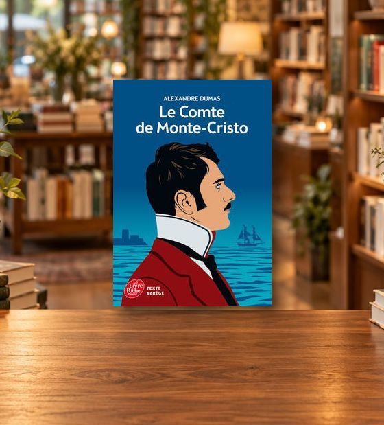
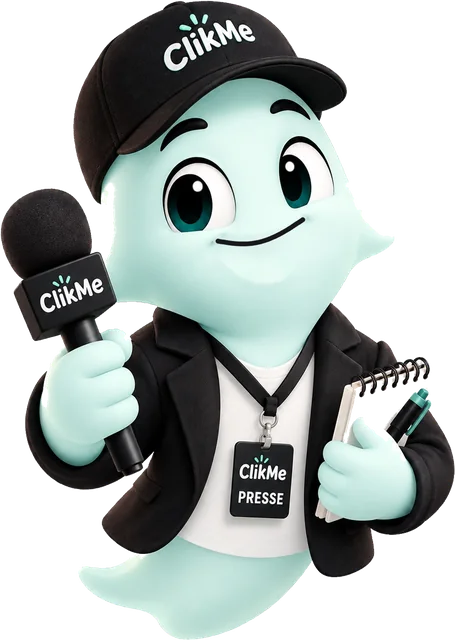
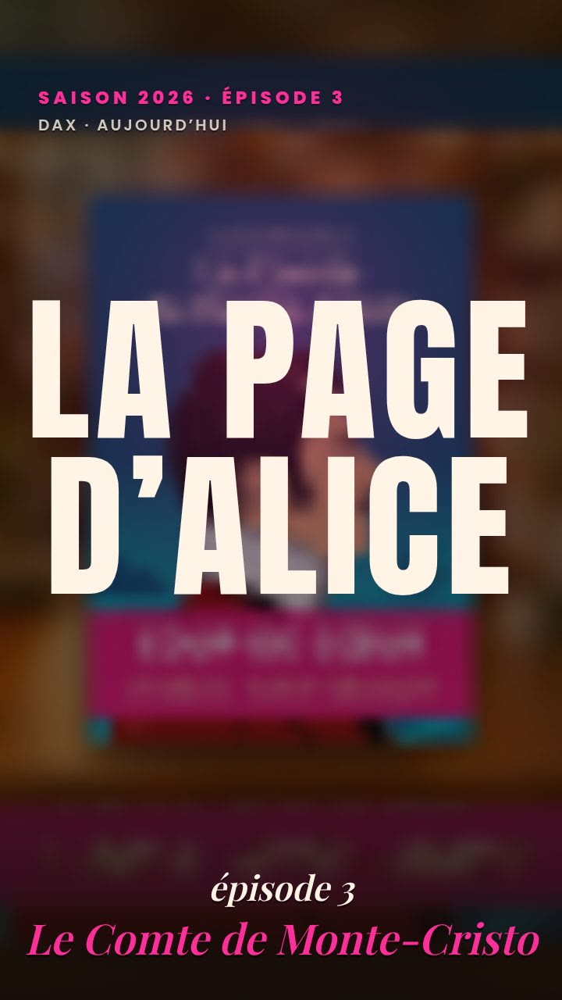
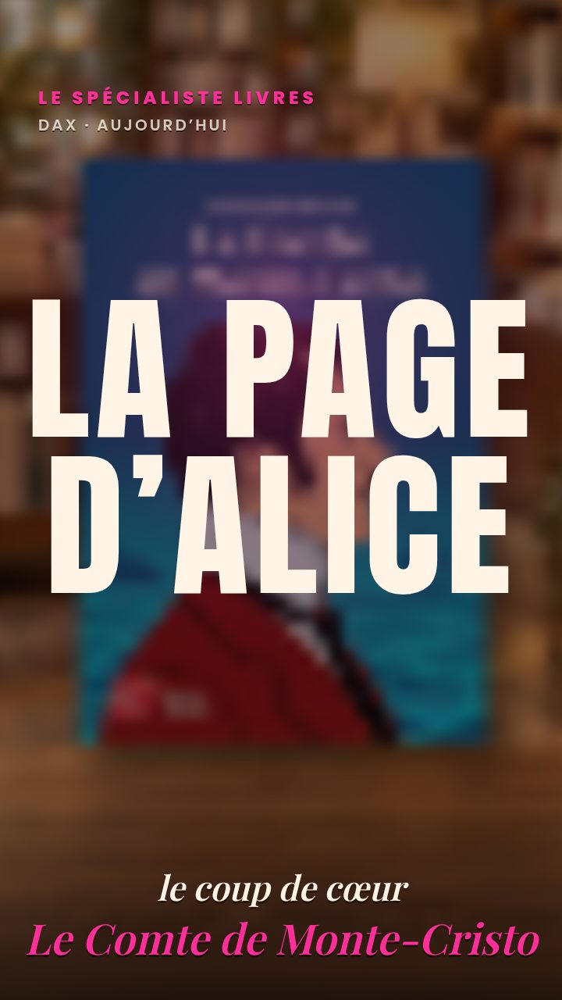
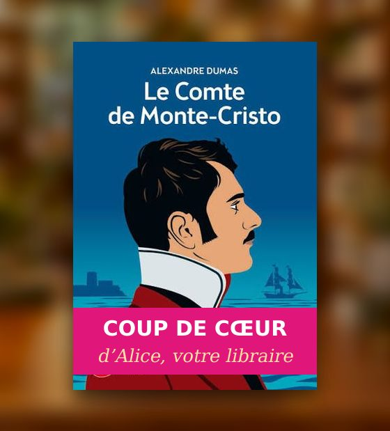
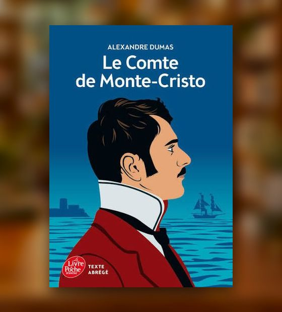
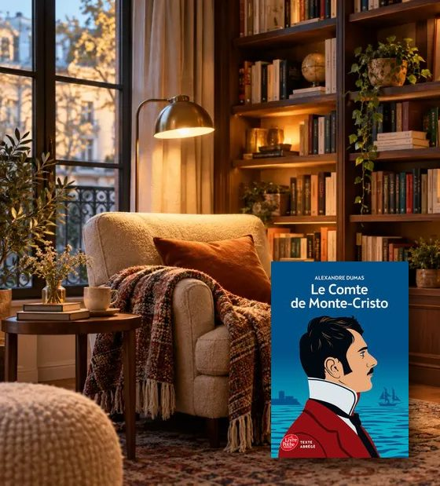
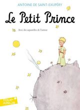
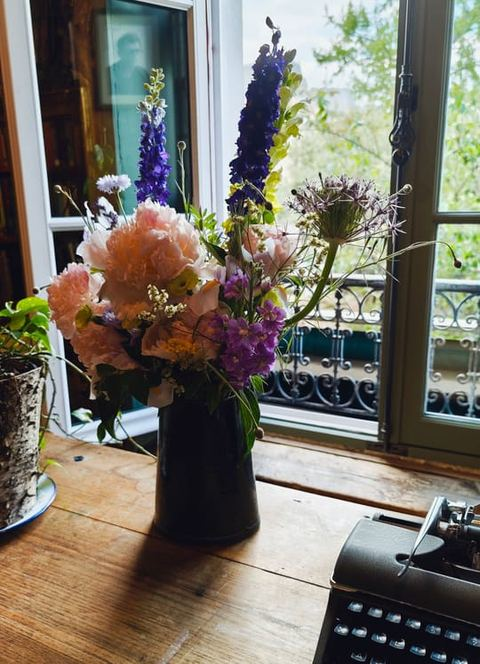

<title>Le tour du fantôme librairie</title>
<meta name="claude:viewport-fit-sides" content="cover">
<link rel="preconnect" href="https://fonts.googleapis.com">
<link rel="stylesheet" href="https://fonts.googleapis.com/css2?family=Poppins:wght@400;500;600;700;800;900&display=swap">
<style>
/* Le fantôme raconte, et le téléphone joue le vrai parcours de ClikMe :
   le comptoir de la librairie (La Page d’Alice), l'annonce que le fantôme
   fabrique, le Direct, la découverte de la cliente (le livre qui s'ouvre,
   son message), la mise de côté sur WhatsApp. Puis l'autre
   côté : la caisse commune entre commerçants. Dans le téléphone, 1em = 4 %
   de sa largeur (l'écran fait 25em × 50em). */
:root{
  --nuit:#140D0A; --brun:#1E1511; --brun2:#2A1F1A; --trait:rgba(255,196,140,.2);
  --creme:#FFF4E6; --gris:#D8C6B3; --encre:#2A1A10;
  --rose:#FF2E9A; --rose2:#E0167A; --ambre:#F5A23A; --orange:#FF8A3D; --menthe:#3DE2A6;
  --titre:"Poppins","Segoe UI",system-ui,sans-serif;
  --ease:cubic-bezier(.34,1.3,.5,1);
  color-scheme:dark;
}
*{box-sizing:border-box}
html,body{background:var(--nuit)}
body{margin:0;color:var(--creme);font-family:var(--titre);-webkit-font-smoothing:antialiased;
  background:radial-gradient(70% 40% at 85% 0%,rgba(255,46,154,.2),transparent 70%),radial-gradient(60% 40% at 0% 40%,rgba(245,162,58,.12),transparent 70%),var(--nuit);min-height:100%}
/* ═══ PAGE 1 : L'ACCROCHE ═══ */
.accueil{position:relative;isolation:isolate;overflow:hidden;min-height:100vh;min-height:100dvh;max-width:480px;margin:0 auto;display:flex;flex-direction:column;align-items:center;justify-content:space-between;gap:18px;text-align:center;
  padding:max(18px,env(safe-area-inset-top,0px)) max(18px,env(safe-area-inset-right,0px)) max(22px,env(safe-area-inset-bottom,0px)) max(18px,env(safe-area-inset-left,0px))}
.accueil[hidden]{display:none}
.accueil .tete{width:100%}
/* LA VIDÉO D'OUVERTURE, en fond : une étincelle, le fantôme sort de la brume, un téléphone d'où
   s'échappent des cœurs, des pièces d'or, un clin d'œil. Elle joue une fois, sans son, et reste
   sur sa dernière image. Le titre et le bouton sont du vrai texte posé par-dessus : le titre
   arrive quand le fantôme est formé, le bouton à la fin. Ses bords se fondent dans la nuit. */
/* Le fond de la page 1 prend la nuit de la vidéo : ses bords ne dessinent plus de rectangle. */
.accueil::before{content:"";position:fixed;inset:0;z-index:-2;pointer-events:none;background:radial-gradient(60% 45% at 50% 52%,rgba(255,46,154,.1),transparent 70%),#0B0202}
.ouverture{position:absolute;left:50%;top:56%;z-index:-1;width:min(100%,calc(100vh * 720 / 1270));width:min(100%,calc(100dvh * 720 / 1270));aspect-ratio:720/1270;transform:translate(-50%,-50%);pointer-events:none;
  -webkit-mask:linear-gradient(180deg,transparent 0,#000 9%,#000 88%,transparent 100%),linear-gradient(90deg,transparent 0,#000 6%,#000 94%,transparent 100%);-webkit-mask-composite:source-in;
  mask:linear-gradient(180deg,transparent 0,#000 9%,#000 88%,transparent 100%),linear-gradient(90deg,transparent 0,#000 6%,#000 94%,transparent 100%);mask-composite:intersect}
.ouverture video,.ouverture img{display:block;width:100%;height:100%;object-fit:cover}
/* « hidden » l'emporte sur le display:block du dessus : sinon la dernière image s'empile sous la vidéo, et deux fantômes. */
.ouverture [hidden]{display:none}
.accueil h1{margin:0 0 auto;font-size:clamp(30px,9vw,44px);text-shadow:0 2px 18px rgba(0,0,0,.85)}
/* Le titre dit les deux promesses, comme l'image : le téléphone (des clients) et les pièces (des dépenses en moins). */
.accueil h1{font-size:clamp(26px,8.6vw,44px)}
.accueil h1 .ligne{display:block;white-space:nowrap}
.accueil h1 .sous{display:block;margin-top:.45em;font-size:.46em;font-weight:700;line-height:1.2;letter-spacing:-.015em;color:rgba(255,244,230,.88)}
.decouvrir{display:flex;align-items:center;justify-content:center;gap:10px;width:100%;max-width:360px;height:60px;flex:none;border-radius:999px;font-weight:900;font-size:18px;color:#fff;
  background:linear-gradient(90deg,#FF4FA8,#E0167A);box-shadow:0 14px 34px -12px rgba(255,46,154,.9);animation:appel 2.2s ease-in-out infinite}
@keyframes appel{0%,100%{transform:none}50%{transform:scale(1.03)}}
/* Pendant la vidéo : le titre et le bouton attendent leur moment. */
.accueil.joue h1,.accueil.joue .decouvrir{opacity:0;visibility:hidden;transform:translateY(14px);transition:opacity .7s ease,transform .8s var(--ease),visibility 0s .8s}
.accueil.joue:not(.bouton-la) .decouvrir{animation:none}
.accueil.joue.titre-la h1,.accueil.joue.bouton-la .decouvrir{opacity:1;visibility:visible;transform:none;transition:opacity .7s ease,transform .8s var(--ease),visibility 0s}
@media (max-height:680px){.accueil h1{font-size:clamp(24px,7.4vw,34px)}.accueil{gap:12px}}
/* « UN JOLI SON QUAND LE FANTÔME APPARAÎT, ET PAS QUAND J'APPUIE SUR LE BOUTON. » Un téléphone
   refuse tout son avant le premier toucher : là où il le refuse, l'ouverture attend ce toucher.
   L'étincelle de la vidéo, d'où le fantôme va naître, attend au centre ; l'invitation respire
   juste dessous. */
.reveil{position:fixed;inset:0;z-index:5;display:flex;flex-direction:column;align-items:center;justify-content:flex-start;gap:8px;padding:calc(56vh + 44px) 24px 0;text-align:center;
  border:0;background:transparent;color:var(--creme);font:inherit;cursor:pointer;-webkit-tap-highlight-color:transparent}
.reveil[hidden]{display:none}
.reveil b{font-weight:900;font-size:20px;letter-spacing:-.02em;text-shadow:0 2px 14px rgba(0,0,0,.85);animation:reveil 2.2s ease-in-out infinite}
.reveil small{font-size:13px;font-weight:700;color:rgba(255,244,230,.72)}
@keyframes reveil{0%,100%{opacity:.65}50%{opacity:1}}
@media (min-width:600px){.accueil h1{font-size:36px}}
@media (max-width:360px){.onglets button{font-size:12.5px;padding:8px 4px}}
.accueil.part{animation:part .55s cubic-bezier(.5,0,.7,.4) forwards}
@keyframes part{to{opacity:0;transform:scale(1.08)}}

/* ═══ PAGE 2 : LA DÉMO, PLEIN ÉCRAN ═══
   L'écran de l'app prend toute la hauteur qui reste une fois les onglets,
   les boutons posés (--cadre). Pas de barre d'étapes au-dessus : le
   téléphone a déjà les siennes, et deux barres empilées dispersaient. */
.page{--cadre:142px;max-width:480px;margin:0 auto;min-height:100vh;min-height:100dvh;display:flex;flex-direction:column;gap:8px;
  padding:max(8px,env(safe-area-inset-top,0px)) max(10px,env(safe-area-inset-right,0px)) max(10px,env(safe-area-inset-bottom,0px)) max(10px,env(safe-area-inset-left,0px))}
.page.arrive{animation:monte .5s var(--ease)}
.page[hidden]{display:none}
button{font:inherit;color:inherit;cursor:pointer;-webkit-tap-highlight-color:transparent;border:0;background:none;padding:0}
button:focus-visible,a:focus-visible{outline:3px solid var(--ambre);outline-offset:3px}
button:disabled{opacity:.35;cursor:default}
img{display:block}

.tete{display:flex;align-items:center;justify-content:space-between;gap:12px}
.tete img{height:28px;width:auto}
h1{margin:0;font-weight:900;font-size:clamp(26px,7.6vw,36px);line-height:1.03;letter-spacing:-.035em;text-wrap:balance}
h1 em{font-style:normal;color:var(--rose)}
.onglets{display:grid;grid-template-columns:repeat(2,minmax(0,1fr));gap:4px;padding:4px;margin-bottom:16px;border-radius:999px;background:var(--brun);border:1px solid var(--trait)}
.onglets button{border-radius:999px;padding:9px 6px;font-weight:800;font-size:14px;color:var(--gris);transition:background .25s,color .25s}
.onglets button[aria-selected="true"]{background:var(--rose);color:#fff;box-shadow:0 8px 22px -8px rgba(255,46,154,.8)}

/* ═══ LE FANTÔME, SUR LE BOUTON « SUIVANT » ═══ */
.scene{position:relative;flex:1;display:flex;flex-direction:column;gap:8px}
.sr{position:absolute;width:1px;height:1px;margin:-1px;overflow:hidden;clip:rect(0 0 0 0);white-space:nowrap}
.fantome{position:relative;flex:none;width:58px;height:54px;margin:-20px 0 -6px -6px;border-radius:50%;pointer-events:none}
.fantome img{width:100%;height:auto;filter:drop-shadow(0 10px 16px rgba(255,46,154,.45));animation:flotte 3.2s ease-in-out infinite}
.fantome::before{content:"";position:absolute;inset:-14px;border-radius:50%;background:radial-gradient(circle,rgba(255,46,154,.35),transparent 68%);z-index:-1}
.anneau{position:absolute;inset:-4px;border-radius:50%;border:3px solid var(--rose);opacity:0;pointer-events:none;animation:anneau 1.9s ease-out infinite}
@keyframes anneau{0%{transform:scale(.75);opacity:.85}100%{transform:scale(1.3);opacity:0}}
@keyframes flotte{0%,100%{transform:translateY(0)}50%{transform:translateY(-6px)}}
.fantome.magie img{animation:magie .9s var(--ease)}
@keyframes magie{0%{transform:rotate(0) scale(1)}30%{transform:rotate(-16deg) scale(1.16)}60%{transform:rotate(12deg) scale(1.08)}100%{transform:rotate(0) scale(1)}}
.fantome.hop img{animation:hop .5s var(--ease)}
@keyframes hop{0%,100%{transform:translateY(0)}45%{transform:translateY(-12px) scale(1.05)}}
.eclats{position:absolute;left:50%;top:50%;width:0;height:0;pointer-events:none}
.eclats i{position:absolute;left:-6px;top:-6px;width:12px;height:12px;opacity:0;background:var(--c,var(--ambre));clip-path:polygon(50% 0,61% 39%,100% 50%,61% 61%,50% 100%,39% 61%,0 50%,39% 39%)}
.fantome.magie .eclats i{animation:eclat .9s ease-out forwards}
@keyframes eclat{0%{opacity:1;transform:rotate(var(--a)) translateY(0) scale(.4)}100%{opacity:0;transform:rotate(var(--a)) translateY(-70px) scale(1.2)}}
.etincelle{position:absolute;z-index:30;width:14px;height:14px;margin:-7px 0 0 -7px;pointer-events:none;background:var(--c,var(--ambre));
  clip-path:polygon(50% 0,61% 39%,100% 50%,61% 61%,50% 100%,39% 61%,0 50%,39% 39%);animation:vole .9s cubic-bezier(.3,.1,.3,1) forwards;animation-delay:var(--d,0s);opacity:0}
@keyframes vole{0%{opacity:1;transform:translate(0,0) scale(.6) rotate(0)}100%{opacity:0;transform:translate(var(--dx),var(--dy)) scale(1.3) rotate(160deg)}}


/* ═══ LE TÉLÉPHONE ═══ */
.telephone{position:relative;width:min(100%,400px,calc((100vh - var(--cadre) - 16px) / 2 + 16px));width:min(100%,400px,calc((100dvh - var(--cadre) - 16px) / 2 + 16px));margin:0 auto;padding:8px;border-radius:46px;background:linear-gradient(150deg,#3E302A,#120C09 60%);
  box-shadow:0 34px 60px -24px rgba(0,0,0,.8),inset 0 0 0 1.5px rgba(255,255,255,.09)}
.ecran{position:relative;aspect-ratio:9/18;border-radius:38px;overflow:hidden;background:#000;container-type:inline-size;isolation:isolate}
.ecran-in{position:absolute;inset:0;font-size:13px;font-size:4cqw;line-height:1.3}
.statut{position:absolute;left:0;right:0;top:0;height:2.9em;z-index:40;display:flex;align-items:center;justify-content:space-between;padding:0 2.8em;font-size:.72em;font-weight:700;color:#fff;pointer-events:none;text-shadow:0 1px 3px rgba(0,0,0,.5)}
.statut i{display:inline-block;width:2.2em;height:1em;border:1.5px solid #fff;border-radius:.3em;position:relative}
.statut i::after{content:"";position:absolute;inset:1.5px;right:30%;background:#fff;border-radius:.15em}
.encoche{position:absolute;left:50%;top:.45em;width:6.4em;height:1.4em;margin-left:-3.2em;border-radius:1em;background:#000;z-index:41}
.v{position:absolute;inset:0;overflow:hidden;opacity:0;visibility:hidden;transition:opacity .45s,visibility 0s .45s}
.v.on{opacity:1;visibility:visible;transition:opacity .45s}
.doigt{animation:doigt 1.5s ease-out infinite}
@keyframes doigt{0%{box-shadow:0 0 0 0 rgba(255,46,154,.8)}70%{box-shadow:0 0 0 .8em rgba(255,46,154,0)}100%{box-shadow:0 0 0 0 rgba(255,46,154,0)}}
.go{display:flex;align-items:center;justify-content:center;gap:.5em;width:100%;height:3.8em;border-radius:2em;font-weight:800;font-size:1.1em;color:#fff;
  background:linear-gradient(90deg,#FF4FA8,#E0167A);box-shadow:0 .6em 1.6em -.5em rgba(255,46,154,.75)}
.go[hidden]{display:none}

.commandes{display:flex;align-items:center;gap:8px;margin-top:auto}
.commandes .vide{flex:1}
.commandes button{height:40px;border-radius:999px;border:1px solid var(--trait);background:var(--brun);font-weight:800;font-size:15px}
.prec,.son,.info-b{width:40px;flex:none;display:grid;place-items:center}
.info-b{font-family:Georgia,serif;font-style:italic;font-size:19px!important;color:var(--ambre)}
.prec{font-size:22px!important}
.son svg{width:20px;height:20px}
.note{margin:14px 0 0;font-size:12.5px;line-height:1.4;color:var(--gris);opacity:.9}

/* ═══ COMPTOIR (la boutique) ═══ */
.cz,.ex{background:radial-gradient(70% 38% at 50% 36%,rgba(255,46,154,.16),transparent 70%),linear-gradient(180deg,#22160F,#140D0A 60%)}
.cz-tete{position:absolute;left:0;right:0;top:2.3em;display:flex;align-items:center;gap:.6em;padding:0 .9em}
.cz-av{width:2.6em;height:2.6em;border-radius:50%;background:#2A1F1A;border:1.5px solid var(--ambre);object-fit:cover}
.cz-qui{flex:1;min-width:0;display:flex;flex-direction:column}
.cz-qui b{font-size:.95em;font-weight:800;line-height:1.1}
.cz-qui small{font-size:.68em;color:var(--gris)}
.cz-pastilles{display:flex;gap:.3em}
.cz-pastilles span{padding:.25em .5em;border-radius:1em;border:1px solid var(--trait);font-size:.62em;font-weight:800;white-space:nowrap}
.cz-pastilles .r{border-color:rgba(255,46,154,.6)}
.cz-pas{position:absolute;left:.9em;right:.9em;top:5.7em;display:flex;align-items:center;gap:.4em}
.cz-pas .rond{display:grid;place-items:center;width:2em;height:2em;border-radius:50%;background:rgba(255,255,255,.08);font-weight:800;margin-right:.3em}
.cz-pas i{flex:1;height:.3em;border-radius:1em;background:rgba(255,255,255,.14)}
.cz-pas i.on{background:var(--rose)}
.cz-pas em{font-style:normal;font-size:.7em;font-weight:700;color:var(--gris);margin-left:.4em}
.cz-guide{position:absolute;left:0;right:0;top:9.4em;display:flex;flex-direction:column;align-items:center}
.cz-bulle{position:relative;margin:0 1.2em;padding:.8em 1em;border-radius:1.1em;background:var(--creme);color:var(--encre);box-shadow:0 .6em 1.4em rgba(0,0,0,.35)}
.cz-bulle b{display:block;font-size:1.12em;font-weight:800;line-height:1.2;text-wrap:balance}
.cz-bulle small{display:block;margin-top:.3em;font-size:.74em;line-height:1.35;color:#6A5444}
.cz-bulle::after{content:"";position:absolute;left:50%;bottom:-.45em;width:.9em;height:.9em;margin-left:-.45em;background:var(--creme);transform:rotate(45deg);border-radius:.15em}
.cz-fant{position:relative;width:13em;height:13em;object-fit:contain;margin-top:.6em;filter:drop-shadow(0 .8em 1.2em rgba(0,0,0,.45))}
.cz-bulle strong{display:block;margin-top:.6em;padding-top:.55em;border-top:1.5px dashed rgba(106,84,68,.28);font-size:.9em;font-weight:800;line-height:1.25;color:#A9530C;animation:monte .45s var(--ease) both}
.cz-guide .cz-pied{position:relative;display:flex;justify-content:center}
/* Photo et voix : le fantôme se pousse à gauche, la bulle à droite */
.cz:not([data-sous="nom"]) .cz-guide{top:8.6em;flex-direction:row-reverse;align-items:center;padding:0 .8em 0 .2em}
.cz:not([data-sous="nom"]) .cz-fant{width:5.4em;height:5.4em;margin:0;flex:none}
.cz:not([data-sous="nom"]) .cz-bulle{flex:1;margin:0 0 0 .2em}
.cz:not([data-sous="nom"]) .cz-bulle::after{left:-.4em;top:50%;bottom:auto;margin:-.45em 0 0}
.cz-p{position:absolute;left:0;right:0;bottom:0;display:none}
.cz[data-sous="nom"] .cz-p-nom,.cz[data-sous="photo"] .cz-p-photo,.cz[data-sous="voix"] .cz-p-voix,.cz[data-sous="fini"] .cz-p-voix{display:block}
.cz-p-nom{padding:1.1em 1em 1.6em;border-radius:1.6em 1.6em 0 0;background:rgba(255,244,230,.05);border-top:1px solid var(--trait)}
.cz-champs{display:grid;grid-template-columns:1fr 5.6em;gap:.6em;margin-bottom:.9em}
.cz-champs label{display:flex;flex-direction:column;gap:.35em;font-size:.66em;font-weight:800;letter-spacing:.12em;color:var(--ambre);min-width:0}
.cz-in{display:flex;align-items:center;min-height:3.6em;padding:0 .8em;border-radius:1em;border:1.5px solid var(--ambre);background:rgba(0,0,0,.25);
  font-size:1.38em;letter-spacing:0;font-weight:600;color:var(--creme);white-space:nowrap;overflow:hidden}
.cz-in.vide::after{content:"";width:1.5px;height:1.2em;background:var(--ambre);animation:clign 1s steps(1) infinite}
@keyframes clign{50%{opacity:0}}
.cz-p-photo{top:16.6em}
.viseur{position:relative;width:19.5em;height:17.5em;margin:0 auto;border-radius:1.4em;overflow:hidden;background:#000}
.viseur img{width:100%;height:100%;object-fit:cover;animation:vivant 4s ease-in-out infinite alternate}
@keyframes vivant{from{transform:scale(1.04) translate(1%,1%)}to{transform:scale(1.1) translate(-1%,-1%)}}
.viseur::before{content:"";position:absolute;inset:1em;z-index:2;border:1.5px solid rgba(255,255,255,.55);border-radius:.8em;
  -webkit-mask:linear-gradient(#000 0 0) top left/2em 2em no-repeat,linear-gradient(#000 0 0) top right/2em 2em no-repeat,linear-gradient(#000 0 0) bottom left/2em 2em no-repeat,linear-gradient(#000 0 0) bottom right/2em 2em no-repeat;
  mask:linear-gradient(#000 0 0) top left/2em 2em no-repeat,linear-gradient(#000 0 0) top right/2em 2em no-repeat,linear-gradient(#000 0 0) bottom left/2em 2em no-repeat,linear-gradient(#000 0 0) bottom right/2em 2em no-repeat}
.flash{position:absolute;inset:0;z-index:3;background:#fff;opacity:0;pointer-events:none}
.flash.eclair{animation:flash .35s ease-out}
@keyframes flash{0%{opacity:.9}100%{opacity:0}}
.vignettes{display:flex;justify-content:center;gap:.5em;margin:.9em 0 0}
.vignettes span{width:4.2em;height:4.2em;border-radius:.8em;border:1.5px dashed rgba(255,255,255,.22);overflow:hidden;background-size:cover;background-position:center;transition:transform .35s var(--ease)}
.vignettes span.pleine{border:1.5px solid var(--ambre);transform:scale(1.06)}
.declic{display:block;width:4.8em;height:4.8em;margin:1.1em auto 0;border-radius:50%;background:#fff;border:.35em solid rgba(255,255,255,.35);background-clip:padding-box}
.declic:active{transform:scale(.94)}
.cz-p-voix{top:16em;padding:0 1.1em}
.transcrit{min-height:10.6em;padding:.9em 1em;border-radius:1.1em;background:rgba(255,244,230,.06);border:1px solid var(--trait);font-size:.86em;line-height:1.45;color:var(--creme)}
.transcrit .gris{color:var(--gris);opacity:.75}
.transcrit p{margin:0 0 .3em;animation:monte .4s var(--ease)}
@keyframes monte{from{opacity:0;transform:translateY(.5em)}to{opacity:1;transform:none}}
.onde{display:flex;align-items:center;justify-content:center;gap:.22em;height:3.2em;margin-top:.8em}
.onde i{width:.26em;height:var(--h,30%);border-radius:1em;background:rgba(255,255,255,.25)}
.cz.enregistre .onde i{background:var(--rose);animation:danse .5s ease-in-out infinite alternate;animation-delay:var(--dl)}
@keyframes danse{from{transform:scaleY(.35)}to{transform:scaleY(1.15)}}
.minuteur{text-align:center;font-size:.95em;font-weight:800;letter-spacing:.05em;margin:.3em 0}
.minuteur.rouge::before{content:"";display:inline-block;width:.6em;height:.6em;border-radius:50%;background:#FF3B3B;margin-right:.5em;vertical-align:.05em;animation:clign 1s steps(1) infinite}
.micro{display:grid;place-items:center;width:5.4em;height:5.4em;margin:.4em auto 0;border-radius:50%;background:linear-gradient(135deg,#FF4FA8,#E0167A);box-shadow:0 .6em 1.6em -.4em rgba(255,46,154,.8)}
.micro svg{width:2.3em;height:2.3em}
.cz.enregistre .micro{background:#FF3B3B;animation:pouls 1s ease-in-out infinite}
@keyframes pouls{50%{transform:scale(1.07)}}
.cz[data-sous="fini"] .micro{background:var(--menthe);box-shadow:none}
.cz-p-voix .go{position:absolute;left:1em;right:1em;width:auto;bottom:1.6em}
/* ═══ ÉTAPE 3 : SA VOIX, OU NOTRE SPÉCIALISTE ═══
   « Proposer à l'étape 3 le mode interview ou le mode journaliste, pour montrer les 2 scénarios. » */
.cz[data-sous="choix"] .cz-p-choix{display:flex}
.cz-p-choix{top:16.4em;flex-direction:column;gap:.7em;padding:0 1.1em}
.cz-mode{position:relative;display:flex;align-items:center;gap:.9em;min-height:7.4em;padding:1em 1.1em;border-radius:1.4em;text-align:left;
  border:1.5px solid var(--trait);background:rgba(255,244,230,.05);color:var(--creme);transition:transform .2s,border-color .2s}
.cz-mode:active{transform:scale(.98)}
.cz-mode b{display:block;font-size:1.02em;font-weight:800;line-height:1.2}
.cz-mode small{display:block;margin-top:.3em;font-size:.78em;line-height:1.35;color:var(--gris)}
.cz-mode-ic{display:grid;place-items:center;flex:none;width:3.6em;height:3.6em;border-radius:50%;background:linear-gradient(135deg,#FF4FA8,#E0167A);box-shadow:0 .5em 1.2em -.4em rgba(255,46,154,.8)}
.cz-mode-ic svg{width:1.7em;height:1.7em}
.cz-mode img{flex:none;width:3.9em;height:4.6em;object-fit:contain;margin:-.4em -.2em -.4em -.3em;filter:drop-shadow(0 .4em .6em rgba(0,0,0,.45))}
.cz-mode.spe{border-color:rgba(245,162,58,.5);background:linear-gradient(135deg,rgba(245,162,58,.13),rgba(255,46,154,.07))}
.cz-mode.spe b{color:#FFE2A6}
.cz-ou-bien{margin:-.2em 0;text-align:center;font-size:.72em;font-weight:800;letter-spacing:.14em;text-transform:uppercase;color:var(--gris);opacity:.8}
.cz[data-sous="spe"] .cz-p-spe,.cz[data-sous="spe-fini"] .cz-p-spe{display:flex}
.cz-p-spe{top:15.6em;flex-direction:column;gap:.65em;padding:0 1.1em}
.cz-cases{display:flex;flex-wrap:wrap;gap:.35em}
.cz-cases span{padding:.45em .8em;border-radius:2em;border:1px solid var(--trait);background:rgba(255,244,230,.05);font-size:.74em;font-weight:700;color:var(--gris);transition:all .3s}
.cz-cases span.on{border-color:#3DE2A6;background:rgba(61,226,166,.14);color:#3DE2A6;animation:monte .35s var(--ease)}
.cz-cases span.on::before{content:"✓ "}
.cz-recit{position:relative;display:flex;align-items:flex-start;gap:.6em;margin:0;padding:.8em .9em;border-radius:1.2em;background:var(--creme);color:var(--encre);
  opacity:0;transform:translateY(.5em);transition:opacity .35s,transform .45s var(--ease)}
.cz-recit.on{opacity:1;transform:none}
.cz-recit img{flex:none;width:3em;height:3.6em;object-fit:contain;margin:-.3em 0 0 -.2em}
.cz-recit blockquote{margin:0;min-height:6.5em;font-size:.8em;line-height:1.4;font-weight:600}
.cz-recit-n{margin:-.2em 0 0;text-align:center;font-size:.7em;color:var(--gris)}
.cz-p-spe .go{flex:none}
.cz-spe-film{display:none;align-items:center;gap:.8em;padding:.6em;border-radius:1.1em;border:1px solid rgba(245,162,58,.45);background:rgba(245,162,58,.08)}
.cz[data-sous="spe-fini"] .cz-spe-film{display:flex}
.cz[data-sous="spe-fini"] #cz-spe-ok,.cz:not([data-sous="spe-fini"]) #cz-spe-pub{display:none}
.cz-spe-film img{width:3.2em;height:5.4em;border-radius:.6em;object-fit:cover;flex:none}
.cz-spe-film span{flex:1;min-width:0}
.cz-spe-film b{display:block;font-size:.84em;line-height:1.3}
.cz-spe-film i{display:block;height:.35em;margin-top:.55em;border-radius:1em;background:rgba(255,255,255,.12);overflow:hidden}
.cz-spe-film em{display:block;height:100%;width:0;border-radius:1em;background:linear-gradient(90deg,var(--ambre),var(--rose));transition:width 2.4s linear}
.cz-spe-film.pret em{width:100%}
/* LES TROIS FAÇONS DE RACONTER : plus serrées, pour tenir à trois */
.cz-p-choix{gap:.55em}
.cz-p-choix .cz-mode{min-height:0;padding:.75em .9em .8em;gap:.75em}
.cz-p-choix .cz-mode b{font-size:.96em}
.cz-p-choix .cz-mode small{font-size:.72em;margin-top:.2em}
.cz-p-choix .cz-mode-ic{width:3em;height:3em;font-size:1.35em}
.cz-p-choix .cz-mode img{width:3.3em;height:3.9em}
.cz-mode-t{display:inline-block;margin-top:.45em;padding:.15em .6em;border-radius:1em;background:rgba(255,255,255,.08);font-style:normal;font-size:.66em;font-weight:800;color:var(--creme)}
.cz-mode.episode{border-color:rgba(255,46,154,.55);background:linear-gradient(135deg,rgba(255,46,154,.16),rgba(245,162,58,.08))}
.cz-mode.episode .cz-mode-ic{background:linear-gradient(135deg,#FFB547,#FF2E9A)}
.cz-mode-nouveau{position:absolute;top:-.6em;right:.9em;padding:.15em .55em;border-radius:1em;background:var(--rose);color:#fff;font-style:normal;font-size:.58em;font-weight:900;letter-spacing:.08em;text-transform:uppercase}
/* L'INTERVIEW : la question au-dessus de ses réponses */
.cz-question{margin:0 0 .6em;padding:.55em .8em;border-radius:.9em;background:rgba(255,46,154,.1);border:1px solid rgba(255,46,154,.35);font-size:.78em;font-weight:700;line-height:1.35}
.cz-question:empty{display:none}
.cz-question b{color:var(--rose)}
/* L'ÉPISODE, EN TROIS TEMPS QU'ON VOIT : le téléphone posé qui passe en plan large (0,5×, le niveau,
   le cadre) ; la séance en accéléré, où chaque moment gardé est repéré puis part dans la pellicule ;
   le montage sous ses yeux (la pellicule devient le banc de montage, la liste se coche, l'affiche). */
.cz[data-sous^="ep-"] .cz-p-episode{display:flex}
.cz-p-episode{top:16.1em;flex-direction:column;gap:.6em;padding:0 1.1em 1.3em}
.cz-p-episode .go{flex:none}
.go.rouge{background:#E5303B;box-shadow:0 .6em 1.4em -.6em rgba(229,48,59,.8)}
.cz:not([data-sous="ep-cadre"]) #cz-ep-go,.cz:not([data-sous="ep-session"]) #cz-ep-fin,.cz:not([data-sous="ep-fini"]) #cz-ep-pub{display:none}
@keyframes clignote{50%{opacity:.25}}
@keyframes ep-pop{from{opacity:0;transform:translateX(-50%) scale(.6)}}
/* la caméra */
.ep-cam{position:relative;flex:1;min-height:10em;border-radius:1.3em;overflow:hidden;background:#000;box-shadow:0 .8em 1.6em -.8em rgba(0,0,0,.8),inset 0 0 0 1px rgba(255,255,255,.1)}
.cz[data-sous="ep-fini"] .ep-cam{display:none}
.ep-vue{position:absolute;inset:0;transition:transform 1.3s cubic-bezier(.65,0,.25,1)}
.ep-cam.serre .ep-vue{transform:scale(1.8)}
.ep-vue img{position:absolute;inset:0;width:100%;height:100%;object-fit:cover;opacity:0;transition:opacity .45s}
.ep-vue img.on{opacity:1}
.ep-cam.tourne .ep-vue img.file{animation:ep-file 2.6s linear both}
@keyframes ep-file{from{transform:scale(1)}to{transform:scale(1.08)}}
.ep-grille{position:absolute;inset:0;pointer-events:none;opacity:0;transition:opacity .6s;
  background:linear-gradient(90deg,transparent calc(33.3% - 1px),rgba(255,255,255,.45) 33.3%,transparent calc(33.3% + 1px),transparent calc(66.6% - 1px),rgba(255,255,255,.45) 66.6%,transparent calc(66.6% + 1px)),
    linear-gradient(transparent calc(33.3% - 1px),rgba(255,255,255,.45) 33.3%,transparent calc(33.3% + 1px),transparent calc(66.6% - 1px),rgba(255,255,255,.45) 66.6%,transparent calc(66.6% + 1px))}
.ep-cam.large .ep-grille{opacity:1}
.ep-coins{position:absolute;inset:30%;opacity:0;pointer-events:none;transition:inset .9s var(--ease),opacity .3s}
.ep-cam.cadre .ep-coins{inset:13% 7% 23%;opacity:1}
.ep-coins i{position:absolute;width:1.8em;height:1.8em;border:.22em solid #FFD60A;filter:drop-shadow(0 0 .3em rgba(255,214,10,.6))}
.ep-coins i:nth-child(1){left:0;top:0;border-right:0;border-bottom:0;border-radius:.6em 0 0 0}
.ep-coins i:nth-child(2){right:0;top:0;border-left:0;border-bottom:0;border-radius:0 .6em 0 0}
.ep-coins i:nth-child(3){left:0;bottom:0;border-right:0;border-top:0;border-radius:0 0 0 .6em}
.ep-coins i:nth-child(4){right:0;bottom:0;border-left:0;border-top:0;border-radius:0 0 .6em 0}
/* le niveau : penché, puis droit (jaune), comme l'appareil photo du téléphone */
.ep-niveau{position:absolute;left:50%;top:50%;width:9em;height:0;margin-left:-4.5em;opacity:0;pointer-events:none;transition:opacity .3s}
.ep-niveau::before,.ep-niveau::after{content:"";position:absolute;top:-1px;width:1.8em;border-top:2px solid rgba(255,255,255,.9);transition:border-color .3s}
.ep-niveau::before{left:0}
.ep-niveau::after{right:0}
.ep-niveau i{position:absolute;left:2.4em;right:2.4em;top:-1px;border-top:2px solid rgba(255,255,255,.9);transform:rotate(-10deg);transition:transform 1s var(--ease),border-color .3s}
.ep-cam.pose .ep-niveau{opacity:1}
.ep-cam.droit .ep-niveau i{transform:none}
.ep-cam.droit .ep-niveau::before,.ep-cam.droit .ep-niveau::after,.ep-cam.droit .ep-niveau i{border-color:#FFD60A}
.ep-cam.cadre .ep-niveau{opacity:0;transition-delay:.8s}
/* les objectifs : 1×, puis 0,5× (le plan large) */
.ep-objectifs{position:absolute;left:50%;bottom:.9em;display:flex;align-items:center;gap:.35em;padding:.3em;border-radius:2em;transform:translateX(-50%);background:rgba(0,0,0,.5);-webkit-backdrop-filter:blur(6px);backdrop-filter:blur(6px)}
.ep-objectifs b{display:grid;place-items:center;width:2.4em;height:2.4em;border-radius:50%;font-size:.72em;font-weight:800;color:#fff;background:rgba(255,255,255,.14);transition:transform .35s var(--ease),color .2s,background .2s}
.ep-objectifs b.on{color:#FFD60A;background:rgba(20,14,10,.92);transform:scale(1.22)}
.ep-objectifs b.touche{animation:ep-touche .55s ease-out}
@keyframes ep-touche{0%{box-shadow:0 0 0 0 rgba(255,214,10,.85)}100%{box-shadow:0 0 0 1.1em rgba(255,214,10,0)}}
.ep-etat{position:absolute;left:50%;top:.8em;transform:translateX(-50%);white-space:nowrap;padding:.4em .85em;border-radius:2em;font-size:.72em;font-weight:800;color:#fff;background:rgba(14,9,7,.72);border:1px solid rgba(255,255,255,.25)}
.ep-etat.ok{background:rgba(13,60,44,.94);border-color:var(--menthe);color:#BFFFE6;animation:ep-pop .45s var(--ease)}
.cz:not([data-sous="ep-cadre"]) .ep-objectifs,.cz:not([data-sous="ep-cadre"]) .ep-etat,.cz:not([data-sous="ep-cadre"]) .ep-coins,.cz:not([data-sous="ep-cadre"]) .ep-niveau{display:none}
/* la séance : l'enregistrement, l'accéléré, le moment repéré (le reste s'assombrit), le flash */
.ep-rec,.ep-vite{position:absolute;top:.75em;display:none;align-items:center;gap:.45em;padding:.34em .75em;border-radius:2em;background:rgba(14,9,7,.72);font-size:.72em;font-weight:800;color:#fff;font-variant-numeric:tabular-nums}
.ep-rec{left:.75em}
.ep-rec i{width:.65em;height:.65em;border-radius:50%;background:#FF3B3B;animation:clignote 1.1s steps(2) infinite}
.ep-vite{right:.75em;color:#FFD60A}
.cz[data-sous="ep-session"] .ep-rec,.cz[data-sous="ep-session"] .ep-vite{display:flex}
.ep-vise{position:absolute;border:2px solid #FFD60A;border-radius:.6em;opacity:0;pointer-events:none}
.ep-vise.on{animation:ep-vise 1.5s ease-out both}
@keyframes ep-vise{0%{opacity:0;transform:scale(1.5);box-shadow:0 0 0 999em rgba(0,0,0,0)}
  22%{opacity:1;transform:scale(1);box-shadow:0 0 0 999em rgba(0,0,0,.5)}30%{transform:scale(1.06)}38%{transform:scale(1)}
  78%{opacity:1;box-shadow:0 0 0 999em rgba(0,0,0,.5)}100%{opacity:0;transform:scale(1);box-shadow:0 0 0 999em rgba(0,0,0,0)}}
.ep-flash{position:absolute;inset:0;background:#fff;opacity:0;pointer-events:none}
.ep-flash.on{animation:flash .35s ease-out}
.ep-garde{position:absolute;left:50%;bottom:.85em;width:max-content;max-width:calc(100% - 1.6em);padding:.45em .85em;border-radius:1.2em;transform:translateX(-50%);
  font-size:.74em;font-weight:800;line-height:1.25;text-align:center;color:#fff;background:linear-gradient(90deg,#FF4FA8,#E0167A);box-shadow:0 .5em 1.2em -.4em rgba(255,46,154,.8);opacity:0;pointer-events:none}
.ep-garde.on{animation:ep-garde 1.9s var(--ease) both}
@keyframes ep-garde{0%{opacity:0;transform:translateX(-50%) translateY(.8em) scale(.9)}15%{opacity:1;transform:translateX(-50%)}82%{opacity:1;transform:translateX(-50%)}100%{opacity:0;transform:translateX(-50%) translateY(-.3em)}}
.ep-garde.reste{opacity:1;background:rgba(13,60,44,.94);box-shadow:none;border:1px solid var(--menthe);color:#BFFFE6;animation:ep-pop .45s var(--ease) both}
.ep-vol{position:absolute;z-index:6;object-fit:cover;border-radius:.9em;border:2px solid #FFD60A;box-shadow:0 1em 2em -.6em rgba(0,0,0,.85);pointer-events:none}
/* ce qui est réglé, au cadre */
.ep-reglages{display:none;flex:none;flex-wrap:wrap;justify-content:center;gap:.4em}
.cz[data-sous="ep-cadre"] .ep-reglages{display:flex}
.ep-reglages span{padding:.45em .8em;border-radius:2em;border:1px solid var(--trait);background:rgba(255,244,230,.05);font-size:.74em;font-weight:700;color:var(--gris);transition:all .3s}
.ep-reglages span.on{border-color:var(--menthe);background:rgba(61,226,166,.14);color:var(--menthe);animation:monte .35s var(--ease)}
.ep-reglages span.on::before{content:"✓ "}
/* la séance qui se remplit, et ses moments gardés */
.ep-seance{display:none;flex:none;padding:.6em .8em .7em;border-radius:1.1em;background:rgba(255,244,230,.05);border:1px solid var(--trait)}
.cz[data-sous="ep-session"] .ep-seance{display:block}
.ep-seance p{display:flex;align-items:baseline;gap:.4em;margin:0 0 .55em;font-size:.72em;font-weight:700;color:var(--gris)}
.ep-seance p span{flex:1;font-weight:800;letter-spacing:.12em;text-transform:uppercase}
.ep-seance p b{font-size:1.75em;font-weight:900;line-height:1;color:var(--menthe);font-variant-numeric:tabular-nums}
.ep-piste{position:relative;display:flex;align-items:flex-end;gap:2px;height:2.1em}
.ep-piste i{flex:1;height:var(--h);border-radius:1em;background:rgba(255,255,255,.13);transition:background .25s}
.ep-piste i.vu{background:linear-gradient(0deg,var(--rose),var(--ambre))}
.ep-piste em{position:absolute;top:-.7em;width:1.1em;height:1.1em;margin-left:-.55em;background:#FFD60A;clip-path:polygon(50% 0,61% 39%,100% 50%,61% 61%,50% 100%,39% 61%,0 50%,39% 39%);animation:ep-etoile .6s var(--ease) both}
@keyframes ep-etoile{from{opacity:0;transform:translateY(-1.4em) scale(.3) rotate(-90deg)}}
/* la pellicule : quatre cases, puis le banc de montage */
.ep-pellicule{position:relative;display:none;flex:none;justify-content:center;gap:.5em}
.cz[data-sous="ep-session"] .ep-pellicule,.cz[data-sous="ep-fini"] .ep-pellicule{display:flex}
.ep-pellicule span{position:relative;flex:1;max-width:4.8em;aspect-ratio:1;border-radius:.8em;border:1.5px dashed rgba(255,255,255,.25);background:center/cover no-repeat}
.ep-pellicule span.plein{border:2px solid #FFD60A;animation:ep-plein .45s var(--ease)}
@keyframes ep-plein{from{transform:scale(1.25)}}
.ep-pellicule span.plein::after{content:"";position:absolute;right:-.4em;top:-.4em;width:1em;height:1em;background:#FFD60A;clip-path:polygon(50% 0,61% 39%,100% 50%,61% 61%,50% 100%,39% 61%,0 50%,39% 39%)}
.ep-tete{display:none}
.cz[data-sous="ep-fini"] .ep-pellicule{gap:3px;padding:.75em .55em;border-radius:.8em;background:#0B0705;border:1px solid var(--trait)}
.cz[data-sous="ep-fini"] .ep-pellicule::before,.cz[data-sous="ep-fini"] .ep-pellicule::after{content:"";position:absolute;left:.55em;right:.55em;height:.32em;border-radius:.1em;background:repeating-linear-gradient(90deg,rgba(255,244,230,.3) 0 .45em,transparent .45em .9em)}
.cz[data-sous="ep-fini"] .ep-pellicule::before{top:.2em}
.cz[data-sous="ep-fini"] .ep-pellicule::after{bottom:.2em}
.cz[data-sous="ep-fini"] .ep-pellicule span{max-width:none;aspect-ratio:auto;height:3em;border:0;border-radius:.25em;animation:none}
.cz[data-sous="ep-fini"] .ep-pellicule span::after{content:none}
.cz[data-sous="ep-fini"] .ep-tete{display:block;position:absolute;top:.15em;bottom:.15em;left:.55em;width:2px;margin-left:-1px;border-radius:2px;background:#fff;box-shadow:0 0 .6em #fff,0 0 1.2em var(--rose)}
.ep-pellicule.monte .ep-tete{animation:ep-tete 3s linear forwards}
@keyframes ep-tete{to{left:calc(100% - .55em)}}
/* le montage : l'affiche (les moments qui défilent, puis la sienne) et la liste qui se coche */
.ep-montage{display:none;flex:1;min-height:0;align-items:center;gap:.9em}
.cz[data-sous="ep-fini"] .ep-montage{display:flex}
.ep-affiche{position:relative;flex:none;height:19em;aspect-ratio:9/16;border-radius:1em;overflow:hidden;background:#000;box-shadow:0 1em 2em -.8em rgba(0,0,0,.85),0 0 0 1px rgba(255,255,255,.12)}
.ep-affiche img{position:absolute;inset:0;width:100%;height:100%;object-fit:cover;opacity:0}
.ep-affiche .ep-coupe.on{opacity:1;animation:ep-coupe .75s ease-out both}
@keyframes ep-coupe{from{transform:scale(1.18)}to{transform:scale(1.03)}}
.ep-affiche .ep-poster{transform:scale(1.12);transition:opacity .5s,transform .9s var(--ease)}
.ep-montage.pret .ep-poster{opacity:1;transform:none}
.ep-reflet{position:absolute;inset:0;background:linear-gradient(105deg,transparent 35%,rgba(255,255,255,.55) 50%,transparent 65%);transform:translateX(-120%);pointer-events:none}
.ep-montage.pret .ep-reflet{animation:ep-reflet 1.1s .25s ease-in-out both}
@keyframes ep-reflet{to{transform:translateX(120%)}}
.ep-lecture{position:absolute;left:50%;top:70%;width:3.2em;height:3.2em;margin:-1.6em 0 0 -1.6em;border-radius:50%;background:rgba(255,255,255,.22);-webkit-backdrop-filter:blur(6px);backdrop-filter:blur(6px);border:1.5px solid rgba(255,255,255,.75);opacity:0;transform:scale(.4);transition:opacity .3s .5s,transform .5s .5s var(--ease)}
.ep-lecture::after{content:"";position:absolute;left:1.15em;top:.92em;border-left:1.1em solid #fff;border-top:.65em solid transparent;border-bottom:.65em solid transparent}
.ep-montage.pret .ep-lecture{opacity:1;transform:none}
.ep-duree{position:absolute;right:.5em;top:.5em;padding:.2em .5em;border-radius:.5em;background:rgba(0,0,0,.7);font-size:.72em;font-weight:800;color:#fff;opacity:0;transition:opacity .3s .7s}
.ep-montage.pret .ep-duree{opacity:1}
.ep-table{flex:1;min-width:0;display:flex;flex-direction:column;gap:.5em}
.ep-table-t{margin:0;font-size:.66em;font-weight:800;letter-spacing:.14em;text-transform:uppercase;color:var(--gris)}
.ep-pct{display:block;margin:-.15em 0 .1em;font-size:2.5em;font-weight:900;line-height:1;letter-spacing:-.03em;font-variant-numeric:tabular-nums;background:linear-gradient(90deg,var(--ambre),var(--rose));-webkit-background-clip:text;background-clip:text;color:transparent}
.ep-etapes{list-style:none;margin:0;padding:0;display:flex;flex-direction:column;gap:.55em}
.ep-etapes li{display:flex;align-items:center;gap:.55em;font-size:.78em;font-weight:700;line-height:1.25;color:var(--gris);opacity:.5;transition:opacity .3s,color .3s}
.ep-etapes li i{flex:none;display:grid;place-items:center;width:1.6em;height:1.6em;border-radius:50%;border:2px solid rgba(255,255,255,.2);font-style:normal;font-size:.85em}
.ep-etapes li.encours,.ep-etapes li.fait{opacity:1;color:var(--creme)}
.ep-etapes li.encours i{border-color:var(--rose);border-top-color:transparent;animation:ep-tourne .7s linear infinite}
@keyframes ep-tourne{to{transform:rotate(360deg)}}
.ep-etapes li.fait i{border-color:var(--menthe);background:var(--menthe);animation:ep-coche .35s var(--ease)}
.ep-etapes li.fait i::after{content:"✓";color:#0B2A1F;font-weight:900}
@keyframes ep-coche{from{transform:scale(.4)}}
.ep-pret{margin:.2em 0 0;padding:.55em .7em;border-radius:.9em;background:rgba(61,226,166,.12);border:1px solid rgba(61,226,166,.5);font-size:.78em;font-weight:800;line-height:1.3;color:#BFFFE6;opacity:0;transform:translateY(.5em);transition:opacity .35s,transform .45s var(--ease)}
.ep-montage.pret .ep-pret{opacity:1;transform:none}
/* L'ÉPISODE, « À VENIR » : pas encore d'épisode à montrer dans ce métier */
.cz-mode.bientot{border-style:dashed;border-color:rgba(255,244,230,.25);background:rgba(255,244,230,.03);cursor:default}
.cz-mode.bientot>span,.cz-mode.bientot .cz-mode-ic{opacity:.5;filter:grayscale(.75)}
.cz-mode.bientot .cz-mode-nouveau{background:#4A3B33;color:var(--creme);border:1px solid rgba(255,244,230,.3)}
.cz-mode.bientot:active{transform:none}
.cz-mode.bientot.non{animation:bientot-non .4s ease-in-out}
@keyframes bientot-non{20%,60%{transform:translateX(-.35em)}40%,80%{transform:translateX(.35em)}}
.cz-bientot{position:absolute;inset:.45em;display:grid;place-items:center;padding:0 1em;border-radius:1.1em;background:#1A100C;border:1px solid rgba(255,46,154,.55);
  font-size:.82em;font-weight:800;line-height:1.35;text-align:center;color:var(--creme);opacity:0;pointer-events:none}
.cz-bientot.on{animation:cz-bientot 3.2s ease both}
@keyframes cz-bientot{0%{opacity:0;transform:scale(.94)}10%,82%{opacity:1;transform:none}100%{opacity:0}}
.fin-scenario{margin-top:-.1em}
/* Le film du spécialiste finit sur sa carte (le nom, le prix, « À découvrir sur ClikMe ») : sous
   l'avis du client, un voile, pour que les deux ne se marchent pas dessus. */
.e2 .e2-avis::before{content:"";position:absolute;left:-1.6em;right:-1.6em;top:-3.8em;bottom:-4em;z-index:-1;pointer-events:none;
  background:linear-gradient(rgba(12,8,6,0),rgba(12,8,6,.95) 1.8em);opacity:0;transition:opacity .35s}
.e2.fin .e2-avis::before{opacity:1}

/* ═══ SOUS LE PROJECTEUR : IL DIT CE QU'IL VA FAIRE, AVEC SA VOIX ═══
   « Pas très beau ni très bien animé » : il tombe dans la lumière, flotte, une ombre au sol respire
   avec lui ; sa bulle, posée sur sa tête, grandit vers le haut à mesure qu'il parle, chaque mot à
   l'instant où il le dit. Les mesures sont celles de la maquette validée : 1 em = 1/22,5 de la
   largeur de l'écran (le reste du tour compte en 1/25). */
.fx{position:absolute;inset:0;font-size:calc(100cqw / 22.5);line-height:1.3}
.fx-echelle{font-size:calc(100cqw / 22.5);line-height:1.3}
.fx-spot{position:absolute;left:50%;top:6.9em;width:17em;height:23.5em;margin-left:-8.5em;pointer-events:none;opacity:0;
  background:linear-gradient(to bottom,rgba(255,226,170,0),rgba(255,226,170,.16) 70%,rgba(255,226,170,.28));
  clip-path:polygon(44% 0,56% 0,100% 100%,0 100%);transform-origin:50% 0;-webkit-mask:linear-gradient(#000 70%,transparent);mask:linear-gradient(#000 70%,transparent)}
.fx.joue .fx-spot{animation:fx-spot 1.1s var(--ease) both}
@keyframes fx-spot{from{opacity:0;transform:rotate(-16deg)}to{opacity:1;transform:none}}
.fx-sol{position:absolute;left:50%;top:28.8em;width:9em;height:1.6em;margin-left:-4.5em;border-radius:50%;pointer-events:none;opacity:0;
  background:radial-gradient(closest-side,rgba(255,226,170,.42),rgba(255,226,170,0))}
.fx.joue .fx-sol{opacity:1;transition:opacity .8s .3s;animation:fx-sol 3.2s ease-in-out .9s infinite}
@keyframes fx-sol{50%{transform:scaleX(.86);opacity:.75}}
.fx-fant{position:absolute;left:50%;top:20.7em;width:8.9em;height:8.9em;margin-left:-4.45em;opacity:0}
.fx.joue .fx-fant{animation:fx-tombe .85s var(--ease) .15s both}
@keyframes fx-tombe{0%{opacity:0;transform:translateY(-4em) scale(.72)}60%{opacity:1;transform:translateY(.3em) scale(1.04,.95)}100%{opacity:1;transform:none}}
.fx-flotte{position:absolute;inset:0}
.fx.joue .fx-flotte{animation:fx-flotte 3.2s ease-in-out .9s infinite}
@keyframes fx-flotte{50%{transform:translateY(-.45em)}}
.fx-corps{position:absolute;inset:0;transform-origin:50% 85%}
.parle .fx-corps{animation:fx-hoche .62s ease-in-out infinite}
@keyframes fx-hoche{25%{transform:rotate(-1.6deg)}75%{transform:rotate(1.6deg)}}
.fx-corps img{position:absolute;inset:0;width:100%;height:100%;object-fit:contain;filter:drop-shadow(0 .8em 1.1em rgba(0,0,0,.5))}
.fx-corps .ouverte,.ouvre .fx-corps .fermee{opacity:0}
.ouvre .fx-corps .ouverte{opacity:1}
.fx-bulle{position:absolute;left:1.05em;right:1.05em;bottom:calc(100% - 20.2em);padding:.85em .95em .9em;border-radius:1.35em;color:var(--encre);
  background:linear-gradient(180deg,#FFF9F1,#FFEEDA);box-shadow:0 1em 2.2em rgba(0,0,0,.5),inset 0 1px 0 #fff;
  transform-origin:50% 100%;opacity:0;transform:scale(.86) translateY(.6em);transition:opacity .3s,transform .45s var(--ease)}
.fx-bulle.on{opacity:1;transform:none}
.fx-bulle::after{content:"";position:absolute;left:50%;bottom:-.42em;width:.95em;height:.95em;margin-left:-.47em;background:#FFEEDA;transform:rotate(45deg);border-radius:.18em}
.fx-dit{margin:0;font-size:1.15em;font-weight:800;line-height:1.2;letter-spacing:-.012em;min-height:1.2em}
.fx-plan{list-style:none;margin:0;padding:0;display:grid;gap:.42em}
.fx-plan:not(:empty){margin-top:.65em;padding-top:.6em;border-top:1px solid rgba(106,84,68,.16)}
.fx-plan li{display:grid;grid-template-columns:2.1em minmax(0,1fr);gap:.6em;align-items:center;animation:fx-ligne .4s var(--ease) both}
@keyframes fx-ligne{from{opacity:0;transform:translateY(.5em) scale(.96)}}
.fx-ico{width:2.1em;height:2.1em;border-radius:50%;display:grid;place-items:center;overflow:hidden}
.fx-ico svg{width:1.15em;height:1.15em;fill:none;stroke:currentColor;stroke-width:2;stroke-linecap:round;stroke-linejoin:round}
.fx-ico.rose{background:rgba(255,46,154,.14);color:var(--rose2)}
.fx-ico.ambre{background:rgba(245,162,58,.2);color:#B9640E}
.fx-ico img{width:100%;height:100%;object-fit:cover}
.fx-ico.piece{background:radial-gradient(circle at 35% 30%,#FFE7A3,#F5A23A 60%,#C4761D);color:#5A2E04;font-weight:800;font-size:.74em;width:2.85em;height:2.85em;box-shadow:inset 0 -2px 0 rgba(0,0,0,.15)}
.fx-ico.trio{position:relative;overflow:visible}
.fx-ico.trio img{position:absolute;width:1.45em;height:1.45em;border-radius:50%;border:2px solid #FFF6EC}
.fx-ico.trio img:nth-child(1){left:-.2em;top:.1em}.fx-ico.trio img:nth-child(2){left:.55em;top:-.2em}.fx-ico.trio img:nth-child(3){left:.45em;top:.7em}
.fx-ligne{font-size:.82em;font-weight:600;line-height:1.3;color:#4A3426}
.fx-mot{display:inline-block;animation:fx-mot .26s ease-out both}
@keyframes fx-mot{from{opacity:0;transform:translateY(.25em);filter:blur(2px)}}
.fx-cle{background:linear-gradient(transparent 60%,rgba(255,46,154,.32) 60%) no-repeat 0 0/0% 100%;transition:background-size .6s ease;border-radius:.1em}
.fx-cle.vu{background-size:100% 100%}
.fx-tampon{position:absolute;right:.45em;bottom:-1.45em;padding:.35em .7em;border-radius:.5em;border:2px solid var(--rose2);color:var(--rose2);background:#FFF6EC;
  font-size:.72em;font-weight:800;letter-spacing:.04em;text-transform:uppercase;transform:rotate(-5deg) scale(1.6);opacity:0;pointer-events:none;box-shadow:0 .4em .9em rgba(0,0,0,.35)}
.fx-tampon.on{animation:fx-tampon .45s cubic-bezier(.2,1.6,.4,1) both}
@keyframes fx-tampon{to{opacity:1;transform:rotate(-5deg) scale(1)}}
/* « À toi de jouer » sort de la bulle et se pose juste au-dessus du champ, avec une flèche. */
.fx-atoi{display:flex;align-items:center;gap:.55em;margin:0 0 .8em;padding:.6em .8em;border-radius:1em;min-height:3.2em;
  background:rgba(245,162,58,.13);border:1px solid rgba(245,162,58,.45);color:#FFE3BF;font-size:.84em;font-weight:600;line-height:1.3}
.fx-atoi b{flex:none;font-size:.78em;font-weight:800;letter-spacing:.08em;text-transform:uppercase;color:var(--ambre)}
.fx-fleche{margin-left:auto;flex:none;font-style:normal;font-size:1.15em;color:var(--ambre);opacity:0}
.fx-atoi.pose .fx-fleche{opacity:1;animation:fx-rebond 1s ease-in-out infinite}
@keyframes fx-rebond{50%{transform:translateY(.3em)}}
/* Le premier geste : le champ arrive avec « À toi de jouer », puis s'éclaire. */
.cz[data-sous="nom"] .cz-guide,.cz:not([data-sous="nom"]) .cz-fx{display:none}
.cz-p-nom{transform:translateY(105%);transition:transform .55s var(--ease)}
.cz-p-nom.on{transform:none}
.cz-p-nom .cz-in{border-color:rgba(255,244,230,.22);transition:border-color .3s,box-shadow .3s}
.cz-p-nom .cz-in.vise,.cz-p-nom .cz-in:not(:empty){border-color:var(--ambre)}
.cz-p-nom .cz-in.vise{box-shadow:0 0 0 .2em rgba(245,162,58,.22)}
/* « Moins de dépenses » : comment ça marche, puis les 3 étapes et « On commence ! ». */
.x0-pas{position:absolute;left:.9em;right:.9em;top:5.7em;display:flex;align-items:center;gap:.4em}
.x0-pas span{flex:none;margin-right:.3em;font-size:.62em;font-weight:800;letter-spacing:.12em;text-transform:uppercase;color:var(--ambre)}
.x0-pas i{flex:1;height:.3em;border-radius:1em;background:rgba(255,255,255,.14)}
.fx-panneau{position:absolute;left:0;right:0;bottom:0;padding:1em 1em 1.4em;border-radius:1.6em 1.6em 0 0;background:rgba(255,244,230,.055);border-top:1px solid var(--trait);
  -webkit-backdrop-filter:blur(6px);backdrop-filter:blur(6px);transform:translateY(105%);transition:transform .55s var(--ease)}
.fx-panneau.on{transform:none}
.x0 .fx-panneau .go{position:relative;left:auto;right:auto;bottom:auto;width:100%;font-size:.99em}
.fx-etapes-t{margin:0 0 .7em;text-align:center;font-size:.68em;font-weight:800;letter-spacing:.12em;text-transform:uppercase;color:var(--ambre)}
.fx-etapes{list-style:none;margin:0 0 1em;padding:0;display:grid;grid-template-columns:repeat(3,minmax(0,1fr));gap:.45em}
.fx-etapes li{display:grid;justify-items:center;gap:.35em;text-align:center;font-size:.72em;font-weight:600;line-height:1.25;color:var(--gris)}
.fx-panneau.on .fx-etapes li{animation:fx-ligne .4s var(--ease) both}
.fx-panneau.on .fx-etapes li:nth-child(2){animation-delay:.12s}.fx-panneau.on .fx-etapes li:nth-child(3){animation-delay:.24s}
.fx-etapes span{display:grid;place-items:center;width:2.2em;height:2.2em;border-radius:50%;border:1.5px solid rgba(245,162,58,.55);color:var(--ambre);font-weight:800;font-size:1.15em}
/* La question de l'étape 1, dite mot à mot : sa bulle garde sa hauteur pendant qu'il parle. */
#v-x1 .ex-bulle b{min-height:2.4em}
@media (prefers-reduced-motion:reduce){
  .fx.joue .fx-flotte,.fx.joue .fx-sol,.parle .fx-corps,.fx-atoi.pose .fx-fleche{animation:none}
  .fx.joue .fx-fant,.fx.joue .fx-spot{animation-duration:.01s}
  .fx-mot,.fx-plan li,.fx-panneau.on .fx-etapes li{animation:none}
}

/* ═══ L'ATELIER DU FANTÔME ═══ */
.at{background:radial-gradient(80% 40% at 50% 8%,rgba(255,46,154,.3),transparent 70%),linear-gradient(180deg,#1D1020,#140D0A 55%)}
.at-tete{position:absolute;left:1em;right:1em;top:2.6em;display:flex;align-items:center;gap:.7em}
.at-tete img{width:4.4em;flex:none;filter:drop-shadow(0 .4em .8em rgba(255,46,154,.6));animation:flotte 2.4s ease-in-out infinite}
.at-tete b{display:block;font-size:1.05em;font-weight:800;line-height:1.2}
.at-tete small{display:block;font-size:.74em;color:var(--gris)}
.at-grille{position:absolute;left:.9em;right:.9em;top:7.6em;bottom:6.6em;display:grid;grid-template-columns:repeat(2,minmax(0,1fr));grid-template-rows:repeat(2,minmax(0,1fr));gap:.6em}
.at-c{position:relative;display:flex;flex-direction:column;min-width:0;min-height:0;border-radius:.8em;overflow:hidden;background:#fff;color:#141414;text-align:left;
  box-shadow:0 .6em 1.4em rgba(0,0,0,.45);opacity:0;transform:translateY(.8em) scale(.94);transition:opacity .4s,transform .5s var(--ease);cursor:zoom-in}
.at-c.vu{opacity:1;transform:none}
.at-c > *{flex:none}
.ap-nom{position:absolute;right:.35em;top:.4em;z-index:3;display:flex;align-items:center;gap:.25em;padding:.2em .45em;border-radius:1em;background:rgba(0,0,0,.72);color:#fff;font-size:.5em;font-weight:800}
.ap-nom i{width:1.1em;height:1.1em;border-radius:.3em;flex:none}
.ap-tete{display:flex;align-items:center;gap:.35em;padding:.45em .5em}
.ap-tete img{width:1.6em;height:1.6em;border-radius:50%;object-fit:cover;flex:none}
.ap-tete span{min-width:0;line-height:1.1}
.ap-tete b{display:block;font-size:.56em;font-weight:800;white-space:nowrap;overflow:hidden;text-overflow:ellipsis}
.ap-tete small{display:block;font-size:.46em;color:#65676B}
.ap-img{position:relative;overflow:hidden;background:#ddd}
.ap-img img{width:100%;height:100%;object-fit:cover}
.ap-txt{margin:0;padding:.35em .5em .45em;font-size:.5em;line-height:1.35;color:#222;overflow:hidden;display:-webkit-box;-webkit-box-orient:vertical;-webkit-line-clamp:var(--l,4)}
.ap-txt b{font-weight:800}
.ap-act{display:flex;gap:.45em;padding:.3em .5em 0;color:#222}
.ap-act svg{width:.85em;height:.85em}
/* Instagram : le carré */
.ig .ap-tete img{box-shadow:0 0 0 .1em #fff,0 0 0 .2em #D6249F}
.ig .ap-img{aspect-ratio:1}
.ig .ap-nom i{background:radial-gradient(circle at 30% 107%,#FDF497 0%,#FD5949 45%,#D6249F 62%,#285AEB 92%)}
/* Facebook : le texte au-dessus, la photo en large */
.fb .ap-txt{padding-top:0;--l:3}
.fb .ap-img{flex:1 1 auto}
.fb .ap-pied{display:flex;justify-content:space-between;padding:.35em .5em;font-size:.46em;color:#65676B;border-top:1px solid #E4E6EB}
.fb .ap-nom i{background:#1877F2}
/* Google : la publication sur la fiche */
.gg .ap-img{flex:1 1 auto}
.gg .ap-tete small{color:#E37400}
.gg .ap-txt{--l:2;padding-bottom:.2em}
.gg .ap-titre{display:block;padding:.35em .5em 0;font-size:.56em;font-weight:800;line-height:1.2}
.gg .ap-bouton{margin:.2em .5em .5em;padding:.3em 0;border-radius:1em;background:#1A73E8;color:#fff;text-align:center;font-size:.5em;font-weight:800}
.gg .ap-nom i{background:conic-gradient(#EA4335 0 25%,#FBBC05 0 50%,#34A853 0 75%,#4285F4 0)}
/* ClikMe : la carte du Direct, en hauteur */
.ck{background:#0E0907;color:#fff}
.ck .ap-img{position:absolute;inset:0}
.ck .ap-img::after{content:"";position:absolute;inset:0;background:linear-gradient(180deg,rgba(0,0,0,.35),transparent 30%,rgba(14,9,7,.8) 62%,#0E0907 90%)}
.ck .ap-tete{position:relative;z-index:2;color:#fff}
.ck .ap-tete small{color:#FFD27A}
.ck .ap-bas{position:relative;z-index:2;margin-top:auto;padding:0 .5em .55em}
.ck .ap-bas em{display:block;font-style:normal;font-size:.42em;font-weight:800;letter-spacing:.25em;color:var(--ambre)}
.ck .ap-bas b{display:block;font-size:.82em;font-weight:900;line-height:1.02;letter-spacing:-.02em}
.ck .ap-bas strong{display:block;font-size:.9em;font-weight:900;color:#FF9A4D}
.ck .ap-voix{display:flex;align-items:center;gap:.3em;margin:.2em 0 .35em;font-size:.46em;color:var(--creme)}
.ck .ap-voix svg{width:1.2em;height:1.2em;color:var(--rose)}
.ck .ap-bouton{padding:.35em 0;border-radius:1em;background:linear-gradient(90deg,#FFA25A,#F0559A 60%,#E3459E);text-align:center;font-size:.5em;font-weight:800}
.ck .ap-nom{background:var(--rose)}
.at-c.fait .ap-nom::after{content:"✓";margin-left:.15em;color:var(--menthe);font-weight:900}
.ck.fait .ap-nom::after{color:#fff}
.ap-tete{padding-right:4.2em}
.ck .ap-nom i{background:#fff url(fantome.webp) center/90% no-repeat}
/* Le voyant : il cherche, puis c'est prêt */
.at-fait{position:absolute;left:50%;top:50%;margin:-.65em 0 0 -.65em;z-index:4;width:1.3em;height:1.3em;border-radius:50%;display:grid;place-items:center;font-style:normal;font-size:.8em;font-weight:900;
  border:2px solid rgba(0,0,0,.18);border-top-color:var(--rose);background:rgba(255,255,255,.85);animation:tourne .8s linear infinite}
.at-c.fait .at-fait{display:none}
@keyframes tourne{to{transform:rotate(360deg)}}
/* Toucher une annonce : elle s'ouvre en grand */
.ap-zoom{position:absolute;inset:0;z-index:25;display:flex;flex-direction:column;align-items:center;justify-content:center;gap:.8em;background:rgba(10,6,4,.9);cursor:zoom-out;animation:monte .3s var(--ease)}
.ap-zoom[hidden]{display:none}
.ap-zoom .cadre{width:11.4em;height:17.4em;font-size:1.9em}
.ap-zoom .at-c{width:100%;height:100%;opacity:1;transform:none;cursor:zoom-out}
.ap-zoom .at-fait{display:none}
.ap-zoom p{margin:0;font-size:.74em;color:var(--gris)}
.at .go{position:absolute;left:1em;right:1em;bottom:1.6em;width:auto;opacity:0;transform:translateY(.6em);transition:opacity .4s,transform .4s var(--ease);pointer-events:none}
.at.pret .go{opacity:1;transform:none;pointer-events:auto}

/* ═══ LE DIRECT ═══ */
.di{background:#0E0907}
.di-photo{position:absolute;left:0;top:0;width:100%;height:72%;object-fit:cover;transform:scale(1.12);transition:transform 1.4s cubic-bezier(.2,.7,.2,1)}
.di.arrive .di-photo{transform:none}
.di-voile{position:absolute;inset:0;background:linear-gradient(180deg,rgba(0,0,0,.55),transparent 18%,transparent 34%,rgba(14,9,7,.75) 52%,#0E0907 70%)}
.di-tete{position:absolute;left:.9em;right:.9em;top:2.4em;display:flex;align-items:center;gap:.55em}
.di-tete img{width:2.9em;height:2.9em;border-radius:50%;object-fit:cover;border:2px solid rgba(255,255,255,.6)}
.di-qui{flex:1;min-width:0;display:flex;flex-direction:column;line-height:1.2}
.di-qui b{font-size:1em;font-weight:800}
.di-qui small{font-size:.72em;font-weight:600}
.di-qui small:first-of-type{color:#FFD27A}
.di-filtre{display:flex;flex-direction:column;align-items:center;padding:.35em .8em;border-radius:1.4em;border:1px solid rgba(255,255,255,.3);background:rgba(0,0,0,.3);font-size:.62em;font-weight:900;letter-spacing:.08em;line-height:1.1}
.di-filtre small{font-weight:600;letter-spacing:0;color:var(--gris)}
.di-carte{position:absolute;right:1.8em;top:13.2em;width:9.2em;height:9.2em;border-radius:50%;display:flex;flex-direction:column;align-items:center;justify-content:center;
  background:rgba(20,13,10,.82);border:.5em solid var(--orange);font-size:.5em;font-weight:900;letter-spacing:.08em;line-height:1.3}
.di-carte svg{width:2.6em;height:2.6em;color:var(--orange);margin:.2em 0}
.di-texte{position:absolute;left:1.1em;width:17.6em;top:21.4em;transform:translateY(1em);opacity:0;transition:transform .7s var(--ease) .25s,opacity .5s .25s}
.di.arrive .di-texte{transform:none;opacity:1}
.di-texte em{display:block;font-style:normal;font-size:.72em;font-weight:800;letter-spacing:.3em;color:var(--ambre)}
.di-texte h3{margin:.15em 0 .2em;font-size:2.05em;font-weight:900;line-height:1;letter-spacing:-.03em;color:#fff;text-shadow:0 .1em .4em rgba(0,0,0,.5)}
.di-texte p{margin:0;font-size:.86em;color:var(--creme)}
.di-prix{display:block;margin-top:.15em;font-size:2.3em;font-weight:900;letter-spacing:-.03em;background:linear-gradient(90deg,#FFB067,#FF7A3D);-webkit-background-clip:text;background-clip:text;color:transparent}
.di-rail{position:absolute;right:.6em;top:20.6em;display:flex;flex-direction:column;gap:.5em;align-items:center}
.di-rail span{display:flex;flex-direction:column;align-items:center;gap:.2em;font-size:.66em;font-weight:800}
.di-rail span i{display:grid;place-items:center;width:4.4em;height:4.4em;border-radius:50%;background:rgba(20,13,10,.6);border:1px solid rgba(255,255,255,.18)}
.di-rail svg{width:1.9em;height:1.9em}
.di-rail .aime i{color:var(--rose)}
.di-vignettes{position:absolute;left:1.1em;top:35.4em;display:flex;gap:.45em}
.di-vignettes img{width:3.9em;height:3.9em;border-radius:.7em;object-fit:cover;border:2px solid transparent}
.di-vignettes img.on{border-color:var(--orange)}
.di-go{position:absolute;left:.9em;right:.9em;bottom:5.2em;height:3.7em;border-radius:2em;display:flex;align-items:center;justify-content:center;gap:.5em;font-weight:800;font-size:1.08em;color:#fff;
  background:linear-gradient(90deg,#FFA25A,#F0559A 60%,#E3459E);box-shadow:0 .6em 1.6em -.5em rgba(240,85,154,.8)}
.di-go svg{width:1.3em;height:1.3em}
.di-nav{position:absolute;left:0;right:0;bottom:0;height:4.9em;display:grid;grid-template-columns:repeat(5,1fr);align-items:center;padding:0 .4em .4em;background:linear-gradient(180deg,transparent,#0E0907 30%)}
.di-nav span{display:flex;flex-direction:column;align-items:center;gap:.15em;font-size:.5em;font-weight:900;letter-spacing:.06em;color:#8E7E70}
.di-nav span svg{width:2.2em;height:2.2em}
.di-nav .on{color:var(--ambre);border:1.5px solid var(--ambre);border-radius:.9em;padding:.5em 0;margin:0 .3em}
.di-nav .moi{position:relative;top:-.8em}
.di-nav .moi img{width:7em;height:7em;border-radius:50%;background:#2A1F1A;border:.3em solid #FFC23D;object-fit:cover}
.di-nav b{position:absolute;top:-.3em;right:22%;min-width:1.7em;padding:0 .3em;border-radius:1em;background:var(--rose);color:#fff;font-size:1.1em;line-height:1.7em;text-align:center}
.di-nav .sal{position:relative}
/* Les cartes du Direct glissent l'une après l'autre ; la barre du bas reste. */
.di-c{position:absolute;inset:0;background:#0E0907;overflow:hidden}
.di-c.autre{transition:transform .45s cubic-bezier(.5,0,.6,1)}
.di-c.autre .di-photo{transform:none}
.di-c.autre .di-texte{transform:none;opacity:1;transition:none}
.di-c.autre.part{transform:translateX(-110%) rotate(-5deg)}
.di-nav{z-index:20}
.di-main{position:absolute;right:2.4em;top:19em;z-index:25;width:3.2em;height:3.2em;color:#fff;opacity:0;pointer-events:none;filter:drop-shadow(0 .2em .4em rgba(0,0,0,.6))}
.di-main.on{animation:balaye .6s ease-in-out}
@keyframes balaye{0%{opacity:0;transform:translateX(0)}20%{opacity:1}100%{opacity:0;transform:translateX(-11em)}}
.di-vues{position:absolute;left:calc(1.1em / .8);top:calc(7.4em / .8);z-index:4;display:flex;align-items:center;gap:.4em;padding:.4em .8em;border-radius:1.2em;background:rgba(14,9,7,.78);border:1px solid rgba(255,255,255,.3);font-size:.8em;font-weight:800;
  opacity:0;transform:translateY(-.6em);transition:opacity .4s .3s,transform .5s var(--ease) .3s}
.di-vues svg{width:1.2em;height:1.2em;color:var(--ambre)}
.di.arrive .di-vues{opacity:1;transform:none}

/* ═══ PUBLIÉE PARTOUT : LES VUES ═══ */
.rs{background:radial-gradient(80% 40% at 50% 0%,rgba(255,46,154,.18),transparent 70%),linear-gradient(180deg,#171019,#140D0A 60%)}
.rs-tete{position:absolute;left:1em;right:1em;top:2.8em}
.rs-tete b{display:block;font-size:1.3em;font-weight:900;letter-spacing:-.02em;line-height:1.15}
.rs-tete small{display:block;margin-top:.35em;font-size:.7em;font-weight:700;color:var(--ambre)}
.rs-liste{list-style:none;margin:0;padding:0;position:absolute;left:.9em;right:.9em;top:7.6em;display:flex;flex-direction:column;gap:.55em}
.rs-l{display:flex;align-items:center;gap:.6em;padding:.6em .75em;border-radius:1.1em;background:rgba(255,244,230,.05);border:1px solid var(--trait);
  opacity:0;transform:translateX(1.2em);transition:opacity .4s,transform .5s var(--ease)}
.rs-l.vu{opacity:1;transform:none}
.rs-l > img{width:4.2em;height:4.2em;border-radius:.6em;object-fit:cover;flex:none}
.rs-ic{display:grid;place-items:center;flex:none;width:2.3em;height:2.3em;border-radius:50%;color:#fff;font-weight:900}
.rs-ic svg{width:1.3em;height:1.3em}
.rs-ic.fb{background:#1877F2;font-size:1.25em;width:1.85em;height:1.85em}
.rs-ic.ig{border-radius:.7em;background:radial-gradient(circle at 30% 107%,#FDF497 0%,#FD5949 45%,#D6249F 62%,#285AEB 92%)}
.rs-ic.gg{background:#fff;color:#4285F4;font-size:1.15em;width:2em;height:2em}
.rs-ic.ck{background:#2A1F1A;border:1.5px solid var(--rose)}
.rs-ic.ck img{width:1.8em}
.rs-t{flex:1;min-width:0}
.rs-t b{display:block;font-size:.9em;font-weight:800;line-height:1.2}
.rs-t small{display:block;font-size:.64em;color:var(--gris);line-height:1.3}
.rs-t em{display:block;margin-top:.2em;font-style:normal;font-size:.62em;font-weight:800;color:var(--gris)}
.rs-l.fait .rs-t em{color:var(--menthe)}
.rs-v{flex:none;text-align:right;min-width:3.4em}
.rs-v strong{display:block;font-size:1.25em;font-weight:900;line-height:1.05;font-variant-numeric:tabular-nums}
.rs-v small{font-size:.62em;color:var(--gris)}
.rs-clik{border-color:rgba(255,46,154,.7);background:linear-gradient(120deg,rgba(255,46,154,.2),rgba(255,244,230,.04) 70%);padding-block:.9em}
.rs-clik .rs-v strong{font-size:1.7em;color:#FF6FB8}
.rs-total{position:absolute;left:calc(.9em / .86);right:calc(.9em / .86);top:calc(36.4em / .86);margin:0;padding:.7em .9em;border-radius:1em;border:1px dashed rgba(255,255,255,.22);text-align:center;font-size:.86em;line-height:1.35;
  opacity:0;transition:opacity .5s}
.rs-total b{color:var(--ambre);font-weight:900;font-size:1.25em}
.rs.pret .rs-total{opacity:1}
.rs .go{position:absolute;left:1em;right:1em;bottom:1.6em;width:auto;opacity:0;transform:translateY(.6em);transition:opacity .4s,transform .4s var(--ease);pointer-events:none}
.rs.pret .go{opacity:1;transform:none;pointer-events:auto}

/* ═══ LA DÉCOUVERTE (les 3 étapes de l'app) ═══ */
.xr{background:#120B08}
.plan{position:absolute;left:0;top:-1.5em;width:100%;aspect-ratio:390/844}
.plan > img{width:100%;height:100%;object-fit:cover}
.xr-voile{position:absolute;inset:0;background:linear-gradient(180deg,rgba(0,0,0,.6),transparent 22%,transparent 62%,rgba(10,6,4,.85) 88%)}
.xr-haut{position:absolute;left:.9em;right:.9em;top:2.3em;display:flex;align-items:center;gap:.5em}
.xr-rond{display:grid;place-items:center;width:2.6em;height:2.6em;border-radius:50%;flex:none;color:#fff}
.xr-rond svg{width:1.3em;height:1.3em}
.xr-marque{flex:1;display:flex;flex-direction:column;align-items:center;gap:.05em}
.xr-marque img{height:1.15em;width:auto}
.xr-marque small{font-family:Georgia,"Times New Roman",serif;font-size:.86em;color:#F1E3D2}
.xr-pas{position:absolute;left:0;right:0;top:5.4em;display:flex;flex-direction:column;align-items:center;gap:.5em}
.xr-pas span{display:flex;gap:.35em}
.xr-pas i{width:3.2em;height:.28em;border-radius:1em;background:rgba(255,255,255,.3)}
.xr-pas i.on{background:var(--rose)}
.xr-pas em{font-style:normal;font-size:.64em;font-weight:800;letter-spacing:.18em;color:#fff}
.xr-t{position:absolute;left:.48em;right:.48em;top:calc(7.8em / 2.08);margin:0;text-align:center;font-size:2.08em;font-weight:900;line-height:1.08;letter-spacing:-.035em;color:#fff;text-shadow:0 .1em .5em rgba(0,0,0,.6);text-wrap:balance}
.xr-t span{color:var(--rose)}
.fleche{position:absolute;left:39%;top:40.5%;width:1.6em;height:2.6em;color:var(--rose);animation:fleche 1.2s ease-in-out infinite;z-index:4}
@keyframes fleche{50%{transform:translateY(-.5em)}}
.xr-touche{position:absolute;left:0;right:0;top:35.6em;margin:0;display:flex;flex-direction:column;align-items:center;gap:.25em;font-weight:800;color:#fff}
.xr-touche svg{width:1.9em;height:1.9em;color:var(--rose)}
.xr-bas{position:absolute;left:1.1em;right:1.1em;bottom:1.6em}
.xr-pied{display:flex;align-items:center;gap:.8em;margin:.7em 0 0;font-size:.74em;color:var(--gris)}
.xr-pied::before,.xr-pied::after{content:"";flex:1;height:1px;background:rgba(255,255,255,.2)}
/* LE LIVRE SUR LE COMPTOIR : à la place de la cloche. Il s'entrouvre tant qu'on attend ; touché,
   sa couverture tourne et le mot de la libraire apparaît — et derrière, son film. */
.rideau{position:absolute;left:26%;right:26%;top:31%;height:34%;z-index:3;overflow:visible;perspective:60em}
.rideau .dedans{position:absolute;inset:0;display:flex;flex-direction:column;justify-content:center;align-items:center;gap:.45em;padding:1em .9em;border-radius:.2em .6em .6em .2em;text-align:center;color:#3A2410;
  background:linear-gradient(90deg,#D9C8A8,#FBF4E6 10%,#F6EBD6);box-shadow:0 .8em 1.6em rgba(0,0,0,.55)}
.rideau .dedans i{font-style:normal;font-weight:900;font-size:.62em;letter-spacing:.16em;color:var(--rose2)}
.rideau .dedans b{font-family:Georgia,"Times New Roman",serif;font-size:1.15em;line-height:1.1}
.rideau .dedans small{font-family:Georgia,"Times New Roman",serif;font-style:italic;font-size:.74em;line-height:1.4;color:#6B4A2A}
.rideau .pan.g{position:absolute;inset:0;z-index:2;border-radius:.2em .6em .6em .2em;background:url(couverture.jpg) center/cover;transform-origin:0 50%;backface-visibility:hidden;-webkit-backface-visibility:hidden;
  box-shadow:inset .45em 0 .5em -.3em rgba(0,0,0,.5),0 .8em 1.6em rgba(0,0,0,.55);transition:transform 1.2s cubic-bezier(.6,0,.25,1)}
.rideau .pan.d,.rideau .tringle{display:none}
.rideau.doigt{animation:none}
.rideau.doigt .pan.g{animation:entrouvre 2.6s ease-in-out infinite}
@keyframes entrouvre{0%,100%{transform:none}50%{transform:rotateY(-16deg)}}
.rideau.leve .pan.g{animation:none;transform:rotateY(-165deg)}
.plan > .e1-fant{position:absolute;left:-1%;top:52%;width:31%;height:auto;z-index:4;pointer-events:none;filter:drop-shadow(0 .5em .7em rgba(0,0,0,.5));transform-origin:50% 100%;animation:fant-signe 2.8s ease-in-out infinite}
@keyframes fant-signe{0%,70%,100%{transform:none}78%{transform:translateY(-6%) rotate(-3deg)}86%{transform:none}}
@media (prefers-reduced-motion:reduce){.plan > .e1-fant{animation:none}}
/* Étape 2 */
/* L'INTERVIEW DERRIÈRE LE RIDEAU : le film de l'annonce, puis l'avis de la cliente */
.e2-film{position:absolute;inset:0;width:100%;height:100%;object-fit:contain;background:#000} /* entier : ses textes et ses sous-titres vont jusqu'aux bords */
.e2 .xr-haut,.e2 .xr-pas{z-index:3;opacity:0;transition:opacity .4s}
.e2-passer{position:absolute;left:50%;bottom:.9em;transform:translateX(-50%);z-index:4;padding:.45em 1.15em;border-radius:2em;background:rgba(14,9,7,.6);border:1px solid rgba(255,255,255,.3);color:#fff;font-size:.76em;font-weight:800}
.e2.fin .e2-passer{display:none}
.e2-joue{position:absolute;inset:0;z-index:4;display:none;place-items:center;background:rgba(0,0,0,.35)}
.e2-joue span{display:grid;place-items:center;width:4.6em;height:4.6em;border-radius:50%;background:var(--rose);color:#fff;box-shadow:0 .4em 1.4em rgba(255,46,154,.5)}
.e2-joue svg{width:1.8em;height:1.8em;margin-left:.2em}
.e2.bloque .e2-joue{display:grid}
/* L'AVIS DU CLIENT FAIT PARTIE DE LA CARTE DE FIN : « on dirait qu'ils sont en superposition ».
   La version du film pour le tour (`episode.html?tour`) laisse le bas de sa carte libre — plus de
   bouton « Réserver sur ClikMe » —, et l'avis s'y pose, dans sa typographie : la question en capitales
   roses comme « CE MIDI CHEZ BERGINE », trois petits fantômes sans cadre, le bouton comme le sien.
   L'écran fait 25em × 50em, le film (9:16) y tient de 2,78em à 47,2em : sa carte est libre sous 34,7em. */
.e2-avis{position:absolute;left:1.6em;right:1.6em;top:35.2em;z-index:5;display:flex;flex-direction:column;align-items:center;pointer-events:none}
.e2.fin .e2-avis{pointer-events:auto}
.e2-avis>*{opacity:0;transform:translateY(.7em);transition:opacity .35s,transform .45s var(--ease)}
.e2.fin .e2-avis>*{opacity:1;transform:none}
.e2.fin .e2-avis>:nth-child(2){transition-delay:.12s}
.e2.fin .e2-avis>:nth-child(3){transition-delay:.26s}
.e2-avis-q{margin:0 0 .55em;text-align:center;font-weight:800;font-size:.7em;letter-spacing:.14em;text-transform:uppercase;color:var(--rose);text-shadow:0 .1em .6em rgba(0,0,0,.5)}
.e2-avis.choisi .e2-avis-q{color:#FFE1A6}
.e2-avis-rang{display:flex;justify-content:center;gap:1.4em;margin:0 0 .85em;border-radius:1.6em}
.e2-avis-rang button{position:relative;display:flex;flex-direction:column;align-items:center;gap:.2em;padding:0;border:0;background:none;color:#F3E6DB;font-weight:800;font-size:.64em;line-height:1.1;cursor:pointer}
.e2-avis-rang img{position:relative;width:5em;height:5em;margin:-.3em 0 -.2em;object-fit:contain;filter:drop-shadow(0 .35em .5em rgba(0,0,0,.45));transition:transform .25s,opacity .25s,filter .25s}
/* le choisi : un halo rose derrière lui, et il sautille */
.e2-avis-rang button::before{content:"";position:absolute;left:50%;top:2.2em;width:6em;height:6em;margin:-3em 0 0 -3em;border-radius:50%;background:radial-gradient(circle,rgba(255,46,154,.45),rgba(255,46,154,0) 68%);opacity:0;transform:scale(.6);transition:opacity .3s,transform .4s var(--ease)}
.e2-avis-rang button.on::before{opacity:1;transform:none}
.e2-avis.choisi .e2-avis-rang button:not(.on) img{opacity:.38;filter:grayscale(.9);transform:scale(.85)}
.e2-avis.choisi .e2-avis-rang button:not(.on) span{opacity:.5}
.e2-avis-rang button.on{color:#FFE1A6}
.e2-avis-rang button.on img{transform:scale(1.18);animation:avis-saut 1.9s ease-in-out infinite}
@keyframes avis-saut{0%,58%,100%{transform:scale(1.18) translateY(0)}12%{transform:scale(1.26) translateY(-.4em)}24%{transform:scale(1.16)}34%{transform:scale(1.22) translateY(-.2em)}44%{transform:scale(1.18)}}
/* le bouton : celui de la carte de fin du film — sombre, liseré rose, une lueur */
.e2-avis .go{width:auto;min-width:74%;height:2.7em;padding:0 1.4em;border-radius:2em;background:#1E1E22;border:.12em solid var(--rose);box-shadow:0 0 1.2em rgba(255,46,154,.45);color:#fff;font-size:.92em;font-weight:800}
.e2.fin .e2-avis .go{opacity:.5}
.e2.fin .e2-avis.choisi .go{opacity:1}
/* Sur la carte du Direct : l'annonce est en mode interview */
.di-film{position:absolute;left:1.1em;top:10.3em;z-index:4;display:flex;align-items:center;gap:.4em;padding:.42em .8em;border-radius:1.2em;background:var(--rose);color:#fff;font-size:.74em;font-weight:900;letter-spacing:.02em;box-shadow:0 .3em 1em rgba(255,46,154,.45)}
.di-film i{font-style:normal;font-size:.9em}
@media (prefers-reduced-motion:reduce){.e2-avis-rang button.on img{animation:none}}
/* Étape 3 */
.e3-bulle{position:absolute;left:5%;top:16.6%;padding:.55em .9em;border-radius:1.4em;background:rgba(20,13,10,.85);border:1.5px solid rgba(255,255,255,.85);font-size:.84em;font-weight:800;white-space:nowrap}
.e3-ia{position:absolute;left:8%;top:44.2%;padding:.45em .8em;border-radius:1.4em;background:rgba(20,13,10,.85);border:1px solid rgba(255,255,255,.4);font-size:.7em;font-weight:800;white-space:nowrap}
.e3-bas{position:absolute;left:1.1em;right:1.1em;bottom:1.2em}
.e3-bas h3{margin:0;font-size:2.5em;font-weight:900;line-height:1.02;letter-spacing:-.04em;color:#fff}
.e3-bas h3 span{color:var(--rose)}
.e3-ou{display:flex;align-items:center;gap:.4em;margin:.5em 0 .7em;font-size:.95em}
.e3-ou svg{width:1.2em;height:1.2em;color:var(--rose);flex:none}
.e3-ou b{font-weight:800}
.e3-conf{margin:.45em 0 .8em;text-align:center;font-size:.74em;color:var(--gris)}
.e3-autre{display:flex;align-items:center;gap:.7em;padding:.6em;border-radius:1.1em;background:rgba(20,13,10,.8);border:1px solid rgba(255,255,255,.14)}
.e3-autre img{width:5.4em;height:3.8em;border-radius:.6em;object-fit:cover}
.e3-autre b{display:block;font-size:.95em}
.e3-autre small{font-size:.74em;color:var(--gris)}
.e3-autre span{flex:1}
/* La mise de côté */
.dt{position:absolute;inset:0;z-index:20;display:flex;flex-direction:column;justify-content:flex-end;background:rgba(0,0,0,0);pointer-events:none;transition:background .3s}
.dt.on{background:rgba(0,0,0,.55);pointer-events:auto}
.dt-p{padding:.6em 1.2em 1.4em;border-radius:1.6em 1.6em 0 0;background:#1E1511;border-top:1px solid var(--trait);transform:translateY(105%);transition:transform .45s var(--ease)}
.dt.on .dt-p{transform:none}
.dt-poignee{display:block;width:3em;height:.3em;margin:0 auto .8em;border-radius:1em;background:rgba(255,255,255,.25)}
.dt h4{margin:0;font-size:1.3em;font-weight:900}
.dt-s{margin:.25em 0 .4em;font-size:.8em;color:var(--gris)}
.dt-l{margin:.7em 0 .4em;font-size:.74em;font-weight:800;color:var(--ambre);letter-spacing:.05em}
.dt-choix{display:flex;flex-wrap:wrap;gap:.35em}
.dt-choix button{min-width:2.8em;height:2.5em;padding:0 .7em;border-radius:1.3em;border:1px solid var(--trait);font-size:.82em;font-weight:800}
.dt-choix button.on{background:var(--rose);border-color:var(--rose);color:#fff}
.dt-choix + .dt-choix{margin-top:.4em}
.dt-champ{display:flex;align-items:center;justify-content:space-between;margin:.8em 0 .9em;padding:.7em .9em;border-radius:1em;border:1px solid var(--trait);font-size:.84em}
.dt-champ span{color:var(--gris)}
.dt-champ b{font-weight:800}
.wa-b{background:linear-gradient(90deg,#25D366,#128C7E)!important;box-shadow:0 .6em 1.4em -.5em rgba(37,211,102,.7)!important}
.wa-b svg{width:1.3em;height:1.3em}

/* ═══ WHATSAPP DE LA BOUTIQUE ═══ */
.wa{background:#0B141A}
.wa-tete{position:absolute;left:0;right:0;top:0;padding:2.4em .9em .7em;display:flex;align-items:center;gap:.6em;background:#202C33}
.wa-tete svg{width:1.3em;height:1.3em;flex:none}
.wa-av{display:grid;place-items:center;width:2.6em;height:2.6em;border-radius:50%;background:#7C5CFF;font-weight:800;flex:none}
.wa-tete b{display:block;font-size:1em;font-weight:700}
.wa-tete small{font-size:.72em;color:#9FB0BA}
.wa-chez{position:absolute;left:50%;top:calc(6.5em / .68);transform:translateX(-50%);margin:0;padding:.35em .8em;border-radius:1em;background:rgba(245,162,58,.18);border:1px solid rgba(245,162,58,.5);color:#FFD9A0;font-size:.68em;font-weight:800;white-space:nowrap}
.wa-fil{position:absolute;left:0;right:0;top:8.6em;bottom:4.6em;padding:0 .8em;display:flex;flex-direction:column;gap:.5em;
  background-image:radial-gradient(rgba(255,255,255,.035) 1px,transparent 1.2px);background-size:1.4em 1.4em}
.wa-date{align-self:center;margin:.3em 0;padding:.3em .8em;border-radius:.6em;background:#182229;color:#9FB0BA;font-size:.66em;font-weight:700;letter-spacing:.04em}
.wa-msg{position:relative;max-width:88%;padding:.55em .7em 1.3em;border-radius:.8em;font-size:.84em;line-height:1.35;opacity:0;transform:translateY(.6em) scale(.96);transition:opacity .35s,transform .45s var(--ease)}
.wa-msg.on{opacity:1;transform:none}
.wa-msg pre{margin:0;font:inherit;white-space:pre-wrap}
.wa-msg time{position:absolute;right:.6em;bottom:.3em;font-size:.72em;color:rgba(255,255,255,.55)}
.wa-recu{align-self:flex-start;background:#202C33;border-top-left-radius:.2em}
.wa-moi{align-self:flex-end;background:#005C4B;border-top-right-radius:.2em}
.wa-ecrit{align-self:flex-end;display:none;gap:.25em;padding:.7em .8em;border-radius:.8em;background:#005C4B}
.wa-ecrit.on{display:flex}
.wa-ecrit i{width:.45em;height:.45em;border-radius:50%;background:rgba(255,255,255,.7);animation:points 1s infinite}
.wa-ecrit i:nth-child(2){animation-delay:.15s}.wa-ecrit i:nth-child(3){animation-delay:.3s}
@keyframes points{0%,60%,100%{transform:none;opacity:.5}30%{transform:translateY(-.3em);opacity:1}}
.wa-saisie{position:absolute;left:.6em;right:.6em;bottom:.9em;display:flex;gap:.5em;align-items:center}
.wa-saisie span{flex:1;height:3em;border-radius:1.5em;background:#202C33;color:#8696A0;display:flex;align-items:center;padding:0 1.1em;font-size:.86em}
.wa-saisie i{display:grid;place-items:center;width:3em;height:3em;border-radius:50%;background:#00A884}
.wa-saisie svg{width:1.3em;height:1.3em}
.wa-notif{position:absolute;left:.6em;right:.6em;top:-7em;z-index:10;display:flex;gap:.7em;align-items:center;padding:.8em .9em;border-radius:1.3em;background:rgba(40,46,52,.97);
  box-shadow:0 .8em 2em rgba(0,0,0,.5);transition:top .55s var(--ease)}
.wa-notif.on{top:2.6em}
.wa-notif .ic{display:grid;place-items:center;flex:none;width:2.6em;height:2.6em;border-radius:.7em;background:#25D366}
.wa-notif .ic svg{width:1.5em;height:1.5em}
.wa-notif span{flex:1;min-width:0}
.wa-notif b{display:block;font-size:.86em}
.wa-notif small{display:block;font-size:.76em;color:#C9D1D6;white-space:nowrap;overflow:hidden;text-overflow:ellipsis}
.wa-notif em{font-style:normal;font-size:.66em;color:#9FB0BA;align-self:flex-start}

/* Le tampon de la fin */
.tampon{position:absolute;left:50%;top:var(--y,46%);z-index:30;padding:.45em .8em;border-radius:.6em;background:var(--rose);color:#fff;font-weight:900;font-size:2.15em;letter-spacing:-.03em;white-space:nowrap;
  box-shadow:0 .5em 1.4em rgba(255,46,154,.6);opacity:0;transform:translate(-50%,-50%) rotate(-7deg) scale(.4);transition:opacity .3s,transform .55s var(--ease);pointer-events:none}
.tampon.on{opacity:1;transform:translate(-50%,-50%) rotate(-7deg) scale(1)}

/* ═══ ÉCHANGES ENTRE COMMERÇANTS ═══ */
.ex-barre{position:absolute;left:.9em;right:.9em;top:5.6em;display:flex;align-items:center;gap:.5em}
.ex-retour{padding:.55em .9em;border-radius:1.5em;border:1px solid var(--trait);font-size:.82em;font-weight:800}
.ex-barre .ex-son{margin-left:auto}
.ex-son{display:grid;place-items:center;width:2.4em;height:2.4em;border-radius:50%;border:1px solid var(--trait)}
.ex-son svg{width:1.1em;height:1.1em}
.ex-pas{position:absolute;left:.9em;right:.9em;top:9.1em;display:flex;gap:.35em}
.ex-pas i{flex:1;height:.28em;border-radius:1em;background:rgba(255,255,255,.12)}
.ex-pas i.on{background:var(--ambre)}
/* Le fantôme de la boutique guide les trois étapes, comme le comptoir de « Plus de clients » :
   il parle (sa bouche bouge), sa bulle arrive, et ce qu'il dit se voit à l'écran. */
.ex-guide{position:absolute;left:.5em;right:.9em;top:10.2em;display:flex;align-items:center}
.ex-fant{width:5.2em;height:5.2em;flex:none;object-fit:contain;filter:drop-shadow(0 .5em .8em rgba(0,0,0,.45));animation:flotte 3.2s ease-in-out infinite}
.ex .ex-bulle{flex:1;min-width:0;margin:0 0 0 .35em}
.ex .ex-bulle::after{left:-.4em;top:50%;bottom:auto;margin:-.45em 0 0}
.ex-bulle b{text-wrap:balance}
.ex-bulle em{display:block;margin-bottom:.25em;font-style:normal;font-size:.6em;font-weight:900;letter-spacing:.14em;color:#A9530C}
.ex-bulle.monte{animation:bulle .5s var(--ease) both}
@keyframes bulle{from{opacity:0;transform:translateX(-.8em) scale(.94)}to{opacity:1;transform:none}}
.ex-corps{position:absolute;left:.9em;right:.9em;top:17.5em;display:flex;flex-direction:column;gap:.6em}
.ex .go{position:absolute;left:.9em;right:.9em;width:auto;bottom:2.2em}
/* La pièce d'or : la monnaie du réseau, c'est son bon d'achat. */
.or{display:grid;place-items:center;border-radius:50%;flex:none;color:#3A2200;font-weight:900;letter-spacing:-.02em;
  background:radial-gradient(circle at 35% 30%,#FFE9AE,#F5A23A 55%,#B5670F);border:.14em solid #FFD27A;box-shadow:inset 0 0 0 .18em rgba(255,255,255,.22),0 .4em 1em -.3em rgba(245,162,58,.85)}
/* Étape 1 : son produit s'écrit tout seul, puis il devient une pièce. */
.ex-produit{display:flex;flex-direction:column;border-radius:1.2em;overflow:hidden;border:1px solid var(--trait);background:rgba(255,244,230,.04)}
.ex-ph{display:block;height:9em;overflow:hidden}
.ex-ph img{width:100%;height:100%;object-fit:cover;animation:vivant 4s ease-in-out infinite alternate}
.ex-champs{display:grid;grid-template-columns:minmax(0,1fr) 5.2em;gap:.5em;padding:.7em .8em .8em}
.ex-champs label{display:flex;flex-direction:column;gap:.35em;min-width:0;font-size:.6em;font-weight:800;letter-spacing:.12em;color:var(--ambre)}
.ex-champs .cz-in{min-height:2.7em;padding:0 .6em;font-size:1.55em}
.ex-ou{margin:-.1em 0 0;text-align:center;font-size:.7em;color:var(--gris)}
/* « Les commerçants te le paient » : les deux, en échange seulement, ou −50 % seulement — pour chaque offre. */
.ex-paie{display:flex;flex-direction:column;gap:.35em;padding:0 .8em .75em}
.ex-paie-t{font-size:.6em;font-weight:800;letter-spacing:.12em;color:var(--ambre)}
.ex-paie-l{display:grid;grid-template-columns:repeat(3,1fr);gap:.25em;padding:.25em;border-radius:1.1em;background:rgba(255,244,230,.05);border:1px solid var(--trait)}
.ex-paie-l button{display:flex;flex-direction:column;align-items:center;gap:.05em;padding:.4em .2em;border:0;border-radius:.85em;background:none;color:var(--gris);transition:background .25s,color .25s}
.ex-paie-l button b{font-size:.8em;font-weight:900}
.ex-paie-l button small{font-size:.58em;line-height:1.15}
.ex-paie-l button.on{background:var(--rose);color:#fff}
#v-x1 .ex-ph{height:7em}
.ex-egal{display:flex;align-items:center;gap:.55em;padding:.6em .8em;border-radius:1.1em;border:1px dashed rgba(245,162,58,.5);background:rgba(245,162,58,.07);
  opacity:0;transform:translateY(.6em) scale(.96);transition:opacity .4s,transform .5s var(--ease)}
.ex-egal.on{opacity:1;transform:none}
.ex-assiette{width:3.4em;height:3.4em;border-radius:50%;object-fit:cover;flex:none;border:.15em solid var(--creme)}
.ex-egal > b{font-size:1.5em;font-weight:900;color:var(--ambre)}
.ex-egal .or{width:3.6em;height:3.6em;font-size:.95em}
.ex-egal.on .or{animation:frappe .8s var(--ease) .15s both}
@keyframes frappe{0%{transform:rotateY(90deg) scale(.3)}60%{transform:rotateY(-25deg) scale(1.15)}100%{transform:none}}
.ex-egal-t{flex:1;min-width:0}
.ex-egal-t b{display:block;font-size:.9em;font-weight:900}
.ex-egal-t small{display:block;margin-top:.15em;font-size:.64em;line-height:1.3;color:var(--gris)}
/* Étape 2 : les bons du mois, et la caisse qui se remplit. */
.ex-chips{display:grid;grid-template-columns:repeat(4,1fr);gap:.45em}
.ex-chips button{height:3.3em;border-radius:.9em;border:1px solid var(--trait);background:rgba(255,244,230,.04);font-size:1.25em;font-weight:900;transition:transform .3s var(--ease)}
.ex-chips button.on{background:var(--rose);border-color:var(--rose);color:#fff;transform:scale(1.06)}
.ex-mois{padding:.7em .8em .75em;border-radius:1.1em;border:1px solid var(--trait);background:rgba(255,244,230,.03);text-align:center}
.ex-mois-t{display:block;margin-bottom:.6em;font-size:.6em;font-weight:900;letter-spacing:.14em;color:var(--gris)}
.ex-assiettes{display:grid;grid-template-columns:repeat(4,3.2em);justify-content:center;gap:.45em .95em}
.ex-assiettes i{width:3.2em;height:3.2em;border-radius:50%;border:.12em dashed rgba(255,255,255,.2)}
.ex-assiettes i.pleine{border:.15em solid var(--creme);background:url(bon.jpg) center/cover;box-shadow:0 .4em .8em -.3em rgba(0,0,0,.6);animation:pose .45s var(--ease)}
@keyframes pose{from{transform:scale(.2) rotate(-40deg);opacity:0}to{transform:none;opacity:1}}
.ex-mois p{margin:.65em 0 0;font-size:.78em;line-height:1.35}
.ex-mois p b{color:var(--ambre)}
.ex-caisse{display:flex;align-items:center;gap:.7em;padding:.7em .9em;border-radius:1.1em;border:1px solid rgba(245,162,58,.55);background:linear-gradient(120deg,rgba(245,162,58,.17),rgba(255,244,230,.03) 70%)}
.ex-caisse .or{flex:none;width:2.6em;height:2.6em;font-size:.8em}
.ex-caisse span{flex:1;min-width:0}
.ex-caisse small{display:block;font-size:.8em;font-weight:800}
.ex-caisse em{display:block;margin-top:.1em;font-style:normal;font-size:.62em;line-height:1.3;color:var(--gris)}
.ex-caisse > b{font-size:1.9em;font-weight:900;letter-spacing:-.03em;color:var(--ambre);font-variant-numeric:tabular-nums;white-space:nowrap}
.tinte{animation:tinte .5s var(--ease)}
@keyframes tinte{40%{transform:scale(1.06)}}
/* Étape 3 : les pièces tombent, et ce qu'il peut s'offrir s'allume. */
.ex-envies-t{display:block;margin-bottom:.5em;text-align:center;font-size:.6em;font-weight:900;letter-spacing:.14em;color:var(--gris)}
.ex-envies-l{display:grid;grid-template-columns:repeat(3,minmax(0,1fr));gap:.5em}
.ex-envie{position:relative;display:flex;flex-direction:column;align-items:center;gap:.2em;text-align:center}
.ex-envie img{width:3.6em;height:3.6em;border-radius:50%;object-fit:cover;border:.14em solid rgba(255,46,154,.45);filter:grayscale(.4) brightness(.72);transition:filter .45s,border-color .45s,transform .5s var(--ease)}
.ex-envie b{font-size:.82em;font-weight:900;color:#FF9FCF;transition:color .45s}
.ex-envie small{font-size:.6em;line-height:1.2;color:var(--gris)}
.ex-envie i{position:absolute;left:50%;top:2.5em;margin-left:.75em;display:grid;place-items:center;width:1.5em;height:1.5em;border-radius:50%;background:var(--brun2);border:1px solid var(--trait);font-style:normal;font-size:.72em;font-weight:900}
.ex-envie.ok img{filter:none;border-color:var(--menthe);transform:scale(1.08)}
.ex-envie.ok b{color:var(--menthe)}
.ex-envie.ok i{background:var(--menthe);border-color:var(--menthe);color:#0E2A1F;animation:pose .45s var(--ease)}
.ex-goutte{position:absolute;top:-2.2em;left:var(--x);width:1.9em;height:1.9em;font-size:.8em;pointer-events:none;animation:goutte .8s cubic-bezier(.45,0,.75,1) forwards}
@keyframes goutte{0%{transform:translateY(0) rotateY(0)}75%{opacity:1}100%{transform:translateY(8em) rotateY(540deg);opacity:0}}
.ex-mien{display:flex;align-items:center;gap:.7em;padding:.6em;border-radius:1em;border:1px solid var(--trait);background:rgba(255,244,230,.04)}
.ex-mien img{width:3.6em;height:3.6em;border-radius:.6em;object-fit:cover}
.ex-mien small{display:block;font-size:.7em;color:var(--gris)}
.ex-mien b{display:block;font-size:.95em;font-weight:800}
.ex-pret{position:relative;overflow:hidden;padding:1em 1em 1.05em;border-radius:1.1em;border:1px solid rgba(245,162,58,.45);background:rgba(245,162,58,.07);text-align:center}
.ex-pret > *{position:relative;z-index:1}
.ex-pret > .ex-goutte{position:absolute;z-index:0}
.ex-pret p{margin:0;font-size:.86em;font-weight:800}
.ex-pret strong{display:block;margin:.05em 0;font-size:3.1em;font-weight:900;line-height:1.1;color:var(--ambre);letter-spacing:-.03em;font-variant-numeric:tabular-nums}
.ex-pret small{display:block;font-size:.72em;line-height:1.45;color:var(--gris)}
/* Son équipe : chacun son accès et ses 50 € ; Sami rejoint pendant que la caisse se remplit. */
.ex-equipe{display:flex;justify-content:center;gap:.35em;margin:.2em 0 .45em}
.ex-equipe span{display:flex;align-items:center;gap:.3em;padding:.2em .55em .2em .2em;border-radius:2em;border:1px solid var(--trait);background:rgba(255,244,230,.05);font-size:.76em;white-space:nowrap}
.ex-equipe img,.ex-equipe em{flex:none;width:1.9em;height:1.9em;border-radius:50%;object-fit:cover}
.ex-equipe em{display:grid;place-items:center;font-style:normal;font-weight:900;background:var(--menthe);color:#0B0202}
.ex-equipe b{font-weight:800}
.ex-equipe i{font-style:normal;font-weight:900;color:var(--ambre)}
.ex-equipe .lui{opacity:0;transform:scale(.5);transition:opacity .3s,transform .5s var(--ease)}
.ex-equipe .lui.on{opacity:1;transform:none}
.ex-equipe .lui i{color:var(--menthe)}
.ex-equipe .inviter{padding:.2em .7em;border-style:dashed;color:var(--gris);font-weight:800}
/* « Jamais plein tarif » : la deuxième face de sa carte, toujours là. */
.ex-moitie{display:inline-block;margin-top:.55em;padding:.3em .8em;border-radius:1em;background:rgba(255,46,154,.16);border:1px solid rgba(255,46,154,.45);
  font-style:normal;font-size:.7em;font-weight:800;color:#FF9FCF}
/* La pile à glisser */
.xp-solde{position:absolute;left:.9em;right:.9em;top:5.4em;display:flex;align-items:center;gap:.6em;padding:.7em 1em;border-radius:1.1em;border:1px solid rgba(245,162,58,.4);background:rgba(245,162,58,.07);text-align:left}
.xp-solde span{font-size:.82em;font-weight:700}
.xp-solde b{font-size:1.55em;font-weight:900;color:var(--ambre);letter-spacing:-.02em}
.xp-solde em{font-style:normal;font-size:.68em;font-weight:800;color:#FF8FBF}
.xp-solde s{margin-left:auto;text-decoration:none;font-size:1.3em;color:var(--gris)}
.xp-gain{position:absolute;right:3em;top:-.6em;font-style:normal;font-weight:900;font-size:1.3em;color:var(--menthe);opacity:0;pointer-events:none}
.xp-gain.on{animation:gain 1.6s ease-out forwards}
@keyframes gain{0%{opacity:0;transform:translateY(1em)}20%{opacity:1}100%{opacity:0;transform:translateY(-1.6em)}}
.xp-villes{position:absolute;left:.9em;top:9.6em;display:flex;gap:.4em}
.xp-villes span{padding:.45em .9em;border-radius:1.4em;border:1px solid var(--trait);font-size:.78em;font-weight:800}
.xp-villes span.on{background:var(--rose);border-color:var(--rose)}
.xp-pile{position:absolute;left:.9em;right:.9em;top:12.8em;height:24.6em}
.xp-carte{position:absolute;inset:0;border-radius:1.3em;overflow:hidden;background:#241A15;border:1px solid var(--trait);box-shadow:0 1em 2em -1em rgba(0,0,0,.7);touch-action:pan-y;user-select:none;-webkit-user-select:none;transition:transform .35s var(--ease),opacity .3s;cursor:grab}
.xp-carte.dessous{transform:scale(.94) translateY(.9em);opacity:.6}
.xp-carte.glisse{transition:none;cursor:grabbing}
/* Les deux prix de chaque offre : barré, puis gratuit avec ses crédits, ou moitié prix. */
.xp-prix s{margin-right:.35em;font-size:.78em;font-weight:700;opacity:.55}
.xp-carte > small.xp-deux{color:var(--creme)}
.xp-deux b{font-weight:800;color:var(--menthe)}
.xp-deux b.moitie{color:#FF9FCF}
/* « Comment tu paies ? » */
.xpay{position:absolute;inset:0;z-index:13;display:flex;flex-direction:column;justify-content:flex-end;background:rgba(0,0,0,0);pointer-events:none;transition:background .3s}
.xpay.on{background:rgba(0,0,0,.6);pointer-events:auto}
.xpay-p{display:flex;flex-direction:column;gap:.6em;padding:.6em 1.1em 1.5em;border-radius:1.6em 1.6em 0 0;background:#1E1511;border-top:1px solid var(--trait);transform:translateY(105%);transition:transform .45s var(--ease)}
.xpay.on .xpay-p{transform:none}
.xpay-poignee{display:block;width:3em;height:.3em;margin:0 auto .2em;border-radius:1em;background:rgba(255,255,255,.25)}
.xpay-quoi{display:flex;align-items:center;gap:.7em}
.xpay-quoi img{flex:none;width:3.6em;height:3.6em;border-radius:.7em;object-fit:cover;background:#F4F1EC}
.xpay-quoi span{flex:1;min-width:0}
.xpay-quoi b{display:block;font-size:.95em;font-weight:800;line-height:1.2}
.xpay-quoi small{display:block;font-size:.7em;color:var(--gris)}
.xpay-quoi s{flex:none;font-size:.9em;font-weight:800;color:var(--gris)}
.xpay h4{margin:.35em 0 0;font-size:1.3em;font-weight:900;letter-spacing:-.02em}
.xpay-b{display:flex;align-items:center;gap:.7em;width:100%;padding:.8em .9em;border-radius:1.1em;text-align:left;border:1.5px solid var(--trait);background:rgba(255,244,230,.04)}
.xpay-b.credits{border-color:rgba(61,226,166,.6);background:rgba(61,226,166,.08)}
.xpay-b.remise{border-color:rgba(255,46,154,.55);background:rgba(255,46,154,.08)}
.xpay-b:disabled{opacity:.42}
.xpay-ic{display:grid;place-items:center;flex:none;width:2.4em;height:2.4em;border-radius:50%;font-size:.95em;font-weight:900}
.xpay-b.remise .xpay-ic{background:var(--rose);color:#fff}
.xpay-b > span:nth-child(2){flex:1;min-width:0}
.xpay-b b{display:block;font-size:.98em;font-weight:800}
.xpay-b small{display:block;margin-top:.1em;font-size:.68em;color:var(--gris)}
.xpay-b strong{flex:none;font-size:1.35em;font-weight:900;letter-spacing:-.02em}
.xpay-b.credits strong{color:var(--menthe)}
.xpay-b.remise strong{color:#FF9FCF}
.xpay-non{align-self:center;padding:.4em .8em;font-size:.8em;font-weight:700;color:var(--gris)}
.xp-ph{position:relative;height:15.4em;background:#F4F1EC}
.xp-ph img{width:100%;height:100%;object-fit:cover;pointer-events:none}
.xp-ph img.entier{object-fit:contain}
.xp-prix{position:absolute;left:.7em;bottom:.7em;padding:.35em .65em;border-radius:1em;background:#FFB04A;color:#2A1600;font-weight:900;font-size:1.05em}
.xp-mot{position:absolute;top:1em;padding:.3em .7em;border-radius:.5em;border:.18em solid;font-weight:900;font-size:1em;letter-spacing:.06em;opacity:0;transform:rotate(-10deg);background:rgba(0,0,0,.35)}
.xp-mot.oui{left:1em;color:var(--menthe);border-color:var(--menthe)}
.xp-mot.non{right:1em;color:#FF6B6B;border-color:#FF6B6B;transform:rotate(10deg)}
.xp-qui{display:flex;align-items:center;gap:.5em;padding:.7em .9em .2em}
.xp-qui img{width:2.4em;height:2.4em;flex:none;object-fit:contain}
.xp-qui b{display:block;font-size:.86em;font-weight:800}
.xp-qui small{display:block;font-size:.68em;color:var(--gris)}
.xp-carte h5{margin:.15em .9em 0;font-size:1.2em;font-weight:900;line-height:1.12;letter-spacing:-.02em}
.xp-carte > small{display:block;margin:.25em 1.1em 0;font-size:.68em;color:var(--gris)}
.xp-boutons{position:absolute;left:.9em;right:.9em;top:38.3em;display:grid;grid-template-columns:1fr 1.6fr;gap:.5em}
.xp-boutons button{height:3.4em;border-radius:1.8em;font-weight:800;font-size:.95em}
.xp-passe{border:1.5px solid var(--trait)!important;color:#FF8FBF}
.xp-prends{background:linear-gradient(90deg,#FF4FA8,#E0167A)!important;color:#fff}
.xp-aide{position:absolute;left:0;right:0;top:calc(42.4em / .68);margin:0;text-align:center;font-size:.68em;color:var(--gris)}
.xp-tiroirs{position:absolute;left:.9em;right:.9em;bottom:1.4em;display:flex;gap:.4em;justify-content:center}
.xp-tiroirs span{padding:.45em .7em;border-radius:1.2em;border:1px solid var(--trait);font-size:.66em;font-weight:700;white-space:nowrap}
.xp-toast{position:absolute;left:.75em;right:.75em;top:11.5em;z-index:12;opacity:0;transform:translateY(-1em) scale(.96);pointer-events:none;padding:.8em .9em;border-radius:1.1em;background:#0F2A22;border:1px solid var(--menthe);color:#E6FFF5;font-size:.8em;font-weight:700;line-height:1.35;
  box-shadow:0 .8em 2em rgba(0,0,0,.5);transition:opacity .3s,transform .55s var(--ease);text-align:left}
/* Sous « Mes crédits » : on voit le compteur monter pendant que le message est là. */
.xp-toast.on{opacity:1;transform:none;pointer-events:auto}
/* C'EST À TOI ! — d'abord la rencontre, puis le bon.
   1. LA RENCONTRE (0 – 2,5 s) : le fond se floute ; son fantôme arrive de la gauche, le
      commerçant d'en face de la droite, ils se touchent au centre — un éclair, deux ondes,
      des rayons qui s'ouvrent et tournent, des lucioles qui montent. « C'est à toi ! »
      jaillit mot par mot, en or et rose, et dit qui lui réserve quoi.
   2. LE BON : la rencontre monte et se range en haut ; un billet se lève du bas, se
      redresse comme un ticket qu'on vous tend : la photo traversée d'un reflet, le QR
      balayé par un trait de lecture, et ce que ça lui coûte vraiment : 0 € de sa caisse. */
.xf{position:absolute;inset:0;z-index:15;overflow:hidden;opacity:0;visibility:hidden;transition:opacity .35s,visibility 0s .35s;
  background:radial-gradient(60% 38% at 50% 30%,rgba(255,46,154,.42),transparent 72%),radial-gradient(90% 45% at 50% 100%,rgba(245,162,58,.16),transparent 70%),rgba(14,8,7,.9);
  -webkit-backdrop-filter:blur(7px);backdrop-filter:blur(7px)}
.xf.on{opacity:1;visibility:visible;transition:opacity .35s}
.xf-rayons{position:absolute;left:50%;top:18.2em;width:56em;height:56em;margin:-28em 0 0 -28em;opacity:0;transform:scale(.2);pointer-events:none;
  -webkit-mask:radial-gradient(circle,#000 6%,transparent 58%);mask:radial-gradient(circle,#000 6%,transparent 58%);transition:top .7s var(--ease)}
.xf-rayons::before{content:"";position:absolute;inset:0;border-radius:50%;background:repeating-conic-gradient(from 0deg,rgba(255,214,150,.22) 0deg 5deg,transparent 5deg 15deg);animation:rayons 26s linear infinite}
@keyframes rayons{to{transform:rotate(360deg)}}
.xf.on .xf-rayons{animation:eclot .9s cubic-bezier(.2,1.2,.3,1) .45s forwards}
@keyframes eclot{to{opacity:1;transform:none}}
.xf.bon .xf-rayons{top:9.4em}
.xf-lucioles{position:absolute;inset:0;pointer-events:none}
.xf-lucioles i{position:absolute;bottom:-1em;left:var(--x);width:var(--s);height:var(--s);border-radius:50%;opacity:0;
  background:radial-gradient(circle,#FFF3D6 0,#FFB04A 38%,rgba(255,120,60,0) 70%)}
.xf.on .xf-lucioles i{animation:luciole var(--d) linear var(--dl) infinite}
@keyframes luciole{0%{opacity:0;transform:translate(0,0)}12%{opacity:.95}70%{opacity:.7}100%{opacity:0;transform:translate(var(--dx),-52em)}}
.xf-duo{position:absolute;left:0;right:0;top:14.4em;height:8.8em;display:flex;justify-content:center;align-items:flex-start;gap:.4em;transition:transform .7s var(--ease)}
.xf-av{position:relative;display:flex;flex-direction:column;align-items:center;gap:.4em;opacity:0}
.xf-av img{width:7.2em;height:7.2em;border-radius:50%;object-fit:cover;background:#2A1F1A;border:.3em solid var(--ambre);
  box-shadow:0 0 0 .32em rgba(245,162,58,.2),0 1em 2em -.6em rgba(0,0,0,.85)}
.xf-av.lui img{border-color:var(--rose);box-shadow:0 0 0 .32em rgba(255,46,154,.22),0 1em 2em -.6em rgba(0,0,0,.85)}
.xf-av small{font-size:.8em;font-weight:800;color:var(--creme);transition:opacity .3s}
.xf.on .xf-av.moi{animation:vers-droite .62s cubic-bezier(.55,0,.6,1.7) forwards}
.xf.on .xf-av.lui{animation:vers-gauche .62s cubic-bezier(.55,0,.6,1.7) forwards}
@keyframes vers-droite{0%{opacity:0;transform:translateX(-12em) rotate(-25deg)}45%{opacity:1}100%{opacity:1;transform:translateX(.9em) rotate(-6deg)}}
@keyframes vers-gauche{0%{opacity:0;transform:translateX(12em) rotate(25deg)}45%{opacity:1}100%{opacity:1;transform:translateX(-.9em) rotate(6deg)}}
.xf-onde,.xf-eclair{position:absolute;left:50%;top:3.6em;border-radius:50%;pointer-events:none;opacity:0}
.xf-onde{width:7em;height:7em;margin:-3.5em 0 0 -3.5em;border:.25em solid #FFD58A}
.xf-eclair{width:13em;height:13em;margin:-6.5em 0 0 -6.5em;background:radial-gradient(circle,#fff 0,rgba(255,224,176,.85) 24%,transparent 66%)}
.xf.on .xf-onde{animation:onde .95s ease-out .5s}
.xf.on .xf-onde.b{border-color:#FF8FC8;animation-delay:.68s}
.xf.on .xf-eclair{animation:eclair-xf .75s ease-out .47s}
@keyframes onde{0%{opacity:.95;transform:scale(.3)}100%{opacity:0;transform:scale(3.4)}}
@keyframes eclair-xf{0%{opacity:0;transform:scale(.4)}22%{opacity:1}100%{opacity:0;transform:scale(1.7)}}
.xf.bon .xf-duo{transform:translateY(-9.3em) scale(.52)}
.xf.bon .xf-av small{opacity:0}
.xf-titre{position:absolute;left:0;right:0;top:calc(24.1em / 2.9);margin:0;text-align:center;font-size:2.9em;font-weight:900;letter-spacing:-.04em;line-height:1.05;
  transition:transform .7s var(--ease)}
.xf-titre span{display:inline-block;opacity:0;background:linear-gradient(100deg,#FFD58A 0%,#FFF8EC 26%,#FF8FC8 50%,#FFD58A 74%,#FFF8EC 100%);background-size:260% 100%;
  -webkit-background-clip:text;background-clip:text;color:transparent;filter:drop-shadow(0 .08em .28em rgba(255,46,154,.6))}
.xf.on .xf-titre span{animation:mot .6s cubic-bezier(.3,1.7,.5,1) calc(.55s + var(--i) * .09s) forwards,brille 2.8s linear 1.3s infinite}
@keyframes mot{0%{opacity:0;transform:translateY(.5em) scale(.3) rotate(-8deg)}100%{opacity:1;transform:none}}
@keyframes brille{to{background-position:-260% 0}}
.xf.bon .xf-titre{transform:translateY(calc(-12.4em / 2.9)) scale(.58)}
.xf-qui{position:absolute;left:1.4em;right:1.4em;top:29.4em;margin:0;text-align:center;font-size:1em;line-height:1.35;color:var(--creme);opacity:0}
.xf-qui b{font-weight:800;color:#FFD58A}
.xf.on .xf-qui{animation:monte .5s var(--ease) 1s forwards}
.xf.bon .xf-qui{animation:none;opacity:0}
.xf-bon{position:absolute;left:1.3em;right:1.3em;top:15.3em;bottom:1.5em;display:flex;flex-direction:column;gap:.7em;perspective:60em;visibility:hidden}
.xf.bon .xf-bon{visibility:visible}
.xf-billet{position:relative;border-radius:1.2em;background:var(--creme);color:var(--encre);transform-origin:50% 100%;opacity:0;
  box-shadow:0 1.6em 3em -1em rgba(0,0,0,.85),0 0 2.6em rgba(255,46,154,.28)}
.xf.bon .xf-billet{animation:billet .85s cubic-bezier(.2,1.25,.35,1) .1s forwards}
@keyframes billet{0%{opacity:0;transform:translateY(7em) rotateX(65deg) scale(.8)}55%{opacity:1}100%{opacity:1;transform:none}}
.xf-billet-ph{position:relative;height:8.4em;border-radius:1.2em 1.2em 0 0;overflow:hidden;background:#EDE6DC}
.xf-billet-ph img{width:100%;height:100%;object-fit:cover}
.xf-billet-ph img.entier{object-fit:contain}
.xf-billet-ph em{position:absolute;left:.7em;bottom:.7em;padding:.3em .7em;border-radius:1em;background:#FFB04A;color:#2A1600;font-style:normal;font-weight:900}
.xf-reflet{position:absolute;inset:0;background:linear-gradient(115deg,transparent 30%,rgba(255,255,255,.6) 46%,transparent 60%);transform:translateX(-130%)}
.xf.bon .xf-reflet{animation:reflet 3.6s ease-in-out .9s infinite}
@keyframes reflet{0%{transform:translateX(-130%)}28%,100%{transform:translateX(130%)}}
.xf-billet-c{position:relative;display:flex;align-items:center;gap:.8em;padding:.9em 1em .6em;border-top:.14em dashed rgba(42,26,16,.28)}
.xf-billet-c::before,.xf-billet-c::after{content:"";position:absolute;top:-.62em;width:1.1em;height:1.1em;border-radius:50%;background:#1D110D}
.xf-billet-c::before{left:-.55em}
.xf-billet-c::after{right:-.55em}
.xf-billet-t{flex:1;min-width:0}
.xf-billet-t small{display:block;font-size:.7em;line-height:1.3;color:#6A5444}
.xf-billet-t small:first-child{font-size:.6em;font-weight:900;letter-spacing:.14em;color:#A9530C}
.xf-billet-t b{display:block;margin:.15em 0 .2em;font-size:1.05em;font-weight:900;line-height:1.15;letter-spacing:-.01em}
.xf-billet-qr{position:relative;flex:none;display:flex;flex-direction:column;align-items:center;gap:.25em;overflow:hidden}
.xf-billet-qr img{width:6em;height:6em;border-radius:.4em}
.xf-billet-qr code{font-family:ui-monospace,Menlo,monospace;font-size:.62em;font-weight:800;letter-spacing:.06em}
.xf-billet-qr::after{content:"";position:absolute;left:0;right:0;top:0;height:.25em;opacity:0;background:linear-gradient(90deg,transparent,var(--menthe),transparent);box-shadow:0 0 .6em var(--menthe)}
.xf.bon .xf-billet-qr::after{animation:scan 1.1s ease-in-out 1.1s 2}
@keyframes scan{0%{opacity:0;transform:translateY(0)}15%,85%{opacity:1}100%{opacity:0;transform:translateY(6em)}}
.xf-billet > p{margin:0;padding:0 1em .9em;font-size:.72em;line-height:1.4;color:#6A5444}
.xf-eco{margin:0;display:flex;align-items:center;gap:.7em;padding:.7em .9em;border-radius:1em;background:rgba(61,226,166,.1);border:1px solid rgba(61,226,166,.45);opacity:0}
.xf.bon .xf-eco{animation:monte .5s var(--ease) 1s forwards}
.xf-eco strong{flex:none;font-size:1.7em;font-weight:900;color:var(--menthe);letter-spacing:-.02em}
.xf-eco span{font-size:.76em;line-height:1.35;color:var(--creme)}
.xf-eco span b{font-weight:800}
.ex .xf-bon .go{position:static;width:100%;margin-top:auto}
/* Le bilan */
.xb-t{position:absolute;left:.6em;right:.6em;top:calc(9.4em / 1.5);margin:0;font-size:1.5em;font-weight:900;letter-spacing:-.02em}
.xb-lignes{position:absolute;left:.9em;right:.9em;top:12.4em;display:flex;flex-direction:column;gap:.45em}
.xb-l{display:flex;align-items:center;gap:.6em;min-height:4.2em;padding:.6em .8em;border-radius:1em;background:rgba(255,244,230,.05);border:1px solid var(--trait);opacity:0;transform:translateX(1em);transition:opacity .4s,transform .45s var(--ease)}
.xb-l.on{opacity:1;transform:none}
.xb-l img{width:2.8em;height:2.8em;border-radius:.6em;object-fit:cover;flex:none;background:#F4F1EC}
.xb-l span{flex:1;min-width:0}
.xb-l small{display:block;font-size:.66em;color:var(--gris)}
.xb-l b{display:block;font-size:.84em;font-weight:800;line-height:1.2}
.xb-l strong{font-size:1em;font-weight:900;white-space:nowrap}
.xb-l .moins{color:#FF8FBF}.xb-l .plus{color:var(--menthe)}
.xb-l.zero{border-color:rgba(61,226,166,.6);background:rgba(61,226,166,.08)}
.xb-l.zero strong{color:var(--menthe);font-size:1.3em}
.xb-regles{position:absolute;left:calc(.9em / .74);right:calc(.9em / .74);top:calc(31.4em / .74);margin:0;padding:0;list-style:none;display:flex;flex-direction:column;gap:.45em;font-size:.74em;line-height:1.35}
.xb-regles li{display:flex;gap:.5em;opacity:0;transition:opacity .5s}
.xb-regles.on li{opacity:1}
.xb-regles li::before{content:"✓";flex:none;display:grid;place-items:center;width:1.5em;height:1.5em;border-radius:50%;background:rgba(61,226,166,.18);color:var(--menthe);font-weight:900;font-size:.9em}
.xb .tampon{--y:19.8%;font-size:1.7em}
.xb-t{transition:opacity .3s}.xb:has(.tampon.on) .xb-t{opacity:0}
.xb .tampon.on{transform:translate(-50%,-50%) rotate(-3deg) scale(1)}
/* La fin, dans le téléphone */
.fin{position:absolute;left:1em;right:1em;bottom:var(--b,1.6em);z-index:32;display:flex;flex-direction:column;gap:.5em;opacity:0;transform:translateY(.8em);pointer-events:none;transition:opacity .4s,transform .45s var(--ease)}
.fin.on{opacity:1;transform:none;pointer-events:auto}
.ex .fin .go{position:static;width:100%}
.fin-rejouer{height:2.9em;border-radius:2em;border:1px solid rgba(255,255,255,.28)!important;background:rgba(14,9,7,.75)!important;font-weight:800;font-size:.9em;color:var(--creme)}
#v-xp.voisin .xp-tiroirs{display:none}

/* ═══ ⓘ : LE DÉTAIL, DANS UNE FEUILLE ═══ */
.feuille{position:fixed;inset:0;z-index:60;display:flex;flex-direction:column;justify-content:flex-end;background:rgba(0,0,0,.6)}
.feuille[hidden]{display:none}
.feuille-p{width:100%;max-width:480px;margin:0 auto;max-height:86vh;overflow:auto;padding:18px 18px max(20px,env(safe-area-inset-bottom,0px));border-radius:24px 24px 0 0;background:#1E1511;border-top:1px solid var(--trait);animation:monte .35s var(--ease)}
.feuille-p h2{margin:0 0 12px;font-size:20px;font-weight:900}
.feuille-p h3{margin:14px 0 8px;font-size:14px;font-weight:800;color:var(--ambre)}
.bloc{display:none}
.page[data-vue="clients"] .bloc[data-pour="clients"],.page[data-vue="depenses"] .bloc[data-pour="depenses"]{display:block}
.feuille-p ul{margin:0;padding:0;list-style:none;display:flex;flex-direction:column;gap:7px;font-size:14px;line-height:1.35}
.feuille-p li{display:flex;gap:8px}
.feuille-p li::before{content:"";flex:none;width:7px;height:7px;margin-top:7px;border-radius:50%;background:var(--rose)}
.fermer{display:block;width:100%;height:48px;margin-top:16px;border-radius:999px;border:1px solid var(--trait)!important;font-weight:800;font-size:15px}
/* Sur un téléphone, pas de téléphone dans le téléphone : l'écran de l'app, sans cadre. */
@media (max-width:600px){
  .page{--cadre:136px}
  .telephone{padding:0;border-radius:24px;background:none;box-shadow:none;width:min(100%,calc((100vh - var(--cadre)) / 2));width:min(100%,calc((100dvh - var(--cadre)) / 2))}
  .ecran{border-radius:24px}
}
.appel{display:flex;flex-direction:column;gap:8px;padding:16px 18px;border-radius:22px;background:var(--rose2);color:#fff}
.appel h2{margin:0;font-weight:900;font-size:19px;line-height:1.15;letter-spacing:-.02em;text-wrap:balance}
.appel p{margin:0;font-size:13.5px;line-height:1.4;font-weight:600;opacity:.92}
.contact{display:flex;flex-wrap:wrap;gap:8px}
.contact span,.contact a{padding:8px 12px;border-radius:999px;background:rgba(255,255,255,.16);font-size:14px;font-weight:700;color:#fff;text-decoration:none;user-select:all}

@media (prefers-reduced-motion:reduce){
  *,*::before,*::after{animation-duration:.01s!important;animation-iteration-count:1!important;transition-duration:.01s!important;transition-delay:0s!important}
}
/* ═══ L'INTRO : SON FANTÔME LUI RACONTE ═══
   « Les animations devraient être au centre au lieu d'être tout en haut : l'animation centrale, et le
   fantôme en bas qui raconte. » « Ces icônes et ces effets ne font pas moderne. » L'intro prend tout
   l'écran, sur ordinateur aussi ; chaque phrase a sa scène, au milieu et en grand ; le fantôme parle en
   bas (sa bouche suit sa voix), sa bulle au-dessus de lui. Les objets sont dessinés — verre dépoli,
   dégradé rose-ambre, icônes vectorielles, un vrai téléphone — et ils arrivent avec un ressort, sur les
   mots qui les disent. */
.devise{margin:0;font-weight:800;font-size:16px;letter-spacing:-.01em;color:rgba(255,244,230,.92);text-shadow:0 2px 14px rgba(0,0,0,.85)}
.devise em{font-style:normal;color:var(--rose)}
.accueil.joue .devise{opacity:0;visibility:hidden;transform:translateY(14px);transition:opacity .7s ease,transform .8s var(--ease),visibility 0s .8s}
.accueil.joue.bouton-la .devise{opacity:1;visibility:visible;transform:none;transition:opacity .7s ease,transform .8s var(--ease),visibility 0s}
.accueil.en-intro :is(h1,.devise,.decouvrir){opacity:0!important;visibility:hidden!important;transition:opacity .4s ease,visibility 0s .4s!important}
.accueil.en-intro .ouverture{opacity:0;transform:translate(-50%,-50%) scale(.55);transition:opacity .6s ease,transform .7s var(--ease)}

.intro{--ressort:cubic-bezier(.34,1.56,.64,1);--fant:clamp(124px,min(38vw,21vh),190px);--bulle:108px;
  position:fixed;inset:0;z-index:30;overflow:hidden;isolation:isolate;text-align:center;color:#fff;-webkit-tap-highlight-color:transparent;
  background:radial-gradient(120% 90% at 50% 38%,#200b15 0%,#0b0306 58%,#050102 100%);animation:si-ouvre .7s ease both}
@media (min-width:700px){.intro{--bulle:94px}}
.intro[hidden]{display:none}
/* « .fin », « .go » : noms déjà pris par la page (le pied des écrans, ses boutons) */
.intro.si-sort{opacity:0;transition:opacity .42s ease}
@keyframes si-ouvre{from{opacity:0}}
.si-defs{position:absolute;width:0;height:0;overflow:hidden}
/* le fond : trois lueurs qui dérivent lentement, et une trame de points qui s'efface sur les bords */
.si-aurore{position:absolute;inset:0;z-index:-1;pointer-events:none;overflow:hidden}
.si-aurore i{position:absolute;width:70vmax;height:70vmax;border-radius:50%;background:radial-gradient(closest-side,var(--c),transparent)}
.si-aurore i:nth-child(1){--c:rgba(255,46,154,.3);left:-30vmax;top:-22vmax;animation:si-derive 16s ease-in-out infinite alternate}
.si-aurore i:nth-child(2){--c:rgba(245,162,58,.2);right:-36vmax;top:8vmax;animation:si-derive 19s ease-in-out -7s infinite alternate-reverse}
.si-aurore i:nth-child(3){--c:rgba(124,77,255,.16);left:-8vmax;bottom:-46vmax;animation:si-derive 22s ease-in-out -3s infinite alternate}
@keyframes si-derive{to{transform:translate(14vmax,-10vmax) scale(1.15)}}
.si-aurore::after{content:"";position:absolute;inset:0;background-image:radial-gradient(rgba(255,255,255,.06) 1px,transparent 1.4px);background-size:24px 24px;
  -webkit-mask:radial-gradient(75% 60% at 50% 42%,#000,transparent);mask:radial-gradient(75% 60% at 50% 42%,#000,transparent)}
.intro .verre{background:linear-gradient(180deg,rgba(255,255,255,.13),rgba(255,255,255,.05));border:1px solid rgba(255,255,255,.16);
  -webkit-backdrop-filter:blur(18px) saturate(1.4);backdrop-filter:blur(18px) saturate(1.4);box-shadow:inset 0 1px 0 rgba(255,255,255,.14),0 24px 50px -22px rgba(0,0,0,.95)}
.intro .s-ico{display:block;flex:none;fill:none;stroke:url(#si-g);stroke-width:1.9;stroke-linecap:round;stroke-linejoin:round}

/* en haut : le logo, l'avancée de l'intro (une barre par phrase, comme des stories), « Passer » */
.si-haut{position:absolute;z-index:6;left:0;right:0;top:0;max-width:1000px;margin:0 auto;padding:calc(env(safe-area-inset-top,0px) + 14px) 16px 0;display:flex;align-items:center;gap:14px}
.si-haut img{height:22px;width:auto;flex:none}
.si-progres{flex:1;display:flex;gap:5px}
.si-progres i{flex:1;height:3px;border-radius:3px;background:rgba(255,255,255,.16);overflow:hidden}
.si-progres i::after{content:"";display:block;height:100%;width:var(--p,0%);border-radius:inherit;background:linear-gradient(90deg,#FF5DB8,#FFB347);transition:width var(--t,0s) linear}
.intro .intro-passer{flex:none;padding:8px 14px;border-radius:999px;font-weight:800;font-size:13px;color:#fff;background:rgba(255,255,255,.1);border:1px solid rgba(255,255,255,.18);
  -webkit-backdrop-filter:blur(10px);backdrop-filter:blur(10px)}

/* la scène au milieu ; le fantôme et sa bulle en bas */
.si-scene{--x:50%;position:absolute;inset:0;max-width:1000px;margin:0 auto}
.si-decor{position:absolute;z-index:1;left:16px;right:16px;top:calc(env(safe-area-inset-top,0px) + 76px);bottom:calc(env(safe-area-inset-bottom,0px) + var(--fant) + var(--bulle) + 12px);container-type:size}
.si-decor>*{position:absolute;inset:0}
.si-bulle{position:absolute;z-index:4;left:14px;right:14px;bottom:calc(env(safe-area-inset-bottom,0px) + var(--fant) + 2px);display:flex;justify-content:center;pointer-events:none}
.si-bulle p{position:relative;margin:0;max-width:620px;min-height:2.6em;padding:.6em 1.05em;border-radius:1.2em;font-weight:700;font-size:clamp(17px,4.5vw,21px);line-height:1.3;
  letter-spacing:-.012em;text-wrap:balance;color:#fff;background:linear-gradient(180deg,rgba(64,32,46,.82),rgba(36,16,25,.82));border:1px solid rgba(255,255,255,.16);
  -webkit-backdrop-filter:blur(16px);backdrop-filter:blur(16px);box-shadow:inset 0 1px 0 rgba(255,255,255,.12),0 18px 40px -16px rgba(0,0,0,.9)}
.si-bulle p:empty{visibility:hidden}
/* une longue réplique : un peu plus petite, pour ne pas monter sur la scène */
.si-bulle p.long{font-size:clamp(15px,4vw,19px)}
.si-bulle p::after{content:"";position:absolute;bottom:-7px;left:clamp(1.4em,var(--x),calc(100% - 1.4em));width:13px;height:13px;margin-left:-6.5px;background:#26111a;
  border-right:1px solid rgba(255,255,255,.16);border-bottom:1px solid rgba(255,255,255,.16);transform:rotate(45deg);border-radius:0 0 3px 0;transition:left .9s var(--ressort)}
.si-bulle .fx-cle{background:linear-gradient(90deg,#FF5DB8,#FFB347);-webkit-background-clip:text;background-clip:text;color:transparent;transition:none}
.si-fant{position:absolute;z-index:3;left:var(--x);bottom:calc(env(safe-area-inset-bottom,0px) + 4px);width:var(--fant);aspect-ratio:1;transform:translateX(-50%);
  transition:left .9s var(--ressort),transform .9s ease-in,opacity .9s ease-in;animation:si-entre 1s var(--ressort) .1s backwards}
@keyframes si-entre{from{opacity:0;transform:translateX(-50%) translateY(60%) scale(.3) rotate(-20deg)}}
.si-fant::before{content:"";position:absolute;inset:-18%;border-radius:50%;background:radial-gradient(closest-side,rgba(255,46,154,.32),transparent);animation:si-halo 2.4s ease-in-out infinite}
@keyframes si-halo{50%{transform:scale(1.12);opacity:.7}}
.si-sol{position:absolute;left:12%;right:12%;bottom:-2%;height:12%;border-radius:50%;background:radial-gradient(closest-side,rgba(255,93,184,.55),rgba(255,93,184,.12) 65%,transparent);
  animation:si-ombre 2.4s ease-in-out infinite}
@keyframes si-ombre{50%{transform:scale(.8);opacity:.6}}
.si-flotte{position:absolute;inset:0;animation:si-flotte 2.4s ease-in-out infinite}
@keyframes si-flotte{50%{transform:translateY(-6%)}}
.si-corps{position:absolute;inset:0;transform-origin:50% 100%;transition:transform .07s ease}
.si-fant.parle .si-corps{animation:si-cause .55s ease-in-out infinite alternate}
@keyframes si-cause{from{rotate:-3.5deg}to{rotate:3.5deg}}
.si-fant.ouvre .si-corps{transform:scale(1.04,.96)}
.si-corps img{position:absolute;inset:0;width:100%;height:100%;object-fit:contain;opacity:0}
.si-fant:not(.ouvre):not(.salue) .si-repos,.si-fant.ouvre:not(.salue) .si-parle,.si-fant.salue .si-salue{opacity:1}
.si-fant.inquiet .si-flotte{animation:si-tremble .1s linear 8}
@keyframes si-tremble{25%{transform:translateX(-5%) rotate(-4deg)}75%{transform:translateX(5%) rotate(4deg)}}
.si-fant.saute .si-flotte{animation:si-saute .75s var(--ressort)}
@keyframes si-saute{40%{transform:translateY(-30%) scale(1.1)}}
.si-fant.zoom{transform:translateX(-50%) translateY(-35%) scale(1.7);opacity:0}
/* les étincelles (dessinées, en dégradé) qui éclatent autour d'un objet */
.s-etin{position:absolute;z-index:5;left:calc(50% + var(--ex));top:calc(50% + var(--ey));width:var(--s);height:var(--s);margin:calc(var(--s) / -2) 0 0 calc(var(--s) / -2);opacity:0;pointer-events:none}
.s1.vu .s-etin,.s3.fete .s-etin{animation:s-etin 1.3s cubic-bezier(.2,.8,.3,1) var(--d) both}
@keyframes s-etin{0%{opacity:0;transform:scale(0) rotate(-40deg)}35%{opacity:1;transform:scale(1.15) rotate(20deg)}100%{opacity:0;transform:scale(.4) rotate(120deg)}}
@keyframes s-flotte{50%{translate:0 -8px}}
@keyframes s-tourne{to{rotate:360deg}}
@keyframes s-pouf{40%{transform:scale(1.45)}}
.s-direct{width:8px;height:8px;border-radius:50%;flex:none;background:#FF3B6B;animation:s-direct 1.6s ease-out infinite}
@keyframes s-direct{from{box-shadow:0 0 0 0 rgba(255,59,107,.7)}to{box-shadow:0 0 0 9px rgba(255,59,107,0)}}

/* ① « il se passe quelque chose qui mérite d'être vu » : trois grandes cartes-photos qui s'ouvrent en éventail */
.s1{--w:min(66cqw,54cqh);--dx:calc(var(--w) * .33)}
@container (min-aspect-ratio:1/1){.s1{--dx:calc(var(--w) * .68)}}
.s1-chip{position:absolute;left:50%;top:max(0px,calc(50% + 18px - var(--w) * 2 / 3 - 56px));display:flex;align-items:center;gap:8px;padding:8px 15px;border-radius:999px;white-space:nowrap;
  font-weight:700;font-size:clamp(12px,3.8cqw,14px);opacity:0;transform:translate(-50%,-12px);transition:opacity .5s,transform .7s var(--ressort)}
.s1-chip.on{opacity:1;transform:translate(-50%,0)}
.s1-carte{position:absolute;left:50%;top:calc(50% + 18px);width:var(--w);aspect-ratio:3/4;margin:calc(var(--w) * -2 / 3) 0 0 calc(var(--w) * -.5);border-radius:24px;padding:3px;
  background:linear-gradient(150deg,rgba(255,255,255,.6),rgba(255,93,184,.8) 35%,rgba(255,179,71,.75));box-shadow:0 34px 60px -24px rgba(0,0,0,.95),0 0 44px -14px rgba(255,46,154,.55);
  opacity:0;transition:transform 1s var(--ressort),opacity .35s ease}
.s1-carte[data-k="0"]{transform:translate(-70cqw,40cqh) rotate(-35deg) scale(.7)}
.s1-carte[data-k="1"]{transform:translate(70cqw,40cqh) rotate(35deg) scale(.7)}
.s1-carte[data-k="2"]{z-index:2;transform:translate(0,55cqh) scale(.6)}
.s1-carte.on{opacity:1}
.s1-carte[data-k="0"].on{transform:translate(calc(var(--dx) * -1),5%) rotate(-9deg) scale(.84)}
.s1-carte[data-k="1"].on{transform:translate(var(--dx),5%) rotate(9deg) scale(.84)}
.s1-carte[data-k="2"].on{transform:none}
.s1.vu .s1-carte{animation:s-flotte 3.2s ease-in-out infinite}
.s1.vu .s1-carte[data-k="1"]{animation-delay:-1.1s}.s1.vu .s1-carte[data-k="2"]{animation-delay:-2.2s}
.s1-ph{position:relative;height:100%;border-radius:21px;overflow:hidden;background:#1a0d10;clip-path:inset(0 round 21px)}
.s1-ph img{display:block;width:100%;height:100%;object-fit:cover;transform:scale(1.2);transition:transform 6s cubic-bezier(.2,.7,.3,1)}
.s1-carte.on .s1-ph img{transform:scale(1)}
.s1-ph::before{content:"";position:absolute;inset:45% 0 0;z-index:1;background:linear-gradient(transparent,rgba(10,4,6,.78))}
.s1-ph::after{content:"";position:absolute;inset:0;z-index:2;background:linear-gradient(105deg,transparent 38%,rgba(255,255,255,.42) 50%,transparent 62%);transform:translateX(-130%)}
.s1-carte.on .s1-ph::after{animation:s-brille 1.1s ease .35s}
.s1.vu .s1-carte[data-k="2"] .s1-ph::after{animation:s-brille-2 1s ease}
@keyframes s-brille{to{transform:translateX(130%)}}
@keyframes s-brille-2{from{transform:translateX(-130%)}to{transform:translateX(130%)}}
.s1-carte figcaption{position:absolute;z-index:3;left:14px;bottom:14px;padding:6px 13px;border-radius:999px;font-weight:800;font-size:clamp(12px,4cqw,15px);color:#fff;
  background:rgba(20,8,12,.45);border:1px solid rgba(255,255,255,.24);-webkit-backdrop-filter:blur(10px);backdrop-filter:blur(10px)}
.s1-badge{position:absolute;z-index:4;right:calc(50% - var(--w) / 2 - 14px);top:calc(50% + 2px - var(--w) * 2 / 3);display:flex;align-items:center;gap:8px;padding:6px 15px 6px 6px;
  border-radius:999px;font-weight:900;font-size:clamp(13px,4cqw,16px);color:#fff;background:linear-gradient(135deg,#FF2E9A,#FF8A3D);box-shadow:0 14px 30px -8px rgba(255,46,154,.85);
  transform-origin:100% 100%;transform:scale(0) rotate(-30deg);transition:transform .7s var(--ressort)}
.s1.vu .s1-badge{transform:rotate(-6deg)}
.s-pastille{display:grid;place-items:center;width:30px;height:30px;border-radius:50%;background:#fff}
.s-pastille .s-ico{width:19px;height:19px;stroke-width:2.2}

/* ② « Qui a le temps de filmer, de monter, de publier ? » — « pas dans le style de ClikMe, trop banal, pas assez
   moderne ». Les trois mots en très grand, qui claquent sur la voix, chacun avec son icône dans une pastille en
   dégradé, au milieu d'un anneau de temps qui se vide pendant la question ; à la fin, ils sont barrés : « Pas le
   temps. » */
.s2{--r:min(94cqw,94cqh)}
.s2-anneau{position:absolute;left:50%;top:50%;width:var(--r);height:var(--r);transform:translate(-50%,-50%) rotate(-90deg);overflow:visible;opacity:0;transition:opacity .5s}
.s2.file .s2-anneau{opacity:1}
.s2-anneau .piste{fill:none;stroke:rgba(255,255,255,.08);stroke-width:2.6}
.s2-anneau .tic{stroke:rgba(255,255,255,.16);stroke-width:.5;stroke-linecap:round}
.s2-anneau .tic.fort{stroke:rgba(255,255,255,.38);stroke-width:.8}
.s2-anneau .temps{fill:none;stroke:url(#si-g5);stroke-width:2.6;stroke-linecap:round;stroke-dasharray:1 1;stroke-dashoffset:0;filter:drop-shadow(0 0 2.5px rgba(255,46,154,.8));
  transition:stroke-dashoffset var(--duree,3s) linear}
.s2.file .s2-anneau .temps{stroke-dashoffset:-1}
.s2.vide .s2-anneau .piste{animation:s2-alarme .45s ease 3}
@keyframes s2-alarme{50%{stroke:rgba(255,46,154,.6)}}
.s2-mots{position:absolute;left:50%;top:50%;transform:translate(-50%,-52%);display:flex;flex-direction:column;align-items:flex-start;gap:.2em;font-size:clamp(30px,10.5cqmin,58px)}
.s2-mot{position:relative;display:flex;align-items:center;gap:.32em;opacity:0;transform:translateX(.9em) skewX(-12deg);filter:blur(6px);
  transition:opacity .22s,transform .55s var(--ressort),filter .3s}
.s2-mot.on{opacity:1;transform:none;filter:none}
.s2-tuile{display:grid;place-items:center;flex:none;width:1.12em;height:1.12em;border-radius:.3em;background:linear-gradient(135deg,#FF2E9A,#FF8A3D);
  box-shadow:inset 0 .06em 0 rgba(255,255,255,.35),0 .25em .6em -.2em rgba(255,46,154,.85)}
.s2-tuile svg{width:.62em;height:.62em;fill:none;stroke:#fff;stroke-width:2;stroke-linecap:round;stroke-linejoin:round}
.s2-mot b{font-weight:900;letter-spacing:-.04em;line-height:1;color:#fff}
.s2-mot::after{content:"";position:absolute;left:1.3em;right:-.12em;top:54%;height:.12em;border-radius:.06em;background:linear-gradient(90deg,#FF2E9A,#FFB347);
  box-shadow:0 0 .3em rgba(255,46,154,.7);transform:scaleX(0);transform-origin:0 50%;transition:transform .32s ease var(--d)}
.s2.barre .s2-mot::after{transform:none}
.s2.barre .s2-mot b{opacity:.45;transition:opacity .4s ease .3s}
.s2.barre .s2-tuile{filter:grayscale(1) brightness(.75);transition:filter .4s ease .3s}
.s2-verdict{position:absolute;left:50%;top:calc(50% + var(--r) * .44);padding:.28em .85em;border-radius:999px;white-space:nowrap;font-weight:900;font-size:clamp(18px,6cqmin,30px);color:#fff;
  background:linear-gradient(135deg,#FF2E9A,#FF8A3D);box-shadow:0 0 0 4px rgba(11,3,6,.9),0 14px 34px -10px rgba(255,46,154,.9);transform:translate(-50%,-50%) rotate(-4deg) scale(0);
  transition:transform .6s var(--ressort) .45s}
.s2.barre .s2-verdict{transform:translate(-50%,-50%) rotate(-4deg)}
/* ②b « Pourtant, c'est essentiel : des vidéos partagées avec le cœur créent de la sympathie, et la sympathie
   crée la fidélité. Vos clients s'attachent à vous, naturellement. » Les mots barrés s'effacent, l'anneau du
   temps se remplit à nouveau, et la chaîne se forme, maillon par maillon, sur la voix ; à la fin, ses clients. */
.s2.efface .s2-mots,.s2.efface .s2-verdict{opacity:0;filter:blur(5px);transition:opacity .45s,filter .45s}
.s2.efface .s2-anneau .temps{stroke-dashoffset:0;transition:stroke-dashoffset 2.6s cubic-bezier(.3,0,.2,1)}
.s2b{position:absolute;inset:0;display:flex;flex-direction:column;align-items:center;justify-content:center;gap:clamp(4px,1.4cqmin,10px);pointer-events:none}
.s2b-pas{display:flex;align-items:center;gap:.38em;font-size:clamp(17px,5.4cqmin,38px);opacity:0;transform:translateY(.5em) scale(.9);filter:blur(6px);
  transition:opacity .25s,transform .55s var(--ressort),filter .3s}
.s2b-pas.on{opacity:1;transform:none;filter:none}
.s2b-pas b{font-weight:900;letter-spacing:-.035em;line-height:1.02;color:#fff;text-align:left}
.s2b-pas b small{display:block;font-size:.55em;font-weight:800;letter-spacing:0;color:#FFB347}
.s2b-fleche{display:block;width:3px;height:clamp(10px,3.4cqmin,22px);border-radius:2px;background:linear-gradient(#FF2E9A,#FFB347);opacity:0;transform:scaleY(0);
  transform-origin:50% 0;transition:opacity .2s,transform .35s ease}
.s2b-fleche.on{opacity:1;transform:none}
.s2b-fin{display:flex;align-items:center;gap:.55em;margin-top:clamp(6px,2.2cqmin,16px);padding:.32em .95em .32em .45em;border-radius:999px;white-space:nowrap;
  background:linear-gradient(135deg,#FF2E9A,#FF8A3D);color:#fff;font-weight:900;font-size:clamp(14px,4.4cqmin,26px);
  box-shadow:0 0 0 4px rgba(11,3,6,.9),0 14px 34px -10px rgba(255,46,154,.9);opacity:0;transform:scale(.5) rotate(-3deg);transition:opacity .3s,transform .6s var(--ressort)}
.s2b-fin.on{opacity:1;transform:rotate(-3deg)}
.s2b-av{display:flex;padding-right:.4em}
.s2b-av b{display:grid;place-items:center;width:1.55em;height:1.55em;margin-right:-.42em;border-radius:50%;border:2px solid #fff;background:var(--c);font-size:.72em}
.s2b-coeur{position:absolute;left:50%;top:66%;width:var(--s);height:var(--s);opacity:0}
.s2b.fete .s2b-coeur{animation:s2b-monte 1.7s ease-out var(--d) both}
@keyframes s2b-monte{0%{opacity:0;transform:translate(-50%,0) scale(.4)}18%{opacity:1}100%{opacity:0;transform:translate(calc(-50% + var(--dx)),-36cqh) rotate(var(--r)) scale(1.15)}}

/* ③ « je raconte à votre place » : un vrai téléphone, seul au milieu ; son fantôme s'y allume, puis passe
   l'interview que ClikMe a montée avec le commerçant (ses trois questions, celle de la fin du tour).
   ④ « une histoire, ça se partage » : SEULE LA VIDÉO DU FANTÔME. Le face-à-face (sa photo « vite fait »
   contre la vidéo ClikMe) a été retiré : « on ne devrait mettre que ce que le fantôme fabrique comme vidéo et
   oublier ce que le restaurateur aurait mis ». Le téléphone reste seul, en grand ; au-dessus, qui l'a monté
   (ClikMe, sans effort pour vous) ; ses amis l'aiment et le partagent ; dessous, une ligne de chiffres
   d'exemple, annoncés comme tels. */
/* 100 px : qui l'a monté, au-dessus (42) ; les chiffres, à cheval sur le bas du téléphone, et leur mention
   « exemple », dessous. « La vidéo est mal ajustée au téléphone » : son écran a maintenant la forme du film
   (9:16, cadre compris : 1,7375 × la largeur), le film le remplit en entier, sans bandes noires. */
.s3,.s4{--pw:min(68cqw,calc((100cqh - 100px) / 1.7375));--py:calc(50% - 6px);--ph:calc(var(--pw) * 1.7375)}
.s3{--w:calc(var(--pw) * 1.05)}
.s3-halo{position:absolute;left:50%;top:var(--py);width:calc(var(--pw) * 2.2);aspect-ratio:1;margin:calc(var(--pw) * -1.1) 0 0 calc(var(--pw) * -1.1);border-radius:50%;
  background:conic-gradient(from 0deg,rgba(255,46,154,.9),rgba(255,179,71,.8),rgba(124,77,255,.8),rgba(255,46,154,.9));-webkit-mask:radial-gradient(closest-side,#000 30%,transparent);
  mask:radial-gradient(closest-side,#000 30%,transparent);opacity:0;transition:opacity .9s;animation:s-tourne 9s linear infinite}
.s3.fete .s3-halo{opacity:.45}
.s-tel{position:absolute;left:50%;top:var(--py);width:var(--pw);height:var(--ph);margin:calc(var(--ph) / -2) 0 0 calc(var(--pw) / -2);font-size:calc(var(--ph) / 40);border-radius:4.6em;padding:.6em;
  background:linear-gradient(150deg,#5a5a64,#18181c 30%,#0c0c0f 70%,#3a3a42);box-shadow:0 0 0 1px rgba(255,255,255,.14),0 40px 80px -30px #000}
.s-tel-b{z-index:1;box-shadow:0 0 0 1px rgba(255,255,255,.14),0 40px 80px -30px #000,0 0 70px -20px rgba(255,46,154,.55);
  opacity:0;transform:translateY(40%) rotate(8deg) scale(.8);transition:opacity .4s,transform .9s var(--ressort)}
.s3.on .s-tel-b{opacity:1;transform:none}
.s3.fete .s-tel-b{animation:s-flotte 4s ease-in-out .9s infinite}
/* clip-path et pas seulement overflow : sinon ce qui s'anime à l'écran déborde des coins arrondis */
.s-ecran{position:relative;height:100%;border-radius:4em;overflow:hidden;background:#060304;isolation:isolate;clip-path:inset(0 round 4em)}
.s-ecran::after{content:"";position:absolute;inset:0;z-index:9;pointer-events:none;background:linear-gradient(125deg,rgba(255,255,255,.12),transparent 32%)}
.s-ile{position:absolute;z-index:8;top:.9em;left:50%;width:6em;height:1.7em;margin-left:-3em;border-radius:2em;background:#000}
/* le film est en 9:16, l'écran plus haut : il est montré en entier, sur son affiche floutée */
.s-ecran-film::before{content:"";position:absolute;inset:-10%;background:#060304 var(--affiche) center/cover no-repeat;filter:blur(14px) brightness(.45);opacity:0;transition:opacity .6s}
.s3.joue .s-ecran-film::before{opacity:1}
.s-film{position:absolute;inset:0;width:100%;height:100%;object-fit:cover;opacity:0;transition:opacity .6s}
.s3.joue .s-film{opacity:1}
.s-av{position:absolute;z-index:7;left:50%;top:40%;width:12em;aspect-ratio:1;border-radius:50%;opacity:0;transform:translate(-50%,-50%) scale(.2);transition:transform .8s var(--ressort),opacity .4s}
.s-av::before{content:"";position:absolute;inset:0;border-radius:50%;background:conic-gradient(#FF2E9A,#FFB347,#FF5DB8,#FF2E9A);animation:s-tourne 2.6s linear infinite}
.s-av img{position:absolute;inset:5%;width:90%;height:90%;border-radius:50%;object-fit:contain;background:radial-gradient(circle at 50% 30%,#5a2740,#1c0b13 75%);border:.22em solid #060304}
.s3.fete .s-av{opacity:1;transform:translate(-50%,-50%) scale(1)}
.s3.joue .s-av{opacity:0;transform:translate(-50%,-50%) scale(1.4)}
.s-titre{position:absolute;z-index:7;left:0;right:0;top:calc(40% + 7.4em);display:flex;flex-direction:column;gap:.25em;opacity:0;transform:translateY(1em);transition:opacity .4s,transform .7s var(--ressort)}
.s-titre b{font-size:1.75em;font-weight:900;letter-spacing:-.02em}
.s-titre span{font-size:1.1em;font-weight:600;color:rgba(255,255,255,.7)}
.s3.fete .s-titre{opacity:1;transform:none;transition-delay:.25s}
.s3.joue .s-titre{opacity:0;transform:translateY(-1em);transition-delay:0s}
.s-rail{position:absolute;z-index:6;right:.7em;bottom:11em;display:flex;flex-direction:column;align-items:center;gap:.8em;opacity:0;transform:translateX(1.5em);transition:opacity .5s .45s,transform .6s var(--ressort) .45s}
.s3.joue .s-rail{opacity:1;transform:none}
.s-rail span{display:block;width:1.55em;height:1.55em}
.s-rail svg{display:block;width:100%;height:100%;fill:none;stroke:#fff;stroke-width:1.8;stroke-linecap:round;stroke-linejoin:round;filter:drop-shadow(0 .1em .3em rgba(0,0,0,.65))}
.s3.aime .s-r-coeur{animation:s-pouf .5s var(--ressort)}
.s3.aime .s-r-coeur svg{fill:url(#si-g);stroke:url(#si-g)}
.s3.envoie .s-r-part{animation:s-pouf .55s var(--ressort)}
/* QUI L'A MONTÉ, au-dessus : son fantôme, « Monté par ClikMe · sans effort pour vous » */
.s-qui{position:absolute;z-index:2;left:50%;top:calc(var(--py) - var(--ph) / 2 - 42px);display:flex;align-items:center;gap:7px;padding:4px 12px 4px 4px;border-radius:999px;white-space:nowrap;
  text-align:left;color:#fff;background:linear-gradient(135deg,rgba(255,46,154,.96),rgba(255,138,61,.96));box-shadow:0 12px 28px -8px rgba(255,46,154,.85);
  opacity:0;transform:translateX(-50%) translateY(8px);transition:opacity .4s .2s,transform .6s var(--ressort) .2s}
.s3.chiffres .s-qui{opacity:1;transform:translateX(-50%)}
.s-qui img{flex:none;width:28px;height:28px;border-radius:50%;object-fit:contain;background:radial-gradient(circle at 50% 30%,#5a2740,#1c0b13 75%);border:2px solid rgba(255,255,255,.85)}
.s-qui span{display:flex;align-items:baseline;gap:6px;line-height:1.1}
.s-qui b{font-size:clamp(13px,3.8cqw,16px);font-weight:900;letter-spacing:-.01em}
.s-qui small{font-size:clamp(11px,3.1cqw,13px);font-weight:700;color:rgba(255,255,255,.92)}
.s3.brille .s-qui{animation:s-qui-pouf .7s var(--ressort) 2}
@keyframes s-qui-pouf{40%{transform:translateX(-50%) scale(1.1);box-shadow:0 0 0 6px rgba(255,93,184,.35),0 16px 36px -8px rgba(255,46,154,.95)}}
/* CE QU'IL RÉCOLTE : une carte pleine (rose-orangé), à cheval sur le bas du téléphone, qui jaillit quand les
   chiffres d'exemple se mettent à défiler (j'aime, vues, partages) ; chaque chiffre saute à son tour ; une onde
   part quand l'histoire est partagée. « L'animation en dessous du téléphone passait inaperçue. » */
.s-stats{position:absolute;z-index:3;left:50%;top:calc(var(--py) + var(--ph) / 2 - 22px);display:flex;gap:clamp(16px,5.5cqw,30px);padding:9px 20px 8px;border-radius:18px;
  white-space:nowrap;color:#fff;background:linear-gradient(135deg,#FF2E9A,#FF8A3D);box-shadow:0 0 0 3px rgba(11,3,6,.92),0 16px 40px -8px rgba(255,46,154,.9);
  opacity:0;transform:translateX(-50%) translateY(18px) scale(.55);transition:opacity .3s .3s,transform .75s var(--ressort) .3s}
.s3.chiffres .s-stats{opacity:1;transform:translateX(-50%)}
.s-stats span{display:flex;flex-direction:column;align-items:center;gap:3px;line-height:1}
.s3.chiffres .s-stats span{animation:s-stat-saute .55s var(--ressort) both}
.s3.chiffres .s-stats span:nth-child(1){animation-delay:.5s}
.s3.chiffres .s-stats span:nth-child(2){animation-delay:.65s}
.s3.chiffres .s-stats span:nth-child(3){animation-delay:.8s}
@keyframes s-stat-saute{0%{transform:scale(.4);opacity:0}60%{transform:scale(1.25);opacity:1}100%{transform:none;opacity:1}}
.s-stats b{min-width:2ch;font-size:clamp(21px,6.6cqw,30px);font-weight:900;letter-spacing:-.02em;font-variant-numeric:tabular-nums;text-align:center}
.s-stats small{display:flex;align-items:center;gap:3px;font-size:10px;font-weight:800;text-transform:uppercase;letter-spacing:.05em;color:rgba(255,255,255,.92)}
.s-stats svg{width:11px;height:11px;flex:none;fill:#fff}
.s3.gagne .s-stats{animation:s-stats-pouf .6s var(--ressort),s-stats-onde 1.1s ease-out 2}
@keyframes s-stats-pouf{40%{transform:translateX(-50%) scale(1.12)}}
@keyframes s-stats-onde{from{box-shadow:0 0 0 3px rgba(11,3,6,.92),0 0 0 3px rgba(255,93,184,.75),0 16px 40px -8px rgba(255,46,154,.9)}
  to{box-shadow:0 0 0 3px rgba(11,3,6,.92),0 0 0 22px rgba(255,93,184,0),0 16px 40px -8px rgba(255,46,154,.9)}}
.s-exemple{position:absolute;z-index:2;left:50%;top:calc(var(--py) + var(--ph) / 2 + 38px);transform:translateX(-50%);white-space:nowrap;font-size:10px;font-weight:600;
  color:rgba(255,255,255,.42);opacity:0;transition:opacity .4s .8s}
.s3.chiffres .s-exemple{opacity:1}
.s4{z-index:4;pointer-events:none}
.s4-notif{position:absolute;left:50%;top:calc(var(--py) - var(--ph) / 2 + 8px);width:min(calc(var(--pw) * 1.12),92cqw);translate:-50% 0;display:flex;align-items:center;gap:8px;
  padding:8px 10px 8px 8px;border-radius:16px;text-align:left;opacity:0;transform:translateY(18px) scale(.88);transition:opacity .35s var(--d),transform .7s var(--ressort) var(--d)}
.s4-notif.verre{background:linear-gradient(180deg,rgba(62,36,49,.95),rgba(36,19,27,.95))}
.s4.vole .s4-notif{opacity:1;transform:none}
.s4-av{display:grid;place-items:center;flex:none;width:28px;height:28px;border-radius:50%;font-weight:900;font-size:12px;color:#fff;background:var(--c);box-shadow:0 0 0 2px rgba(255,255,255,.25)}
.s4-notif span{display:grid;grid-template-columns:1fr auto;gap:1px 8px;min-width:0;flex:1}
.s4-notif strong{font-size:12px;font-weight:800}
.s4-notif small{display:none;font-size:11.5px;font-weight:600;color:rgba(255,255,255,.55)}
.s4-notif em{grid-column:1/-1;font-style:normal;font-size:12px;font-weight:600;line-height:1.3;color:rgba(255,255,255,.9)}
/* Sur un téléphone, la place manque : les messages arrivent un par un en haut de l'écran de la vidéo, comme des
   notifications, sans la recouvrir ; le dernier reste. À côté sur un écran large. */
@container not ((min-aspect-ratio:3/2) and (min-width:700px)){
  .s4.vole .s4-notif{animation:s4-toast 1.05s var(--ressort) calc(var(--k) * .95s) both}
  .s4.vole .s4-notif[data-k="2"]{animation-name:s4-toast-fin}
}
@container (min-aspect-ratio:3/2) and (min-width:700px){
  .s4-notif{translate:none;left:calc(50% + max(var(--pw) / 2, 104px) + 20px);width:min(270px,calc(50cqw - max(var(--pw) / 2, 104px) - 24px));top:calc(14% + var(--k) * 25%);gap:10px;padding:10px 12px 10px 10px}
  .s4-av{width:36px;height:36px;font-size:15px}
  .s4-notif small{display:block}
  .s4-notif strong,.s4-notif em{font-size:13.5px}
}
/* petit iPhone (décor bas) : chiffres et messages plus serrés, après les règles de base pour l'emporter */
@container (max-height:430px){
  .s-stats{gap:14px;padding:7px 15px 6px;top:calc(var(--py) + var(--ph) / 2 - 18px)}
  .s-stats b{font-size:21px}
  .s-stats small{font-size:9px;letter-spacing:.02em}
  .s-exemple{top:calc(var(--py) + var(--ph) / 2 + 34px);font-size:9.5px}
  .s4-notif{width:min(calc(var(--pw) * 1.3),92cqw);gap:5px;padding:5px 8px 5px 5px;border-radius:12px}
  .s4-av{width:20px;height:20px;font-size:10px}
  .s4-notif strong,.s4-notif em{font-size:10.5px;line-height:1.2}
}
@keyframes s4-toast{0%{opacity:0;transform:translateY(-14px) scale(.9)}14%,82%{opacity:1;transform:none}100%{opacity:0;transform:translateY(-8px) scale(.96)}}
@keyframes s4-toast-fin{0%{opacity:0;transform:translateY(-14px) scale(.9)}14%,100%{opacity:1;transform:none}}
.s4-coeur{position:absolute;z-index:2;left:calc(50% + var(--pw) / 2 - var(--ph) * .052);top:calc(var(--py) + var(--ph) * .072);
  width:var(--s);height:var(--s);margin:calc(var(--s) / -2) 0 0 calc(var(--s) / -2);opacity:0}
.s4.vole .s4-coeur{animation:s4-coeur 1.8s cubic-bezier(.2,.7,.3,1) var(--d) both}
.s4.vole2 .s4-coeur{animation:s4-coeur-2 1.8s cubic-bezier(.2,.7,.3,1) var(--d) both}
@keyframes s4-coeur-2{0%{opacity:0;transform:scale(.3)}15%{opacity:1;transform:translate(calc(var(--dx) * -.2),-20px) scale(1)}100%{opacity:0;transform:translate(calc(var(--dx) * -1),calc(var(--ph) * -.45)) scale(.8) rotate(var(--r))}}
@keyframes s4-coeur{0%{opacity:0;transform:scale(.3)}15%{opacity:1;transform:translate(calc(var(--dx) * .2),-20px) scale(1)}100%{opacity:0;transform:translate(var(--dx),calc(var(--ph) * -.45)) scale(.8) rotate(var(--r))}}

/* LES DEUX CHAPITRES. « Il faut vraiment faire le distinguo entre "avoir plus de clients, être connu et
   reconnu" et "dépenser moins grâce à vos commerçants voisins" : on passe vite de l'un à l'autre. » Comme
   sur la page d'accueil : rose pour le premier, or pour le second. Chacun s'ouvre sur sa carte (son
   numéro, son titre, ce qu'il apporte), et son nom reste affiché en haut tant qu'on y est. */
.intro{--acc:#ff2e9a;--acc2:#ff8a3d}
.intro.si-c2{--acc:#f6b54b;--acc2:#ffd27a}
.si-aurore-or{opacity:0;transition:opacity 1.2s ease}
.si-aurore-or i:nth-child(1){--c:rgba(246,181,75,.3)}
.si-aurore-or i:nth-child(2){--c:rgba(255,210,122,.18)}
.si-aurore-or i:nth-child(3){--c:rgba(255,138,61,.16)}
.intro.si-c2 .si-aurore-or{opacity:1}
.intro.si-c2 .si-aurore:not(.si-aurore-or){opacity:.35;transition:opacity 1.2s ease}
.si-chap{position:absolute;z-index:6;left:50%;top:calc(env(safe-area-inset-top,0px) + 44px);display:flex;align-items:center;gap:7px;padding:3px 12px 3px 4px;border-radius:999px;white-space:nowrap;
  font-size:12.5px;font-weight:800;color:#fff;background:rgba(255,255,255,.07);border:1px solid rgba(255,255,255,.14);opacity:0;transform:translateX(-50%) translateY(-6px);transition:opacity .4s,transform .5s var(--ressort)}
.si-chap b{padding:2px 8px;border-radius:999px;font-size:11px;font-weight:900;color:#140a06;background:linear-gradient(135deg,var(--acc),var(--acc2))}
.intro.si-chap-la .si-chap{opacity:1;transform:translateX(-50%)}
.si-progres i:nth-child(7){margin-left:9px}
@media (max-height:780px){.intro{--fant:clamp(96px,min(34vw,17vh),190px)}}
.si-progres i:nth-child(7)::after{background:linear-gradient(90deg,#f6b54b,#ffd27a)}
.si-progres i:nth-child(8){margin-left:9px}
.intro.si-c2 .si-bulle .fx-cle{background-image:linear-gradient(90deg,#f6b54b,#ffd27a)}
.intro.si-c2 .si-fant::before{background:radial-gradient(closest-side,rgba(246,181,75,.34),transparent)}
.intro.si-c2 .si-sol{background:radial-gradient(closest-side,rgba(246,181,75,.55),rgba(246,181,75,.12) 65%,transparent)}
.s0{display:flex;flex-direction:column;align-items:center;justify-content:center;gap:clamp(4px,1.4cqh,10px);text-align:center}
.s0::before{content:"";position:absolute;left:50%;top:46%;width:min(90cqw,90cqh);aspect-ratio:1;translate:-50% -50%;border-radius:50%;
  background:radial-gradient(closest-side,color-mix(in srgb,var(--acc) 34%,transparent),transparent);animation:s0-lueur 2.4s ease-out both}
@keyframes s0-lueur{from{opacity:0;scale:.4}}
.s0>*{position:relative}
.s0-num{font-size:clamp(90px,34cqmin,190px);font-weight:900;line-height:.85;letter-spacing:-.05em;color:transparent;-webkit-text-stroke:2px var(--acc);
  background:linear-gradient(180deg,color-mix(in srgb,var(--acc) 40%,transparent),transparent 75%);-webkit-background-clip:text;background-clip:text;animation:s0-num .9s var(--ressort) both}
@keyframes s0-num{from{opacity:0;transform:scale(.55);filter:blur(10px)}}
.s0 small{font-size:clamp(12px,3.6cqw,14px);font-weight:900;letter-spacing:.2em;text-transform:uppercase;color:var(--acc);animation:s0-monte .6s ease .25s both}
.s0 h2{margin:0;font-size:clamp(34px,11cqmin,62px);font-weight:900;letter-spacing:-.035em;line-height:1.02;animation:s0-monte .7s var(--ressort) .35s both}
.s0 h2 em{font-style:normal;background:linear-gradient(90deg,var(--acc),var(--acc2));-webkit-background-clip:text;background-clip:text;color:transparent}
.s0 p{margin:0;font-size:clamp(15px,4.6cqmin,21px);font-weight:600;color:rgba(255,255,255,.78);animation:s0-monte .7s ease .6s both}
@keyframes s0-monte{from{opacity:0;transform:translateY(16px)}}
/* le chapitre 2 garde l'or jusque sur la carte des voisins */
.intro.si-c2 .s5-goutte{background:linear-gradient(135deg,#e79a2a,#ffd27a);box-shadow:0 12px 26px -8px rgba(246,181,75,.9),0 0 0 4px rgba(255,255,255,.14)}
.intro.si-c2 .s5-offre{color:#1c1306;background:linear-gradient(135deg,#f6b54b,#ffd27a);box-shadow:0 8px 20px -6px rgba(246,181,75,.85)}
.intro.si-c2 .s5-radar{border-color:rgba(246,181,75,.6)}
.intro.si-c2 .s5-pas{background:rgba(246,181,75,.18);border-color:rgba(246,181,75,.6)}
.intro.si-c2 .s5-plan .rayon{fill:rgba(246,181,75,.05);stroke:rgba(246,181,75,.65)}
.intro.si-c2 .s5-carte{background:radial-gradient(circle at 50% 47%,#2a1d0c 0%,#171006 62%,#0f0a04 100%)}
.s6-chaps{position:absolute;left:50%;top:calc(50% + clamp(48px,15cqmin,75px) + 24px);transform:translateX(-50%);display:flex;gap:8px;transition:opacity .5s}
.s6-chaps span{display:flex;align-items:center;gap:6px;padding:4px 12px 4px 4px;border-radius:999px;white-space:nowrap;font-size:13px;font-weight:800;background:rgba(255,255,255,.08);border:1px solid rgba(255,255,255,.16)}
.s6-chaps b{padding:2px 7px;border-radius:999px;font-size:11px;font-weight:900;color:#140a06}
.s6-chaps span:first-child b{background:linear-gradient(135deg,#ff2e9a,#ff8a3d)}
.s6-chaps span:last-child b{background:linear-gradient(135deg,#f6b54b,#ffd27a)}
.s6.plonge .s6-chaps{opacity:0}

/* ⑤ ses voisins commerçants : une carte du quartier ; chacun dans son coin, puis ils s'échangent */
.s5{display:grid;place-items:center}
.s5-carte{position:relative;width:min(96cqw,96cqh);aspect-ratio:1;border-radius:28px;overflow:hidden;background:radial-gradient(circle at 50% 47%,#2d1522 0%,#170a11 62%,#10070b 100%);
  border:1px solid rgba(255,255,255,.13);box-shadow:inset 0 1px 0 rgba(255,255,255,.1),0 40px 80px -36px #000;opacity:0;transform:scale(.88) translateY(20px);transition:opacity .5s,transform .9s var(--ressort)}
.s5-carte.on{opacity:1;transform:none}
.s5-plan{position:absolute;inset:0;width:100%;height:100%}
.s5-plan .rue{fill:none;stroke:rgba(255,255,255,.075);stroke-width:4;stroke-linecap:round}
.s5-plan .ruelle{fill:none;stroke:rgba(255,255,255,.045);stroke-width:1.5;stroke-linecap:round}
.s5-plan .eau{fill:none;stroke:rgba(90,150,255,.14);stroke-width:5;stroke-linecap:round}
.s5-plan .parc{fill:rgba(61,226,166,.07)}
.s5-plan .rayon{fill:rgba(255,93,184,.05);stroke:rgba(255,93,184,.6);stroke-width:.45;stroke-dasharray:1.4 1.4;transform-box:fill-box;transform-origin:50% 50%;transform:scale(0);transition:transform .9s var(--ressort)}
.s5.pas .s5-plan .rayon{transform:none}
.s5-plan .arc{fill:none;stroke:url(#si-g3);stroke-width:1;stroke-linecap:round;stroke-dasharray:1 1;stroke-dashoffset:1;transition:stroke-dashoffset 1s ease var(--d)}
.s5.echange .s5-plan .arc{stroke-dashoffset:0}
.s5-plan .jeton{opacity:0;transition:opacity .3s .7s}
.s5.echange .s5-plan .jeton{opacity:1}
.s5-radar{position:absolute;left:50%;top:47%;width:22cqmin;aspect-ratio:1;margin:-11cqmin 0 0 -11cqmin;border-radius:50%;border:2px solid rgba(255,93,184,.55);opacity:0;animation:s-radar 2.4s ease-out infinite}
.s5-radar+.s5-radar{animation-delay:1.2s}
@keyframes s-radar{0%{opacity:.9;transform:scale(.4)}100%{opacity:0;transform:scale(2.6)}}
.s5-pas{position:absolute;left:50%;top:9%;padding:4px 12px;border-radius:999px;white-space:nowrap;font-size:clamp(11px,3.4cqw,13px);font-weight:800;color:#fff;
  background:rgba(255,46,154,.22);border:1px solid rgba(255,93,184,.55);transform:translate(-50%,-50%) scale(0);transition:transform .6s var(--ressort) .3s}
.s5.pas .s5-pas{transform:translate(-50%,-50%) scale(1)}
.s5-moi{position:absolute;z-index:2;left:50%;top:47%;width:0;margin-top:-7cqmin;display:flex;flex-direction:column;align-items:center;gap:6px}
.s5-goutte{display:grid;place-items:center;flex:none;width:14cqmin;height:14cqmin;border-radius:50% 50% 50% 8%;rotate:-45deg;background:linear-gradient(135deg,#FF2E9A,#FFB347);
  box-shadow:0 12px 26px -8px rgba(255,46,154,.9),0 0 0 4px rgba(255,255,255,.14);animation:s5-tombe .8s var(--ressort) .25s both}
@keyframes s5-tombe{from{opacity:0;transform:translate(30%,-80%) scale(.5)}}
.s5-goutte svg{rotate:45deg;width:52%;height:52%;fill:none;stroke:#fff;stroke-width:2;stroke-linecap:round;stroke-linejoin:round}
.s5-moi b,.s5-pin small{padding:3px 10px;border-radius:999px;white-space:nowrap;font-size:clamp(10.5px,3.3cqw,13px);font-weight:800;color:#fff;background:rgba(20,8,12,.62);
  border:1px solid rgba(255,255,255,.18);-webkit-backdrop-filter:blur(8px);backdrop-filter:blur(8px)}
.s5-pin{position:absolute;left:var(--l);top:var(--t);width:0;margin-top:-9cqmin;display:flex;flex-direction:column;align-items:center;gap:5px}
.s5-pin .ph{flex:none;width:18cqmin;height:18cqmin;border-radius:50%;padding:3px;background:#fff;box-shadow:0 10px 24px -6px rgba(0,0,0,.85);
  opacity:0;transform:translateY(-60%) scale(0);transition:transform .7s var(--ressort) var(--d),opacity .3s var(--d)}
.s5-pin img{display:block;width:100%;height:100%;border-radius:50%;object-fit:cover;filter:grayscale(1) brightness(.68);transition:filter .7s ease calc(var(--d) + .3s)}
.s5.la .s5-pin .ph{opacity:1;transform:none}
.s5.dort .s5-pin .ph{animation:s5-dort .5s ease var(--d)}
@keyframes s5-dort{30%{rotate:-8deg}70%{rotate:6deg}}
.s5.echange .s5-pin img{filter:none}
.s5-pin small{opacity:0;transition:opacity .4s calc(var(--d) + .25s)}
.s5.la .s5-pin small{opacity:1}
.s5-offre{padding:4px 11px;border-radius:999px;white-space:nowrap;font-style:normal;font-size:clamp(10.5px,3.3cqw,13px);font-weight:900;color:#fff;
  background:linear-gradient(135deg,#FF2E9A,#FF8A3D);box-shadow:0 8px 20px -6px rgba(255,46,154,.85);transform:scale(0);transition:transform .6s var(--ressort) calc(var(--d,0s) + .55s)}
.s5.echange .s5-offre{transform:none}
.s5.fete .s5-goutte{animation:s-pouf .6s var(--ressort)}

/* ⑥ « Regardons tout ça de plus près. » : le bouton de lecture, et on plonge dans le tour */
.s6{display:grid;place-items:center}
.s6-entre{animation:s6-entre .7s var(--ressort) both}
@keyframes s6-entre{from{opacity:0;transform:scale(.3)}}
.s6-jouer{position:relative;display:grid;place-items:center;width:clamp(96px,30cqmin,150px);aspect-ratio:1;border-radius:50%;background:linear-gradient(135deg,#FF2E9A,#FF8A3D);
  box-shadow:0 20px 60px -10px rgba(255,46,154,.9);transition:transform .6s cubic-bezier(.6,0,.8,.4),opacity .5s ease-in .1s}
.s6-jouer svg{width:38%;height:38%;margin-left:8%;fill:#fff}
.s6-jouer::before,.s6-jouer::after{content:"";position:absolute;inset:0;border-radius:50%;border:2px solid rgba(255,93,184,.75);animation:s6-onde 1.8s ease-out infinite}
.s6-jouer::after{animation-delay:.9s}
@keyframes s6-onde{from{transform:scale(1);opacity:1}to{transform:scale(2.2);opacity:0}}
.s6-titre{position:absolute;left:50%;top:calc(50% + clamp(48px,15cqmin,75px) + 26px);transform:translateX(-50%);padding:8px 16px;border-radius:999px;white-space:nowrap;font-weight:800;font-size:14px;
  transition:opacity .5s}
.s6.plonge .s6-jouer{transform:scale(1.8);opacity:0}
.s6.plonge .s6-titre{opacity:0}
@media (prefers-reduced-motion:reduce){
  .si-aurore i,.si-flotte,.si-fant::before,.si-sol,.s-direct,.s3-halo,.s-av::before,.s5-radar,.s6-jouer::before,.s6-jouer::after,.s1.vu .s1-carte,.s3.fete .s-tel{animation:none!important}
}
/* ═══ LES DEUX PROMESSES : « Et cette nuit… », « Et demain… » ═══
   « Hyper compliqué à comprendre, ça dure très longtemps et on se perd » : une idée par écran, peu de
   choses à l'écran, en grand. Le même écran que l'intro : décor au milieu, fantôme en bas qui raconte. */
.intro.pr-scene{z-index:80}
.intro.si-c3{--acc:#c08bff;--acc2:#ffb3e6}
.intro.si-c4{--acc:#7fb2ff;--acc2:#c9b6ff}
.intro.si-c3 .si-bulle .fx-cle{background-image:linear-gradient(90deg,#c08bff,#ffb3e6)}
.intro.si-c4 .si-bulle .fx-cle{background-image:linear-gradient(90deg,#7fb2ff,#c9b6ff)}
.intro.si-c3 .si-fant::before{background:radial-gradient(closest-side,rgba(192,139,255,.34),transparent)}
.intro.si-c4 .si-fant::before{background:radial-gradient(closest-side,rgba(127,178,255,.34),transparent)}
/* votre boutique */
.pr-boutique{position:absolute;width:var(--bw);aspect-ratio:100/105}
.pr-boutique svg{position:absolute;inset:0;width:100%;height:100%;overflow:visible}
.pr-boutique .mur{fill:#2d1b33}
.pr-boutique .vitre{fill:#ffcf7a;filter:drop-shadow(0 0 7px rgba(255,190,90,.95));transition:fill .7s,filter .7s}
.pr-boutique.eteinte .vitre{fill:#1d1533;filter:none}
.pr-boutique .porte{fill:#150c18}
.pr-enseigne{position:absolute;left:50%;top:-2%;transform:translate(-50%,-60%);white-space:nowrap;padding:3px 10px;border-radius:9px;background:#1a0f1c;border:1.5px solid var(--acc);
  font-weight:900;font-size:clamp(10px,3.3cqmin,15px);color:#fff;box-shadow:0 0 16px -2px var(--acc);transition:box-shadow .7s,border-color .7s,color .7s}
.pr-boutique.eteinte .pr-enseigne{box-shadow:none;border-color:rgba(255,255,255,.2);color:rgba(255,255,255,.45)}
/* le bouton du chapitre 4, au bout des deux conversations */
/* les deux chapitres de la fin, côte à côte, à égalité : petits, pour ne rien cacher de l'écran du dessous.
   Un chapitre vu se coche ; l'autre appelle ; la conclusion attend qu'on la demande. */
#fin-clients,#fin-depenses{flex-direction:row;flex-wrap:wrap;gap:.45em}
.fin .fin-chap{flex:1 1 0;min-width:0;height:auto;min-height:3.2em;padding:.45em .75em;border-radius:1.3em;font-size:.8em;line-height:1.2;text-align:center}
.fin .fin-chap.vu{background:rgba(14,9,7,.82);box-shadow:inset 0 0 0 1px rgba(255,255,255,.24);color:rgba(255,255,255,.72)}
.fin .fin-chap.vu::before{content:"✓";flex:none;display:grid;place-items:center;width:1.35em;height:1.35em;border-radius:50%;background:rgba(61,226,166,.2);color:var(--menthe);font-size:.9em}
.fin:has(.fin-chap.vu) .fin-chap:not(.vu){animation:fin-appel 1.9s ease-in-out .6s infinite}
@keyframes fin-appel{50%{transform:scale(1.04);box-shadow:0 0 0 .4em rgba(255,93,184,.18),0 .6em 1.6em -.5em rgba(255,46,154,.75)}}
@media (prefers-reduced-motion:reduce){.fin .fin-chap{animation:none!important}}
.pr-etin{position:absolute;left:50%;top:50%;width:0;height:0;pointer-events:none}
.pr-etin i{position:absolute;left:-7px;top:-7px;width:14px;height:14px;opacity:0;background:linear-gradient(135deg,var(--acc),var(--acc2));
  clip-path:polygon(50% 0,61% 39%,100% 50%,61% 61%,50% 100%,39% 61%,0 50%,39% 39%)}
.jaillit .pr-etin i,.reserve .pr-etin i{animation:pr-eclat 1.1s ease-out var(--d) both}
@keyframes pr-eclat{0%{opacity:1;transform:rotate(var(--a)) translateY(0) scale(.4)}100%{opacity:0;transform:rotate(var(--a)) translateY(-34cqmin) scale(1.3)}}
@keyframes pr-flotte{to{transform:translateY(-6%) rotate(4deg)}}
@keyframes pr-scintille{to{transform:scale(.4);opacity:.35}}

/* ── « ET CETTE NUIT… » : une histoire, deux personnages. Votre boutique ferme ; votre fantôme va chez
   Léa (sa Maison de l'application, la pièce qui compte à la fenêtre) ; elle adore le magret ; il y
   dépose une surprise ; au réveil, elle la reçoit, elle réserve, et vous le recevez. ── */
.nx{border-radius:24px;overflow:hidden;box-shadow:inset 0 0 0 1px rgba(255,255,255,.08)}
.nx>*{position:absolute}
.nx-ciel,.nx-nuit,.nx-aube{inset:0}
.nx-ciel{background:linear-gradient(180deg,#3b1c4f 0%,#9c3f6a 55%,#ff9a62 100%)}
.nx-nuit{background:linear-gradient(180deg,#040716 0%,#0c1233 60%,#1d1747 100%);opacity:0;transition:opacity 1.2s ease}
.nx-aube{background:linear-gradient(180deg,#6c8fe0 0%,#f5b7a6 60%,#ffdca3 100%);opacity:0;transition:opacity 1.6s ease}
.nx.nuit .nx-nuit,.nx.aube .nx-aube{opacity:1}
.nx-etoiles{inset:0 0 45% 0;opacity:0;transition:opacity 1s}
.nx-etoiles i{position:absolute;left:var(--x);top:var(--y);width:var(--s);height:var(--s);border-radius:50%;background:#fff;animation:pr-scintille 2.2s ease-in-out var(--d) infinite alternate}
.nx.nuit .nx-etoiles{opacity:.9}
.nx.aube .nx-etoiles{opacity:0}
.nx-titre{left:5%;right:5%;top:4%;z-index:6;text-align:center;font-weight:900;font-size:clamp(17px,5.4cqmin,30px);line-height:1.15;letter-spacing:-.02em;color:#fff;
  text-shadow:0 4px 18px rgba(0,0,0,.55);transition:opacity .22s}
.nx-titre.change{opacity:0}
.nx-sol{left:0;right:0;bottom:0;height:9%;background:#120a1c}
.nx .pr-boutique{--bw:min(36cqw,34cqh);left:5%;bottom:9%}
.nx-maison{--mw:min(38cqw,34cqh);right:5%;bottom:9%;width:var(--mw);aspect-ratio:100/105}
.nx-maison>*{position:absolute}
.nx-toit{left:-7%;right:-7%;top:0;height:34%;background:#3a2552;clip-path:polygon(50% 0,100% 100%,0 100%)}
.nx-corps{left:0;right:0;top:32%;bottom:0;background:#24183a;border-radius:3px}
.nx-fen{left:12%;right:12%;top:42%;height:42%;border-radius:8px;overflow:hidden;background:#1b1430;box-shadow:0 0 0 3px #3a2552;transition:box-shadow .6s}
.nx-fen img{width:100%;height:100%;object-fit:cover;opacity:0;transition:opacity .6s}
.nx.chez .nx-fen img{opacity:1}
.nx.chez .nx-fen{box-shadow:0 0 0 3px #ffd486,0 0 22px rgba(255,200,110,.85)}
.nx-lea{right:-4%;bottom:-2%;width:36%;transform:scale(0);transform-origin:50% 100%;transition:transform .55s var(--ressort) .25s}
.nx.chez .nx-lea{transform:none}
.nx-nom{left:50%;top:-3%;transform:translate(-50%,-100%);white-space:nowrap;padding:3px 10px;border-radius:999px;background:#1a0f1c;border:1.5px solid #c9b6ff;color:#fff;
  font-weight:900;font-size:clamp(10px,3.2cqmin,14px);opacity:.6;transition:opacity .5s,box-shadow .5s}
.nx.chez .nx-nom{opacity:1;box-shadow:0 0 16px -2px #c9b6ff}
.nx.aube .nx-nom{opacity:0}
.nx-maison.toc{animation:nx-toc .45s ease 2}
@keyframes nx-toc{25%{transform:translateX(-2px)}50%{transform:translateX(2px)}75%{transform:translateX(-1px)}}
/* ce que Léa aime, dit par son fantôme */
.nx-bulle{right:4%;bottom:calc(9% + var(--mw-b) * 1.05 + 40px);--mw-b:min(38cqw,34cqh);max-width:64%;padding:8px 12px;border-radius:14px 14px 4px 14px;background:#fff;color:#2a1a10;
  text-align:left;font-weight:900;font-size:clamp(13px,4.2cqmin,19px);line-height:1.2;box-shadow:0 10px 26px -10px rgba(0,0,0,.7);z-index:4;
  opacity:0;transform:translateY(10px) scale(.85);transform-origin:90% 100%;transition:opacity .35s,transform .5s var(--ressort)}
.nx.envie .nx-bulle{opacity:1;transform:none}
.nx.aube .nx-bulle{opacity:0;transform:scale(.9)}
/* votre fantôme : il sort de la boutique, va chez Léa ; la surprise qu'il dépose */
.nx-vol{left:24%;top:72%;width:15cqmin;aspect-ratio:1;transform:translate(-50%,-50%);z-index:3;opacity:0;
  transition:left 1s cubic-bezier(.45,0,.2,1),top 1s cubic-bezier(.45,0,.2,1),opacity .4s;filter:drop-shadow(0 0 12px rgba(160,190,255,.85))}
.nx-vol img{width:100%;height:100%;object-fit:contain;animation:pr-flotte 1.6s ease-in-out infinite alternate}
.nx-vol::after{content:"Votre fantôme";position:absolute;left:50%;top:96%;transform:translateX(-50%);white-space:nowrap;padding:1px 7px;border-radius:999px;
  background:rgba(10,14,40,.8);color:#fff;font-weight:800;font-size:clamp(8px,2.6cqmin,11px)}
.nx.sort .nx-vol{opacity:1;top:56%}
.nx.va .nx-vol{left:calc(95% - min(38cqw,34cqh) - 5cqmin);top:calc(91% - min(38cqw,34cqh) * 1.05 - 2cqmin)}
.nx.aube .nx-vol{opacity:0}
.nx-cadeau{left:calc(95% - min(38cqw,34cqh) - 5cqmin);top:calc(91% - min(38cqw,34cqh) * 1.05 - 2cqmin);z-index:4;font-size:clamp(22px,7cqmin,40px);line-height:1;
  opacity:0;transform:translate(-50%,-50%) scale(.6);transition:left .9s cubic-bezier(.45,0,.2,1),top .9s cubic-bezier(.45,0,.2,1),opacity .3s,transform .9s var(--ressort)}
.nx.cadeau .nx-cadeau{opacity:1;left:calc(95% - min(38cqw,34cqh) / 2);top:calc(91% - min(38cqw,34cqh) * .4);transform:translate(-50%,-50%) scale(1)}
.nx.aube .nx-cadeau{opacity:0}
/* au réveil : chez Léa, puis chez vous */
.nx-notifs{left:50%;top:15%;width:min(92%,520px);transform:translateX(-50%);display:flex;flex-direction:column;gap:6px;z-index:5}
.nx-n{padding:7px 11px;border-radius:16px;text-align:left;opacity:0;transform:translateY(-14px) scale(.94);transition:opacity .45s,transform .6s var(--ressort);box-shadow:0 18px 40px -14px rgba(0,0,0,.7)}
.nx-n header{display:flex;align-items:center;gap:6px;font-weight:800;font-size:clamp(9px,2.9cqmin,13px)}
.nx-n header img{width:18px;height:18px;object-fit:contain}
.nx-n header em{margin-left:auto;font-style:normal;padding:1px 7px;border-radius:999px;font-size:10px}
.nx-n b{display:block;margin-top:3px;font-weight:900;font-size:clamp(12px,3.9cqmin,19px);line-height:1.18}
.nx-n1{background:rgba(255,255,255,.97);color:#24160f}
.nx-n1 header{color:#8a7a70}
.nx-n1 header em{background:#f1ece8;color:#7a6a60}
.nx-n1 u{position:relative;display:block;margin-top:6px;padding:6px;border-radius:10px;text-align:center;text-decoration:none;background:linear-gradient(90deg,#ff5db8,#ffb347);color:#fff;
  font-weight:900;font-size:clamp(11px,3.4cqmin,15px)}
.nx-n1 u::after{content:attr(data-fait);position:absolute;inset:0;display:grid;place-items:center;border-radius:11px;background:#3de2a6;color:#06281c;opacity:0;transition:opacity .3s .2s}
.nx.reserve .nx-n1 u::after{opacity:1}
.nx-n2{background:rgba(20,12,24,.95);border:1.5px solid #3de2a6;color:#fff;transition-delay:.35s}
.nx-n2 header{color:#9fe9cc}
.nx-n2 header em{background:rgba(255,255,255,.12);color:rgba(255,255,255,.7)}
.nx.aube .nx-n1,.nx.reserve .nx-n2{opacity:1;transform:none}
.nx .pr-boutique,.nx-maison{transform-origin:50% 100%;transition:transform .8s var(--ressort)}
.nx.aube .pr-boutique,.nx.aube .nx-maison{transform:scale(.8)}
.nx.aube .pr-enseigne{opacity:0}

/* ── « ET DEMAIN… » : LE LIVRE DE VOTRE COMMERCE. « Pas très motivante ni immersive pour le commerçant » :
   un vrai carnet, à son nom, qui se remplit de ce qui fait SON commerce — ses gestes (sa photo), ses
   secrets (un mémo vocal), ses histoires (son film), sa ville. Un tampon : transmis à la relève. Page
   suivante : ses chiffres. Puis on rouvre le mémo : c'est SA voix, gardée dans le livre (« on ne sait pas
   d'où arrive ce vocal »). Enfin, la promesse. ── */
.dx>*{position:absolute}
.dx-haut{left:0;right:0;top:1%;display:flex;flex-wrap:wrap;align-items:center;justify-content:center;gap:4px 12px;opacity:0;transition:opacity .5s}
.dx.temps .dx-haut{opacity:1}
.dx-annee{font-size:clamp(26px,8.5cqmin,64px);font-weight:900;letter-spacing:-.045em;line-height:.95;font-variant-numeric:tabular-nums;
  background:linear-gradient(90deg,var(--acc),var(--acc2));-webkit-background-clip:text;background-clip:text;color:transparent}
.dx-relai{display:flex;align-items:center;gap:8px;opacity:0;transition:opacity .4s}
.dx.relai .dx-relai{opacity:1}
.dx-relai span{padding:4px 12px;border-radius:999px;font-weight:900;font-size:clamp(11px,3.4cqmin,15px);white-space:nowrap}
.dx-relai .vous{background:rgba(255,255,255,.12);border:1px solid rgba(255,255,255,.3);color:#fff}
.dx-relai .dx-fl{padding:0;color:#ffb3e6;font-size:clamp(16px,5cqmin,22px)}
.dx-relai .releve{background:linear-gradient(135deg,var(--acc),var(--acc2));color:#2a0f2a;transition:box-shadow .5s,transform .5s var(--ressort)}
.dx.transmet .dx-relai .releve{box-shadow:0 0 22px rgba(255,179,230,.9);transform:scale(1.1)}
/* le carnet : sa couverture à son nom, puis ses pages */
.dx-cahier{left:50%;top:56%;width:min(88cqw,62cqh);aspect-ratio:3/4;container-type:size;opacity:0;transform:translate(-50%,-50%) scale(.5);perspective:1600px;
  transition:opacity .5s,transform .9s var(--ressort)}
.dx-cahier::before{content:"";position:absolute;inset:-12%;border-radius:40%;background:radial-gradient(closest-side,rgba(255,210,122,.32),transparent);z-index:-1}
.dx.temps .dx-cahier{opacity:1;transform:translate(-50%,-50%) scale(.82)}
.dx.livre .dx-cahier{transform:translate(-50%,-50%) scale(1)}
.dx-page,.dx-couv{position:absolute;inset:0;border-radius:5px 14px 14px 5px;transform-origin:0 50%;backface-visibility:hidden;transition:transform 1s cubic-bezier(.6,0,.3,1),opacity .3s}
.dx-couv{z-index:3;display:flex;flex-direction:column;align-items:center;justify-content:center;gap:10px;padding:0 10%;text-align:center;color:#f6d79b;
  background:radial-gradient(120% 90% at 30% 20%,#6b3622,#2c130b);border:2px solid #c9a46a;box-shadow:0 18px 40px -14px rgba(0,0,0,.8),inset 0 0 0 7px rgba(201,164,106,.22)}
.dx-couv img{width:36%;filter:drop-shadow(0 6px 14px rgba(0,0,0,.6))}
.dx-couv small{font-size:3.6cqw;font-weight:800;letter-spacing:.22em;text-transform:uppercase;color:#c9a46a}
.dx-couv b{font-family:'Playfair Display',Georgia,serif;font-size:8.6cqw;font-weight:700;line-height:1.08}
.dx.livre .dx-couv{transform:rotateY(-178deg);opacity:0;transition:transform 1.1s cubic-bezier(.6,0,.3,1),opacity .25s ease .8s}
.dx-page{display:flex;flex-direction:column;overflow:hidden;padding:6% 6% 6% 12%;text-align:left;color:#3a2410;
  background:repeating-linear-gradient(180deg,transparent 0 23px,rgba(160,120,70,.12) 23px 24px),linear-gradient(180deg,#fff9ee,#f3e2c4);
  box-shadow:inset 12px 0 14px -10px rgba(120,70,20,.45),0 18px 40px -14px rgba(0,0,0,.7)}
.dx-page::before{content:"";position:absolute;left:5.5%;top:4%;bottom:4%;width:2px;background:repeating-linear-gradient(180deg,#c9a46a 0 6px,transparent 6px 12px)}
.dx-p1{z-index:2}
.dx-p2{z-index:1}
.dx-titre{margin:0 0 4%;font-family:'Playfair Display',Georgia,serif;font-size:7.2cqw;font-weight:700;line-height:1.08;color:#5a2d1d}
.dx-titre small{display:block;margin-bottom:2px;font-family:inherit;font-style:normal;font-size:.5em;font-weight:800;letter-spacing:.16em;text-transform:uppercase;color:#a0522d}
.dx-grille{flex:1;min-height:0;display:grid;grid-template-columns:1fr 1fr;grid-template-rows:1fr 1fr;gap:6% 7%}
.dx-item{position:relative;min-height:0;display:flex;flex-direction:column;gap:5px;opacity:0;transform:scale(.5) rotate(var(--r));
  transition:opacity .3s,transform .55s var(--ressort),filter .5s}
.dx-item.on{opacity:1;transform:rotate(var(--r))}
.dx-item em{font-family:'Playfair Display',Georgia,serif;font-style:italic;font-weight:700;font-size:5cqw;line-height:1;color:#5a2d1d;text-align:center}
.dx-cadre{position:relative;flex:1;min-height:0;display:flex;background:#fff;padding:5%;box-shadow:0 6px 14px -6px rgba(0,0,0,.5)}
.dx-cadre img{width:100%;height:100%;object-fit:cover}
.dx-cadre.film::after{content:"▶";position:absolute;left:50%;top:50%;transform:translate(-50%,-50%);width:2.2em;height:2.2em;display:grid;place-items:center;border-radius:50%;
  background:rgba(255,255,255,.92);color:#ff2e9a;font-size:4cqw;box-shadow:0 4px 10px rgba(0,0,0,.35)}
.dx-cadre.memo{flex-direction:column;justify-content:center;gap:8%;padding:9%;background:#ffe9a8;color:#5a3a10;text-align:left}
.dx-cadre.memo b{font-size:4.4cqw;font-weight:900;line-height:1.15}
.dx-cadre.memo .mini{display:flex;align-items:center;gap:2px;height:24%}
.dx-cadre.memo .mini i{flex:1;height:var(--h);border-radius:2px;background:#e0912e}
.dx-cadre.memo .mini.plume{height:auto;display:block;font-size:7cqw}
.dx-cadre.memo small{font-size:3.8cqw;font-weight:900;color:#a0522d}
.dx-cadre.ville{flex-wrap:wrap;align-content:center;justify-content:center;gap:4px}
.dx-cadre.ville b{display:grid;place-items:center;width:8.6cqw;aspect-ratio:1;border-radius:50%;border:2px solid #fff;background:var(--c);color:#fff;
  font-size:3.8cqw;box-shadow:0 2px 6px rgba(0,0,0,.25)}
.dx-cadre.ville span{width:100%;margin-top:2px;text-align:center;font-weight:900;font-size:3.8cqw;color:#d43a6a}
.dx-tampon{position:absolute;right:6%;bottom:5%;z-index:2;padding:5px 11px;border:3px solid #8b3fd0;border-radius:10px;background:rgba(255,249,238,.88);color:#8b3fd0;
  font-weight:900;font-size:4.4cqw;letter-spacing:.04em;text-transform:uppercase;opacity:0;transform:rotate(-12deg) scale(2.4);
  transition:opacity .15s,transform .45s cubic-bezier(.2,1.6,.4,1)}
.dx.transmet .dx-tampon{opacity:1;transform:rotate(-12deg)}
/* page suivante : ses chiffres */
.dx.chiffres .dx-p1{transform:rotateY(-178deg);opacity:0;transition:transform 1.1s cubic-bezier(.6,0,.3,1),opacity .25s ease .8s}
.dx-prod{margin-top:3%;padding-top:3%;border-top:1px dashed rgba(160,120,70,.4)}
.dx-prod b{display:block;font-size:5.4cqw;font-weight:900;line-height:1.15}
.dx-prod span{display:block;margin-top:1px;font-size:4cqw;font-weight:700;color:#7a5a3a}
.dx-verdict{display:inline-block;margin-top:1.4cqw;padding:.8cqw 3cqw;border-radius:999px;font-size:4cqw;font-weight:900;line-height:1.2;opacity:0;transform:scale(.6);
  transition:opacity .3s ease var(--d),transform .4s var(--ressort) var(--d)}
.dx-verdict.ok{background:#d6f7ea;color:#0f7a55}
.dx-verdict.moyen{background:#ffecc7;color:#9a5b00}
.dx-verdict.non{background:#ffe0e0;color:#b3261e}
.dx.bilan-ok .dx-verdict.ok,.dx.bilan-non .dx-verdict.moyen,.dx.bilan-non .dx-verdict.non{opacity:1;transform:none}
.dx-exemple{align-self:flex-start;margin-top:auto;padding:.5cqw 2.6cqw;border-radius:999px;background:rgba(160,82,45,.12);font-size:3.6cqw;font-weight:800;color:#a0522d}
/* on revient à la première page : le mémo vocal s'ouvre, et c'est SA voix */
.dx.ecoute .dx-p1{transform:none;opacity:1;transition:transform 1s cubic-bezier(.6,0,.3,1),opacity .15s}
.dx.ecoute .dx-item:not(.secret),.dx.ecoute .dx-tampon{filter:blur(1.5px);opacity:.3}
.dx.ecoute .dx-item.secret{filter:drop-shadow(0 0 12px rgba(255,190,90,.95))}
.dx-voix{left:50%;top:56%;width:min(88cqw,80cqh);padding:14px 16px 12px;border-radius:10px;background:#ffe9a8;color:#5a3a10;text-align:left;z-index:5;
  box-shadow:0 24px 50px -16px rgba(0,0,0,.75);opacity:0;transform:translate(-30%,-90%) scale(.3) rotate(2deg);
  transition:opacity .4s ease .7s,transform .8s var(--ressort) .7s,top .8s var(--ressort)}
.dx.ecoute .dx-voix{opacity:1;transform:translate(-50%,-50%) rotate(-1.5deg)}
.dx-voix small{display:block;font-size:clamp(10px,3.1cqmin,13px);font-weight:900;letter-spacing:.04em;text-transform:uppercase;color:#a0522d}
.dx-voix-corps{display:flex;align-items:center;gap:12px;margin-top:8px}
.dx-onde{flex:none;width:clamp(56px,18cqmin,90px);height:clamp(34px,10cqmin,52px);display:flex;align-items:center;gap:3px}
.dx-onde i{flex:1;height:22%;border-radius:4px;background:linear-gradient(180deg,#e0612e,#e0912e);transition:height .12s}
.dx-onde.ouvre i{height:var(--h)}
.dx-plume{flex:none;font-size:clamp(26px,9cqmin,44px);transition:transform .12s}
.dx-plume.ouvre{transform:rotate(-12deg)}
.dx-voix p{margin:0;flex:1;font-family:'Playfair Display',Georgia,serif;font-style:italic;font-weight:700;font-size:clamp(14px,4.6cqmin,22px);line-height:1.25}
.dx-voix p::before{content:"« "}.dx-voix p::after{content:" »"}
.dx-voix em{display:block;margin-top:6px;font-style:normal;font-weight:900;font-size:clamp(11px,3.2cqmin,13px);color:#a0522d}
/* la promesse */
.dx.promesse .dx-haut{opacity:0}
.dx.promesse .dx-cahier{opacity:.16;transform:translate(-50%,-50%) scale(.92)}
.dx.promesse .dx-voix{top:76%;transform:translate(-50%,-50%) scale(.88) rotate(-1.5deg);transition-delay:0s}
.dx-promesse{left:0;right:0;top:5%;text-align:center;z-index:6;opacity:0;transform:translateY(14px) scale(.94);transition:opacity .6s,transform .8s var(--ressort)}
.dx.promesse .dx-promesse{opacity:1;transform:none}
.dx-promesse h2{margin:0;font-size:clamp(30px,10cqmin,58px);font-weight:900;letter-spacing:-.035em;line-height:1.02;text-shadow:0 10px 30px rgba(0,0,0,.5)}
.dx-promesse h2 em{font-style:normal;background:linear-gradient(90deg,var(--acc),var(--acc2));-webkit-background-clip:text;background-clip:text;color:transparent}
.dx-promesse .pr-etin{top:45%}
/* sur un écran large : l'année et la relève à gauche, le carnet au milieu */
@container (min-aspect-ratio:4/3){
  .dx-haut{left:6%;right:auto;top:50%;transform:translateY(-50%);align-items:flex-start}
  .dx-cahier,.dx-voix{top:50%}
  .dx-cahier{width:min(84cqw,72cqh)}
  .dx.promesse .dx-voix{top:72%}
}
@media (prefers-reduced-motion:reduce){.nx-etoiles i,.nx-vol img{animation:none!important}}

/* ── LE OUI, À LA TOUTE FIN. « Lors de la démo, je n'aurai qu'une chance pour qu'à la fin il dise OUI » : ce qu'il
   vient de voir, en trois lignes qui se cochent une à une sur la voix, puis un seul gros bouton, qui crée sa page
   (un petit geste immédiat, pas une signature). Il reste à l'écran jusqu'à ce qu'on le ferme. */
.oy{position:absolute;inset:0;display:flex;flex-direction:column;align-items:center;justify-content:center;gap:clamp(10px,3.2cqh,24px)}
.oy-titre{margin:0;font-size:clamp(26px,8.6cqmin,54px);font-weight:900;letter-spacing:-.03em;line-height:1.05;text-align:center;opacity:0;transform:translateY(12px);transition:opacity .5s,transform .6s var(--ressort)}
.oy.on .oy-titre{opacity:1;transform:none}
.oy-titre em{font-style:normal;background:linear-gradient(90deg,#FF5DB8,#FFB347);-webkit-background-clip:text;background-clip:text;color:transparent}
.oy-liste{display:flex;flex-direction:column;gap:clamp(7px,2cqh,14px);width:min(100%,460px)}
.oy-p{display:grid;grid-template-columns:auto 1fr auto;align-items:center;gap:12px;padding:9px 12px 9px 9px;border-radius:16px;text-align:left;
  background:rgba(255,255,255,.05);border:1px solid rgba(255,255,255,.12);opacity:.28;transform:scale(.96);transition:opacity .4s,transform .5s var(--ressort),background .4s,border-color .4s}
.oy-p.on{opacity:1;transform:none;background:rgba(255,46,154,.12);border-color:rgba(255,93,184,.6)}
.oy-p .s2-tuile{font-size:clamp(34px,10cqmin,46px)}
.oy-p b{display:block;font-size:clamp(15px,4.6cqmin,20px);font-weight:900;letter-spacing:-.01em}
.oy-p small{display:block;margin-top:2px;font-size:clamp(11.5px,3.4cqmin,14px);font-weight:600;line-height:1.25;color:rgba(255,255,255,.75)}
.oy-p i{display:grid;place-items:center;width:26px;height:26px;border-radius:50%;font-style:normal;font-weight:900;font-size:14px;color:#fff;
  background:linear-gradient(135deg,#2FBF8F,#3DE2A6);box-shadow:0 0 0 3px rgba(61,226,166,.18);transform:scale(0);transition:transform .45s var(--ressort) .12s}
.oy-p.on i{transform:none}
.oy-go{pointer-events:auto;display:flex;flex-direction:column;align-items:center;gap:3px;padding:14px 28px 12px;border-radius:999px;color:#fff;text-decoration:none;text-align:center;
  font-weight:900;font-size:clamp(17px,5cqmin,23px);letter-spacing:-.01em;background:linear-gradient(135deg,#FF2E9A,#FF8A3D);box-shadow:0 16px 36px -10px rgba(255,46,154,.9);
  opacity:0;transform:translateY(14px) scale(.85);transition:opacity .4s,transform .7s var(--ressort)}
.oy-go small{font-size:clamp(10.5px,3.1cqmin,13px);font-weight:700;opacity:.95}
.oy.lance .oy-go{opacity:1;transform:none;animation:oy-pouls 1.9s ease-in-out 1.2s infinite}
@keyframes oy-pouls{50%{transform:scale(1.045);box-shadow:0 0 0 9px rgba(255,93,184,.16),0 16px 36px -10px rgba(255,46,154,.9)}}
.oy-offre{margin:0;font-size:clamp(12px,3.5cqmin,15px);font-weight:700;color:rgba(255,255,255,.82);text-align:center;opacity:0;transition:opacity .5s .4s}
.oy.lance .oy-offre{opacity:1}
@container (max-height:430px){
  .oy{gap:9px}
  .oy-titre{font-size:clamp(22px,7.4cqmin,40px)}
  .oy-p{padding:6px 10px 6px 6px;gap:9px;border-radius:13px}
  .oy-p .s2-tuile{font-size:30px}
  .oy-go{padding:11px 22px 10px}
}
@media (prefers-reduced-motion:reduce){.oy.lance .oy-go{animation:none}}
.fin .fin-conclure{flex-basis:100%;padding:.25em .8em;border:0;background:none;color:rgba(255,255,255,.7);font-weight:700;font-size:.82em;text-align:center;text-decoration:underline;text-underline-offset:.2em}
/* les deux chapitres vus : il ne reste que la conclusion, elle devient un vrai bouton */
.fin.tout-vu .fin-conclure{margin:.15em 14% 0;padding:.6em 1.2em;border-radius:2em;background:linear-gradient(90deg,#FF4FA8,#E0167A);color:#fff;text-decoration:none;font-weight:800;
  box-shadow:0 .6em 1.6em -.5em rgba(255,46,154,.75);animation:fin-appel 1.9s ease-in-out .6s infinite}
/* POURQUOI AUTANT DE MONDE (étape du Direct) : le fantôme dans sa lumière, devant le fil assombri ; plus
   bas qu'à l'étape 1, pour laisser à sa bulle la place de ses cinq phrases */
.di-fx{z-index:30;opacity:0;visibility:hidden;transition:opacity .45s,visibility 0s .45s}
.di-fx.on{opacity:1;visibility:visible;transition:opacity .45s}
.di-fx-voile{position:absolute;inset:0;background:rgba(14,9,7,.76);-webkit-backdrop-filter:blur(2px);backdrop-filter:blur(2px)}
.di-fx .fx-spot{top:14.4em}
.di-fx .fx-sol{top:36.3em}
.di-fx .fx-fant{top:28.2em}
.di-fx .fx-bulle{bottom:calc(100% - 27.7em)}
.di-fx-passer{position:absolute;left:0;right:0;bottom:2.2em;text-align:center;font-size:.7em;font-weight:700;color:rgba(255,255,255,.45)}
/* le chiffre qu'on annonce partout (1 400 vues sur ClikMe), en tête de la bulle : l'explication en est la raison */
.di-fx-vues{display:inline-flex;align-items:center;gap:.35em;margin:0 0 .5em;padding:.25em .7em .25em .5em;border-radius:2em;background:linear-gradient(90deg,#FF4FA8,#E0167A);color:#fff;
  font-size:.9em;font-weight:800;box-shadow:0 .4em 1em -.5em rgba(255,46,154,.8)}
.di-fx-vues svg{width:1.15em;height:1.15em;fill:none;stroke:currentColor;stroke-width:2.2;stroke-linecap:round;stroke-linejoin:round}
.di-fx-vues b{font-variant-numeric:tabular-nums;font-weight:900}
/* « MOINS DE DÉPENSES » : dès qu'il fixe son offre, le fantôme de son comptoir dit ce qu'elle lui coûte vraiment
   et ce qu'elle vaut chez ses voisins, dans une bulle posée sur la photo de l'offre */
.ex-mot{position:absolute;z-index:4;left:.9em;right:.9em;top:.5em;display:flex;align-items:center;gap:.65em;padding:.75em .9em;border-radius:1.2em 1.2em .4em .4em;
  background:#FFF1DF;color:#2A1A10;box-shadow:0 .8em 1.6em -.8em rgba(0,0,0,.75);opacity:0;transform:translateY(.6em) scale(.96);transition:opacity .35s,transform .5s var(--ease);pointer-events:none}
.ex-mot.on{opacity:1;transform:none}
.ex-mot img{flex:none;width:2.6em;height:2.6em;object-fit:contain;transform-origin:50% 85%}
.ex-mot.parle img{animation:fx-hoche .62s ease-in-out infinite}
.ex-mot p{margin:0;font-size:.86em;font-weight:700;line-height:1.36}
@media (prefers-reduced-motion:reduce){.ex-mot.parle img{animation:none}}
/* le bilan, resserré : ses lignes moins hautes, et les règles empilées juste dessous (quelle que soit la
   hauteur des lignes), la place pour les boutons de la fin */
.xb-l{min-height:3.5em;padding:.45em .75em}
.xb-pile{position:absolute;left:.9em;right:.9em;top:12.4em;display:flex;flex-direction:column;gap:.75em}
.xb-pile>.xb-lignes,.xb-pile>.xb-regles{position:static}
/* SON NOM : le présentateur le tape avant de tendre le téléphone (page 1) */
.pour{position:relative;z-index:6;display:inline-flex;align-items:center;gap:6px;max-width:100%;margin-top:10px;padding:6px 13px;border-radius:999px;border:1px dashed rgba(255,244,230,.3);
  background:rgba(14,9,7,.55);color:rgba(255,244,230,.62);font-weight:700;font-size:12.5px;line-height:1.2}
/* à son nom : sous le logo s'il ne tient pas à côté, sur deux lignes s'il le faut */
.pour.a-nom{display:inline-block;order:2;margin:10px auto 0;border-radius:16px;border:1px solid rgba(255,93,184,.65);background:rgba(255,46,154,.16);color:#fff;font-size:14px;text-align:center}
.accueil .tete:has(.pour.a-nom){flex-wrap:wrap}
.pour b{font-weight:900}
/* son enseigne, la nuit : un nom long passe sur deux lignes au lieu de sortir du décor */
.pr-enseigne{width:max-content;max-width:118%;white-space:normal;text-align:center;line-height:1.15}
.accueil.en-intro .pour{opacity:0;visibility:hidden}
.pour-feuille{position:fixed;inset:0;z-index:7;display:grid;place-items:center;padding:20px;background:rgba(11,2,2,.74);-webkit-backdrop-filter:blur(4px);backdrop-filter:blur(4px)}
.pour-feuille[hidden]{display:none}
.pour-carte{width:100%;max-width:340px;margin:0;padding:18px;border-radius:20px;background:#1A0F14;border:1px solid rgba(255,255,255,.12);text-align:left;display:flex;flex-direction:column;gap:10px}
.pour-carte label{font-weight:900;font-size:18px;letter-spacing:-.01em}
.pour-carte input{height:48px;border-radius:12px;border:1px solid rgba(255,255,255,.22);background:#0E0709;color:#fff;padding:0 14px;font:inherit;font-size:16px;font-weight:700}
.pour-carte small{color:rgba(255,244,230,.66);font-size:12.5px;line-height:1.4}
.pour-actions{display:flex;gap:8px;margin-top:2px}
.pour-actions button{flex:1;height:46px;border-radius:999px;font-weight:800;font-size:15px}
.pour-ok{background:linear-gradient(90deg,#FF4FA8,#E0167A);color:#fff}
.pour-effacer{border:1px solid rgba(255,255,255,.25);color:rgba(255,244,230,.85)}
/* la conclusion à son nom : un titre plus long, un peu plus petit */
.oy-titre.nomme{font-size:clamp(21px,6.6cqmin,40px)}
/* SON TEMPS : le ticket de « Plus de clients », sur le WhatsApp, après la demande */
.wa-bilan{position:absolute;left:.9em;right:.9em;top:8.6em;z-index:12;padding:.85em .95em .55em;border-radius:1.1em;background:#FFF6EA;color:#2A1A10;box-shadow:0 1.2em 2.4em -1em rgba(0,0,0,.85);
  opacity:0;transform:translateY(1.2em) scale(.96);transition:opacity .4s,transform .55s var(--ease);pointer-events:none}
.wa-bilan.on{opacity:1;transform:none}
.wb-t{margin:0 0 .45em;display:flex;align-items:center;justify-content:space-between;gap:.5em}
.wb-t b{padding:.2em .55em;border-radius:.45em;background:var(--rose);color:#fff;font-size:1.2em;font-weight:900;letter-spacing:-.02em;transform:rotate(-3deg);white-space:nowrap}
.wb-t small{font-size:.66em;font-weight:800;color:#8A6A55;text-transform:uppercase;letter-spacing:.05em;text-align:right;line-height:1.25}
.wb-l{display:flex;align-items:center;gap:.6em;padding:.5em 0;border-top:1px dashed rgba(42,26,16,.24)}
.wb-l[hidden]{display:none}
.wb-l>i{flex:none;display:grid;place-items:center;width:2.1em;height:2.1em;border-radius:.6em;background:rgba(255,46,154,.1);font-style:normal}
.wb-l span{flex:1;min-width:0}
.wb-l small{display:block;font-size:.68em;font-weight:700;color:#8A6A55}
.wb-l b{display:block;font-size:.95em;font-weight:900;line-height:1.2}
.wb-l em{flex:none;padding:.15em .5em;border-radius:1em;font-style:normal;font-size:.6em;font-weight:800;background:rgba(42,26,16,.08);color:#8A6A55}
.wb-l em.vrai{background:rgba(61,226,166,.22);color:#0F7A54}
.wb-temps b{font-size:1.35em;color:#E0167A;letter-spacing:-.02em}
.wb-zero b{font-size:1.2em;color:#0F7A54}
</style>

<section class="accueil" id="accueil">
  <div class="ouverture" aria-hidden="true">
    <video id="ouverture-v" muted playsinline preload="auto" poster="accueil-debut.webp" disablepictureinpicture disableremoteplayback>
      <source src="accueil.mp4" type="video/mp4">
      <source src="accueil.webm" type="video/webm">
    </video>
    
  </div>
  <header class="tete">
    
    <button type="button" class="pour" id="pour">✎ Pour qui est cette démo ?</button>
  </header>
  <div class="pour-feuille" id="pour-feuille" hidden><form class="pour-carte" id="pour-form"><label for="pour-nom">Pour qui est cette démo ?</label><input id="pour-nom" type="text" maxlength="40" autocomplete="off" autocapitalize="words" enterkeyhint="done" placeholder="Le nom de son commerce"><small>Son nom s’affiche aux moments forts : sa boutique la nuit, le livre de son commerce, la conclusion. Il reste sur ce téléphone le temps de la visite, et n’est envoyé nulle part.</small><div class="pour-actions"><button type="button" class="pour-effacer" id="pour-effacer">Effacer</button><button type="submit" class="pour-ok">C’est noté</button></div></form></div>
  <h1><span class="ligne">Plus de clients.</span><em class="ligne">Moins de dépenses.</em><span class="sous">Votre fantôme s’occupe des deux.</span></h1>
  <p class="devise">Vous faites. <em>Votre fantôme raconte.</em></p>
  <button type="button" class="decouvrir" id="decouvrir">Découvrez votre fantôme →</button>
  <button type="button" class="reveil" id="reveil" hidden><b>Touchez pour réveiller votre fantôme</b></button>
  <div class="intro" id="intro" hidden>
    <svg class="si-defs" aria-hidden="true" focusable="false"><defs>
      <linearGradient id="si-g" gradientUnits="userSpaceOnUse" x1="2" y1="2" x2="22" y2="22"><stop offset="0" stop-color="#FF5DB8"/><stop offset="1" stop-color="#FFB347"/></linearGradient>
      <symbol id="si-etoile" viewBox="0 0 24 24"><path fill="url(#si-g)" d="M12 1.5C12.8 8 16 11.2 22.5 12 16 12.8 12.8 16 12 22.5 11.2 16 8 12.8 1.5 12 8 11.2 11.2 8 12 1.5Z"/></symbol>
      <symbol id="si-coeur" viewBox="0 0 24 24"><path fill="url(#si-g)" d="M12 21s-7.5-4.6-9.5-9.3C1.1 8 3.4 4.5 7 4.5c2 0 3.6 1.1 5 3 1.4-1.9 3-3 5-3 3.6 0 5.9 3.5 4.5 7.2C19.5 16.4 12 21 12 21Z"/></symbol>
    </defs></svg>
    <div class="si-aurore" aria-hidden="true"><i></i><i></i><i></i></div>
    <div class="si-aurore si-aurore-or" aria-hidden="true"><i></i><i></i><i></i></div>
    <div class="si-haut">
      
      <div class="si-progres" id="si-progres" aria-hidden="true"><i></i><i></i><i></i><i></i><i></i><i></i><i></i><i></i></div>
      <button type="button" class="intro-passer" id="intro-passer">Passer ›</button>
    </div>
    <div class="si-chap" id="si-chap" aria-live="polite"></div>
    <div class="si-scene" id="si-scene">
      <div class="si-decor" id="si-decor"></div>
      <div class="si-bulle"><p id="intro-dit" aria-live="polite"></p></div>
      <div class="si-fant" id="si-fant" aria-hidden="true">
        <span class="si-sol"></span>
        <div class="si-flotte"><div class="si-corps"></div></div>
      </div>
    </div>
  </div>
</section>

<main class="page" id="demo" data-vue="clients" hidden>
  <div class="onglets" role="tablist" aria-label="Ce que fait ClikMe">
    <button type="button" role="tab" id="onglet-clients" aria-selected="true" aria-controls="scene" data-vue="clients">Plus de clients</button>
    <button type="button" role="tab" id="onglet-depenses" aria-selected="false" aria-controls="scene" data-vue="depenses">Moins de dépenses</button>
  </div>

  <section class="scene" id="scene" role="tabpanel" aria-labelledby="onglet-clients">
    <p class="sr" id="bulle" aria-live="polite"></p>


    <div class="telephone">
      <div class="ecran" id="ecran">
        <div class="ecran-in">
          <div class="statut" aria-hidden="true"><span>12:04</span><i></i></div>
          <span class="encoche" aria-hidden="true"></span>

          <!-- ══ 1. LE COMPTOIR DE LA BOUTIQUE ══ -->
          <div class="v cz" id="v-cz" data-sous="nom">
            <div class="cz-tete">
              
              <div class="cz-qui"><b>La Page d’Alice</b><small>Ton comptoir</small></div>
              <div class="cz-pastilles" aria-hidden="true"><span>🔥 3</span><span class="r">📈 4</span><span>⭐ 12</span></div>
            </div>
            <div class="cz-pas" aria-hidden="true"><span class="rond">‹</span><i class="on"></i><i></i><i></i><i></i><em id="cz-n">1/4</em></div>
            <div class="cz-guide">
              <p class="cz-bulle"><b id="cz-q"></b><small id="cz-c"></small><strong id="cz-a" hidden></strong></p>
              <div class="cz-pied"></div>
            </div>
            <div class="fx cz-fx" id="cz-fx">
              <span class="fx-spot" aria-hidden="true"></span><span class="fx-sol" aria-hidden="true"></span>
              <div class="fx-bulle"><p class="fx-dit"></p><ul class="fx-plan"></ul></div>
              <div class="fx-fant" aria-hidden="true"><div class="fx-flotte"><div class="fx-corps"></div></div></div>
            </div>
            <div class="cz-p cz-p-nom">
              <div class="fx-echelle"><p class="fx-atoi" id="cz-atoi"><b>À toi de jouer</b><span id="cz-atoi-t"></span><i class="fx-fleche" aria-hidden="true">↓</i></p></div>
              <div class="cz-champs">
                <label>LE LIVRE<span class="cz-in" id="cz-plat"></span></label>
                <label>PRIX<span class="cz-in" id="cz-prix"></span></label>
              </div>
              <button type="button" class="go" id="cz-ok">C’est ça ! ✓</button>
            </div>
            <div class="cz-p cz-p-photo">
              <div class="viseur"><span class="flash" id="flash"></span></div>
              <div class="vignettes" id="vignettes"><span></span><span></span><span></span><span></span></div>
              <button type="button" class="declic" id="cz-declic" aria-label="Prendre la photo"></button>
            </div>
            <div class="cz-p cz-p-voix">
              <p class="cz-question" id="cz-question"></p>
              <div class="transcrit" id="transcrit"></div>
              <div class="onde" id="onde" aria-hidden="true"></div>
              <div class="minuteur" id="minuteur">0:00</div>
              <button type="button" class="micro" id="cz-micro" aria-label="Enregistrer mon vocal">
                <svg viewBox="0 0 24 24" fill="none" stroke="#fff" stroke-width="2" stroke-linecap="round"><rect x="9" y="3" width="6" height="11" rx="3" fill="#fff"/><path d="M5.5 11a6.5 6.5 0 0 0 13 0M12 17.5V21"/></svg>
              </button>
              <button type="button" class="go" id="cz-publier" hidden>Publier ✓</button>
            </div>
            <div class="cz-p cz-p-choix" id="cz-choix">
              <button type="button" class="cz-mode" id="cz-choix-voix">
                <span class="cz-mode-ic" aria-hidden="true"><svg viewBox="0 0 24 24" fill="none" stroke="#fff" stroke-width="2" stroke-linecap="round"><rect x="9" y="3" width="6" height="11" rx="3" fill="#fff"/><path d="M5.5 11a6.5 6.5 0 0 0 13 0M12 17.5V21"/></svg></span>
                <span><b></b><small></small><i class="cz-mode-t"></i></span>
              </button>
              <button type="button" class="cz-mode spe" id="cz-choix-spe">
                
                <span><b></b><small></small><i class="cz-mode-t"></i></span>
              </button>
              <button type="button" class="cz-mode episode bientot" id="cz-choix-episode" aria-disabled="true">
                <span class="cz-mode-ic" aria-hidden="true">🎬</span>
                <span><b></b><small></small><i class="cz-mode-t"></i></span>
                <em class="cz-mode-nouveau">À venir</em>
              </button>
            </div>
            <div class="cz-p cz-p-episode" id="cz-episode">
              <div class="ep-cam" id="ep-cam">
                <div class="ep-vue" id="ep-vue"></div>
                <span class="ep-grille" aria-hidden="true"></span>
                <span class="ep-coins" aria-hidden="true"><i></i><i></i><i></i><i></i></span>
                <span class="ep-niveau" aria-hidden="true"><i></i></span>
                <span class="ep-vise" id="ep-vise" aria-hidden="true"></span>
                <span class="ep-flash" id="ep-flash" aria-hidden="true"></span>
                <span class="ep-etat" id="ep-etat"></span>
                <span class="ep-objectifs" aria-hidden="true"><b data-o="0,5">0,5</b><b data-o="1">1×</b><b data-o="2">2</b></span>
                <span class="ep-rec" aria-hidden="true"><i></i><b id="ep-t">0:00</b></span>
                <span class="ep-vite" aria-hidden="true">⏩ Accéléré</span>
                <span class="ep-garde" id="ep-garde"></span>
              </div>
              <div class="ep-reglages" id="ep-reglages"><span>Posé, bien droit</span><span>Plan large · 0,5×</span><span>1 h au plus</span></div>
              <div class="ep-seance"><p><span>La séance</span><b id="ep-gardes">0</b>moments gardés</p><div class="ep-piste" id="ep-piste" aria-hidden="true"></div></div>
              <div class="ep-montage" id="ep-montage">
                <div class="ep-affiche" id="ep-affiche"><span class="ep-reflet" aria-hidden="true"></span><span class="ep-lecture" aria-hidden="true"></span><b class="ep-duree" id="ep-duree"></b></div>
                <div class="ep-table"><p class="ep-table-t">Montage</p><b class="ep-pct" id="ep-pct">0 %</b><ol class="ep-etapes" id="ep-etapes"></ol><p class="ep-pret" id="ep-pret"></p></div>
              </div>
              <div class="ep-pellicule" id="ep-pellicule" aria-hidden="true"><span></span><span></span><span></span><span></span><i class="ep-tete"></i></div>
              <button type="button" class="go" id="cz-ep-go">▶ Démarrer la session</button>
              <button type="button" class="go rouge" id="cz-ep-fin">⏹ J’ai terminé</button>
              <button type="button" class="go" id="cz-ep-pub">Publier ✓</button>
            </div>
            <div class="cz-p cz-p-spe">
              <div class="cz-cases" id="cz-cases" role="group" aria-label="Ce que notre spécialiste peut dire"></div>
              <figure class="cz-recit" id="cz-recit"><blockquote id="cz-recit-t"></blockquote></figure>
              <p class="cz-recit-n">Chaque jour, un récit différent.</p>
              <div class="cz-spe-film" id="cz-spe-film"><span><b id="cz-spe-etat">🎬 Notre spécialiste tourne ton film…</b><i><em></em></i></span></div>
              <button type="button" class="go" id="cz-spe-ok">C’est lui qui raconte ✓</button>
              <button type="button" class="go" id="cz-spe-pub">Publier ✓</button>
            </div>
          </div>

          <!-- ══ 2. L'ATELIER DU FANTÔME ══ -->
          <div class="v at" id="v-at">
            <div class="at-tete"><span><b>Ton annonce, prête partout</b><small data-spe="Ta photo, et le récit de notre spécialiste · touche une annonce pour la voir en grand" data-episode="Ton épisode, ton coup de cœur · touche une annonce pour la voir en grand">Ta photo, tes mots, ta voix · touche une annonce pour la voir en grand</small></span></div>
            <div class="at-grille">
              <button type="button" class="at-c ap ig" aria-label="L’annonce sur Instagram, en grand">
                <span class="ap-tete"><span><b>lapagedalice</b><small>Dax</small></span></span>
                <span class="ap-img"></span>
                <span class="ap-act"><svg viewBox="0 0 24 24" fill="none" stroke="currentColor" stroke-width="2.2"><path d="M12 20.5s-8-4.9-8-10.6C4 7 6.1 5 8.6 5c1.5 0 2.7.8 3.4 2 .7-1.2 1.9-2 3.4-2C17.9 5 20 7 20 9.9c0 5.7-8 10.6-8 10.6z"/></svg><svg viewBox="0 0 24 24" fill="none" stroke="currentColor" stroke-width="2.2" stroke-linejoin="round"><path d="M20 11.5a8 8 0 0 1-11.6 7.1L4 20l1.4-4.2A8 8 0 1 1 20 11.5z"/></svg><svg viewBox="0 0 24 24" fill="none" stroke="currentColor" stroke-width="2.2" stroke-linejoin="round"><path d="M21 3 3 10.5l7 2.5 2.5 7z"/><path d="m10 13 11-10"/></svg></span>
                <span class="ap-txt"><b>lapagedalice</b> <span data-spe="🎬 Notre spécialiste livres est passé à la librairie : Le Comte de Monte-Cristo, coup de cœur de la libraire, un grand classique · 12,50 € 📍 Dax #lapagedalice" data-episode="🎬 Saison 2026 · Épisode 3 : Sa table des coups de cœur, en vidéo : Le Comte de Monte-Cristo 📖 · 12,50 € 📍 Dax #lapagedalice">Aujourd’hui, c’est Le Comte de Monte-Cristo 📖 « Je l’ai lu d’une traite, à douze ans. » Le coup de cœur d’Alice · 12,50 € 📍 Dax #lapagedalice</span></span>
                <span class="ap-nom"><i></i>Instagram</span><i class="at-fait"></i>
              </button>
              <button type="button" class="at-c ap fb" aria-label="L’annonce sur Facebook, en grand">
                <span class="ap-tete"><span><b>La Page d’Alice</b><small>À l’instant · 🌍</small></span></span>
                <span class="ap-txt" data-spe="Le coup de cœur d’Alice 📖 Le Comte de Monte-Cristo · 12,50 €. Un grand classique : notre spécialiste livres vous le raconte sur ClikMe. Je vous le mets de côté par WhatsApp !" data-episode="Le coup de cœur d’Alice 📖 Le Comte de Monte-Cristo · 12,50 €. Sa table des coups de cœur, en vidéo : son épisode est sur ClikMe. Je vous le mets de côté par WhatsApp !">Le coup de cœur d’Alice 📖 Le Comte de Monte-Cristo · 12,50 €. « Une trahison, une prison, une évasion… » Je vous le mets de côté par WhatsApp !</span>
                <span class="ap-img"></span>
                <span class="ap-pied"><span>👍❤️ 24</span><span>J’aime · Commenter · Partager</span></span>
                <span class="ap-nom"><i></i>Facebook</span><i class="at-fait"></i>
              </button>
              <button type="button" class="at-c ap gg" aria-label="L’annonce sur Google, en grand">
                <span class="ap-tete"><span><b>La Page d’Alice</b><small>★ 4,8 · Librairie · Dax</small></span></span>
                <span class="ap-img"></span>
                <span class="ap-titre">Le Comte de Monte-Cristo · 12,50 €</span>
                <span class="ap-txt" data-spe="Le coup de cœur d’Alice, aujourd’hui. Un grand classique, qui se dévore." data-episode="Le coup de cœur d’Alice, aujourd’hui. Sa table des coups de cœur, en vidéo.">Le coup de cœur d’Alice, aujourd’hui. Une trahison, une évasion, une vengeance.</span>
                <span class="ap-bouton">En savoir plus</span>
                <span class="ap-nom"><i></i>Google</span><i class="at-fait"></i>
              </button>
              <button type="button" class="at-c ap ck" aria-label="L’annonce dans le Direct de ClikMe, en grand">
                <span class="ap-img"></span>
                <span class="ap-tete"><span><b>La Page d’Alice</b><small>★ 4,8 · 400 m</small></span></span>
                <span class="ap-bas"><em>LE LIVRE DU JOUR</em><b>Le Comte de Monte-Cristo</b><strong>12,50 €</strong><span class="ap-voix"><svg viewBox="0 0 24 24" fill="none" stroke="currentColor" stroke-width="2.2" stroke-linecap="round"><path d="M4 9v6h4l5 4V5L8 9zM16.5 8.5a5 5 0 0 1 0 7"/></svg><span data-spe="Le film de notre spécialiste" data-episode="Son épisode">La voix d’Alice</span></span><span class="ap-bouton">Découvrir le livre →</span></span>
                <span class="ap-nom"><i></i>ClikMe</span><i class="at-fait"></i>
              </button>
            </div>
            <div class="ap-zoom" id="ap-zoom" hidden><div class="cadre" id="ap-cadre"></div><p>Touche pour revenir</p></div>
            <button type="button" class="go" id="at-voir">Publier en 1 clic →</button>
          </div>

          <!-- ══ 2b. PUBLIÉE PARTOUT : LES VUES ══ -->
          <div class="v rs" id="v-rs">
            <div class="rs-tete"><b>Publiée partout, en 1 clic</b><small>Une page de 800 abonnés, 24 h après</small></div>
            <ol class="rs-liste">
              <li class="rs-l" data-n="110">
                <span class="rs-ic fb" aria-hidden="true">f</span>
                <span class="rs-t"><b>Facebook</b><small>Ta page · 800 abonnés</small><em>Publication…</em></span>
                <span class="rs-v"><strong>0</strong><small>vues</small></span>
              </li>
              <li class="rs-l" data-n="260">
                <span class="rs-ic ig" aria-hidden="true"><svg viewBox="0 0 24 24" fill="none" stroke="#fff" stroke-width="2"><rect x="3.5" y="3.5" width="17" height="17" rx="5"/><circle cx="12" cy="12" r="4"/><circle cx="17.3" cy="6.7" r="1" fill="#fff" stroke="none"/></svg></span>
                <span class="rs-t"><b>Instagram</b><small>Ton compte · 800 abonnés</small><em>Publication…</em></span>
                <span class="rs-v"><strong>0</strong><small>vues</small></span>
              </li>
              <li class="rs-l" data-n="70">
                <span class="rs-ic gg" aria-hidden="true">G</span>
                <span class="rs-t"><b>Google</b><small>Ta fiche, sur la recherche et Maps</small><em>Publication…</em></span>
                <span class="rs-v"><strong>0</strong><small>vues</small></span>
              </li>
              <li class="rs-l rs-clik" data-n="1400">
                <span class="rs-ic ck" aria-hidden="true"></span>
                <span class="rs-t"><b>Le Direct de ClikMe</b><small>Les habitants qui aiment ce que tu fais, même s’ils ne te suivent pas</small><em>Publication…</em></span>
                <span class="rs-v"><strong>0</strong><small>vues</small></span>
              </li>
            </ol>
            <p class="rs-total" id="rs-total">Au total, <b id="rs-somme">0</b> vues.<br><span data-spe="Avec une photo, et sans dire un mot." data-episode="Avec un épisode filmé pendant qu’elle prépare sa table.">Avec vos photos et vos réponses.</span></p>
            <button type="button" class="go" id="rs-voir">Voir mon annonce sur ClikMe →</button>
          </div>

          <!-- ══ 3. LE DIRECT ══ -->
          <div class="v di" id="v-di">
            <div class="di-c" id="di-moi">
            
            <div class="di-voile"></div>
            <span class="di-vues"><svg viewBox="0 0 24 24" fill="none" stroke="currentColor" stroke-width="2.2"><path d="M2 12s3.6-7 10-7 10 7 10 7-3.6 7-10 7S2 12 2 12z"/><circle cx="12" cy="12" r="3"/></svg><b id="di-vues">0</b>vues</span>
            <span class="di-film"><i>🎬</i><span data-spe="LE FILM DU SPÉCIALISTE · 0:29" data-episode="SON ÉPISODE · 0:49">SON INTERVIEW · 0:32</span></span>
            <div class="di-tete">
              
              <span class="di-qui"><b>La Page d’Alice</b><small>★ 4,8 (128 avis)</small><small>📍 300 m · Dax</small></span>
              <span class="di-filtre">TOUT<small>Changer</small></span>
            </div>
            <span class="di-carte" aria-hidden="true">LA LIBRAIRIE<svg viewBox="0 0 24 24" fill="none" stroke="currentColor" stroke-width="2" stroke-linecap="round" stroke-linejoin="round"><path d="M12 6.5C10.5 5 8 4.5 4 4.8v13.7c4-.3 6.5.2 8 1.7 1.5-1.5 4-2 8-1.7V4.8c-4-.3-6.5.2-8 1.7zM12 6.5v13.7"/></svg>VOIR ›</span>
            <div class="di-texte">
              <em>LE LIVRE DU JOUR</em>
              <h3>Le Comte de Monte-Cristo</h3>
              <p>Alexandre Dumas · choisi par Alice</p>
              <b class="di-prix">12,50 €</b>
            </div>
            <div class="di-rail" aria-hidden="true">
              <span><i><svg viewBox="0 0 24 24" fill="none" stroke="currentColor" stroke-width="2" stroke-linecap="round" stroke-linejoin="round"><path d="M5 8h14l-1 12.5H6zM9 8V6.5a3 3 0 0 1 6 0V8"/></svg></i>De côté</span>
              <span class="aime"><i><svg viewBox="0 0 24 24" fill="currentColor"><path d="M12 20.5s-8-4.9-8-10.6C4 7 6.1 5 8.6 5c1.5 0 2.7.8 3.4 2 .7-1.2 1.9-2 3.4-2C17.9 5 20 7 20 9.9c0 5.7-8 10.6-8 10.6z"/></svg></i><b id="di-aime">131</b></span>
              <span><i><svg viewBox="0 0 24 24" fill="none" stroke="currentColor" stroke-width="2" stroke-linecap="round" stroke-linejoin="round"><path d="M4 12v7a1 1 0 0 0 1 1h14a1 1 0 0 0 1-1v-7M16 6l-4-4-4 4M12 2v13"/></svg></i>68</span>
              <span><i><svg viewBox="0 0 24 24" fill="none" stroke="currentColor" stroke-width="2" stroke-linecap="round"><circle cx="9" cy="8" r="3.5"/><path d="M2.5 20c.8-3.6 3.4-5.5 6.5-5.5s5.7 1.9 6.5 5.5M16 4.8a3.4 3.4 0 0 1 0 6.4M18.5 14.8c1.7.8 2.7 2.5 3 5.2"/></svg></i>En parler</span>
            </div>
            <div class="di-vignettes" aria-hidden="true"></div>
            <button type="button" class="di-go" id="di-go"><svg viewBox="0 0 24 24" fill="none" stroke="currentColor" stroke-width="2" stroke-linecap="round" stroke-linejoin="round"><path d="M12 6.5C10.5 5 8 4.5 4 4.8v13.7c4-.3 6.5.2 8 1.7 1.5-1.5 4-2 8-1.7V4.8c-4-.3-6.5.2-8 1.7zM12 6.5v13.7"/></svg>Découvrir le livre →</button>
            </div>
            <div id="di-autres"></div>
            <div class="fx di-fx" id="di-fx"><span class="di-fx-voile" aria-hidden="true"></span><span class="fx-spot" aria-hidden="true"></span><span class="fx-sol" aria-hidden="true"></span><div class="fx-bulle"><span class="di-fx-vues"><svg viewBox="0 0 24 24" aria-hidden="true"><path d="M2.5 12S6 5.5 12 5.5 21.5 12 21.5 12 18 18.5 12 18.5 2.5 12 2.5 12Z"/><circle cx="12" cy="12" r="2.8"/></svg><b>1 400</b> vues sur ClikMe</span><p class="fx-dit"></p><ul class="fx-plan"></ul></div><div class="fx-fant" aria-hidden="true"><div class="fx-flotte"><div class="fx-corps"></div></div></div><small class="di-fx-passer">Touchez pour passer</small></div>
            <svg class="di-main" id="di-main" viewBox="0 0 24 24" fill="none" stroke="currentColor" stroke-width="1.8" stroke-linecap="round" stroke-linejoin="round" aria-hidden="true"><path d="M9 11V5a1.5 1.5 0 0 1 3 0v5M12 9.5a1.5 1.5 0 0 1 3 0V11M15 10.5a1.5 1.5 0 0 1 3 0V15a6 6 0 0 1-6 6h-1a5.5 5.5 0 0 1-4.6-2.5L4 15.2a1.6 1.6 0 0 1 2.6-1.8L9 15.5"/></svg>
            <nav class="di-nav" aria-hidden="true">
              <span class="on"><svg viewBox="0 0 24 24" fill="none" stroke="currentColor" stroke-width="2" stroke-linejoin="round"><path d="M13 2 4 14h7l-1 8 9-12h-7z"/></svg>LE DIRECT</span>
              <span><svg viewBox="0 0 24 24" fill="none" stroke="currentColor" stroke-width="2" stroke-linejoin="round"><path d="M3 21h18M5 21V10M19 21V10M9 21V10M15 21V10M2.5 10 12 4l9.5 6z"/></svg>LA VILLE</span>
              <span class="moi"></span>
              <span class="sal"><svg viewBox="0 0 24 24" fill="none" stroke="currentColor" stroke-width="2" stroke-linejoin="round"><path d="M4 5h16v11H9l-5 4z"/></svg>SALONS<b>6</b></span>
              <span><svg viewBox="0 0 24 24" fill="none" stroke="currentColor" stroke-width="2" stroke-linejoin="round"><path d="M3.5 11 12 4l8.5 7M6 9.5V20h12V9.5"/></svg>MA MAISON</span>
            </nav>
          </div>

          <!-- ══ 4a. LA DÉCOUVERTE : LE RIDEAU DE LA CABINE ══ -->
          <div class="v xr" id="v-e1">
            <div class="plan">
              
              <button type="button" class="rideau" id="e1-cloche" aria-label="Ouvrir le livre"><span class="dedans"><i>COUP DE CŒUR</i><b>Le Comte de Monte-Cristo</b><small>« Je l’ai lu d’une traite, à douze ans. »<br>— Alice, votre libraire</small></span><span class="pan g"></span><span class="pan d"></span><span class="tringle"></span></button>
              
            </div>
            <div class="xr-voile"></div>
            <header class="xr-haut" aria-hidden="true"><span class="xr-rond"><svg viewBox="0 0 24 24" fill="none" stroke="currentColor" stroke-width="2.4" stroke-linecap="round"><path d="m15 5-7 7 7 7"/></svg></span><span class="xr-marque"><small>La Page d’Alice</small></span><span class="xr-rond"><svg viewBox="0 0 24 24" fill="none" stroke="currentColor" stroke-width="2.2" stroke-linecap="round"><path d="M4 9v6h4l5 4V5L8 9zM16.5 8.5a5 5 0 0 1 0 7"/></svg></span><span class="xr-rond"><svg viewBox="0 0 24 24" fill="none" stroke="currentColor" stroke-width="2.4" stroke-linecap="round"><path d="m6 6 12 12M18 6 6 18"/></svg></span></header>
            <div class="xr-pas" aria-hidden="true"><span><i class="on"></i><i></i><i></i></span><em>ÉTAPE 1 / 3</em></div>
            <h3 class="xr-t">Qu’est-ce qu’Alice t’a trouvé aujourd’hui <span>?</span></h3>
            <p class="xr-touche"><svg viewBox="0 0 24 24" fill="none" stroke="currentColor" stroke-width="2" stroke-linecap="round" stroke-linejoin="round"><path d="M9 11V5a1.5 1.5 0 0 1 3 0v5M12 9.5a1.5 1.5 0 0 1 3 0V11M15 10.5a1.5 1.5 0 0 1 3 0V15a6 6 0 0 1-6 6h-1a5.5 5.5 0 0 1-4.6-2.5L4 15.2a1.6 1.6 0 0 1 2.6-1.8L9 15.5"/></svg>Touche le livre</p>
            <div class="xr-bas"><button type="button" class="go" id="e1-go">Ouvrir le livre ↑</button><p class="xr-pied">Une rencontre avec La Page d’Alice</p></div>
          </div>

          <!-- ══ 4b. LA DÉCOUVERTE : SON INTERVIEW, PUIS L'AVIS DU CLIENT ══ -->
          <div class="v xr e2" id="v-e2">
            <video class="e2-film" id="e2-film" src="message.mp4" poster="message.jpg" playsinline preload="auto" aria-label="Le message d’Alice, La Page d’Alice"></video>
            <header class="xr-haut" aria-hidden="true"><span class="xr-rond"><svg viewBox="0 0 24 24" fill="none" stroke="currentColor" stroke-width="2.4" stroke-linecap="round"><path d="m15 5-7 7 7 7"/></svg></span><span class="xr-marque"><small>La Page d’Alice</small></span><span class="xr-rond"><svg viewBox="0 0 24 24" fill="none" stroke="currentColor" stroke-width="2.2" stroke-linecap="round"><path d="M4 9v6h4l5 4V5L8 9zM16.5 8.5a5 5 0 0 1 0 7"/></svg></span><span class="xr-rond"><svg viewBox="0 0 24 24" fill="none" stroke="currentColor" stroke-width="2.4" stroke-linecap="round"><path d="m6 6 12 12M18 6 6 18"/></svg></span></header>
            <div class="xr-pas" aria-hidden="true"><span><i class="on"></i><i class="on"></i><i></i></span><em>ÉTAPE 2 / 3</em></div>
            <button type="button" class="e2-joue" id="e2-joue" aria-label="Lancer le film"><span><svg viewBox="0 0 24 24" fill="currentColor"><path d="M7 4.5v15l12-7.5z"/></svg></span></button>
            <button type="button" class="e2-passer" id="e2-passer">Passer à la fin ›</button>
            <div class="e2-avis" id="e2-avis">
              <p class="e2-avis-q" id="e2-avis-q" aria-live="polite">Ce livre, il vous tente ?</p>
              <div class="e2-avis-rang" id="e2-avis-rang" role="radiogroup" aria-label="Votre avis sur ce livre">
                <button type="button" role="radio" aria-checked="false" data-sens="-1"><span>J’aime pas</span></button>
                <button type="button" role="radio" aria-checked="false" data-sens="0"><span>Sympa, sans plus</span></button>
                <button type="button" role="radio" aria-checked="false" data-sens="1"><span>J’adore !</span></button>
              </div>
              <button type="button" class="go" id="e2-tente">Ça me tente →</button>
            </div>
          </div>

          <!-- ══ 4c. LA DÉCOUVERTE : CHEZ ELLE ══ -->
          <div class="v xr e3" id="v-e3">
            <div class="plan"><span class="e3-bulle">Une question ?</span><span class="e3-ia">✦ Double IA</span></div>
            <div class="xr-voile"></div>
            <header class="xr-haut" aria-hidden="true"><span class="xr-rond"><svg viewBox="0 0 24 24" fill="none" stroke="currentColor" stroke-width="2.4" stroke-linecap="round"><path d="m15 5-7 7 7 7"/></svg></span><span class="xr-marque"><small>La Page d’Alice</small></span><span class="xr-rond"><svg viewBox="0 0 24 24" fill="none" stroke="currentColor" stroke-width="2.2" stroke-linecap="round"><path d="M4 9v6h4l5 4V5L8 9zM16.5 8.5a5 5 0 0 1 0 7"/></svg></span><span class="xr-rond"><svg viewBox="0 0 24 24" fill="none" stroke="currentColor" stroke-width="2.4" stroke-linecap="round"><path d="m6 6 12 12M18 6 6 18"/></svg></span></header>
            <div class="xr-pas" aria-hidden="true"><span><i class="on"></i><i class="on"></i><i class="on"></i></span><em>ÉTAPE 3 / 3</em></div>
            <div class="e3-bas">
              <h3>La suite se passe ici<span>.</span></h3>
              <p class="e3-ou"><svg viewBox="0 0 24 24" fill="currentColor"><path d="M12 2a7 7 0 0 0-7 7c0 5 7 13 7 13s7-8 7-13a7 7 0 0 0-7-7zm0 9.5A2.5 2.5 0 1 1 12 6.5a2.5 2.5 0 0 1 0 5z"/></svg><span><b>La Page d’Alice · Dax</b> · À 300 m</span></p>
              <button type="button" class="go" id="e3-table"><svg viewBox="0 0 24 24" width="1.2em" height="1.2em" fill="none" stroke="currentColor" stroke-width="2" stroke-linecap="round"><path stroke-linejoin="round" d="M12 6.5C10.5 5 8 4.5 4 4.8v13.7c4-.3 6.5.2 8 1.7 1.5-1.5 4-2 8-1.7V4.8c-4-.3-6.5.2-8 1.7zM12 6.5v13.7"/></svg>Me le mettre de côté</button>
              <p class="e3-conf">Par WhatsApp · Alice vous répond</p>
              <span class="e3-autre"><span><b>Et aussi…</b><small>Les autres coups de cœur</small></span>›</span>
            </div>
            <div class="dt" id="dt">
              <div class="dt-p">
                <i class="dt-poignee"></i>
                <h4>Me le mettre de côté</h4>
                <p class="dt-s">Chez <b>La Page d’Alice</b>, par WhatsApp. Alice vous le garde et vous répond.</p>
                <p class="dt-l">C’est pour ?</p>
                <div class="dt-choix" id="dt-taille"></div>
                <p class="dt-l">Quand passez-vous le chercher ?</p>
                <div class="dt-choix" id="dt-quand"></div>
                <div class="dt-choix" id="dt-heure"></div>
                <div class="dt-champ"><span>Votre prénom</span><b>Camille</b></div>
                <button type="button" class="go wa-b" id="dt-ouvrir"><svg viewBox="0 0 24 24" fill="#fff"><path d="M12 2.5a9.5 9.5 0 0 0-8.2 14.3L2.5 21.5l4.8-1.3A9.5 9.5 0 1 0 12 2.5zm5.3 13.3c-.2.6-1.3 1.2-1.8 1.2-.5.1-1 .1-3.3-.8-2.7-1.1-4.4-3.9-4.6-4.1-.1-.2-1.1-1.4-1.1-2.7s.7-1.9.9-2.2c.2-.3.5-.3.7-.3h.5c.2 0 .4 0 .6.5l.8 2c.1.2.1.4 0 .5l-.4.6-.3.4c-.1.1-.2.3 0 .5.1.3.6 1.1 1.4 1.8 1 .9 1.8 1.1 2 1.3.3.1.4.1.6-.1l.8-1c.2-.2.4-.2.6-.1l1.9.9c.3.1.4.2.5.3.1.2.1.7-.2 1.3z"/></svg>Ouvrir WhatsApp</button>
              </div>
            </div>
          </div>

          <!-- ══ 5. SUR LE WHATSAPP DE LA BOUTIQUE ══ -->
          <div class="v wa" id="v-wa">
            <div class="wa-tete">
              <svg viewBox="0 0 24 24" fill="none" stroke="currentColor" stroke-width="2.4" stroke-linecap="round"><path d="m15 5-7 7 7 7"/></svg>
              <span class="wa-av">C</span>
              <span><b>Camille</b><small>en ligne</small></span>
            </div>
            <p class="wa-chez">Sur le WhatsApp de La Page d’Alice</p>
            <div class="wa-fil">
              <span class="wa-date">AUJOURD’HUI</span>
              <div class="wa-msg wa-recu" id="wa-recu"><pre id="wa-texte"></pre><time>11:42</time></div>
              <div class="wa-ecrit" id="wa-ecrit"><i></i><i></i><i></i></div>
              <div class="wa-msg wa-moi" id="wa-moi"><pre id="wa-reponse"></pre><time>11:43 ✓✓</time></div>
            </div>
            <div class="wa-saisie" aria-hidden="true"><span>Message</span><i><svg viewBox="0 0 24 24" fill="none" stroke="#fff" stroke-width="2" stroke-linecap="round"><rect x="9" y="3" width="6" height="11" rx="3" fill="#fff"/><path d="M5.5 11a6.5 6.5 0 0 0 13 0M12 17.5V21"/></svg></i></div>
            <div class="wa-bilan" id="wa-bilan" aria-live="polite"><p class="wb-t"><b>Plus de clients.</b><small>Ce que votre fantôme<br>a fait pour vous</small></p><div class="wb-l wb-temps"><i>⏱</i><span><small>Votre temps pour créer et publier</small><b id="wb-temps"></b></span><em class="vrai">mesuré</em></div><div class="wb-l"><i>👁</i><span><small>Votre annonce sur ClikMe</small><b>1 400 vues</b></span><em>exemple</em></div><div class="wb-l"><i>💬</i><span><small id="wb-quand"></small><b id="wb-demande"></b></span><em>exemple</em></div><div class="wb-l wb-zero"><i>🤝</i><span><small>Commission ClikMe sur cette demande</small><b>0 €</b></span><em class="vrai">toujours</em></div></div><div class="wa-notif" id="wa-notif"><span class="ic"><svg viewBox="0 0 24 24" fill="#fff"><path d="M12 2.5a9.5 9.5 0 0 0-8.2 14.3L2.5 21.5l4.8-1.3A9.5 9.5 0 1 0 12 2.5z"/></svg></span><span><b>WhatsApp · Camille</b><small id="wa-apercu"></small></span><em>maintenant</em></div>
            <span class="tampon" id="tampon-c" style="--y:60%">Plus de clients.</span>
            <div class="fin" id="fin-clients" style="--b:3.6em"><button type="button" class="go fin-chap" id="fin-c-autre">Et pendant la nuit ? →</button><button type="button" class="go fin-chap" id="fin-c-demain">Et quand vous passerez la main →</button><button type="button" class="fin-conclure" id="fin-c-oui">Passer à la conclusion →</button></div>
          </div>

          <!-- ══ MOINS DE DÉPENSES : 0. COMMENT ÇA MARCHE ══
               « Que le fantôme explique d'abord comment ça marche, comme dans Plus de clients » :
               sous le projecteur, ses trois phrases, le tampon, puis les trois étapes. -->
          <div class="v ex x0" id="v-x0">
            <div class="cz-tete"><div class="cz-qui"><b>La Page d’Alice</b><small>Ton comptoir</small></div><div class="cz-pastilles" aria-hidden="true"><span>🔥 3</span><span class="r">📈 4</span><span>⭐ 12</span></div></div>
            <div class="x0-pas" aria-hidden="true"><span>Comment ça marche</span><i></i><i></i><i></i></div>
            <div class="fx" id="x0-fx">
              <span class="fx-spot" aria-hidden="true"></span><span class="fx-sol" aria-hidden="true"></span>
              <div class="fx-bulle"><p class="fx-dit"></p><ul class="fx-plan"></ul><span class="fx-tampon">Jamais plein tarif</span></div>
              <div class="fx-fant" aria-hidden="true"><div class="fx-flotte"><div class="fx-corps"></div></div></div>
              <div class="fx-panneau">
                <p class="fx-etapes-t">En 3 étapes</p>
                <ol class="fx-etapes"><li><span>1</span>Ce que tu offres</li><li><span>2</span>Combien par mois</li><li><span>3</span>Tes achats</li></ol>
                <button type="button" class="go" id="x0-go">On commence ! →</button>
              </div>
            </div>
          </div>

          <!-- ══ MOINS DE DÉPENSES : 1. SON OFFRE, SA MONNAIE ══
               Le produit et son prix sur le même écran, comme la pièce du jour
               dans « Plus de clients » : trois étapes, pas de trou entre elles. -->
          <div class="v ex" id="v-x1">
            <div class="cz-tete"><div class="cz-qui"><b>La Page d’Alice</b><small>Ton comptoir</small></div><div class="cz-pastilles" aria-hidden="true"><span>🔥 3</span><span class="r">📈 4</span><span>⭐ 12</span></div></div>
            <div class="ex-barre" aria-hidden="true"><span class="ex-retour">‹ Mon comptoir</span><span class="ex-son"><svg viewBox="0 0 24 24" fill="none" stroke="currentColor" stroke-width="2.2" stroke-linecap="round"><path d="M4 9v6h4l5 4V5L8 9zM16.5 8.5a5 5 0 0 1 0 7"/></svg></span></div>
            <div class="ex-pas" aria-hidden="true"><i class="on"></i><i></i><i></i></div>
            <div class="ex-guide"><p class="cz-bulle ex-bulle"><em>ÉTAPE 1 SUR 3</em><b>Qu’est-ce que tu offres aux commerçants ?</b><small>Ce sera ta monnaie dans le réseau.</small></p></div>
            <div class="ex-corps">
              <div class="ex-produit">
                <span class="ex-ph"></span>
                <div class="ex-champs">
                  <label>CE QUE J’OFFRE<span class="cz-in" id="x1-quoi"></span></label>
                  <label>PRIX<span class="cz-in" id="x1-prix"></span></label>
                </div>
                <div class="ex-paie"><span class="ex-paie-t">LES COMMERÇANTS TE LE PAIENT</span><div class="ex-paie-l" id="x1-paie" role="group" aria-label="Les commerçants te le paient"><button type="button" class="on" data-p="les_deux" aria-pressed="true"><b>Les deux</b><small>crédits ou −50 %</small></button><button type="button" data-p="credits" aria-pressed="false"><b>Échange</b><small>crédits seulement</small></button><button type="button" data-p="moitie" aria-pressed="false"><b>−50 %</b><small>seulement</small></button></div></div>
              </div>
              <div class="ex-mot" id="x1-mot" aria-live="polite"><p></p></div><div class="ex-egal" id="x1-egal">
                
                <b aria-hidden="true">=</b>
                <span class="or">50 €</span>
                <span class="ex-egal-t"><b>1 bon = 50 € à dépenser</b><small>chez tous les commerçants du réseau</small></span>
              </div>
            </div>
            <button type="button" class="go" id="x1-suivant">C’est ça ! ✓</button>
          </div>

          <!-- ══ 2. COMBIEN PAR MOIS : ses bons, sa caisse ══ -->
          <div class="v ex" id="v-x2">
            <div class="cz-tete"><div class="cz-qui"><b>La Page d’Alice</b><small>Ton comptoir</small></div><div class="cz-pastilles" aria-hidden="true"><span>🔥 3</span><span class="r">📈 4</span><span>⭐ 12</span></div></div>
            <div class="ex-barre" aria-hidden="true"><span class="ex-retour">‹ Mon comptoir</span><span class="ex-son"><svg viewBox="0 0 24 24" fill="none" stroke="currentColor" stroke-width="2.2" stroke-linecap="round"><path d="M4 9v6h4l5 4V5L8 9zM16.5 8.5a5 5 0 0 1 0 7"/></svg></span></div>
            <div class="ex-pas" aria-hidden="true"><i class="on"></i><i class="on"></i><i></i></div>
            <div class="ex-guide"><p class="cz-bulle ex-bulle"><em>ÉTAPE 2 SUR 3</em><b>Combien de bons peux-tu offrir par mois ?</b><small>Au maximum. C’est toi qui fixes la limite.</small></p></div>
            <div class="ex-corps">
              <div class="ex-chips" id="x2-chips" role="group" aria-label="Bons par mois"></div>
              <div class="ex-mois">
                <span class="ex-mois-t">TON MOIS</span>
                <div class="ex-assiettes" id="x2-assiettes" aria-hidden="true"></div>
                <p id="x2-limite"></p>
              </div>
              <div class="ex-caisse" id="x2-caisse">
                <span class="or" aria-hidden="true">€</span>
                <span><small>Ton avance</small><em id="x2-calcul"></em></span>
                <b id="x2-montant">0 €</b>
              </div>
            </div>
            <button type="button" class="go" id="x2-suivant">Suivant →</button>
          </div>

          <!-- ══ 3. C'EST PRÊT : les pièces tombent, ses envies s'allument ══ -->
          <div class="v ex" id="v-x3">
            <div class="cz-tete"><div class="cz-qui"><b>La Page d’Alice</b><small>Ton comptoir</small></div><div class="cz-pastilles" aria-hidden="true"><span>🔥 3</span><span class="r">📈 4</span><span>⭐ 12</span></div></div>
            <div class="ex-barre" aria-hidden="true"><span class="ex-retour">‹ Mon comptoir</span><span class="ex-son"><svg viewBox="0 0 24 24" fill="none" stroke="currentColor" stroke-width="2.2" stroke-linecap="round"><path d="M4 9v6h4l5 4V5L8 9zM16.5 8.5a5 5 0 0 1 0 7"/></svg></span></div>
            <div class="ex-pas" aria-hidden="true"><i class="on"></i><i class="on"></i><i class="on"></i></div>
            <div class="ex-guide"><p class="cz-bulle ex-bulle"><em>ÉTAPE 3 SUR 3</em><b>C’est prêt !</b><small>Toi et ton équipe, vous pouvez vous faire plaisir avant même d’avoir vendu.</small></p></div>
            <div class="ex-corps">
              <div class="ex-mien"><span><small>Tu offres aux commerçants</small><b>Un bon d’achat · 50 €</b><small id="x3-par">Jusqu’à 4 par mois</small></span></div>
              <div class="ex-pret" id="x3-pret"><p>Ton avance, gratuite dans tout le réseau</p><strong id="x3-montant">0 €</strong><div class="ex-equipe" id="x3-equipe"><span class="moi"><b>Toi</b><i>50 €</i></span><span class="lui" id="x3-sami"><em aria-hidden="true">S</em><b>Sami</b><i>+50 €</i></span><span class="inviter" aria-hidden="true">+ Inviter</span></div><em class="ex-moitie">Et au-delà : −50 %, là où c’est proposé</em></div>
              <div class="ex-envies"><span class="ex-envies-t">DE QUOI T’OFFRIR</span><div class="ex-envies-l" id="x3-envies"></div></div>
            </div>
            <button type="button" class="go" id="x3-voir">Voir ce que proposent les autres →</button>
          </div>

          <!-- ══ 4. LES OFFRES À GLISSER ══ -->
          <div class="v ex" id="v-xp">
            <div class="cz-tete"><div class="cz-qui"><b>La Page d’Alice</b><small>Ton comptoir</small></div><div class="cz-pastilles" aria-hidden="true"><span>🔥 3</span><span class="r">📈 4</span><span>⭐ 12</span></div></div>
            <button type="button" class="xp-solde" id="xp-solde"><span>Mes crédits</span><b id="xp-reste">200 €</b><em>ou −50 %</em><s aria-hidden="true">›</s><i class="xp-gain" id="xp-gain">+50 €</i></button>
            <div class="xp-villes" aria-hidden="true"><span class="on">📍 Ta ville</span><span>Biarritz</span><span>Bayonne</span></div>
            <div class="xp-pile" id="xp-pile"></div>
            <div class="xp-boutons"><button type="button" class="xp-passe" id="xp-passe">✕ Je passe</button><button type="button" class="xp-prends" id="xp-prends">Je prends</button></div>
            <p class="xp-aide">Glisse la carte : à droite je prends, à gauche je passe.</p>
            <div class="xp-tiroirs" aria-hidden="true"><span>Comment ça marche</span><span id="xp-bons">Mes bons</span><span>Mes offres</span></div>
            <button type="button" class="xp-toast" id="xp-toast"></button>
            <button type="button" class="go" id="xp-bilan" hidden>Voir mon bilan →</button>
            <!-- « Comment tu paies ? » : gratuit avec ses crédits, ou moitié prix. -->
            <div class="xpay" id="xpay" aria-hidden="true">
              <div class="xpay-p" role="dialog" aria-label="Comment tu paies ?">
                <i class="xpay-poignee" aria-hidden="true"></i>
                <div class="xpay-quoi"><span><b id="xpay-titre">Un bouquet de saison</b><small id="xpay-chez">Au Jardin d’Élise · 200 m</small></span><s id="xpay-prix">35 €</s></div>
                <h4>Comment tu paies ?</h4>
                <button type="button" class="xpay-b credits" id="xpay-credits"><span class="or xpay-ic" aria-hidden="true">€</span><span><b>Avec mes crédits</b><small id="xpay-credits-s">Il te restera 165 € de crédits</small></span><strong>0 €</strong></button>
                <button type="button" class="xpay-b remise" id="xpay-remise"><span class="xpay-ic" aria-hidden="true">½</span><span><b>À moitié prix</b><small id="xpay-remise-s">−50 %, à régler sur place</small></span><strong id="xpay-moitie">17,50 €</strong></button>
                <button type="button" class="xpay-non" id="xpay-non">Pas maintenant</button>
              </div>
            </div>
            <div class="xf" id="xf" role="dialog" aria-label="C’est à toi !">
              <div class="xf-rayons" aria-hidden="true"></div>
              <div class="xf-lucioles" id="xf-lucioles" aria-hidden="true"></div>
              <div class="xf-duo">
                <span class="xf-av moi"><small>Toi</small></span>
                <span class="xf-av lui"><small id="xf-nom-lui">Élise</small></span>
                <i class="xf-eclair" aria-hidden="true"></i><i class="xf-onde" aria-hidden="true"></i><i class="xf-onde b" aria-hidden="true"></i>
              </div>
              <h4 class="xf-titre"><span style="--i:0">C’est</span> <span style="--i:1">à</span> <span style="--i:2">toi</span>&nbsp;<span style="--i:3">!</span></h4>
              <p class="xf-qui" id="xf-quoi"></p>
              <div class="xf-bon">
                <div class="xf-billet">
                  <div class="xf-billet-ph"><span class="xf-reflet" aria-hidden="true"></span><em id="xf-prix">35 €</em></div>
                  <div class="xf-billet-c">
                    <div class="xf-billet-t"><small>TON BON</small><b id="xf-titre">Un bouquet de saison</b><small id="xf-chez">Au Jardin d’Élise · 200 m</small></div>
                    <div class="xf-billet-qr"><code>CLK-7KQ2MX</code></div>
                  </div>
                  <p id="xf-texte"></p>
                </div>
                <p class="xf-eco"><strong id="xf-eco-n">0 €</strong><span id="xf-eco-t"></span></p>
                <button type="button" class="go" id="xf-ok">Garder mon bon</button>
              </div>
            </div>
          </div>

          <!-- ══ 5. LE BILAN ══ -->
          <div class="v ex xb" id="v-xb">
            <div class="cz-tete"><div class="cz-qui"><b>La Page d’Alice</b><small>Ton comptoir</small></div><div class="cz-pastilles" aria-hidden="true"><span>🔥 3</span><span class="r">📈 4</span><span>⭐ 12</span></div></div>
            <div class="ex-barre" aria-hidden="true"><span class="ex-retour">‹ Échanges</span><span class="ex-son"><svg viewBox="0 0 24 24" fill="none" stroke="currentColor" stroke-width="2.2" stroke-linecap="round"><path d="M4 9v6h4l5 4V5L8 9zM16.5 8.5a5 5 0 0 1 0 7"/></svg></span></div>
            <h4 class="xb-t">Mon bilan</h4>
            <div class="xb-pile"><div class="xb-lignes" id="xb-lignes"></div><ul class="xb-regles" id="xb-regles"></ul></div>
            <span class="tampon" id="tampon-d">Moins de dépenses.</span>
            <div class="fin" id="fin-depenses"><button type="button" class="go fin-chap" id="fin-d-autre">Et pendant la nuit ? →</button><button type="button" class="go fin-chap" id="fin-d-demain">Et quand vous passerez la main →</button><button type="button" class="fin-conclure" id="fin-d-oui">Passer à la conclusion →</button></div>
          </div>
        </div>
      </div>
    </div>

    <div class="commandes">
      <button type="button" class="prec" id="prec" aria-label="Revenir en arrière">‹</button>
      <span class="vide" aria-hidden="true"></span>
      <button type="button" class="info-b" id="info" aria-label="En savoir plus" aria-controls="feuille" aria-expanded="false">i</button>
      <button type="button" class="son" id="son" aria-pressed="false" aria-label="Couper le son"><svg viewBox="0 0 24 24" fill="none" stroke="currentColor" stroke-width="2.2" stroke-linecap="round" id="son-ic"><path d="M4 9v6h4l5 4V5L8 9zM16.5 8.5a5 5 0 0 1 0 7"/></svg></button>
    </div>
  </section>

  <div class="feuille" id="feuille" hidden>
    <div class="feuille-p" role="dialog" aria-modal="true" aria-labelledby="feuille-t">
      <h2 id="feuille-t">En bref</h2>
      <div class="bloc" data-pour="clients">
        <h3>Votre part · ≈ 1 minute</h3>
        <ul id="feuille-part"><li>Le titre du livre</li><li>Une photo (ou quatre)</li><li>Un vocal de 30 secondes, ou rien : notre spécialiste livres raconte à votre place</li></ul>
        <h3>La part du fantôme</h3>
        <ul><li>Votre histoire en 4 temps, sur votre voix</li><li>Votre mise en scène : le livre qui s’ouvre, votre librairie, votre fantôme à votre nom</li><li>Le Direct, chez les habitants de votre ville</li><li>Instagram, Facebook, Google en 1 clic</li><li>Les mises de côté sur votre WhatsApp</li></ul>
      </div>
      <div class="bloc" data-pour="depenses">
        <h3>Comment ça marche</h3>
        <ul><li>Jamais plein tarif chez un commerçant ClikMe : gratuit avec vos crédits, moitié prix sinon.</li><li>Vos crédits : vous offrez un produit (un bon d’achat de 50 €), et chaque commerçant qui le prend vous en rapporte la valeur. Son code est scanné chez vous.</li><li>Au départ, 50 € d’avance par personne de votre équipe. Vous invitez vos associés et salariés par votre WhatsApp : chacun son accès et ses 50 € par mois, et vous voyez tout ce qu’ils prennent.</li><li>Ce que vous prenez, vous le rendez en boutique, jamais en euros.</li><li>Plus de crédits ? −50 % chez les commerçants du réseau qui le proposent. Et quand un commerçant paie moitié prix chez vous, vous ne perdez rien : la moitié en euros, l’autre en crédits.</li><li>Jusqu’à 3 offres : pour chacune, vous fixez combien par mois, et comment on vous la paie — avec des crédits ou à moitié prix, en échange seulement, ou à moitié prix seulement.</li><li>Pas besoin d’échange direct : tout le réseau partage les mêmes crédits. Vous fixez la limite : combien par mois, au maximum.</li></ul>
      </div>
      <p class="note" id="note" hidden></p>
      <button type="button" class="fermer" id="fermer">Fermer</button>
    </div>
  </div>

  <audio id="voix" src="voix.mp3" preload="auto"></audio>
</main>

<script>
(() => {
  "use strict";
  const $ = (s, r = document) => r.querySelector(s);
  const $$ = (s, r = document) => [...r.querySelectorAll(s)];
  const page = $(".page"), scene = $("#scene"), bulle = $("#bulle"), fantome = $("#fantome"), voix = $("#voix");
  const prec = $("#prec"), sonBtn = $("#son");
  const reduit = window.matchMedia("(prefers-reduced-motion: reduce)").matches;

  let vue = "clients", idx = 0, fini = false, muet = false, occupe = false, arretEnregistrement = null;
  /* LES DEUX SCÉNARIOS DE L'ÉTAPE 3 : « voix » (il enregistre son message, son interview) ou « spe »
     (notre spécialiste raconte à sa place, son film). */
  let parcours = "voix";
  let minuteurs = [], boucles = [];
  const plus = (fn, ms) => { const t = setTimeout(fn, ms); minuteurs.push(t); return t; };
  const chaque = (fn, ms) => { const t = setInterval(fn, ms); boucles.push(t); return t; };
  const effacer = () => { minuteurs.forEach(clearTimeout); boucles.forEach(clearInterval); minuteurs = []; boucles = []; };

  /* ── Les petits sons, fabriqués ici (aucun fichier) ── */
  let ac = null;
  const contexte = () => {
    if (!ac) { try { ac = new (window.AudioContext || window.webkitAudioContext)(); } catch (e) { ac = null; } }
    if (ac && ac.state === "suspended") ac.resume();
    return ac;
  };
  function son(nom, k) {
    if (muet) return;
    const a = contexte();
    if (!a) return;
    const t = a.currentTime;
    const ton = (f, d, debut, type, vol) => {
      const o = a.createOscillator(), g = a.createGain();
      o.type = type; o.frequency.setValueAtTime(f, t + debut);
      g.gain.setValueAtTime(0.0001, t + debut); g.gain.linearRampToValueAtTime(vol, t + debut + 0.012); g.gain.exponentialRampToValueAtTime(0.0001, t + debut + d);
      o.connect(g).connect(a.destination); o.start(t + debut); o.stop(t + debut + d + 0.05);
    };
    const bruit = (d, vol, freq) => {
      const n = a.createBufferSource(), b = a.createBuffer(1, Math.floor(a.sampleRate * d), a.sampleRate), c = b.getChannelData(0);
      for (let i = 0; i < c.length; i++) c[i] = (Math.random() * 2 - 1) * (1 - i / c.length);
      const f = a.createBiquadFilter(), g = a.createGain();
      n.buffer = b; f.type = "bandpass"; f.frequency.value = freq; g.gain.value = vol;
      n.connect(f).connect(g).connect(a.destination); n.start(t);
    };
    if (nom === "pop") ton(660, 0.14, 0, "triangle", 0.16);
    if (nom === "declic") bruit(0.09, 0.5, 2600);
    if (nom === "ding") { ton(880, 0.5, 0, "sine", 0.13); ton(1320, 0.6, 0.09, "sine", 0.09); }
    if (nom === "magie") [784, 988, 1175, 1568].forEach((f, k) => ton(f, 0.35, k * 0.07, "triangle", 0.07));
    /* Un souffle doux (le rideau qu'on ouvre) : plus court et deux fois plus bas qu'avant. */
    if (nom === "souffle") bruit(0.45, 0.1, 700);
    if (nom === "piece") { ton(1568, 0.16, 0, "square", 0.04); ton(2093, 0.3, 0.08, "square", 0.04); }
    /* Une note qui monte : les bons qui se posent un à un (gamme pentatonique). */
    if (nom === "note") ton(523 * Math.pow(2, [0, 2, 4, 7, 9, 12, 14, 16, 19][(k || 0) % 9] / 12), 0.18, 0, "triangle", 0.12);
    /* « C'est à toi ! » : l'élan qui monte, le choc de la rencontre (un coup sourd et deux cloches
       qui trinquent), puis l'accord qui s'ouvre ; le billet qui glisse et tinte. */
    const glisse = (d, vol, f0, f1) => {
      const n = a.createBufferSource(), b = a.createBuffer(1, Math.floor(a.sampleRate * d), a.sampleRate), c = b.getChannelData(0);
      for (let i = 0; i < c.length; i++) c[i] = Math.random() * 2 - 1;
      const f = a.createBiquadFilter(), g = a.createGain();
      n.buffer = b; f.type = "bandpass"; f.Q.value = 1.2;
      f.frequency.setValueAtTime(f0, t); f.frequency.exponentialRampToValueAtTime(f1, t + d);
      g.gain.setValueAtTime(0.0001, t); g.gain.exponentialRampToValueAtTime(vol, t + d * 0.7); g.gain.exponentialRampToValueAtTime(0.0001, t + d);
      n.connect(f).connect(g).connect(a.destination); n.start(t); n.stop(t + d + 0.02);
    };
    if (nom === "elan") glisse(0.5, 0.4, 300, 2800);
    if (nom === "choc") { ton(92, 0.32, 0, "sine", 0.45); ton(184, 0.18, 0, "triangle", 0.14); ton(1568, 1.3, 0.01, "sine", 0.11); ton(2349, 1.1, 0.04, "sine", 0.07); ton(3136, 0.8, 0.06, "sine", 0.035); }
    if (nom === "accord") [523.25, 659.25, 783.99, 987.77, 1318.5, 1567.98].forEach((f, i) => { ton(f, 1.6, i * 0.07, "sine", 0.085); ton(f * 2, 0.6, i * 0.07, "triangle", 0.02); });
    if (nom === "billet") { glisse(0.3, 0.3, 1800, 600); ton(1174.7, 0.5, 0.22, "triangle", 0.09); ton(1760, 0.8, 0.29, "sine", 0.08); }
    /* LES ANNONCES QUI SE FONT : « le bruit est stressant ». Plus de cloche aiguë répétée, mais
       une note de marimba, douce et basse, qui monte d'une carte à l'autre ; puis un accord
       chaud, posé, quand tout est prêt. */
    if (nom === "eveil") [523.25, 659.25, 783.99, 1046.5].forEach((f, i) => ton(f, 0.6, i * 0.09, "sine", 0.045));
    if (nom === "carte") { const f = [392, 440, 523.25, 587.33, 659.25][(k || 0) % 5]; ton(f, 0.32, 0, "sine", 0.09); ton(f * 2, 0.14, 0, "sine", 0.02); }
    if (nom === "pret") [261.63, 329.63, 392, 523.25].forEach((f, i) => ton(f, 1.5, i * 0.03, "sine", 0.045));
    /* LE DIRECT QU'ON FAIT DÉFILER : « les sons quand on swipe sont stressants ». Plus de grand
       souffle de bruit blanc : une carte qui glisse sous le pouce (un frôlement bref et feutré) et
       une petite note qui monte d'une annonce à l'autre — on sent qu'on approche. Puis la sienne
       arrive : deux notes qui s'ouvrent et un scintillement. */
    if (nom === "glissement") {
      glisse(0.16, 0.05, 1400, 500);
      ton([392, 440, 523.25, 587.33, 659.25][(k || 0) % 5], 0.16, 0.05, "sine", 0.05);
    }
    if (nom === "arrivee") {
      ton(523.25, 0.3, 0, "sine", 0.06); ton(783.99, 1.1, 0.12, "sine", 0.06);
      [1046.5, 1318.5].forEach((f, i) => ton(f, 0.9, 0.22 + i * 0.07, "sine", 0.035));
    }
    /* LE FANTÔME APPARAÎT : un « whoo » qui monte, puis trois petites étoiles. */
    if (nom === "apparition") {
      const o = a.createOscillator(), g = a.createGain();
      o.type = "sine"; o.frequency.setValueAtTime(330, t); o.frequency.exponentialRampToValueAtTime(784, t + 0.4);
      g.gain.setValueAtTime(0.0001, t); g.gain.linearRampToValueAtTime(0.07, t + 0.12); g.gain.exponentialRampToValueAtTime(0.0001, t + 0.5);
      o.connect(g).connect(a.destination); o.start(t); o.stop(t + 0.55);
      ton(523.25, 1.2, 0.36, "sine", 0.05);
      [1046.5, 1318.5, 1568].forEach((f, i) => ton(f, 0.9, 0.38 + i * 0.08, "sine", 0.04));
    }
  }
  /* Le téléphone vibre au moment du choc (là où il sait le faire : pas sur iPhone). */
  const vibrer = (m) => { try { if (navigator.vibrate) navigator.vibrate(m); } catch (e) { /* sans vibreur */ } };

  /* ── Son vocal (21 s, muet tant que sa voix n'est pas enregistrée) ── */
  let voixEchec = false, horlogeDebut = 0;
  function jouerVoix(depuis) {
    voixEchec = false; horlogeDebut = performance.now() - depuis * 1000;
    voix.muted = muet; voix.volume = 1;
    try { voix.currentTime = depuis; } catch (e) { /* pas encore chargée */ }
    const p = voix.play();
    if (p && p.catch) p.catch(() => { voixEchec = true; });
  }
  /* Sans le son (refusé par le téléphone), l'histoire avance quand même, à la montre. */
  const tempsVoix = () => (voixEchec ? (performance.now() - horlogeDebut) / 1000 : voix.currentTime);
  function couperVoix(doucement) {
    if (!doucement || voix.paused) { voix.pause(); return; }
    let v = 1;
    const t = setInterval(() => {
      v -= 0.12;
      if (v <= 0) { clearInterval(t); voix.pause(); voix.volume = 1; } else voix.volume = v;
    }, 50);
  }

  /* ── SON FILM, DANS LA SURPRISE DE L'ÉTAPE 4 ──
     Son message (ou le film de notre spécialiste), avec le son — le geste sur la surprise
     l'autorise. À la fin, l'avis de la cliente : trois petits fantômes. */
  const film = $("#e2-film"), e2 = $("#v-e2");
  /* LE FILM EST LU DEPUIS LA MÉMOIRE DU TÉLÉPHONE. « Quand je clique sur ouvrir la cabine, j'arrive
     directement à l'écran final, et le bouton lecture ne fonctionne pas. » Safari (iPhone, iPad, Mac)
     demande une vidéo morceau par morceau ; si le serveur ne sait pas la lui donner ainsi, il refuse
     de la lire — Chrome, lui, s'en passe. Le film est donc chargé entier, une fois, dès l'ouverture,
     et lu depuis la mémoire. Si ce chargement échoue, on garde son adresse d'origine. */
  /* DEUX FILMS : son interview, ou celui de notre spécialiste — selon le scénario choisi à l'étape 3. */
  const FILMS = {
    voix: { src: "message.mp4", affiche: "message.jpg", fin: "message-fin.jpg", nom: "Le message d’Alice, La Page d’Alice" },
    spe: { src: "specialiste.mp4", affiche: "specialiste.jpg", fin: "specialiste-fin.jpg", nom: "Le film de notre spécialiste livres, La Page d’Alice" },
    episode: { src: "episode.mp4", affiche: "episode.jpg", fin: "episode-fin.jpg", nom: "L’épisode d’Alice, La Page d’Alice" },
  };
  const enMemoire = {}, enChargement = {};
  function filmDepuisLaMemoire() {
    const u = enMemoire[parcours];
    if (!u || film.src === u) return;
    film.src = u;
    film.load();
  }
  function chargerFilm(p) {
    if (enChargement[p]) return;
    enChargement[p] = true;
    fetch(FILMS[p].src)
      .then((r) => (r.ok ? r.blob() : Promise.reject(new Error("HTTP " + r.status))))
      .then((b) => {
        // son type, posé : un serveur qui le dirait mal ne doit pas empêcher la lecture
        enMemoire[p] = URL.createObjectURL(b.type.startsWith("video/") ? b : new Blob([b], { type: "video/mp4" }));
        // au repos (pas encore lancé, ou en panne) : on bascule tout de suite ; sinon, au prochain lancement
        if (p === parcours && (film.error || (film.paused && film.currentTime < 0.05))) filmDepuisLaMemoire();
      })
      .catch(() => { enChargement[p] = false; /* il reste son adresse d'origine */ });
  }
  /* Le film du scénario choisi, prêt à jouer. */
  function filmDuParcours() {
    const f = FILMS[parcours];
    film.setAttribute("aria-label", f.nom); e2.classList.toggle("spe", parcours === "spe"); e2.classList.toggle("episode", parcours === "episode");
    if (enMemoire[parcours]) { filmDepuisLaMemoire(); return; }
    if (!film.getAttribute("src").endsWith(f.src)) { film.src = f.src; film.load(); }
    chargerFilm(parcours);
  }
  chargerFilm("voix");
  film.addEventListener("error", filmDepuisLaMemoire);
  /* Une lecture refusée le dit : la raison, et comment continuer — plus de bouton ▶ muet. */
  function filmRefuse(e) {
    e2.classList.add("bloque");
    const pourquoi = film.error ? "le fichier ne se lit pas sur cet appareil" : e && e.name === "NotAllowedError" ? "il faut toucher ▶" : (e && e.name) || "refus du navigateur";
    dire("La vidéo ne démarre pas ici (" + pourquoi + "). Touchez ▶, ou « Passer à la fin » pour continuer.");
  }
  function lancerFilm() {
    e2.classList.remove("fin", "bloque"); $("#e2-avis").classList.remove("choisi");
    $$("#e2-avis-rang button").forEach((b) => { b.classList.remove("on"); b.setAttribute("aria-checked", "false"); });
    $("#e2-avis-q").textContent = "Ce livre, il vous tente ?";
    film.muted = muet; film.poster = FILMS[parcours].affiche;
    filmDuParcours();
    try { film.currentTime = 0; } catch (e) { /* pas encore chargé */ }
    const p = film.play();
    if (p && p.catch) p.catch(() => e2.classList.add("bloque"));
  }
  function finFilm() {
    if (e2.classList.contains("fin")) return;
    film.pause(); e2.classList.remove("bloque"); e2.classList.add("fin");
    // « Passer à la fin » : derrière les fantômes, sa carte de fin — la pièce, le prix, le bouton.
    try { if (film.duration && film.currentTime < film.duration - 0.5) film.currentTime = film.duration - 0.15; } catch (e) { /* pas encore chargé */ }
    // UN FILM PAS ENCORE CHARGÉ (l'iPhone attend un geste) montre son image d'attente : ce sera sa carte de fin
    film.poster = FILMS[parcours].fin;
    son("pop"); geste("hop", 520);
    dire("Et à la fin, votre client dit ce qu’il en pense, d’un geste : trois petits fantômes. Vous le voyez dans votre comptoir.");
    viser("#e2-avis-rang");
  }
  film.addEventListener("ended", finFilm);

  /* ── Le fantôme parle et fait des gestes ── */
  function dire(t) {
    bulle.textContent = t;
    bulle.classList.remove("change"); void bulle.offsetWidth; bulle.classList.add("change");
  }
  function geste(nom, ms) {
    if (!fantome) return;
    fantome.classList.remove(nom); void fantome.offsetWidth; fantome.classList.add(nom);
    setTimeout(() => fantome.classList.remove(nom), ms || 900);
  }
  /* Des étincelles partent du fantôme et tombent dans le téléphone. */
  function etincelles(n) {
    if (reduit) return;
    const base = scene.getBoundingClientRect(), e = $("#ecran").getBoundingClientRect();
    const x0 = e.left + e.width / 2 - base.left, y0 = e.top + e.height * 0.06 - base.top;
    for (let k = 0; k < n; k++) {
      const s = document.createElement("span");
      s.className = "etincelle";
      const x1 = e.left - base.left + e.width * (0.2 + Math.random() * 0.6), y1 = e.top - base.top + e.height * (0.15 + Math.random() * 0.45);
      s.style.left = x0 + "px"; s.style.top = y0 + "px";
      s.style.setProperty("--dx", x1 - x0 + "px"); s.style.setProperty("--dy", y1 - y0 + "px");
      s.style.setProperty("--d", k * 0.08 + "s");
      s.style.setProperty("--c", ["var(--ambre)", "var(--rose)", "var(--creme)"][k % 3]);
      scene.appendChild(s);
      setTimeout(() => s.remove(), 1400 + k * 80);
    }
  }

  /* L'HEURE DU TÉLÉPHONE SUIT L'HISTOIRE : il écrit son annonce le matin, le Direct la relaie vers
     11 h (comme le fantôme le lui annonce), les clients arrivent à midi. */
  const HEURES = { cz: "9:12", at: "9:13", rs: "9:14", di: "11:02" };
  const montrer = (id) => {
    $$(".v").forEach((v) => v.classList.toggle("on", v.id === "v-" + id));
    $(".statut span").textContent = HEURES[id] || "12:04";
  };
  let cibleEl = null;
  function viser(sel) {
    if (cibleEl) cibleEl.classList.remove("doigt");
    cibleEl = sel ? $(sel) : null;
    if (cibleEl) cibleEl.classList.add("doigt");
  }
  /* Relance une animation CSS déjà jouée. */
  function rejouer(el, cl) { el.classList.remove(cl); void el.offsetWidth; el.classList.add(cl); }
  /* Le petit fantôme des étapes dit sa bulle (titre, puis sous-titre) : avec sa voix si elle est
     enregistrée ; sinon sa bouche bouge, et la bulle est déjà écrite. */
  function parlerBulle(v, nom) {
    const bulle = $(".ex-bulle", v), b = $("b", bulle), sm = $("small", bulle), f = $(".ex-fant", v);
    rejouer(bulle, "monte");
    if (!TEMPS[nom]) { parler(f); return; }
    if (b.dataset.texte == null) { b.dataset.texte = fine(b.textContent); sm.dataset.texte = fine(sm.textContent); }
    b.textContent = ""; sm.textContent = "";
    prononcer(f, [[b, b.dataset.texte], [sm, sm.dataset.texte]], "", nom);
  }
  /* Le fantôme du restaurant parle : sa bouche s'ouvre et se ferme. */
  function parler(f) {
    let k = 0;
    const t = chaque(() => { f.src = k % 2 ? "fant.webp" : "fant-parle.webp"; if (++k > 7) { clearInterval(t); f.src = "fant.webp"; } }, 170);
  }
  function taper(el, texte, vitesse, fin) {
    el.textContent = ""; el.classList.add("vide");
    let i = 0;
    const t = chaque(() => {
      i++; el.textContent = texte.slice(0, i);
      if (i >= texte.length) { clearInterval(t); el.classList.remove("vide"); if (fin) fin(); }
    }, vitesse);
  }

  /* ═══ SA VOIX, MOT À MOT ═══
     Les répliques enregistrées avec la voix du fantôme. Pour chacune, mesurés dans le fichier : sa
     durée (d), l'instant où commence chaque mot affiché (m, en secondes), sa bouche, une case par
     40 ms (b : 1 = ouverte), et « a », les mots déjà écrits avant ceux qui s'affichent (« À toi de
     jouer » est dans la pastille). Les mots se coupent sur les espaces ordinaires : « ta pièce ! »,
     « 11 h » ou « 1 000 » n'en font qu'un (espaces insécables). « * » : surligné une fois dit. */
  const NB = "\u202F", INS = "\u00A0";
  const TEMPS = {"librairie-clients-1":{"d":3.318,"m":[0.05,0.79,1.0,1.25,1.44,2.07,2.37],"b":"01111111111111110000111001111111011000111111000111100011000110001111001111100000000"},"clients-2":{"d":2.691,"m":[0.06,0.21,0.36,0.88,1.18,1.43,1.58,1.9,2.12,2.27],"b":"0011111111110011110000110000011111111111111110001111111111011100000"},"clients-3":{"d":2.429,"m":[0.04,0.2,0.37,0.54,0.7,1.51,1.7],"b":"0111111111111111011100111110111111000011001100011100000000000"},"librairie-clients-4":{"d":3.396,"m":[0.04,0.5,0.64,0.94,1.16,1.61,1.86,2.08,2.29,2.74],"b":"0001111111001111111111111110111101111111100111111110111110011111111111000000000000000"},"librairie-clients-5":{"d":3.004,"m":[0.04,0.15,0.23,0.36,1.15,1.42,1.52,2.26],"b":"0111011111111100000000000000011111111111011001111111000111110111011100000000","a":5},"lou-depenses-1":{"d":2.351,"m":[0.09,0.35,0.5,1.33,1.66,1.84],"b":"00111011110011101111111111111000011101110110101100000000000"},"lou-depenses-2":{"d":2.769,"m":[0.06,0.3,0.45,0.62,0.91,1.26,1.41,2.0,2.26],"b":"0011100111001111110111111111111111011101111111111111111111110110000000"},"lou-depenses-3":{"d":3.082,"m":[0.04,0.32,0.51,1.12,1.44,1.6,1.77,2.27,2.47],"b":"001111101000111111110111101111110001111100001111110111001111101111100000000000"},"depenses-5":{"d":1.802,"m":[0.1,0.33,0.68,0.89,1.07,1.13],"b":"000111001100011001111001111111110001110000000"},"lou-depenses-combien":{"d":5.251,"m":[0.04,0.48,0.61,0.72,1.18,1.56,1.82,2.38,2.58,3.58,3.85,4.11,4.28,4.61,4.97],"b":"011111111111110000111000010001111000000001100011000000000001111111100001111100000000000000100001111100011001100011111000000000000000"},"lou-depenses-pret":{"d":4.833,"m":[0.01,0.16,0.94,1.07,1.22,1.3,1.82,2.09,2.41,2.71,2.91,3.28,3.71,3.97,4.31],"b":"0000110011110000000000001111101111100011000000000000000110000011000001100001110001110111000001111111110110000000000000000"},"clients-message":{"d":4.911,"m":[0.07,0.61,0.71,1.17,1.32,1.58,2.15,2.29,2.87,3.07,3.3,3.6,3.71,4.16,4.36],"b":"001111111111001111110011111001100110111111100000000001111111111111111111110011110111111000111111100111001111100000000000000"},"clients-vocal-pret":{"d":3.004,"m":[0.03,0.82,0.98,1.24,1.43,1.88,2.05,2.44,2.74],"b":"0001111111111000000001111111111111011111000000000011111101100111110000000000"},"clients-recit-pret":{"d":5.146,"m":[0.03,0.82,0.95,1.21,1.46,1.87,2.05,2.93,3.12,3.36,4.01,4.18,4.6,4.89],"b":"001111111111100000000111111011111100111100000000110011000110011111100011000011111100110001100000000000011111101100111010000000000"},"depenses-4":{"d":5.251,"m":[0.19,0.79,1.57,2.45,2.76,3.16,3.41,4.05,4.18,4.35,4.8],"b":"00000111111110000000011100011111110000011100111111000000000001111111000111111111101110011110100000000111110001111110111000000000000"},"librairie-clients-photos":{"d":2.273,"m":[0.03,0.66,0.99,1.22,1.46,1.62],"b":"011111001111111011111111111100111000111101000011011100000"},"librairie-clients-qui":{"d":5.564,"m":[0.06,0.26,0.59,0.85,1.57,1.98,2.28,2.46,2.89,3.1,3.42,4.19,4.79,5.06,5.21],"b":"00011111101111000111111100000000000000011111000001111100111101111000000011111111111111001100011001101000011111100000000011011011100000000000"},"librairie-clients-specialiste":{"d":5.956,"m":[0.05,0.28,1.23,1.64,2.11,2.34,3.16,3.33,3.49,3.69,3.95,4.58,4.72,5.02,5.36,5.6],"b":"00111011100011001110110001111111111011000000111011110000011111110000000000000001111110011000111100011000000000000011111110111111101111111110000000000"},"librairie-clients-comment":{"d":3.553,"m":[0.06,0.22,0.47,0.77,0.92,1.71,1.95,2.64,2.96,3.18],"b":"01111111111111001110001111110000000000000000111011100000000000000000111011111000100000000"},"librairie-episode-cadre":{"d":4.989,"m":[0.06,0.23,0.33,0.96,1.06,1.19,2.23,2.54,2.68,3.42,3.66,3.87,4.07,4.32,4.56],"b":"00111100111111111001111111111111111110100000000000000000110011111111111100000000000001110001110011111111011111101111000000000"},"librairie-episode-session":{"d":4.441,"m":[0.05,0.47,0.61,0.79,0.96,1.94,2.25,2.79,2.93,3.08,3.29,3.5,3.9],"b":"0011101100011001111110011111111110001000000000000011100011111110000000111111011110111100111111111011101000000000"},"commun-episode-pret":{"d":3.161,"m":[0.03,0.82,0.96,1.36,1.58,2.04,2.23,2.55,2.78],"b":"00011111111110000000111111111101111100111100000000001111111110011111000000000000"},"commun-interview":{"d":3.396,"m":[0.04,0.46,0.54,0.73,1.52,1.73,2.3,2.42,2.59,2.93],"b":"0011111011111111111100000000000000000011100111111110000000001110111111100111000000000"}};
  /* Celles qui ont un fichier ; les autres s'écrivent à un rythme estimé, sans le son (pas encore enregistrées). */
  const ENREGISTREES = ["librairie-clients-1", "clients-2", "clients-3", "librairie-clients-4", "librairie-clients-5", "lou-depenses-1", "lou-depenses-2", "lou-depenses-3", "depenses-5", "lou-depenses-combien", "lou-depenses-pret", "clients-message", "clients-vocal-pret", "clients-recit-pret", "depenses-4", "librairie-clients-photos", "librairie-clients-qui", "librairie-clients-specialiste", "librairie-clients-comment", "librairie-episode-cadre", "librairie-episode-session", "commun-episode-pret", "commun-interview"];
  /* ═══ L'INTRO (voir jouerIntro) ═══
     Six répliques, chacune avec sa scène, au milieu de l'écran. « debut » : ce qui se passe quand la
     scène arrive ; « mots » : ce qui se passe quand un mot s'écrit dans la bulle — c'est-à-dire au moment
     où sa voix le dit ; « apres » : le temps laissé à la scène avant la phrase suivante ; « garde » : la
     scène s'ajoute à la précédente au lieu de la remplacer. Les répliques enregistrées ont leurs instants
     mesurés ; une réplique pas encore enregistrée s'écrit sur un rythme estimé, sans son. */
  const INTRO_MOMENTS = [["m1.jpg", "Un livre"], ["m3.jpg", "Un coup de cœur"], ["m4.jpg", "Un lieu"]], INTRO_QUI = "Alice", INTRO_LIEU = "La Page d’Alice", INTRO_OFFRE = "Un livre", INTRO_VOISINS = [["o-diner.jpg", "Restaurant", "Un dîner"], ["o-fleurs.jpg", "Fleuriste", "Un bouquet"], ["o-coiffure.jpg", "Coiffeur", "Une coupe"], ["o-hotel.jpg", "Hôtel", "Une nuit"]], INTRO_FANT = "fant.webp", INTRO_AVANT = ["m2.jpg", "Coup de cœur : Le Comte de Monte-Cristo.", "message"];
  /* Le film monté en interview (celui de la fin du tour) : un seul lecteur, créé dès le début de l'intro pour qu'il
     soit chargé quand le fantôme dit « je raconte », puis posé dans l'écran du téléphone. Sans son : c'est
     le fantôme qui parle. */
  let iFilm = null;
  const filmIntro = () => {
    if (!iFilm) {
      iFilm = document.createElement("video");
      iFilm.className = "s-film"; iFilm.muted = true; iFilm.defaultMuted = true; iFilm.playsInline = true;
      iFilm.setAttribute("muted", ""); iFilm.setAttribute("playsinline", "");
      iFilm.preload = "auto"; iFilm.poster = INTRO_AVANT[2] + ".jpg"; iFilm.src = INTRO_AVANT[2] + ".mp4";
    }
    return iFilm;
  };
  const iFilmPose = () => { const e = decorIntro(".s-ecran-film"); if (e) e.prepend(filmIntro()); };
  const iFilmJoue = () => {
    const v = filmIntro();
    try { v.currentTime = 0; } catch (e) { /* pas encore chargé */ }
    const p = v.play(); if (p) p.catch(() => {});
  };
  const decorIntro = (sel) => { const d = $("#si-decor"); return sel ? d.querySelector(sel) : d; };
  const iAllume = (sel, cls = "on") => () => { const e = decorIntro(sel); if (e) e.classList.add(cls); };
  const iGeste = (cls, ms) => () => { const f = $("#si-fant"); f.classList.add(cls); if (ms) setTimeout(() => f.classList.remove(cls), ms); };
  const iSon = (n) => () => son(n);
  const iTout = (...fs) => () => fs.forEach((f) => f());
  const iPuis = (ms, f) => () => setTimeout(f, ms);
  // les jetons qui circulent entre les commerces (aller et retour), lancés quand ils s'échangent
  const iJetons = () => $$("#si-decor animateMotion").forEach((a, k) => { try { a.beginElementAt((k % 2) * 0.9 + Math.floor(k / 2) * 0.17); } catch (e) { /* SMIL absent : les arcs suffisent */ } });
  const I_ICO = {
    camera: '<rect x="2.5" y="6" width="13" height="12" rx="3.2"/><path d="M15.5 10.3 21 7.2v9.6l-5.5-3.1"/>',
    ciseaux: '<circle cx="6" cy="6.5" r="2.7"/><circle cx="6" cy="17.5" r="2.7"/><path d="M8.3 8.2 20 18.5M8.3 15.8 20 5.5"/>',
    envoi: '<path d="M21.5 2.5 10.4 13.6"/><path d="M21.5 2.5 14.6 21.4l-4.2-7.8-7.8-4.2Z"/>',
    oeil: '<path d="M2 12s3.7-7 10-7 10 7 10 7-3.7 7-10 7S2 12 2 12Z"/><circle cx="12" cy="12" r="3.2"/>',
    horloge: '<circle cx="12" cy="12" r="9.2"/><path d="M12 7v5.2l3.4 2.1"/>',
    coeur: '<path d="M12 21s-7.5-4.6-9.5-9.3C1.1 8 3.4 4.5 7 4.5c2 0 3.6 1.1 5 3 1.4-1.9 3-3 5-3 3.6 0 5.9 3.5 4.5 7.2C19.5 16.4 12 21 12 21Z"/>',
    lien: '<path d="M10 13.5a4.2 4.2 0 0 0 6 0l3-3a4.2 4.2 0 0 0-6-6l-1.2 1.2"/><path d="M14 10.5a4.2 4.2 0 0 0-6 0l-3 3a4.2 4.2 0 0 0 6 6l1.2-1.2"/>',
    bulle: '<path d="M20.5 11.6a8.4 8.4 0 0 1-12.3 7.4L3.5 20.5l1.6-4.4A8.4 8.4 0 1 1 20.5 11.6Z"/>',
    fleche: '<path d="M4.5 12h15M13.5 6l6 6-6 6"/>',
    boutique: '<path d="M3.5 9.5 5 4.5h14l1.5 5"/><path d="M3.5 9.5a2.8 2.8 0 0 0 5.6 0 2.8 2.8 0 0 0 5.8 0 2.8 2.8 0 0 0 5.6 0"/><path d="M5.2 12.4V20h13.6v-7.6M10 20v-4.5h4V20"/>',
  };
  const iIco = (n, cls = "s-ico") => '<svg' + (cls ? ' class="' + cls + '"' : "") + ' viewBox="0 0 24 24" aria-hidden="true">' + I_ICO[n] + "</svg>";
  const I_ETOILES = [[-.62, -.72, 26, 0], [.6, -.66, 20, .08], [.74, .05, 30, .16], [-.76, .2, 18, .1], [-.28, -.92, 16, .22], [.3, .88, 22, .05], [-.58, .8, 24, .18], [.48, -.98, 14, .28], [.05, -1.04, 18, .12]];
  const iEtoiles = () => I_ETOILES.map(([x, y, s, d]) => '<svg class="s-etin" viewBox="0 0 24 24" aria-hidden="true" style="--ex:calc(var(--w) * ' + x + ");--ey:calc(var(--w) * " + y + ");--s:" + s + "px;--d:" + d + 's"><use href="#si-etoile"/></svg>').join("");
  // les chiffres d'exemple de la vidéo ClikMe (j'aime, vues, partages)
  const I_STATS = [122, 489, 37];
  const I_ICO_PLEIN = {
    coeur: '<svg viewBox="0 0 24 24" aria-hidden="true"><path d="M12 21s-7.5-4.6-9.5-9.3C1.1 8 3.4 4.5 7 4.5c2 0 3.6 1.1 5 3 1.4-1.9 3-3 5-3 3.6 0 5.9 3.5 4.5 7.2C19.5 16.4 12 21 12 21Z"/></svg>',
    vue: '<svg viewBox="0 0 24 24" aria-hidden="true"><path d="M7 4.6v14.8L19.5 12z"/></svg>',
    part: '<svg viewBox="0 0 24 24" aria-hidden="true"><path d="M2.5 11.2 21.5 3l-8.2 19-2.6-8.2z"/></svg>',
  };
  // un compteur qui monte de 0 à sa valeur, vite puis plus doucement
  const iCompte = (sel, ms) => () => { const e = decorIntro(sel); if (e) e.querySelectorAll("b[data-n]").forEach((b) => {
    const n = +b.dataset.n, t0 = performance.now();
    const pas = (t) => { const k = Math.min(1, (t - t0) / ms); b.textContent = Math.round(n * (1 - Math.pow(1 - k, 3))); if (k < 1) requestAnimationFrame(pas); };
    requestAnimationFrame(pas);
  }); };
  const I_AMIS = [["C", "linear-gradient(135deg,#FF2E9A,#FF8A3D)", "Camille", "Regarde ce que fait " + INTRO_QUI + NB + "!"],
    ["M", "linear-gradient(135deg,#7C4DFF,#FF5DB8)", "Mehdi", "Trop beau 😍"], ["S", "linear-gradient(135deg,#2FBF8F,#3DA8E2)", "Sophie", "On y va samedi" + NB + "?"]];
  const DECORS_INTRO = {
    moments: () => '<div class="s1"><div class="s1-chip verre"><i class="s-direct"></i>Aujourd’hui · ' + INTRO_LIEU + "</div>" +
      INTRO_MOMENTS.map(([s, l], k) => '<figure class="s1-carte" data-k="' + k + '"><div class="s1-ph"></div><figcaption>' + l + "</figcaption></figure>").join("") +
      '<span class="s1-badge"><span class="s-pastille">' + iIco("oeil") + "</span>À voir</span>" + iEtoiles() + "</div>",
    temps: () => '<div class="s2" style="--duree:' + ((TEMPS["intro-2"] ? TEMPS["intro-2"].d : 3) + 0.4).toFixed(2) + 's">' +
      '<svg class="s2-anneau" viewBox="0 0 100 100" aria-hidden="true"><defs><linearGradient id="si-g5" gradientUnits="userSpaceOnUse" x1="0" y1="0" x2="100" y2="100">' +
      '<stop offset="0" stop-color="#FF2E9A"/><stop offset="1" stop-color="#FFB347"/></linearGradient></defs><circle class="piste" cx="50" cy="50" r="47"/>' +
      Array.from({ length: 60 }, (_, k) => {
        const a = k * Math.PI / 30, fort = k % 5 === 0, r1 = fort ? 41.4 : 43;
        return '<line class="tic' + (fort ? " fort" : "") + '" x1="' + (50 + r1 * Math.cos(a)).toFixed(2) + '" y1="' + (50 + r1 * Math.sin(a)).toFixed(2) +
          '" x2="' + (50 + 44.6 * Math.cos(a)).toFixed(2) + '" y2="' + (50 + 44.6 * Math.sin(a)).toFixed(2) + '"/>';
      }).join("") + '<circle class="temps" cx="50" cy="50" r="47" pathLength="1"/></svg><div class="s2-mots">' +
      [["camera", "Filmer"], ["ciseaux", "Monter"], ["envoi", "Publier"]].map(([i, t], k) => '<div class="s2-mot" data-k="' + k + '" style="--d:' + k * 0.12 + 's"><span class="s2-tuile">' +
        iIco(i, "") + "</span><b>" + t + "</b></div>").join("") + '</div><span class="s2-verdict">Pas le temps.</span></div>',
    // ②b la chaîne : vidéos partagées avec le cœur → sympathie → fidélité, puis ses clients qui s'attachent
    attache: () => '<div class="s2b">' +
      [["camera", "Des vidéos partagées", "avec le cœur"], ["coeur", "La sympathie", ""], ["lien", "La fidélité", ""]].map(([i, m, p], k) =>
        (k ? '<i class="s2b-fleche" data-f="' + k + '"></i>' : "") + '<div class="s2b-pas" data-p="' + k + '"><span class="s2-tuile">' + iIco(i, "") + "</span><b>" + m +
        (p ? "<small>" + p + "</small>" : "") + "</b></div>").join("") +
      '<div class="s2b-fin"><span class="s2b-av">' + I_AMIS.map(([l, c]) => '<b style="--c:' + c + '">' + l + "</b>").join("") + "</span>Vos clients s’attachent à vous</div>" +
      Array.from({ length: 9 }, (_, k) => '<svg class="s2b-coeur" viewBox="0 0 24 24" aria-hidden="true" style="--dx:' + Math.round(Math.sin(k * 2.1) * 90) + "px;--s:" + (14 + (k * 7) % 14) +
        "px;--r:" + ((k * 41) % 60 - 30) + "deg;--d:" + (k * 0.12).toFixed(2) + 's"><use href="#si-coeur"/></svg>').join("") + "</div>",
    raconte: () => '<div class="s3"><div class="s3-halo"></div>' +
      // seul au milieu : son fantôme s'allume, puis la vidéo ClikMe
      // son affiche en fond d'écran : si le film tarde ou ne se lit pas, on voit au moins sa première image
      '<div class="s-tel s-tel-b"><div class="s-ecran s-ecran-film" style="--affiche:url(' + INTRO_AVANT[2] + '.jpg)"><span class="s-ile"></span>' +
      '<div class="s-av"></div>' +
      '<div class="s-titre"><b>Votre fantôme</b><span>raconte votre journée</span></div>' +
      '<div class="s-rail"><span class="s-r-coeur">' + iIco("coeur", "") + "</span><span>" + iIco("bulle", "") + '</span><span class="s-r-part">' + iIco("envoi", "") + "</span></div>" +
      "</div></div>" + iEtoiles() +
      '<div class="s-qui"><span><b>Monté par ClikMe</b><small>sans effort pour vous</small></span></div>' +
      '<div class="s-stats">' + [["coeur", "J’aime"], ["vue", "vues"], ["part", "partages"]].map(([i, l], k) =>
        '<span><b data-n="' + I_STATS[k] + '">0</b><small>' + I_ICO_PLEIN[i] + l + "</small></span>").join("") + "</div>" +
      '<p class="s-exemple">Exemple pour illustrer : chiffres fictifs</p></div>',
    partage: () => '<div class="s4">' +
      I_AMIS.map(([l, c, nom, t], k) => '<div class="s4-notif verre" data-k="' + k + '" style="--k:' + k + ";--d:" + k * 0.22 + 's"><b class="s4-av" style="--c:' + c + '">' + l +
        "</b><span><strong>" + nom + "</strong><small>maintenant</small><em>" + t + "</em></span></div>").join("") +
      Array.from({ length: 10 }, (_, k) => '<svg class="s4-coeur" viewBox="0 0 24 24" aria-hidden="true" style="--dx:' + Math.round(Math.sin(k * 2.3) * 70) + "px;--s:" + (16 + (k * 7) % 16) +
        "px;--r:" + ((k * 37) % 60 - 30) + "deg;--d:" + (0.1 + k * 0.11).toFixed(2) + 's"><use href="#si-coeur"/></svg>').join("") + "</div>",
    voisins: () => {
      const ou = [[20, 24], [80, 24], [20, 70], [80, 70]], cx = 50, cy = 47;
      const arc = ([x, y]) => { const dx = x - cx, dy = y - cy; return "M" + cx + " " + cy + " Q" + ((cx + x) / 2 - dy * 0.25).toFixed(1) + " " + ((cy + y) / 2 + dx * 0.25).toFixed(1) + " " + x + " " + y; };
      return '<div class="s5"><div class="s5-carte"><svg class="s5-plan" viewBox="0 0 100 100" aria-hidden="true"><defs><linearGradient id="si-g3" gradientUnits="userSpaceOnUse" x1="0" y1="0" x2="100" y2="100">' +
        '<stop offset="0" stop-color="#E79A2A"/><stop offset="1" stop-color="#FFD27A"/></linearGradient></defs>' +
        '<path class="eau" d="M-4 16C18 22 34 8 56 14S88 22 104 12"/><ellipse class="parc" cx="88" cy="90" rx="16" ry="11"/><ellipse class="parc" cx="8" cy="48" rx="9" ry="7"/>' +
        '<path class="rue" d="M-4 36H104M-4 60H104M34-4V104M66-4V104M-4 104 46 54"/><path class="ruelle" d="M-4 86H104M12-4V104M88-4V104M50 -4V22M66 74 104 46"/>' +
        '<circle class="rayon" cx="' + cx + '" cy="' + cy + '" r="38"/>' +
        ou.map((p, k) => '<path class="arc" pathLength="1" style="--d:' + k * 0.12 + 's" d="' + arc(p) + '"/>').join("") +
        ou.map((p) => [0, 1].map((r) => '<g class="jeton"><circle r="2.6" fill="#F6B54B" opacity=".4"/><circle r="1.25" fill="#fff"/><animateMotion dur="1.8s" begin="indefinite" repeatCount="indefinite"' +
          (r ? ' keyPoints="1;0" keyTimes="0;1" calcMode="linear"' : "") + ' path="' + arc(p) + '"/></g>').join("")).join("") + "</svg>" +
        '<span class="s5-radar"></span><span class="s5-radar"></span><span class="s5-pas">À deux pas</span>' +
        '<div class="s5-moi"><span class="s5-goutte">' + iIco("boutique", "") + "</span><b>" + INTRO_LIEU + '</b><em class="s5-offre">' + INTRO_OFFRE + "</em></div>" +
        INTRO_VOISINS.map(([s, t, o], k) => '<div class="s5-pin" style="--l:' + ou[k][0] + "%;--t:" + ou[k][1] + "%;--d:" + k * 0.12 + 's"><span class="ph"></span><small>' + t +
          '</small><em class="s5-offre">' + o + "</em></div>").join("") + "</div></div>";
    },
    regardez: () => '<div class="s6"><div class="s6-entre"><span class="s6-jouer"><svg viewBox="0 0 24 24" aria-hidden="true"><path d="M8 5.5v13l11-6.5z"/></svg></span></div>' +
      '<div class="s6-chaps"><span><b>01</b>Plus de clients</span><span><b>02</b>Moins de dépenses</span></div></div>',
    // la carte qui ouvre un chapitre
    chapitre: (l) => '<div class="s0"><span class="s0-num">0' + l.chapitre + "</span><small>Chapitre " + l.chapitre + "</small><h2>" + l.titre + "</h2><p>" + l.sous + "</p></div>",
  };
  const INTRO = [
    { chapitre: 1, nomChap: "Plus de clients", titre: "Plus de <em>clients</em>", sous: "Être connu et reconnu." },
    { nom: "intro-1", x: 42, decor: "moments", apres: 450, debut: iAllume(".s1-chip"), dit: "Chaque jour, chez vous, il se passe quelque chose qui mérite d’être *vu.",
      mots: { jour: iTout(iAllume('[data-k="0"]'), iSon("pop")), vous: iTout(iAllume('[data-k="1"]'), iSon("pop")), passe: iTout(iAllume('[data-k="2"]'), iSon("glissement")),
        vu: iTout(iAllume(".s1", "vu"), iSon("magie")) } },
    { nom: "intro-2", x: 58, decor: "temps", apres: 1500, debut: iAllume(".s2", "file"), dit: "Qui a le *temps de filmer, de monter, de publier" + NB + "?",
      mots: { filmer: iTout(iAllume('[data-k="0"]'), iSon("declic")), monter: iTout(iAllume('[data-k="1"]'), iSon("declic")),
        publier: iTout(iAllume('[data-k="2"]'), iSon("declic"), iPuis(420, iTout(iAllume(".s2", "barre"), iAllume(".s2", "vide"), iGeste("inquiet", 900), iSon("choc")))) } },
    // « il faudrait rajouter ici que c'est pourtant essentiel » : la chaîne de la sympathie, sur le même anneau
    { nom: "intro-2b", x: 50, decor: "attache", garde: true, apres: 1500,
      dit: "Pourtant, c’est *essentiel" + NB + ": des vidéos partagées avec le *cœur créent de la *sympathie, et la sympathie crée la *fidélité. Vos clients *s’attachent à vous, naturellement.",
      mots: { essentiel: iTout(iAllume(".s2", "efface"), iGeste("saute", 800), iSon("magie")), "cœur": iTout(iAllume('.s2b-pas[data-p="0"]'), iSon("pop")),
        sympathie: iTout(iAllume('.s2b-fleche[data-f="1"]'), iAllume('.s2b-pas[data-p="1"]'), iSon("note")),
        "fidélité": iTout(iAllume('.s2b-fleche[data-f="2"]'), iAllume('.s2b-pas[data-p="2"]'), iSon("accord")),
        sattachent: iTout(iAllume(".s2b-fin"), iAllume(".s2b", "fete"), iGeste("salue", 1500), iSon("ding")) } },
    { nom: "intro-3", x: 50, decor: "raconte", apres: 300, debut: iTout(iAllume(".s3"), iFilmPose, iSon("glissement")), dit: "Moi, je suis votre *fantôme. Je raconte à votre place.",
      mots: { moi: iTout(iAllume(".s3", "fete"), iGeste("saute", 800), iGeste("salue", 1500), iSon("magie")), raconte: iTout(iAllume(".s3", "joue"), iFilmJoue, iSon("elan")) } },
    { nom: "intro-4", x: 50, decor: "partage", garde: true, apres: 250, debut: iTout(iAllume(".s3", "chiffres"), iSon("pop"), iPuis(700, iCompte(".s-stats", 3200))), dit: "Et une histoire, ça se *partage.",
      mots: { histoire: iTout(iAllume(".s3", "aime"), iSon("pop")),
        partage: iTout(iAllume(".s4", "vole"), iAllume(".s3", "envoie"), iSon("carte"), iPuis(1400, iTout(iAllume(".s3", "gagne"), iSon("ding")))) } },
    // « Il manque du texte » : la suite, pendant que la vidéo reste à l'écran ; ClikMe s'illumine sur
    // « raconter », une nouvelle volée de cœurs part sur « partager ».
    { nom: "intro-4b", x: 50, garde: true, apres: 2000,
      dit: "Et ça tombe plutôt bien, parce qu’au-delà de monter des vidéos, je sais surtout les *raconter et créer l’envie de les *partager.",
      mots: { raconter: iTout(iAllume(".s3", "brille"), iSon("magie")), partager: iTout(iAllume(".s4", "vole2"), iSon("carte")) } },
    { chapitre: 2, nomChap: "Moins de dépenses", titre: "Moins de <em>dépenses</em>", sous: "Grâce à vos commerçants voisins." },
    { nom: "intro-5", x: 60, decor: "voisins", apres: 800, debut: iAllume(".s5-carte"),
      dit: "Vos *voisins commerçants sont à deux pas, et vous n’en profitez pas. Avec moi, vous vous *échangez vos produits et vos services.",
      mots: { voisins: iTout(iAllume(".s5", "la"), iSon("pop")), pas: iTout(iAllume(".s5", "pas"), iSon("souffle")), profitez: iTout(iAllume(".s5", "dort"), iGeste("inquiet", 600)),
        moi: iGeste("saute", 800), échangez: iTout(iAllume(".s5", "echange"), iJetons, iSon("piece")), services: iTout(iAllume(".s5", "fete"), iGeste("salue", 1500), iSon("accord")) } },
    // « Regardez » → « Regardons tout ça de plus près » : le bouton de lecture s'anime sur « regardons »,
    // on plonge dans le tour sur « près »
    { nom: "intro-6", x: 50, decor: "regardez", apres: 700, dit: "Regardons tout ça de plus *près.",
      mots: { regardons: iTout(iGeste("salue"), iSon("elan")), "près": iPuis(150, iTout(iAllume(".s6", "plonge"), iGeste("zoom"))) } },
  ];
  Object.assign(TEMPS, {"intro-1": {"d": 4.28, "m": [0.04, 0.39, 0.9, 1.18, 1.69, 1.88, 2.18, 2.46, 2.66, 2.99, 3.14, 3.58, 3.93], "b": "011111111111111100000011111111111000000000111111100111001111111111111110001111111111111001110001100000000000"}, "intro-2": {"d": 2.82, "m": [0.04, 0.22, 0.39, 0.6, 0.73, 0.85, 1.25, 1.43, 1.86, 2.16], "b": "01111111110111111110111111111111111111111111001111111111001111111111110"}, "intro-2b": {"d": 10.031, "m": [0.08, 0.65, 0.94, 1.98, 2.23, 2.77, 3.29, 3.56, 3.82, 4.0, 4.14, 4.38, 4.63, 5.29, 5.46, 5.6, 5.99, 6.26, 6.41, 7.75, 7.89, 8.2, 8.55, 8.67, 9.18], "b": "00111101111110000001100011111111010111100000000000011111111111101110011111111111111110011111100001111111111100111111110010100000000011110011111111101111100011111111100011111111101110000000000000111111111100011101111111110110000001111101111111001000000"}, "intro-3": {"d": 3.56, "m": [0.03, 0.65, 0.91, 1.05, 1.23, 2.28, 2.41, 2.86, 3.18, 3.33], "b": "011111111000000001111111111101010001100111000000000000000111111111111111110011011100000000"}, "intro-4": {"d": 1.88, "m": [0.11, 0.3, 0.49, 1.1, 1.36, 1.49], "b": "00011111111110111111000000001101001110011110000"}, "intro-4b": {"d": 7.001, "m": [0.05, 0.19, 0.33, 0.61, 0.93, 1.3, 1.44, 1.9, 2.11, 2.52, 2.61, 3.34, 3.55, 3.73, 4.13, 4.42, 5.16, 5.36, 5.62, 5.7, 5.98, 6.11], "b": "00101110111100011011100111000000110000011111000111111111111110011111000111111111000000110000000001100001111110111011110011110000011000001111111111110011011001100011000000000000"}, "intro-5": {"d": 6.844, "m": [0.03, 0.29, 0.61, 1.2, 1.34, 1.53, 1.74, 2.15, 2.29, 2.44, 2.62, 3.05, 3.63, 3.98, 4.42, 4.55, 4.76, 5.26, 5.46, 5.9, 6.04, 6.37], "b": "0011111111111111111100001110011011100011100111000000011001111100111001101100111000000000001111111011111100000011101110011111111011111000111011000001111111001100000000000000"}, "intro-6": {"d": 1.802, "m": [0.05, 0.71, 0.88, 1.02, 1.24, 1.39], "b": "0010111111111110011110111110000110000110000000"}});
  INTRO.forEach((l) => {
    if (!l.nom) return;
    if (["intro-1", "intro-2", "intro-2b", "intro-3", "intro-4", "intro-4b", "intro-5", "intro-6"].includes(l.nom)) { if (!ENREGISTREES.includes(l.nom)) ENREGISTREES.push(l.nom); return; }
    // Pas encore enregistrée : un rythme de parole estimé, mot à mot, une pause à chaque ponctuation.
    const m = [], ouvert = [];
    let t = 0.12;
    for (const mot of l.dit.split(" ")) {
      m.push(+t.toFixed(2));
      const d = 0.07 + mot.replace(/[^\p{L}\d]/gu, "").length * 0.05;
      ouvert.push([t, t + d]);
      t += d + (/[.?!:]$/.test(mot) ? 0.32 : /[,;]$/.test(mot) ? 0.16 : 0.03);
    }
    const d = +(t + 0.1).toFixed(2);
    TEMPS[l.nom] = { d, m, b: Array.from({ length: Math.ceil(d / 0.04) }, (_, k) => (k % 4 !== 3 && ouvert.some(([a, z]) => k * 0.04 >= a && k * 0.04 < z) ? "1" : "0")).join("") };
  });
  const ICONES = {
    reseaux: '<svg viewBox="0 0 24 24"><path d="M4 10v4a1 1 0 0 0 1 1h2.5l5 4V5l-5 4H5a1 1 0 0 0-1 1z"/><path d="M16.5 9.2a4 4 0 0 1 0 5.6M19 6.8a7.5 7.5 0 0 1 0 10.4"/></svg>',
    heure: '<svg viewBox="0 0 24 24"><circle cx="12" cy="12" r="8.5"/><path d="M12 7.5V12l3 2"/></svg>',
    monde: '<svg viewBox="0 0 24 24"><circle cx="9" cy="9" r="3.2"/><path d="M3.5 19a5.5 5.5 0 0 1 11 0"/><circle cx="17" cy="9.5" r="2.4"/><path d="M15.5 14.4A4.5 4.5 0 0 1 21 19"/></svg>',
  };
  /* CE QU'IL DIT SOUS LE PROJECTEUR : son titre, ses trois lignes (une icône chacune), sa question. */
  const SCENES = {
    clients: {
      titre: "Aujourd’hui, on braque les projecteurs sur *ton" + INS + "coup" + INS + "de" + INS + "cœur" + NB + "!", voix: "librairie-clients-1",
      plan: [
        { ico: '<span class="fx-ico rose">' + ICONES.reseaux + "</span>", txt: "Je le diffuse sur tous tes réseaux en même temps.", voix: "clients-2" },
        { ico: '<span class="fx-ico ambre">' + ICONES.heure + "</span>", txt: "Je le relaie à 11" + INS + "h sur ClikMe…", voix: "clients-3" },
        { ico: '<span class="fx-ico rose">' + ICONES.monde + "</span>", txt: "…devant plus de 1" + INS + "000 personnes qui cherchent leur prochaine lecture.", voix: "librairie-clients-4" },
      ],
      question: "quel livre conseilles-tu aujourd’hui" + NB + "?", voixQuestion: "librairie-clients-5",
    },
    depenses: {
      titre: "Et si les *livres qui dorment sur tes étagères payaient ton coiffeur ?", voix: "depenses-titre",
      plan: [
        { ico: '<span class="fx-ico"></span>', txt: "Tu offres un bon d’achat aux commerçants du réseau.", voix: "lou-depenses-2" },
        { ico: '<span class="fx-ico piece">€</span>', txt: "Chaque bon dépensé chez toi te rapporte des crédits.", voix: "lou-depenses-3" },
        { ico: '<span class="fx-ico trio"></span>', txt: "Fleurs, coiffure, hôtel" + NB + ": gratuits avec tes crédits, ou à moitié prix.", voix: "depenses-4" },
      ],
      question: "Qu’est-ce que tu offres aux commerçants" + NB + "?", voixQuestion: "depenses-5",
    },
  };
  /* FIN DES SCÈNES */

  /* Le son ne part qu'après un appui : « Découvrez votre fantôme » ouvre la sortie audio dans ce
     geste, puis les répliques se chargent et se décodent une fois (fiable sur iPhone). Pas de voix
     de synthèse du téléphone, jamais. */
  const tampons = {};
  let voixChargees = false, jetonVoix = 0, viteVoix = false, enParole = false, sourceVoix = null;
  const attendreMs = (ms) => new Promise((ok) => setTimeout(ok, ms));
  function chargerVoix() {
    if (voixChargees) return;
    const a = contexte();
    if (!a) return;
    voixChargees = true;
    /* Sur iPhone, sa voix passe comme une vidéo, même téléphone en silencieux (iOS 17 et plus). */
    try { if (navigator.audioSession) navigator.audioSession.type = "playback"; } catch (e) { /* non pris en charge */ }
    ENREGISTREES.forEach((nom) => {
      fetch(nom + ".mp3")
        .then((r) => (r.ok ? r.arrayBuffer() : Promise.reject(new Error("HTTP " + r.status))))
        .then((b) => new Promise((ok, ko) => a.decodeAudioData(b, ok, ko)))
        .then((t) => { tampons[nom] = t; })
        .catch(() => { /* cette réplique s'écrira sans le son, au même rythme */ });
    });
  }
  async function sonDe(nom) {
    if (muet || !ENREGISTREES.includes(nom)) return null;
    const a = contexte();
    if (!a) return null;
    chargerVoix();
    if (a.state !== "running") await Promise.race([Promise.resolve(a.resume()).catch(() => {}), attendreMs(300)]);
    if (a.state !== "running") return null;
    for (let k = 0; k < 40 && !tampons[nom]; k++) await attendreMs(50);
    if (!tampons[nom] || muet) return null;
    const s = a.createBufferSource();
    s.buffer = tampons[nom]; s.connect(a.destination);
    const debut = a.currentTime + 0.04;
    s.start(debut);
    sourceVoix = s;
    return { arreter: () => { try { s.stop(); } catch (e) { /* déjà fini */ } }, temps: () => a.currentTime - debut };
  }
  /* On quitte le moment : il se tait, et ce qu'il allait dire ne s'écrit plus. */
  function taireVoix() {
    jetonVoix++; viteVoix = false; enParole = false;
    if (sourceVoix) { try { sourceVoix.stop(); } catch (e) { /* déjà fini */ } sourceVoix = null; }
  }
  /* Une pause de la scène ; faux si on a quitté le moment entre-temps. */
  const pause = (ms, j) => new Promise((ok) => setTimeout(() => ok(j === jetonVoix), ms));
  /* Sa bouche : sous le projecteur, deux images l'une sur l'autre ; le petit fantôme des étapes change d'image. */
  function bouche(qui, ouverte) {
    if (qui.tagName !== "IMG") { qui.classList.toggle("ouvre", ouverte); return; }
    const src = ouverte ? "fant-parle.webp" : "fant.webp";
    if (qui.getAttribute("src") !== src) qui.setAttribute("src", src);
  }
  /* IL DIT : sa voix joue, chaque mot s'écrit à l'instant où il le prononce, sa bouche suit sa voix.
     Son coupé : la même horloge, à la montre ; les mots gardent le rythme de la voix. Un appui sur
     l'écran termine la réplique (le son s'arrête, les mots s'écrivent). */
  async function prononcer(qui, cible, texte, nom) {
    // une seule bulle, ou plusieurs à la suite (le titre, puis le sous-titre) : [[élément, texte], …]
    const parts = Array.isArray(cible) ? cible : [[cible, texte]];
    const mots = [], ou = [];
    parts.forEach(([el, t]) => t.split(" ").forEach((m, k, l) => { mots.push(m); ou.push([el, k === l.length - 1]); }));
    const j = jetonVoix, T = TEMPS[nom], dec = T.a || 0;
    viteVoix = false;
    const v = await sonDe(nom);
    if (j !== jetonVoix) { if (v) v.arreter(); return false; }
    const t0 = performance.now();
    const horloge = () => (v ? v.temps() : (performance.now() - t0) / 1000);
    let i = 0;
    const poser = (k) => {
      let m = mots[k];
      const cle = m.startsWith("*");
      if (cle) m = m.slice(1);
      const s = document.createElement("span");
      s.className = "fx-mot" + (cle ? " fx-cle" : "");
      s.textContent = m;
      const [el, dernier] = ou[k];
      el.appendChild(s);
      if (!dernier) el.appendChild(document.createTextNode(" "));
    };
    enParole = true;
    qui.classList.add("parle");
    return new Promise((fin) => {
      const finir = (ok) => {
        if (v) v.arreter();
        if (ok) { while (i < mots.length) poser(i++); parts.forEach(([el]) => $$(".fx-cle", el).forEach((c) => c.classList.add("vu"))); }
        qui.classList.remove("parle"); bouche(qui, false);
        if (j === jetonVoix) enParole = false;
        fin(ok);
      };
      const tic = () => {
        if (j !== jetonVoix) { finir(false); return; }
        if (viteVoix) { finir(true); return; }
        const t = horloge();
        while (i < mots.length && t >= T.m[i + dec] - 0.03) poser(i++);
        bouche(qui, T.b[Math.floor(Math.max(0, t) / 0.04)] === "1");
        if (t >= T.d) { finir(true); return; }
        requestAnimationFrame(tic);
      };
      requestAnimationFrame(tic);
    });
  }
  $("#ecran").addEventListener("click", () => { if (enParole) viteVoix = true; });

  /* LA SCÈNE DU PROJECTEUR : il tombe dans la lumière, sa bulle s'ouvre sur sa tête, il dit son
     titre, puis ses trois lignes, une à une. */
  function remettreScene(fx) {
    fx.classList.remove("joue"); void fx.offsetWidth;
    $(".fx-bulle", fx).classList.remove("on");
    $(".fx-dit", fx).textContent = ""; $(".fx-plan", fx).textContent = "";
    $$(".fx-tampon, .fx-panneau", fx).forEach((e) => e.classList.remove("on"));
    $(".fx-fant", fx).classList.remove("parle", "ouvre");
  }
  async function jouerScene(fx, sc, j) {
    const f = $(".fx-fant", fx), plan = $(".fx-plan", fx);
    fx.classList.add("joue");
    if (!(await pause(900, j))) return false;
    $(".fx-bulle", fx).classList.add("on");
    if (!(await pause(260, j)) || !(await prononcer(f, $(".fx-dit", fx), sc.titre, sc.voix)) || !(await pause(420, j))) return false;
    for (const l of sc.plan) {
      const li = document.createElement("li");
      li.innerHTML = l.ico + '<span class="fx-ligne"></span>';
      plan.appendChild(li);
      if (!(await pause(220, j)) || !(await prononcer(f, $(".fx-ligne", li), l.txt, l.voix)) || !(await pause(180, j))) return false;
    }
    return true;
  }

  /* ═══════════════ PLUS DE CLIENTS ═══════════════ */
  const cz = $("#v-cz");
  const PLAT = "Le Comte de Monte-Cristo", PRIX = "12,50 €";
  /* Ce qu'elle dit, au moment où elle le dit (son vocal ; instants estimés tant qu'il n'est pas enregistré). */
  const PAROLES = [
    [0.0, "Aujourd’hui, c’est Le Comte de Monte-Cristo."],
    [3.3, "Une trahison, une prison, une évasion…"],
    [6.79, "Et une vengeance, minutieuse."],
    [9.27, "Je l’ai lu d’une traite, à douze ans."],
    [12.06, "Et je le relis encore aujourd’hui."],
    [14.98, "C’est mon coup de cœur, pour tous les âges."],
    [17.99, "Passez le chercher, je vous le garde !"],
  ];

  /* Les 4 photos. */
  const PRISES = [
    ["m1.jpg", "sur le comptoir de la librairie"],
    ["m2.jpg", "la couverture, de tout près"],
    ["m3.jpg", "avec son bandeau coup de cœur"],
    ["m4.jpg", "dans le coin lecture"],
  ];
  let prises = 0;
  function viseurSur(k) {
    const im = $("#viseur-img");
    im.src = PRISES[k][0]; im.alt = "Dans l’appareil photo : " + PRISES[k][1];
  }
  /* « ! ? : » collés au mot d'avant par une espace fine insécable : un seul mot à l'écran et dans la voix. */
  const fine = (t) => t.replace(/ ([!?:;])/g, NB + "$1");
  function guide(q, c, n, a, nom) {
    q = fine(q); c = fine(c);
    const ligne = $("#cz-a"); ligne.hidden = true; ligne.textContent = a || "";
    /* L'ÉTAPE EST CELLE DU MOMENT (le nom, la façon, ce qu'elle demande, la fin), pas celle d'avant */
    n = DEMOS[vue].moments[idx].etape || n;
    $("#cz-n").textContent = n + "/4";
    $$(".cz-pas i", cz).forEach((i, k) => i.classList.toggle("on", k < n));
    const f = $("#cz-fant");
    /* SA RÉPLIQUE ENREGISTRÉE : le titre seul, ou le titre puis le sous-titre (selon ses mots) */
    const T = nom && TEMPS[nom];
    if (T) {
      const avecSous = T.m.length - (T.a || 0) > q.split(" ").length;
      $("#cz-q").textContent = ""; $("#cz-c").textContent = avecSous ? "" : c;
      prononcer(f, avecSous ? [[$("#cz-q"), q], [$("#cz-c"), c]] : [[$("#cz-q"), q]], "", nom);
      return;
    }
    $("#cz-q").textContent = q; $("#cz-c").textContent = c;
    let k = 0;
    const t = chaque(() => { f.src = k % 2 ? "fant.webp" : "fant-parle.webp"; if (++k > 7) { clearInterval(t); f.src = "fant.webp"; } }, 170);
  }
  const ondeCz = $("#onde");
  for (let i = 0; i < 26; i++) { const b = document.createElement("i"); b.style.setProperty("--h", 25 + Math.round(Math.abs(Math.sin(i * 1.7)) * 70) + "%"); b.style.setProperty("--dl", (i % 7) * 0.07 + "s"); ondeCz.appendChild(b); }


  function transcritVide() {
    $("#transcrit").innerHTML = '<p class="gris">Touche le micro et réponds à voix haute : pas besoin d’être parfait, je coupe les hésitations.</p>';
  }
  const fmt = (s) => Math.floor(s / 60) + ":" + String(Math.floor(s % 60)).padStart(2, "0");

  /* La mise de côté : pour elle ou à offrir, et quand elle passe. */
  const POUR = ["Pour moi", "À offrir"];
  const choix = { pour: 1, quand: 0, heure: 3 };
  const QUAND = [
    { mot: "Aujourd’hui", heures: ["11 h", "14 h", "16 h", "18 h"] },
    { mot: "Demain", heures: ["10 h 30", "12 h", "15 h", "17 h 30"] },
    { mot: "Samedi", heures: ["10 h", "11 h 30", "14 h 30", "16 h"] },
  ];
  function dessinerDemande() {
    const boutons = (el, liste, actif, fn) => {
      el.innerHTML = "";
      liste.forEach((mot, k) => {
        const b = document.createElement("button");
        b.type = "button"; b.textContent = mot;
        if (k === actif) b.classList.add("on");
        b.setAttribute("aria-pressed", String(k === actif));
        b.addEventListener("click", () => { fn(k); son("pop"); dessinerDemande(); });
        el.appendChild(b);
      });
    };
    boutons($("#dt-taille"), POUR, choix.pour, (k) => (choix.pour = k));
    boutons($("#dt-quand"), QUAND.map((q) => q.mot), choix.quand, (k) => (choix.quand = k));
    boutons($("#dt-heure"), QUAND[choix.quand].heures, choix.heure, (k) => (choix.heure = k));
  }
  /* Le message : on demande, on ne déclare pas — pour qui, et le moment qu'elle a choisi ici. */
  function message() {
    const q = QUAND[choix.quand];
    return ["Bonjour Alice,", "Pourriez-vous me mettre de côté « " + PLAT + " » (" + PRIX + ")" + (choix.pour ? ", à offrir ?" : " ?"), "Je passe le chercher " + q.mot.toLowerCase() + " vers " + q.heures[choix.heure] + ".", "Merci d’avance — Camille", "(vu sur ClikMe)"].join("\n");
  }
  function reponse() {
    const q = QUAND[choix.quand];
    return "Avec plaisir Camille ! Je vous le garde" + (choix.pour ? ", avec un joli paquet" : "") + ", " + q.mot.toLowerCase() + " vers " + q.heures[choix.heure] + ". " + (choix.quand === 0 ? "À tout à l’heure" : "À " + q.mot.toLowerCase()) + " 🙂";
  }

  /* ═══ LES TROIS FAÇONS DE RACONTER (étape 2) ═══════════════════════════════
     « Peut-être faudrait-il inverser l'étape 2 et 3 : d'abord poser la question de ce que la
     personne veut faire. » Ce qui suit dépend du choix : l'épisode n'a pas besoin de photos ;
     l'interview, des photos puis ses réponses ; notre spécialiste, des photos puis ses cases.
     Les mots du métier sont ici, en un seul endroit : les autres tours remplacent ces objets. */
  const RACONTER = {
    question: "Comment on raconte ton livre ?",
    sous: "Trois façons : choisis la tienne.",
    voix: "librairie-clients-comment",
    dit: "Deux : comment raconter le livre ? Elle répond à une interview, ou notre spécialiste s’occupe de tout. Bientôt, elle pourra aussi se filmer pendant qu’elle prépare sa table. Touchez l’une des deux.",
    modes: {
      episode: { titre: "Je te filme pendant que tu prépares ta table", sous: "Pose ton téléphone pendant que tu installes tes coups de cœur (1 h au plus) : je garde les meilleurs moments et j’en fais un film.", temps: "Bientôt" },
      voix: { titre: "Je t’interviewe", sous: "Trois questions sur ton livre, tu réponds à la voix : j’en fais une belle vidéo.", temps: "⏱ 3 minutes" },
      spe: { titre: "Je m’occupe de tout", sous: "Donne-moi 4 photos : notre spécialiste livres raconte ton livre à ta place.", temps: "⏱ 1 minute" },
    },
    part: ["Le titre du livre", "Une façon de la raconter : en interview, ou par notre spécialiste (bientôt aussi : filmée pendant que vous préparez votre table)", "Selon la façon : 4 photos et vos réponses, ou 4 photos"],
  };
  /* L'INTERVIEW : les questions de son film (« Face au fantôme »), et ce qu'on en écoute ici */
  const INTERVIEW = {
    q: "Réponds à mes questions",
    s: "Tu parles, je fais le montage.",
    voix: "commun-interview",
    dit: "Quatre : ses réponses. Le fantôme lui pose trois questions ; elle répond à la voix. Touchez le micro.",
    questions: ["Ton coup de cœur : alors, c’est quel livre ?", "Ton histoire : pourquoi tu l’aimes autant ?", "Ce livre en 3 mots : pas un de plus."],
    ecoute: "Elle répond, j’écoute. On écoute 14 secondes ici : ses réponses en durent 21. Touchez le micro pour couper.",
  };
  /* L'ÉPISODE : le téléphone posé dans la boutique pendant qu'elle compose la tenue, puis son film */
  const EPISODE = {
    cadreQ: "Pose ton téléphone dans la librairie",
    cadreS: "En plan large : toute ta table dans le cadre.",
    cadreVoix: "librairie-episode-cadre",
    cadreDit: "Trois : elle pose son téléphone dans la librairie, en plan large, et lance la session. Touchez « Démarrer la session ».",
    sessionQ: "Prépare ta table comme d’habitude",
    sessionS: "Je filme, et je garde les meilleurs moments.",
    sessionVoix: "librairie-episode-session",
    sessionDit: "Quatre : elle installe sa table, pose le bandeau, glisse son mot. Le téléphone filme et garde les meilleurs moments : ici, 25 minutes en accéléré.",
    sessionFin: "La table est prête : touchez « J’ai terminé ».",
    secondes: 1500,
    moments: 21,
    /* le téléphone ne bouge pas : la même scène, au début puis à la fin */
    images: ["m4.jpg", "m1.jpg"],
    pretQ: "Bravo ! Ton épisode est prêt.",
    pretS: "Je m’occupe du reste.",
    pretVoix: "commun-episode-pret",
    montageDit: "Je monte son épisode sous ses yeux : les meilleurs moments, l’accéléré, le coup de cœur qui se révèle. Elle, elle a juste fait son métier. Touchez « Publier ».",
    duree: "0:49",
    atelierDit: "À moi ! De son épisode, je tire vos 4 annonces : l’épisode entier dans le Direct, sa bande-annonce sur vos réseaux.",
    atelierPret: "Vos 4 annonces sont prêtes : Instagram, Facebook, Google et ClikMe. Son épisode, son coup de cœur. Touchez « Publier en 1 clic ».",
    atelierVite: "Votre annonce est prête : son épisode, et sa bande-annonce pour vos réseaux. Touchez « Publier en 1 clic ».",
    partout: "un épisode filmé pendant qu’elle prépare sa table",
    direct: "Et le voilà : votre coup de cœur, en plein écran, chez les habitants de votre ville. 1 400 vues. Son épisode les attend. Touchez « Découvrir le livre », comme eux.",
    film: "Dans le livre : son épisode. Les meilleurs moments de sa table, montés tout seuls.",
    filmApres: "Et la semaine prochaine, l’épisode suivant : une série, comme à la télé.",
    fin: "Son coup de cœur, son épisode… et une cliente qui passe le chercher. Plus de clients ! Et l’autre côté ? Touchez « Moins de dépenses ».",
  };
  const DIT_FIN_CLIENTS = "Vos mots, votre interview… et une cliente qui passe le chercher. Plus de clients ! Et l’autre côté ? Touchez « Moins de dépenses ».";
  const DIT_FIN_SPE = "Son récit, son film… et une cliente qui passe le chercher, sans que vous ayez dit un mot. Plus de clients ! Et l’autre côté ? Touchez « Moins de dépenses ».";
  /* NOTRE SPÉCIALISTE : ce qu'il peut dire (ses cases ; il ne dit rien d'autre), et son récit, celui de son
     film — écrit pour cette démonstration (l'application n'a de phrases que pour la table et la mode). */
  const SPECIALISTE = {
    cases: ["Coup de cœur", "Idée cadeau", "Pour les ados", "En stock", "Un classique", "Nouveauté"],
    coches: [0, 4],
    recit: "Je fais un tour entre les rayons de La Page d’Alice. Le livre à ne pas rater : Le Comte de Monte-Cristo. C’est le coup de cœur de la libraire. Un grand classique, qui se dévore. Combien ? 12,50 €. Filez le chercher à La Page d’Alice !",
    duree: "0:29",
  };
  SPECIALISTE.cases.forEach((t) => { const c = document.createElement("span"); c.textContent = t; $("#cz-cases").appendChild(c); });
  /* Le scénario choisi change quelques mots : ceux qui portent un « data-spe ». */
  function appliquerParcours() {
    $$("[data-spe]").forEach((el) => {
      if (el.dataset.voix == null) el.dataset.voix = el.textContent;
      el.textContent = parcours === "episode" && el.dataset.episode != null ? el.dataset.episode : parcours === "spe" ? el.dataset.spe : el.dataset.voix;
    });
    /* « Voir une autre façon » : la suivante des trois */
    const b = $("#fin-c-scenario");
    if (b) b.textContent = AUTRE_FACON[parcours];
  }
  /* L'ordre où on les rejoue, à la fin : interview → spécialiste → épisode → interview */
  const SUIVANTE = { voix: "spe", spe: "voix", episode: "voix" };
  const EPISODE_A_VENIR = "L’épisode arrive bientôt : elle pourra aussi se filmer pendant qu’elle prépare sa table. Pour l’instant, touchez l’interview ou notre spécialiste.";
  const AUTRE_FACON = { voix: "✨ Et sans rien dire ? Notre spécialiste →", spe: "🎙️ Et en interview ? →", episode: "🎙️ Et en interview ? →" };
  function choisirParcours(p) {
    parcours = p; appliquerParcours();
    if (p !== "voix") chargerFilm(p);
    son("pop"); aller(idx + 1);
  }
  /* LES MOTS DES TROIS FAÇONS, posés une fois : les boutons du choix et « En bref » */
  ["episode", "voix", "spe"].forEach((p) => {
    const b = $("#cz-choix-" + p), m = RACONTER.modes[p];
    $("b", b).textContent = m.titre; $("small", b).textContent = m.sous; $(".cz-mode-t", b).textContent = m.temps;
  });
  $("#feuille-part").innerHTML = RACONTER.part.map((l) => "<li>" + l + "</li>").join("");
  function finWhatsapp() {
    $("#wa-notif").classList.remove("on"); $("#wa-ecrit").classList.remove("on");
    ["#wa-recu", "#wa-moi", "#tampon-c"].forEach((s) => $(s).classList.add("on"));
    plus(montrerBilanClients, 1500);
    son("magie"); geste("magie", 950); etincelles(8);
    dire(parcours === "episode" ? EPISODE.fin : parcours === "spe" ? DIT_FIN_SPE : DIT_FIN_CLIENTS);
    terminer();
  }

  /* L'ÉPISODE, EN TROIS TEMPS QU'ON VOIT. La caméra : la photo k de la séance (celles du plat), en
     fondu sur la précédente, qui avance doucement pendant qu'elle est à l'écran. */
  let imageCam = -1;
  function camera(k) {
    if (k === imageCam) return;
    imageCam = k;
    const [a, b] = $$("#ep-vue img"), dessus = a.classList.contains("on") ? b : a, dessous = dessus === a ? b : a;
    dessus.src = PRISES[k][0];
    dessus.classList.remove("file"); void dessus.offsetWidth;
    dessus.classList.add("on", "file"); dessous.classList.remove("on");
  }
  const epMaj = (t) => t.charAt(0).toUpperCase() + t.slice(1);
  /* Les étapes du montage : celles que le fantôme annonce (« les meilleurs moments, l'accéléré, … »). */
  const ETAPES_MONTAGE = ((m) => (m ? m[1].split(/,\s*/) : ["les meilleurs moments", "l’accéléré"]).map(epMaj))(/:\s*([^.]+)\./.exec(EPISODE.montageDit));
  $("#ep-etapes").innerHTML = ETAPES_MONTAGE.map((t) => "<li><i></i><span>" + t + "</span></li>").join("");
  $("#ep-duree").textContent = EPISODE.duree;
  $("#ep-pret").textContent = "✓ Ton épisode est prêt";
  for (let i = 0; i < 44; i++) {
    const b = document.createElement("i");
    b.style.setProperty("--h", 20 + Math.round(Math.abs(Math.sin(i * 0.9) * Math.cos(i * 0.37)) * 80) + "%");
    $("#ep-piste").appendChild(b);
  }
  /* Les quatre moments forts de la séance : où le fantôme regarde (en % de l'image), et quand. */
  const EP_VISES = [[26, 26, 48, 44], [20, 22, 58, 50], [24, 28, 52, 46], [28, 20, 46, 52]], EP_QUAND = [0.12, 0.34, 0.56, 0.8];
  function epSansVol() { $$(".ep-vol").forEach((v) => { if (v.getAnimations) v.getAnimations().forEach((a) => a.cancel()); v.remove(); }); }
  /* Tout comme au début (on peut revenir en arrière avec ‹). */
  function epRemettre() {
    $("#ep-cam").className = "ep-cam";
    imageCam = -1; camera(0);
    $$(".ep-objectifs b").forEach((b) => b.classList.toggle("on", b.dataset.o === "1"));
    const e = $("#ep-etat"); e.className = "ep-etat"; e.textContent = "1× · trop serré";
    $$("#ep-reglages span").forEach((s) => s.classList.remove("on"));
    $("#ep-t").textContent = "0:00"; $("#ep-gardes").textContent = "0";
    $$("#ep-piste i").forEach((b) => b.classList.remove("vu"));
    $$("#ep-piste em").forEach((m) => m.remove());
    $$("#ep-pellicule span").forEach((s) => { s.classList.remove("plein"); s.style.backgroundImage = ""; });
    $("#ep-garde").className = "ep-garde"; $("#ep-vise").className = "ep-vise";
    epSansVol();
  }
  /* UN MOMENT GARDÉ : le fantôme le repère (le cadre jaune, le reste s'assombrit), le garde (le flash,
     son nom), et la photo part dans la pellicule ; une étoile se pose sur la séance. */
  function epGarder(k) {
    const v = $("#ep-vise"), [x, y, w, h] = EP_VISES[k % EP_VISES.length];
    v.style.left = x + "%"; v.style.top = y + "%"; v.style.width = w + "%"; v.style.height = h + "%";
    rejouer(v, "on");
    plus(() => {
      rejouer($("#ep-flash"), "on"); son("declic");
      const g = $("#ep-garde"); g.className = "ep-garde"; g.textContent = "✨ Moment gardé · " + epMaj(PRISES[k][1]); rejouer(g, "on");
      const m = document.createElement("em"); m.style.left = EP_QUAND[k] * 100 + "%"; $("#ep-piste").appendChild(m);
      epVoler(k);
    }, 480);
  }
  function epVoler(k) {
    const slot = $$("#ep-pellicule span")[k], cam = $("#ep-cam"), panneau = $("#cz-episode");
    const remplir = () => { slot.style.backgroundImage = "url(" + PRISES[k][0] + ")"; slot.classList.add("plein"); son("note", k + 3); };
    if (reduit || !cam.animate) { remplir(); return; }
    const P = panneau.getBoundingClientRect(), a = cam.getBoundingClientRect(), b = slot.getBoundingClientRect();
    const s = Math.min(a.width, a.height) * 0.55;
    const im = document.createElement("img");
    im.className = "ep-vol"; im.src = PRISES[k][0]; im.alt = "";
    im.style.left = a.left - P.left + (a.width - s) / 2 + "px"; im.style.top = a.top - P.top + (a.height - s) / 2 + "px";
    im.style.width = im.style.height = s + "px";
    panneau.appendChild(im);
    const dx = b.left + b.width / 2 - (a.left + a.width / 2), dy = b.top + b.height / 2 - (a.top + a.height / 2);
    im.animate([{ transform: "scale(.7)", opacity: 0 }, { transform: "scale(1)", opacity: 1, offset: 0.25 },
      { transform: "translate(" + dx + "px," + dy + "px) scale(" + b.width / s + ") rotate(-6deg)", opacity: 1 }],
      { duration: 900, easing: "cubic-bezier(.55,0,.3,1)" }).onfinish = () => { im.remove(); remplir(); };
  }
  /* LE MONTAGE, SOUS SES YEUX : la pellicule devient le banc de montage ; la tête de lecture passe sur
     chaque moment (il s'affiche dans l'affiche), la liste se coche, puis l'affiche de son épisode. */
  function epMonter() {
    $("#ep-cam").className = "ep-cam"; epSansVol();
    const pel = $("#ep-pellicule"), mo = $("#ep-montage"), coupes = $$("#ep-affiche .ep-coupe"), etapes = $$("#ep-etapes li");
    $$("span", pel).forEach((s, k) => { s.style.backgroundImage = "url(" + PRISES[k][0] + ")"; s.classList.add("plein"); });
    coupes.forEach((c, k) => { c.src = PRISES[k][0]; c.classList.remove("on"); });
    mo.classList.remove("pret"); etapes.forEach((l) => l.classList.remove("fait", "encours"));
    $("#ep-pct").textContent = "0 %";
    rejouer(pel, "monte");
    const MS = 3000, t0 = performance.now();
    let coupe = -1;
    const tic = chaque(() => {
      const p = Math.min(1, (performance.now() - t0) / MS);
      $("#ep-pct").textContent = Math.round(p * 100) + " %";
      const k = Math.min(coupes.length - 1, Math.floor(p * coupes.length));
      if (k !== coupe) { coupe = k; coupes.forEach((c, j) => c.classList.toggle("on", j === k)); son("carte", k); }
      etapes.forEach((l, j) => {
        if (p >= (j + 1) / etapes.length) { l.classList.remove("encours"); l.classList.add("fait"); }
        else l.classList.toggle("encours", p >= j / etapes.length);
      });
      if (p >= 1) { clearInterval(tic); mo.classList.add("pret"); son("pret"); geste("hop", 520); }
    }, 80);
  }
  /* Les vues : un compteur qui monte. */
  const fr = (n) => n.toLocaleString("fr-FR");
  function nombre(el, a, ms) {
    if (!ms) { el.textContent = fr(a); return; }
    const t0 = performance.now();
    const t = chaque(() => {
      const p = Math.min(1, (performance.now() - t0) / ms);
      el.textContent = fr(Math.round(a * (1 - Math.pow(1 - p, 3))));
      if (p >= 1) clearInterval(t);
    }, 30);
  }
  function publierLigne(l, ms, k) {
    l.classList.add("vu", "fait"); $("em", l).textContent = "Publié ✓";
    if (ms) son("carte", (k || 0) + 1);
    nombre($("strong", l), Number(l.dataset.n), ms);
  }
  function finPartout() {
    const total = $$("#v-rs .rs-l").reduce((s, l) => s + Number(l.dataset.n), 0);
    nombre($("#rs-somme"), total, 900);
    $("#v-rs").classList.add("pret"); son("pret"); geste("hop", 520);
    dire("Au total, " + fr(total) + " vues avec " + (parcours === "episode" ? EPISODE.partout : parcours === "spe" ? "une photo, sans dire un mot" : "vos photos et vos réponses") + ". Touchez « Voir mon annonce sur ClikMe ».");
  }

  /* Le Direct : trois annonces du jour défilent avant la sienne (commerces de démonstration). */
  const AUTRES = [
    { nom: "Le Chat qui lit", note: "★ 4,7 (96 avis)", ou: "📍 180 m · Dax", plat: "Le Petit Prince", sous: "À offrir à un enfant, et à relire adulte", prix: "8,90 €", photo: "b-1.jpg", aime: 87 },
    { nom: "Bulles & Cie", note: "★ 4,6 (212 avis)", ou: "📍 250 m · Dax", plat: "Blacksad, tome 1", sous: "Un polar noir, superbe", prix: "15,95 €", photo: "b-2.jpg", aime: 102 },
    { nom: "Les Mots Passants", note: "★ 4,5 (41 avis)", ou: "📍 320 m · Dax", plat: "Les Gratitudes", sous: "Tendre et bouleversant", prix: "7,90 €", photo: "b-3.jpg", aime: 64 },
  ];
  function dessinerAutres() {
    const box = $("#di-autres"); box.innerHTML = "";
    AUTRES.forEach((r, k) => {
      const c = document.createElement("div");
      c.className = "di-c autre"; c.dataset.k = k; c.style.zIndex = String(10 - k); c.setAttribute("aria-hidden", "true");
      c.innerHTML = '<div class="di-voile"></div><div class="di-tete"><span class="di-qui"><b></b><small></small><small></small></span><span class="di-filtre">TOUT<small>Changer</small></span></div><div class="di-texte"><em>LE LIVRE DU JOUR</em><h3></h3><p></p><b class="di-prix"></b></div><div class="di-rail"></div><span class="di-go"></span>';
      $(".di-photo", c).src = r.photo;
      $(".di-tete img", c).src = r.photo;
      $(".di-qui b", c).textContent = r.nom;
      const sm = $$(".di-qui small", c); sm[0].textContent = r.note; sm[1].textContent = r.ou;
      $("h3", c).textContent = r.plat; $(".di-texte p", c).textContent = r.sous; $(".di-prix", c).textContent = r.prix;
      const rail = $(".di-rail", c); rail.innerHTML = $("#di-moi .di-rail").innerHTML;
      const coeur = $(".aime b", rail); coeur.removeAttribute("id"); coeur.textContent = r.aime;
      $(".di-go", c).innerHTML = $("#di-go").innerHTML;
      box.appendChild(c);
    });
  }
  function revelerDirect() {
    $$("#di-autres .di-c").forEach((c) => c.classList.add("part"));
    $("#v-di").classList.add("arrive");
    son("arrivee"); geste("hop", 520);
    nombre($("#di-vues"), 1400, 1400);
    let n = 131;
    chaque(() => { if (n < 144) $("#di-aime").textContent = ++n; }, 160);
    dire(parcours === "episode" ? EPISODE.direct : parcours === "spe"
      ? "Et le voilà : votre coup de cœur, en plein écran, chez les habitants de votre ville. 1 400 vues. Le film de notre spécialiste les attend. Touchez « Découvrir le livre », comme eux."
      : "Et le voilà : votre coup de cœur, en plein écran, chez les habitants de votre ville. 1 400 vues. Avec votre interview, c’est votre voix qui les attend. Touchez « Découvrir le livre », comme eux.");
  }

  const CLIENTS = {
    moments: [
      {
        id: "nom", chap: 0, ecran: "cz", cible: "#cz-ok",
        etape: 1,
        dit: "Côté librairie, son fantôme lui dit d’abord ce qu’il va faire pour elle. Puis 4 gestes. Un : le titre du livre. Touchez « C’est ça ! », ou touchez-moi : je le fais pour vous.",
        /* IL DIT SON PLAN AVANT DE DEMANDER QUOI QUE CE SOIT. « Lorsqu'on arrive sur la démo, on ne
           sait pas vraiment ce qu'il se passe : il faudrait que le fantôme au milieu de l'écran
           explique avant de dire l'action à réaliser. » L'explication d'abord ; la consigne
           (« À toi de jouer ») arrive après, et l'intitulé s'écrit ensuite.
           SOUS LE PROJECTEUR, AVEC SA VOIX : il tombe dans la lumière, dit son titre puis ses trois
           lignes, mot à mot ; « À toi de jouer » sort de la bulle et se pose au-dessus du champ. */
        entrer() {
          cz.dataset.sous = "nom";
          $("#cz-n").textContent = "1/4";
          $$(".cz-pas i", cz).forEach((i, k) => i.classList.toggle("on", k < 1));
          const fx = $("#cz-fx"), panneau = $(".cz-p-nom", cz), atoi = $("#cz-atoi"), plat = $("#cz-plat"), sc = SCENES.clients, j = jetonVoix;
          remettreScene(fx);
          panneau.classList.remove("on"); atoi.classList.remove("pose"); $("#cz-atoi-t").textContent = "";
          plat.classList.remove("vise"); plat.textContent = ""; $("#cz-prix").textContent = "";
          (async () => {
            if (!(await jouerScene(fx, sc, j)) || !(await pause(350, j))) return;
            panneau.classList.add("on");
            if (!(await pause(650, j)) || !(await prononcer($(".fx-fant", fx), $("#cz-atoi-t"), sc.question, sc.voixQuestion))) return;
            atoi.classList.add("pose"); plat.classList.add("vise");
            if (!(await pause(700, j))) return;
            taper(plat, PLAT, 45, () => { plat.classList.remove("vise"); taper($("#cz-prix"), PRIX, 110); });
          })();
        },
        agir() { son("pop"); aller(idx + 1); },
      },
      {
        id: "choix", chap: 0, ecran: "cz",
        etape: 2,
        get cible() { return "#cz-choix-" + parcours; },
        get dit() { return RACONTER.dit; },
        /* « PROPOSER À L'ÉTAPE 3 LE MODE INTERVIEW OU LE MODE JOURNALISTE, POUR MONTRER LES 2
           SCÉNARIOS » : « Enregistre un message pour tes clients », ou « Laisse faire notre
           spécialiste ». Touché, le fantôme prend le scénario en cours (sa voix, d'abord). */
        entrer() {
          cz.dataset.sous = "choix"; cz.classList.remove("enregistre");
          guide(RACONTER.question, RACONTER.sous, 2, "", RACONTER.voix);
        },
        agir() { choisirParcours(parcours); },
      },
      {
        id: "photo", chap: 0, ecran: "cz", cible: "#cz-declic", parcours: ["voix", "spe"], etape: 3,
        dit: "Trois : quatre photos, pour montrer le livre. Un appui sur le bouton blanc : elles s’enchaînent.",
        /* UNE PHOTO PAR APPUI : le déclic, le flash, la photo part dans sa vignette, et la
           suivante prend sa place dans le viseur (en pied, la laine, la ceinture, portée).
           Au quatrième appui, on passe au vocal. */
        entrer() {
          cz.dataset.sous = "photo";
          prises = 0;
          guide("Montre-moi ton livre en 4 photos !", "Photo 1 sur 4 : " + PRISES[0][1] + ".", 2, "", "librairie-clients-photos");
          viseurSur(0);
          $$("#vignettes span").forEach((s) => { s.classList.remove("pleine"); s.style.backgroundImage = ""; });
        },
        agir() {
          if (prises >= PRISES.length) return;
          // un appui : les 4 photos s'enchaînent
          occupe = true; viser(null);
          const declic = () => {
            const k = prises++;
            const fl = $("#flash"); fl.classList.remove("eclair"); void fl.offsetWidth; fl.classList.add("eclair");
            son("declic");
            const s = $$("#vignettes span")[k]; s.style.backgroundImage = "url(" + PRISES[k][0] + ")"; s.classList.add("pleine");
            if (prises < PRISES.length) {
              viseurSur(prises);
              $("#cz-c").textContent = "Photo " + (prises + 1) + " sur 4 : " + PRISES[prises][1] + ".";
              plus(declic, 560);
            } else {
              $("#cz-c").textContent = "Les 4 photos sont prises.";
              plus(() => { occupe = false; aller(idx + 1); }, 750);
            }
          };
          declic();
        },
      },
      {
        id: "ep-cadre", chap: 0, ecran: "cz", cible: "#cz-ep-go", parcours: "episode", etape: 3,
        get dit() { return EPISODE.cadreDit; },
        /* LE CADRE, COMME DANS L'APPLICATION : à 1×, c'est trop serré ; il touche 0,5× et la cuisine
           entière entre dans l'image ; le niveau se redresse, la grille et le cadre se posent. */
        entrer() {
          cz.dataset.sous = "ep-cadre";
          guide(EPISODE.cadreQ, EPISODE.cadreS, 3, "", EPISODE.cadreVoix);
          epRemettre();
          const cam = $("#ep-cam"), e = $("#ep-etat");
          cam.classList.add("serre");
          plus(() => cam.classList.add("pose"), 450);
          plus(() => {
            const o = $(".ep-objectifs b[data-o='0,5']");
            $$(".ep-objectifs b").forEach((b) => b.classList.toggle("on", b === o)); rejouer(o, "touche");
            son("declic"); cam.classList.remove("serre"); cam.classList.add("large");
            e.textContent = "0,5× · plan large";
          }, 1500);
          plus(() => cam.classList.add("droit"), 2400);
          plus(() => { cam.classList.add("cadre"); e.textContent = "✓ Tout tient dans le cadre"; e.classList.add("ok"); son("pop"); }, 3000);
          $$("#ep-reglages span").forEach((s, n) => plus(() => { s.classList.add("on"); son("note", n); }, 3500 + n * 450));
        },
        agir() { son("pop"); aller(idx + 1); },
      },
      {
        id: "voix", chap: 0, ecran: "cz", cible: "#cz-micro", parcours: "voix", etape: 4,
        get dit() { return INTERVIEW.dit; },
        entrer() {
          cz.dataset.sous = "voix"; cz.classList.remove("enregistre");
          guide(INTERVIEW.q, INTERVIEW.s, 4, "", INTERVIEW.voix);
          $("#cz-question").innerHTML = "<b>Question 1 sur 3</b> · " + INTERVIEW.questions[0];
          transcritVide(); $("#minuteur").textContent = "0:00"; $("#minuteur").classList.remove("rouge"); $("#cz-publier").hidden = true;
        },
        agir() {
          if (arretEnregistrement) { arretEnregistrement(); return; }
          cz.classList.add("enregistre"); $("#minuteur").classList.add("rouge");
          $("#transcrit").innerHTML = "";
          jouerVoix(0);
          let vus = 0;
          chaque(() => {
            const t = tempsVoix();
            $("#minuteur").textContent = fmt(t);
            while (vus < PAROLES.length && t >= PAROLES[vus][0]) {
              const p = document.createElement("p"); p.textContent = PAROLES[vus][1]; $("#transcrit").appendChild(p); vus++;
            }
          }, 150);
          dire(INTERVIEW.ecoute);
          arretEnregistrement = () => {
            arretEnregistrement = null;
            effacer(); couperVoix(true);
            cz.classList.remove("enregistre");
            const p = document.createElement("p"); p.className = "gris"; p.textContent = "… puis « " + INTERVIEW.questions.slice(1).map((q) => q.split(" :")[0]).join(" » et « ") + " »."; $("#transcrit").appendChild(p);
            aller(idx + 1, true);
          };
          plus(arretEnregistrement, 14300);
        },
      },
      {
        id: "spe", chap: 0, ecran: "cz", cible: "#cz-spe-ok", parcours: "spe", etape: 4,
        dit: "Quatre : notre spécialiste livres raconte le livre à sa place. Vous cochez ce qui est vrai : il ne dira rien d’autre. Touchez « C’est lui qui raconte ».",
        /* LE MODE JOURNALISTE, comme dans l'application : ses cases se cochent, son récit s'écrit. */
        entrer() {
          cz.dataset.sous = "spe"; cz.classList.remove("enregistre");
          guide("Notre spécialiste livres raconte ton livre", "Coche ce qui est vrai : il ne dira rien d’autre.", 3, "", "librairie-clients-specialiste");
          const cases = $$("#cz-cases span"), t = $("#cz-recit-t");
          cases.forEach((c) => c.classList.remove("on"));
          $("#cz-recit").classList.remove("on"); t.textContent = "";
          SPECIALISTE.coches.forEach((k, n) => plus(() => { cases[k].classList.add("on"); son("pop"); }, 700 + n * 600));
          plus(() => { $("#cz-recit").classList.add("on"); taper(t, SPECIALISTE.recit, 16); }, 900 + SPECIALISTE.coches.length * 600);
        },
        agir() {
          // touché avant la fin : tout s'écrit d'un coup, puis on publie
          effacer();
          SPECIALISTE.coches.forEach((k) => $$("#cz-cases span")[k].classList.add("on"));
          $("#cz-recit").classList.add("on"); $("#cz-recit-t").textContent = SPECIALISTE.recit; $("#cz-recit-t").classList.remove("vide");
          son("pop"); aller(idx + 1);
        },
      },
      {
        id: "ep-session", chap: 0, ecran: "cz", cible: "#cz-ep-fin", parcours: "episode", etape: 4,
        get dit() { return EPISODE.sessionDit; },
        /* LA SÉANCE, EN ACCÉLÉRÉ : l'heure qui file, la séance qui se remplit, et quatre moments forts
           qu'on voit repérer, garder, et partir dans la pellicule. */
        entrer() {
          cz.dataset.sous = "ep-session";
          guide(EPISODE.sessionQ, EPISODE.sessionS, 4, "", EPISODE.sessionVoix);
          epRemettre();
          $("#ep-cam").classList.add("tourne");
          occupe = true; viser(null); son("eveil");
          const t0 = performance.now(), MS = 8800, barres = $$("#ep-piste i");
          let vus = 0;
          const tic = chaque(() => {
            const p = Math.min(1, (performance.now() - t0) / MS);
            $("#ep-t").textContent = fmt(Math.round(EPISODE.secondes * p));
            $("#ep-gardes").textContent = Math.round(EPISODE.moments * p);
            const n = Math.round(barres.length * p);
            barres.forEach((b, k) => b.classList.toggle("vu", k < n));
            camera(Math.min(PRISES.length - 1, Math.floor(p * PRISES.length)));
            while (vus < EP_QUAND.length && p >= EP_QUAND[vus]) epGarder(vus++);
            if (p >= 1) {
              clearInterval(tic);
              plus(() => {
                const g = $("#ep-garde"); g.className = "ep-garde reste";
                g.textContent = "✓ " + EPISODE.moments + " moments gardés · " + Math.round(EPISODE.secondes / 60) + " min";
                occupe = false; son("pret"); dire(EPISODE.sessionFin); viser("#cz-ep-fin");
              }, 700);
            }
          }, 100);
        },
        agir() { son("pop"); aller(idx + 1); },
      },
      {
        id: "publier", chap: 0, ecran: "cz", etape: 4,
        get cible() { return parcours === "episode" ? "#cz-ep-pub" : parcours === "spe" ? "#cz-spe-pub" : "#cz-publier"; },
        get dit() {
          if (parcours === "episode") return EPISODE.montageDit;
          return parcours === "spe"
            ? "Notre spécialiste tourne son film. Vous, c’est déjà fini : moins d’une minute. Touchez « Publier »."
            : "C’est tout pour vous : une minute, montre en main. Touchez « Publier ».";
        },
        entrer() {
          if (parcours === "episode") {
            /* LE MONTAGE, SOUS SES YEUX : le banc de montage, la liste qui se coche, son affiche */
            cz.dataset.sous = "ep-fini";
            guide(EPISODE.pretQ, EPISODE.pretS, 4, "", EPISODE.pretVoix);
            epMonter();
            return;
          }
          if (parcours === "spe") {
            cz.dataset.sous = "spe-fini";
            guide("Bravo ! Ton récit est prêt.", "Notre spécialiste tourne ton film. Je m’occupe du reste.", 3, "", "clients-recit-pret");
            SPECIALISTE.coches.forEach((k) => $$("#cz-cases span")[k].classList.add("on"));
            $("#cz-recit").classList.add("on"); $("#cz-recit-t").textContent = SPECIALISTE.recit; $("#cz-recit-t").classList.remove("vide");
            const f = $("#cz-spe-film"); f.classList.remove("pret"); void f.offsetWidth;
            $("#cz-spe-etat").textContent = "🎬 Notre spécialiste tourne ton film…";
            plus(() => f.classList.add("pret"), 60);
            plus(() => { $("#cz-spe-etat").textContent = "🎬 Ton film est prêt · " + SPECIALISTE.duree + " ✓"; son("pret"); }, 2500);
            return;
          }
          cz.dataset.sous = "fini"; cz.classList.remove("enregistre");
          guide("Bravo ! Ton vocal est prêt.", "Je m’occupe du reste.", 3, "", "clients-vocal-pret");
          const tr = $("#transcrit");
          if (!tr.children.length || tr.firstElementChild.classList.contains("gris")) {
            tr.innerHTML = "";
            PAROLES.forEach(([, l]) => { const p = document.createElement("p"); p.textContent = l; tr.appendChild(p); });
          }
          $("#minuteur").classList.remove("rouge"); $("#minuteur").textContent = "0:21 ✓";
          $("#cz-publier").hidden = false;
        },
        agir() { son("pop"); aller(idx + 1); },
      },
      {
        id: "atelier", chap: 1, ecran: "at", cible: "#at-voir",
        get dit() {
          if (parcours === "episode") return EPISODE.atelierDit;
          return parcours === "spe"
            ? "À moi ! Du récit de notre spécialiste, je tire vos 4 annonces, et son film les accompagne."
            : "À moi ! De votre vocal, je tire votre histoire : votre phrase, vos 4 temps, votre mise en scène. Vos mots, votre voix.";
        },
        entrer() {
          const at = $("#v-at"); at.classList.remove("pret"); $("#ap-zoom").hidden = true;
          const cartes = $$(".at-c", at);
          cartes.forEach((c) => c.classList.remove("vu", "fait"));
          geste("magie", 950); son("eveil"); plus(() => etincelles(10), 80);
          cartes.forEach((c, k) => {
            plus(() => c.classList.add("vu"), 450 + k * 1100);
            plus(() => { c.classList.add("fait"); son("carte", k); if (k % 2) geste("hop", 520); }, 1150 + k * 1100);
          });
          plus(() => { at.classList.add("pret"); son("pret"); dire(parcours === "episode" ? EPISODE.atelierPret : parcours === "spe" ? "Vos 4 annonces sont prêtes : Instagram, Facebook, Google et ClikMe. Votre photo, son récit, son film. Touchez « Publier en 1 clic »." : "Vos 4 annonces sont prêtes : Instagram, Facebook, Google et ClikMe. Vos mots, votre voix. Touchez « Publier en 1 clic »."); }, 1150 + cartes.length * 1100);
        },
        agir() {
          const at = $("#v-at");
          if (!at.classList.contains("pret")) {
            effacer(); $$(".at-c", at).forEach((c) => c.classList.add("vu", "fait")); at.classList.add("pret"); son("pret");
            dire(parcours === "episode" ? EPISODE.atelierVite : parcours === "spe" ? "Votre annonce est prête : votre photo, et le récit de notre spécialiste. Touchez « Publier en 1 clic »." : "Votre annonce est prête. Je ne change pas vos mots : je les mets en scène. Touchez « Publier en 1 clic ».");
            return;
          }
          son("pop"); aller(idx + 1);
        },
      },
      {
        id: "partout", chap: 2, ecran: "rs", cible: "#rs-voir",
        dit: "En 1 clic, votre annonce part aussi sur Facebook, Instagram et Google. Ici, une page de 800 abonnés, 24 h après.",
        entrer() {
          const rs = $("#v-rs"); rs.classList.remove("pret");
          const ls = $$(".rs-l", rs);
          ls.forEach((l) => { l.classList.remove("vu", "fait"); $("strong", l).textContent = "0"; $("em", l).textContent = "Publication…"; });
          $("#rs-somme").textContent = "0";
          ls.forEach((l, k) => {
            plus(() => l.classList.add("vu"), 300 + k * 1300);
            plus(() => publierLigne(l, k === ls.length - 1 ? 1700 : 1000, k), 900 + k * 1300);
          });
          plus(() => dire("Et dans le Direct de ClikMe, je la montre aux habitants qui aiment ce que vous faites — même à ceux qui ne vous suivent pas encore."), 900 + 3 * 1300 - 700);
          plus(finPartout, 900 + 3 * 1300 + 2000);
        },
        agir() {
          if (!$("#v-rs").classList.contains("pret")) {
            effacer(); $$("#v-rs .rs-l").forEach((l) => publierLigne(l, 0)); finPartout();
            return;
          }
          son("pop"); aller(idx + 1);
        },
      },
      {
        id: "direct", chap: 3, ecran: "di", cible: "#di-go",
        dit: "Chez les habitants, c’est le Direct de ClikMe : on fait défiler les coups de cœur du jour de la ville, d’un geste du pouce…",
        entrer() {
          $("#v-di").classList.remove("arrive");
          dessinerAutres();
          $("#di-vues").textContent = "0"; $("#di-aime").textContent = "131";
          pourquoiDirect();
        },
        agir() {
          if (!$("#v-di").classList.contains("arrive")) { effacer(); taireVoix(); $("#di-fx").classList.remove("on"); revelerDirect(); return; }
          son("pop"); aller(idx + 1);
        },
      },
      {
        id: "cloche", chap: 4, ecran: "e1", cible: "#e1-cloche",
        dit: "Voilà ce que vit votre cliente. À elle de jouer : touchez le livre !",
        entrer() { $("#e1-cloche").classList.remove("leve"); },
        agir() {
          occupe = true; viser(null);
          $("#e1-cloche").classList.add("leve");
          son("souffle"); geste("hop", 520);
          lancerFilm(); /* dans le geste du doigt : le téléphone accepte le son */
          plus(() => { occupe = false; aller(idx + 1, true); }, 1300);
        },
      },
      {
        id: "plat", chap: 4, ecran: "e2", cible: null,
        get dit() {
          if (parcours === "episode") return EPISODE.film;
          return parcours === "spe"
            ? "Dans le livre : le film de notre spécialiste livres. Il raconte votre livre ; vous, vous n’avez rien eu à dire."
            : "Dans le livre : votre interview. Vos réponses, vos photos, votre fantôme ; je fais le montage.";
        },
        entrer() {
          if (film.paused && !e2.classList.contains("fin")) lancerFilm();
          plus(() => { if (!e2.classList.contains("fin")) dire(parcours === "episode" ? EPISODE.filmApres : parcours === "spe" ? "Et demain, un autre récit : jamais deux fois le même." : "C’est ça, votre personal branding : votre voix, vos photos, votre façon de faire. Et la même signature à chaque message."); }, 12000);
        },
        agir() {
          // Touché le fantôme pendant le film : on passe à la fin. Après l'avis : « Ça me tente ».
          if (!e2.classList.contains("fin")) { finFilm(); return; }
          film.pause(); son("pop"); aller(idx + 1, true);
        },
      },
      {
        id: "accueil", chap: 4, ecran: "e3", cible: "#e3-table",
        dit: "Elle a envie. Un geste : elle demande à Alice de le lui mettre de côté.",
        entrer() { $("#dt").classList.remove("on"); },
        agir() { son("pop"); aller(idx + 1); },
      },
      {
        id: "demande", chap: 4, ecran: "e3", cible: "#dt-ouvrir",
        dit: "Elle dit si c’est pour offrir, et quand elle passe. WhatsApp s’ouvre avec le message tout prêt.",
        entrer() { dessinerDemande(); $("#dt").classList.add("on"); },
        agir() { son("pop"); aller(idx + 1); },
      },
      {
        id: "whatsapp", chap: 5, ecran: "wa", cible: null,
        dit: "La demande arrive sur VOTRE WhatsApp. Pas sur une plateforme : chez vous.",
        entrer() {
          const txt = message();
          $("#wa-texte").textContent = txt; $("#wa-apercu").textContent = txt.split("\n").slice(0, 2).join(" ");
          $("#wa-reponse").textContent = reponse();
          ["#wa-recu", "#wa-moi", "#wa-ecrit", "#wa-notif", "#tampon-c", "#wa-bilan"].forEach((s) => $(s).classList.remove("on"));
          plus(() => { $("#wa-notif").classList.add("on"); son("ding"); }, 350);
          plus(() => { $("#wa-notif").classList.remove("on"); $("#wa-recu").classList.add("on"); }, 2300);
          plus(() => $("#wa-ecrit").classList.add("on"), 3600);
          plus(() => { $("#wa-ecrit").classList.remove("on"); $("#wa-moi").classList.add("on"); son("pop"); dire("Vous le lui gardez d’un message, et Camille passe le chercher."); }, 5400);
          plus(finWhatsapp, 7200);
        },
        agir() { effacer(); finWhatsapp(); },
      },
    ],
  };

  /* ═══════════════ MOINS DE DÉPENSES ═══════════════ */
  /* `paiement` : comment le commerçant accepte qu'on lui paie cette offre — absent, les deux ;
     « credits », en échange seulement ; « moitie », à moitié prix seulement. */
  const OFFRES = [
    { commerce: "Au Jardin d’Élise", prenom: "Élise", metier: "Fleuriste", ou: "200 m", titre: "Un bouquet de saison", prix: 35, photo: "o-fleurs.jpg", visage: "v-fleurs.webp", par: 4 },
    { commerce: "Chez Bergine", prenom: "Jean-Marie", metier: "Restaurant", ou: "400 m", titre: "Un dîner pour deux", prix: 50, photo: "o-diner.jpg", visage: "v-resto.webp", par: 4, paiement: "moitie" },
    { commerce: "L’Atelier de Yann", prenom: "Yann", metier: "Coiffeur", ou: "350 m", titre: "Une coupe et un brushing", prix: 45, photo: "o-coiffure.jpg", visage: "v-coiffure.webp", par: 4 },
    { commerce: "Hôtel face à l’océan", prenom: "l’hôtel", metier: "Hôtel ★★★ · Biarritz", ou: "", titre: "Une nuit pour deux, petit-déjeuner compris", court: "Une nuit à Biarritz", prix: 180, photo: "o-hotel.jpg", visage: "fantome.webp", par: 2 },
    { commerce: "Optique du Centre", prenom: "Paul", metier: "Opticien", ou: "600 m", titre: "Un bon sur une monture", prix: 50, photo: "o-lunettes.jpg", visage: "v-lunettes.webp", par: 4, entier: true, paiement: "credits" },
  ];
  const VOISINS = [
    { prenom: "Inès", commerce: "Atelier Inès", metier: "la bijoutière" },
    { prenom: "Yann", commerce: "L’Atelier de Yann", metier: "le coiffeur" },
    { prenom: "Élise", commerce: "Au Jardin d’Élise", metier: "la fleuriste" },
  ];
  /* « JAMAIS PLEIN TARIF » : chez un commerçant du réseau, on paie avec ses crédits (0 €),
     ou, sans assez de crédits, à moitié prix. `mode` dit comment il a payé ce qu'il a pris. */
  const BON = 50;
  const ech = { par: 4, equipe: 1, pris: null, mode: "credits", gagne: 0, file: [] };
  /* Son avance : 50 € par personne de son équipe, lui compris (Sami, son associé, rejoint à l'étape 3). */
  const PAR_PERSONNE = 50;
  const departDe = () => PAR_PERSONNE * ech.equipe;
  const reste = () => departDe() + ech.gagne - (ech.pris && ech.mode === "credits" ? ech.pris.prix : 0);
  /* Qui vient chez elle : l'un paie avec ses crédits (+50 € de crédits), l'autre n'en a plus
     assez et paie moitié prix (25 € encaissés + 25 € de crédits : elle ne perd rien). Un seul si sa
     limite est d'un bon par mois. */
  const servis = () => {
    const vs = VOISINS.filter((v) => !ech.pris || v.commerce !== ech.pris.commerce);
    const l = [{ v: vs[0], mode: "credits", euros: 0, credits: BON }];
    if (ech.par > 1) l.push({ v: vs[1], mode: "remise", euros: moitie(BON), credits: moitie(BON) });
    return l;
  };
  /* 35 → « 17,50 € » */
  const euros = (n) => (Number.isInteger(n) ? String(n) : n.toFixed(2).replace(".", ",")) + " €";
  const moitie = (p) => p / 2;

  function majSolde() {
    $("#xp-reste").textContent = reste() + " €";
    $("#xp-bons").textContent = ech.pris ? "Mes bons · 1" : "Mes bons";
  }
  /* ── Étape 1 : « Un bon d'achat » et « 50 € » s'écrivent, puis le bon devient une pièce. ── */
  function monnaie() {
    $("#x1-quoi").textContent = "Un bon d’achat"; $("#x1-prix").textContent = BON + " €";
    $$("#v-x1 .cz-in").forEach((c) => c.classList.remove("vide"));
    $("#x1-egal").classList.add("on");
    plus(() => { son("piece"); etincelles(5); }, 350);
    dire("Votre monnaie, ce sont vos bons d’achat : 1 bon, c’est 50 € à dépenser chez les autres commerçants. Et c’est vous qui choisissez comment on vous le paie. Touchez « C’est ça ! ».");
  }
  /* « Les commerçants te le paient » : un choix par offre (jusqu'à trois offres). */
  const DIT_PAIE = {
    les_deux: "Les deux : avec leurs crédits, ou à moitié prix. À moitié prix, la moitié en euros pour vous, l’autre en crédits.",
    credits: "En échange seulement : on vous le paie avec des crédits, jamais à moitié prix.",
    moitie: "À moitié prix seulement : vous encaissez la moitié en euros, et l’autre moitié vous revient en crédits. Et vous pourrez ajouter jusqu’à deux autres offres, chacune avec son choix.",
  };
  function choisirPaie(p) {
    $$("#x1-paie button").forEach((b) => { const on = b.dataset.p === p; b.classList.toggle("on", on); b.setAttribute("aria-pressed", String(on)); });
  }
  $$("#x1-paie button").forEach((b) => b.addEventListener("click", () => { contexte(); choisirPaie(b.dataset.p); son("pop"); dire(DIT_PAIE[b.dataset.p]); }));

  /* ── Étape 2 : une pastille par bon du mois ; la caisse dit ce qu'elle peut déjà dépenser. ── */
  let tourChips = 0;
  function dessinerChips(depuis) {
    const tour = ++tourChips, n = ech.par, total = departDe();
    const el = $("#x2-chips"); el.innerHTML = "";
    [1, 2, 4, 8].forEach((k) => {
      const b = document.createElement("button");
      b.type = "button"; b.textContent = k;
      b.classList.toggle("on", k === n); b.setAttribute("aria-pressed", String(k === n));
      b.setAttribute("aria-label", k + " bon" + (k > 1 ? "s" : "") + " par mois");
      b.addEventListener("click", () => {
        if (k === ech.par) return;
        const avant = departDe();
        ech.par = k; son("pop"); dessinerChips(avant);
        dire("Au plus " + k + " bon" + (k > 1 ? "s" : "") + " par mois : personne ne pourra vous en prendre plus.");
      });
      el.appendChild(b);
    });
    /* Les bons se posent un à un, chacun sur sa note. */
    const as = $("#x2-assiettes"); as.innerHTML = "";
    for (let k = 0; k < 8; k++) {
      const i = document.createElement("i"); as.appendChild(i);
      if (k < n) plus(() => { if (tour !== tourChips) return; i.classList.add("pleine"); son("note", k); }, 150 + k * 120);
    }
    const lim = $("#x2-limite"); lim.textContent = "";
    const b = document.createElement("b"); b.textContent = n + " par mois";
    lim.append("Personne ne pourra t’en prendre plus de ", b, ".");
    $("#x2-calcul").textContent = PAR_PERSONNE + " € par personne de ton équipe, à dépenser avant d’avoir vendu";
    /* La caisse compte pendant que les bons se posent. */
    const m = $("#x2-montant"), de = depuis || 0, ms = 300 + n * 120, t0 = performance.now();
    const t = chaque(() => {
      if (tour !== tourChips) { clearInterval(t); return; }
      const p = Math.min(1, (performance.now() - t0) / ms);
      m.textContent = Math.round(de + (total - de) * (1 - Math.pow(1 - p, 3))) + " €";
      if (p >= 1) { clearInterval(t); son("piece"); rejouer($("#x2-caisse"), "tinte"); }
    }, 30);
  }

  /* ── Étape 3 : les pièces tombent dans sa caisse. Tout est déjà à moitié prix ; ce que ses
     crédits couvrent devient gratuit, au fur et à mesure qu'ils montent. ── */
  const ENVIES = [
    { photo: "o-fleurs.jpg", prix: 35, mot: "Un bouquet" },
    { photo: "o-coiffure.jpg", prix: 45, mot: "Une coupe" },
    { photo: "o-hotel.jpg", prix: 180, mot: "Une nuit à Biarritz" },
  ];
  function remplirCaisse() {
    /* Ses 50 € tombent d'abord ; puis Sami, son associé, rejoint l'équipe : +50 €. */
    ech.equipe = 1;
    const pas = 260;
    const liste = $("#x3-envies"); liste.innerHTML = "";
    const envies = ENVIES.map((e) => {
      const s = document.createElement("span"); s.className = "ex-envie";
      const im = document.createElement("img"); im.src = e.photo; im.alt = e.mot;
      const i = document.createElement("i"); i.textContent = "½"; i.setAttribute("aria-hidden", "true");
      const b = document.createElement("b"); b.textContent = euros(moitie(e.prix));
      const sm = document.createElement("small"); sm.textContent = e.mot;
      s.append(im, i, b, sm); liste.appendChild(s);
      return { ...e, el: s, i, b, ok: false };
    });
    const caisse = $("#x3-pret"), m = $("#x3-montant"), sami = $("#x3-sami");
    $$(".ex-goutte", caisse).forEach((g) => g.remove());
    sami.classList.remove("on");
    m.textContent = "0 €";
    const pieces = (n, t) => { for (let k = 0; k < n; k++) plus(() => {
      const g = document.createElement("span"); g.className = "or ex-goutte"; g.textContent = "€";
      g.style.setProperty("--x", 12 + (((k + t) * 37) % 76) + "%");
      caisse.appendChild(g); son("piece");
      setTimeout(() => g.remove(), 900);
    }, k * pas); };
    const compter = (de, a, ms, fin) => {
      const t0 = performance.now();
      const t = chaque(() => {
        const p = Math.min(1, (performance.now() - t0) / ms), v = Math.round(de + (a - de) * (1 - Math.pow(1 - p, 2)));
        m.textContent = v + " €";
        envies.forEach((e) => { if (!e.ok && v >= e.prix) { e.ok = true; e.el.classList.add("ok"); e.i.textContent = "✓"; e.b.textContent = "Gratuit"; son("note", 5 + envies.indexOf(e) * 2); } });
        if (p >= 1) { clearInterval(t); rejouer(caisse, "tinte"); fin(); }
      }, 30);
    };
    plus(() => pieces(3, 0), 200);
    plus(() => compter(0, departDe(), 300 + 3 * pas, () => {
      plus(() => {
        ech.equipe = 2; sami.classList.add("on"); son("ding"); geste("hop", 520);
        pieces(3, 3);
        compter(PAR_PERSONNE, departDe(), 300 + 3 * pas, () => {
          son("magie"); etincelles(8);
          const pasEncore = envies.filter((e) => !e.ok);
          dire("Sami, votre associé, rejoint votre équipe : il a son accès et ses 50 € par mois, et votre avance passe à " + departDe() + " €. Gratuit chez les commerçants du réseau, avant même d’avoir vendu un seul bon." + (pasEncore.length ? " Et ce qui dépasse, comme la nuit à Biarritz, vous l’avez à moitié prix." : ""));
        });
      }, 700);
    }), 450);
  }

  /* La pile à glisser */
  function carte(o, dessous) {
    const a = document.createElement("article");
    a.className = "xp-carte" + (dessous ? " dessous" : "");
    a.innerHTML = '<div class="xp-ph"><span class="xp-prix"></span><span class="xp-mot oui">JE PRENDS</span><span class="xp-mot non">JE PASSE</span></div><div class="xp-qui"><span><b></b><small></small></span></div><h5></h5><small></small>';
    const ph = $(".xp-ph img", a); ph.src = o.photo; ph.alt = o.titre; if (o.entier) ph.classList.add("entier");
    $(".xp-qui img", a).src = o.visage;
    $(".xp-qui b", a).textContent = o.commerce;
    $(".xp-qui small", a).textContent = o.metier + (o.ou ? " · " + o.ou : "");
    $("h5", a).textContent = o.titre;
    /* SES DEUX PRIX, sans calcul à faire : gratuit avec ses crédits s'ils suffisent, sinon moitié prix —
       sauf si le commerçant ne propose cette offre qu'en échange, ou qu'à moitié prix. */
    const assez = o.prix <= reste() && o.paiement !== "moitie";
    const prix = $(".xp-prix", a), barre = document.createElement("s");
    barre.textContent = o.prix + " €";
    prix.textContent = ""; prix.append(barre, assez ? "0 €" : o.paiement === "credits" ? "crédits" : euros(moitie(o.prix)));
    const deux = a.lastElementChild, b1 = document.createElement("b"), b2 = document.createElement("b");
    deux.className = "xp-deux"; deux.textContent = "";
    if (o.paiement === "moitie") {
      b2.textContent = euros(moitie(o.prix)); b2.className = "moitie";
      deux.append(b2, " à −50 % · " + o.prenom + " la propose à moitié prix seulement");
    } else if (o.paiement === "credits") {
      b1.textContent = assez ? "Gratuit" : "Il te manque " + (o.prix - reste()) + " €";
      deux.append(b1, assez ? " avec tes crédits · en échange seulement" : " de crédits · en échange seulement");
    } else if (assez) {
      b1.textContent = "Gratuit"; b2.textContent = euros(moitie(o.prix)); b2.className = "moitie";
      deux.append(b1, " avec tes crédits · ou ", b2, " à −50 %");
    } else {
      b2.textContent = euros(moitie(o.prix)); b2.className = "moitie";
      deux.append(b2, " à −50 % · tes crédits (" + reste() + " €) ne suffisent pas");
    }
    return a;
  }
  function dessinerPile() {
    const pile = $("#xp-pile"); pile.innerHTML = "";
    if (!ech.file.length) ech.file = OFFRES.slice();
    const [haut, bas] = ech.file;
    if (bas) pile.appendChild(carte(bas, true));
    const c = carte(haut, false); pile.appendChild(c); glisser(c);
    $("#xp-prends").textContent = "Je prends";
  }
  let enVol = false;
  function glisser(c) {
    let x0 = 0, dx = 0, actif = false;
    const oui = $(".xp-mot.oui", c), non = $(".xp-mot.non", c);
    c.addEventListener("pointerdown", (e) => {
      if (enVol || aPayer || DEMOS[vue].moments[idx].id !== "pile") return;
      contexte(); actif = true; x0 = e.clientX; dx = 0; c.classList.add("glisse");
      try { c.setPointerCapture(e.pointerId); } catch (er) { /* rien */ }
    });
    c.addEventListener("pointermove", (e) => {
      if (!actif) return;
      dx = e.clientX - x0;
      c.style.transform = "translateX(" + dx + "px) rotate(" + dx / 18 + "deg)";
      oui.style.opacity = Math.max(0, Math.min(1, dx / 70)); non.style.opacity = Math.max(0, Math.min(1, -dx / 70));
    });
    const fin = () => {
      if (!actif) return;
      actif = false; c.classList.remove("glisse");
      const seuil = c.offsetWidth * 0.28;
      if (dx > seuil) jeter(1); else if (dx < -seuil) jeter(-1);
      else { c.style.transform = ""; oui.style.opacity = 0; non.style.opacity = 0; }
    };
    c.addEventListener("pointerup", fin); c.addEventListener("pointercancel", fin);
  }
  /* « COMMENT TU PAIES ? » — gratuit avec ses crédits, ou moitié prix. Sans assez de crédits
     (la nuit d'hôtel avec 1 ou 2 bons par mois), le premier bouton le dit, et la moitié prix
     reste là : on ne repart jamais les mains vides. */
  let aPayer = null;
  function ouvrirPaiement(o) {
    aPayer = o;
    const enCredits = o.paiement !== "moitie", aMoitie = o.paiement !== "credits";
    const assez = o.prix <= reste() && enCredits;
    $("#xpay-img").src = o.photo; $("#xpay-img").alt = o.titre;
    $("#xpay-titre").textContent = o.titre;
    $("#xpay-chez").textContent = o.commerce + (o.ou ? " · " + o.ou : "");
    $("#xpay-prix").textContent = o.prix + " €";
    $("#xpay-credits").disabled = !assez;
    $("#xpay-credits-s").textContent = !enCredits ? "Proposée à moitié prix seulement" : assez ? "Il te restera " + (reste() - o.prix) + " € de crédits" : "Il te manque " + (o.prix - reste()) + " € de crédits";
    $("#xpay-remise").disabled = !aMoitie;
    $("#xpay-remise-s").textContent = aMoitie ? "−50 %, à régler sur place" : "Proposée en échange seulement";
    $("#xpay-moitie").textContent = euros(moitie(o.prix));
    const x = $("#xpay"); x.classList.add("on"); x.setAttribute("aria-hidden", "false");
    viser(assez ? "#xpay-credits" : aMoitie ? "#xpay-remise" : "#xpay-non");
    dire(!enCredits ? "Celle-ci, " + o.prenom + " la propose à moitié prix seulement : chaque commerçant choisit, offre par offre."
      : !aMoitie ? (assez ? "Celle-ci, " + o.prenom + " la propose en échange seulement : avec vos crédits." : "Celle-ci se prend en échange seulement, et il vous manque des crédits : servez d’abord un commerçant.")
      : assez ? "Gratuit avec vos crédits, ou moitié prix : à vous de choisir." : "Vos crédits ne suffisent pas pour celle-ci : vous l’avez quand même à moitié prix.");
  }
  function fermerPaiement() {
    const x = $("#xpay"); x.classList.remove("on"); x.setAttribute("aria-hidden", "true");
    aPayer = null;
  }
  function payer(mode) {
    if (!aPayer) return;
    const o = aPayer;
    if (mode === "credits" && (o.prix > reste() || o.paiement === "moitie")) return;
    if (mode !== "credits" && o.paiement === "credits") return;
    fermerPaiement();
    prendre(o, mode);
  }
  function jeter(sens) {
    if (enVol || aPayer) return;
    const c = $("#xp-pile .xp-carte:last-child");
    if (!c) return;
    enVol = true;
    $(sens > 0 ? ".xp-mot.oui" : ".xp-mot.non", c).style.opacity = 1;
    c.style.transform = "translateX(" + sens * 140 + "%) rotate(" + sens * 20 + "deg)"; c.style.opacity = "0";
    son(sens > 0 ? "pop" : "glissement");
    const o = ech.file.shift();
    setTimeout(() => {
      enVol = false;
      if (sens > 0) ouvrirPaiement(o);
      else { dessinerPile(); if (vue === "depenses" && DEPENSES.moments[idx].id === "pile") dire("Pas pour vous ? Au suivant. Prenez celle qui vous fait envie."); }
    }, 320);
  }
  /* Des lucioles montent derrière la rencontre, chacune à son rythme. */
  function lucioles() {
    const el = $("#xf-lucioles"); el.innerHTML = "";
    for (let i = 0; i < 18; i++) {
      const l = document.createElement("i");
      l.style.setProperty("--x", (4 + Math.random() * 92).toFixed(1) + "%");
      l.style.setProperty("--s", (0.35 + Math.random() * 0.6).toFixed(2) + "em");
      l.style.setProperty("--d", (3.2 + Math.random() * 2.6).toFixed(2) + "s");
      l.style.setProperty("--dl", (0.45 + Math.random() * 2.4).toFixed(2) + "s");
      l.style.setProperty("--dx", ((Math.random() - 0.5) * 6).toFixed(1) + "em");
      el.appendChild(l);
    }
  }
  const majuscule = (s) => s.charAt(0).toUpperCase() + s.slice(1);
  /* La scène et le billet, aux couleurs de ce qu'il vient de prendre. */
  function remplirFete(o) {
    $("#xf-lui").src = o.visage; $("#xf-nom-lui").textContent = majuscule(o.prenom);
    const ph = $("#xf-photo"); ph.src = o.photo; ph.alt = o.titre; ph.classList.toggle("entier", Boolean(o.entier));
    const enCredits = ech.mode === "credits", aRegler = euros(moitie(o.prix));
    const px = $("#xf-prix"), barre = document.createElement("s");
    barre.textContent = o.prix + " €"; barre.style.cssText = "opacity:.55;margin-right:.35em;font-size:.8em";
    px.textContent = ""; px.append(barre, enCredits ? "0 €" : aRegler);
    $("#xf-titre").textContent = o.titre;
    $("#xf-chez").textContent = o.commerce + (o.ou ? " · " + o.ou : "");
    const q = $("#xf-quoi"), b = document.createElement("b");
    b.textContent = o.titre.charAt(0).toLowerCase() + o.titre.slice(1);
    q.textContent = ""; q.append(majuscule(o.prenom) + " te réserve ", b, enCredits ? ", avec tes crédits." : ", à moitié prix.");
    $("#xf-texte").textContent = enCredits
      ? "Payé avec tes crédits. Montre ce code chez " + o.commerce + " : il le scanne, et c’est réglé."
      : "Montre ce code chez " + o.commerce + " : il le scanne, et tu règles " + aRegler + " au lieu de " + o.prix + " €.";
    /* Ce que ça lui coûte vraiment. */
    $("#xf-eco-n").textContent = enCredits ? "0 €" : euros(moitie(o.prix));
    const t = $("#xf-eco-t"), r = document.createElement("b");
    r.textContent = reste() + " €";
    t.textContent = "";
    if (enCredits) t.append("sortis de ta caisse : c’est payé avec tes bons.", document.createElement("br"), "Il te reste ", r, " de crédits.");
    else t.append("économisés. Et " + o.prenom + " ne perd rien : l’autre moitié lui revient en crédits.", document.createElement("br"), "Tes crédits restent intacts : ", r, ".");
    lucioles();
  }
  function prendre(o, mode) {
    $("#xp-toast").classList.remove("on");
    ech.pris = o; ech.mode = mode || "credits"; ech.gagne = 0;
    majSolde(); remplirFete(o);
    /* On relance la scène depuis le début, même si elle a déjà été jouée. */
    const xf = $("#xf"); xf.classList.remove("on", "bon"); void xf.offsetWidth; xf.classList.add("on");
    son("elan");
    plus(() => { son("choc"); vibrer([25, 40, 70]); }, 480);
    plus(() => son("accord"), 620);
    geste("magie", 950);
    viser(null);
    dire(majuscule(o.prenom) + " vous réserve " + o.titre.charAt(0).toLowerCase() + o.titre.slice(1) + ". C’est à vous !");
    if (vue === "depenses" && DEPENSES.moments[idx].id === "pile") plus(() => aller(idx + 1), 2500);
  }
  const DIT_FIN_DEPENSES = "Fleurs, coiffure, nuit d’hôtel : gratuites avec vos bons d’achat, ou à moitié prix. Jamais plein tarif. Moins de dépenses ! Et vos clients ? Touchez « Plus de clients ».";
  function finBilan() {
    $$(".xb-l").forEach((l) => l.classList.add("on"));
    $("#xb-regles").classList.add("on");
    $("#tampon-d").classList.add("on"); son("magie"); geste("magie", 950); etincelles(8);
    dire(DIT_FIN_DEPENSES);
    terminer();
  }

  const DEPENSES = {
    moments: [
      {
        id: "comment", chap: 0, ecran: "x0", cible: "#x0-go",
        dit: "Comment ça marche ? Vos bons d’achat paient vos achats chez les autres commerçants du réseau. Puis 3 étapes : touchez « On commence ! ».",
        /* IL EXPLIQUE AVANT DE DEMANDER, comme dans « Plus de clients » : sous le projecteur, ses
           trois phrases (le bon d'achat, les crédits, ce qu'on achète avec), le tampon « Jamais plein
           tarif », puis les trois étapes et « On commence ! ». */
        entrer() {
          const fx = $("#x0-fx"), j = jetonVoix;
          remettreScene(fx);
          (async () => {
            if (!(await jouerScene(fx, SCENES.depenses, j))) return;
            $(".fx-tampon", fx).classList.add("on"); son("pop");
            if (!(await pause(1050, j))) return;
            $(".fx-panneau", fx).classList.add("on");
          })();
        },
        agir() { son("pop"); aller(idx + 1); },
      },
      {
        id: "offre", chap: 0, ecran: "x1", cible: "#x1-suivant",
        dit: "Ici, votre monnaie, ce sont vos bons d’achat. Vous choisissez ce que vous offrez aux autres commerçants du réseau.",
        /* Sa question, avec sa voix, mot à mot ; puis le produit et son prix s'écrivent. */
        entrer() {
          const v = $("#v-x1"), b = $(".ex-bulle b", v), sc = SCENES.depenses, j = jetonVoix;
          rejouer($(".ex-bulle", v), "monte"); b.textContent = "";
          $("#x1-egal").classList.remove("on"); $("#x1-mot").classList.remove("on"); $("#x1-mot").dataset.fini = "";
          $("#x1-quoi").textContent = ""; $("#x1-prix").textContent = ""; choisirPaie("les_deux");
          (async () => {
            if (!(await pause(250, j)) || !(await prononcer($(".ex-fant", v), b, sc.question, sc.voixQuestion)) || !(await pause(500, j))) return;
            taper($("#x1-quoi"), "Un bon d’achat", 55, () => taper($("#x1-prix"), BON + " €", 120, () => { plus(monnaie, 300); plus(() => direVrai(j), 2000); }));
          })();
        },
        agir() {
          /* Touché avant la fin : il se tait, sa question s'écrit en entier, et on montre tout de
             suite la pièce : il la voit avant de continuer. */
          if (!$("#x1-egal").classList.contains("on")) { taireVoix(); effacer(); $("#v-x1 .ex-bulle b").textContent = SCENES.depenses.question; monnaie(); plus(() => direVrai(jetonVoix), 1600); return; }
          if (!vraiDit()) return;
          son("pop"); aller(idx + 1);
        },
      },
      {
        id: "combien", chap: 0, ecran: "x2", cible: "#x2-suivant", voix: "lou-depenses-combien",
        dit: "Vous fixez la limite : combien de bons par mois, au maximum. Et vous avez déjà 50 € d’avance à dépenser.",
        entrer() {
          const v = $("#v-x2");
          parlerBulle(v, this.voix);
          ech.equipe = 1; $("#x2-montant").textContent = "0 €";
          dessinerChips(0);
        },
        agir() { son("pop"); aller(idx + 1); },
      },
      {
        id: "pret", chap: 0, ecran: "x3", cible: "#x3-voir", voix: "lou-depenses-pret",
        dit: "Et votre équipe en profite aussi : chaque personne invitée a son accès et ses 50 € par mois.",
        entrer() {
          const v = $("#v-x3");
          parlerBulle(v, this.voix);
          $("#x3-par").textContent = "Jusqu’à " + ech.par + " par mois · crédits ou −50 %";
          remplirCaisse();
        },
        agir() { son("pop"); aller(idx + 1); },
      },
      {
        id: "pile", chap: 1, ecran: "xp", cible: "#xp-prends",
        dit: "Faites vos achats : glissez à droite pour prendre, à gauche pour passer. Des fleurs pour la vitrine, un dîner, une coupe, une nuit à Biarritz…",
        entrer() {
          ech.equipe = 2; ech.pris = null; ech.mode = "credits"; ech.gagne = 0; ech.file = OFFRES.slice();
          $("#xf").classList.remove("on", "bon"); $("#xp-toast").classList.remove("on");
          $("#xp-bilan").hidden = true; $("#v-xp").classList.remove("voisin");
          fermerPaiement(); majSolde(); dessinerPile();
        },
        agir() {
          if (aPayer) payer(aPayer.prix <= reste() ? "credits" : "remise");
          else jeter(1);
        },
      },
      {
        id: "bon", chap: 1, ecran: "xp", cible: "#xf-ok",
        dit: "C’est à vous ! Vous montrez ce code, le commerçant le scanne, et c’est réglé.",
        entrer() {
          /* Arrivé ici sans avoir rien pris (par la flèche ‹ ou un saut) : le bouquet, avec ses crédits. */
          fermerPaiement();
          if (!ech.pris) { ech.file = OFFRES.slice(1); ech.pris = OFFRES[0]; ech.mode = "credits"; ech.gagne = 0; remplirFete(ech.pris); }
          majSolde();
          $("#xf").classList.add("on", "bon");
          son("billet");
          plus(() => son("piece"), 1050);
        },
        agir() { son("pop"); aller(idx + 1); },
      },
      {
        id: "voisin", chap: 2, ecran: "xp", cible: "#xp-bilan",
        dit: "",
        entrer() {
          if (!ech.pris) { ech.pris = OFFRES[0]; ech.file = OFFRES.slice(1); }
          const vs = servis(), toast = $("#xp-toast");
          ech.gagne = 0;
          $("#xf").classList.remove("on", "bon"); majSolde(); dessinerPile();
          $("#xp-bilan").hidden = true; $("#v-xp").classList.remove("voisin");
          dire("Pendant ce temps, " + vs[0].v.prenom + ", " + vs[0].v.metier + " d’à côté, passe à la librairie. Vous scannez son code…");
          vs.forEach((s, k) => {
            const t0 = 900 + k * 4800, dernier = k === vs.length - 1;
            plus(() => {
              toast.classList.remove("on"); void toast.offsetWidth;
              toast.textContent = s.mode === "credits"
                ? "🎉 " + s.v.prenom + " (" + s.v.commerce + ") a pris un bon de 50 € chez toi, avec ses crédits. Tu scannes son code : +" + s.credits + " € de crédits."
                : "🎉 " + s.v.prenom + " (" + s.v.commerce + ") n’avait plus assez de crédits : bon à moitié prix. Tu encaisses " + euros(s.euros) + " et tu gagnes " + s.credits + " € de crédits. Tu ne perds rien.";
              toast.classList.add("on"); son("ding");
            }, t0);
            plus(() => {
              ech.gagne += s.credits; majSolde(); dessinerPile();
              const g = $("#xp-gain"); g.textContent = "+" + s.credits + " €"; g.classList.remove("on"); void g.offsetWidth; g.classList.add("on"); son("piece"); geste("hop", 520);
              if (s.mode === "credits") dire("+" + s.credits + " € de crédits ! Une vente que vous n’auriez pas faite vous rapporte " + s.credits + " € à dépenser gratuitement. Et " + ech.pris.prenom + " n’avait même pas besoin de vos bons : tout le réseau partage les mêmes crédits.");
              else dire("Moitié prix pour lui, et vous ne perdez rien : " + euros(s.euros) + " en caisse, et l’autre moitié en crédits.");
              if (dernier) { $("#xp-bilan").hidden = false; $("#v-xp").classList.add("voisin"); }
            }, t0 + 1400);
            if (dernier) plus(() => toast.classList.remove("on"), t0 + 6400);
          });
        },
        agir() { son("pop"); aller(idx + 1); },
      },
      {
        id: "bilan", chap: 3, ecran: "xb", cible: null,
        dit: "Vos achats : gratuits avec vos bons, ou à moitié prix. Jamais plein tarif.",
        entrer() {
          if (!ech.pris) { ech.pris = OFFRES[0]; ech.mode = "credits"; }
          const vs = servis(), p = ech.pris, enCredits = ech.mode === "credits";
          ech.gagne = vs.reduce((n, s) => n + s.credits, 0);
          const lignes = [
            ["", p.photo, enCredits ? "Tu as pris, avec tes crédits · aucun euro sorti" : "Tu as pris, à moitié prix · " + euros(moitie(p.prix)) + " économisés", p.court || p.titre, enCredits ? "0 €" : euros(moitie(p.prix)), enCredits ? "" : "moins"],
            ...vs.map((s) => s.mode === "credits"
              ? ["", "bon.jpg", "Tu as servi " + s.v.prenom + ", avec ses crédits", "Un bon d’achat de 50 €", "+" + s.credits + " €", "plus"]
              : ["", "bon.jpg", "Tu as servi " + s.v.prenom + ", à moitié prix", euros(s.euros) + " encaissés + " + s.credits + " € de crédits", "+" + s.credits + " €", "plus"]),
            ["zero", "", "Tes crédits", "Gratuits dans tout le réseau", reste() + " €", ""],
          ];
          const el = $("#xb-lignes"); el.innerHTML = "";
          lignes.forEach(([cl, img, petit, gros, chiffre, sens], k) => {
            const d = document.createElement("div"); d.className = "xb-l" + (cl ? " " + cl : "");
            if (img) { const i = document.createElement("img"); i.src = img; i.alt = ""; d.appendChild(i); }
            const s = document.createElement("span"), sm = document.createElement("small"), b = document.createElement("b");
            sm.textContent = petit; b.textContent = gros; s.append(sm, b);
            const st = document.createElement("strong"); st.textContent = chiffre; if (sens) st.className = sens;
            d.append(s, st); el.appendChild(d);
            plus(() => { d.classList.add("on"); son(k === lignes.length - 1 ? "piece" : "pop"); }, 300 + k * 550);
          });
          const r = $("#xb-regles"); r.classList.remove("on"); r.innerHTML = "";
          [
            "Jamais plein tarif chez un commerçant ClikMe : gratuit avec vos crédits, moitié prix sinon.",
            "Vous ne perdez jamais : à moitié prix, la moitié en euros, l’autre en crédits.",
            "Pas besoin d’échange direct : " + p.prenom + " n’avait pas besoin de vos bons, " + vs.map((s) => s.v.prenom).join(" et ") + ", si.",
            "Vous fixez la limite : " + (ech.par > 1 ? ech.par + " bons" : "un bon") + " par mois maximum.",
          ].forEach((t) => { const li = document.createElement("li"); li.textContent = t; r.appendChild(li); });
          plus(() => r.classList.add("on"), 2600);
          $("#tampon-d").classList.remove("on");
          plus(finBilan, 3600);
        },
        agir() { effacer(); finBilan(); },
      },
    ],
  };

  const DEMOS = { clients: CLIENTS, depenses: DEPENSES };

  /* ═══ Le chef d'orchestre ═══ */
  function aller(i, garderVoix) {
    taireVoix();
    const d = DEMOS[vue];
    i = Math.max(0, Math.min(d.moments.length - 1, i));
    // UN SEUL DES DEUX SCÉNARIOS : les moments de l'autre se sautent, dans le sens de la marche
    // (en arrière seulement avec ‹)
    const sens = i === idx - 1 ? -1 : 1;
    const pourCeluiCi = (m) => !m.parcours || [].concat(m.parcours).includes(parcours);
    while (!pourCeluiCi(d.moments[i]) && d.moments[i + sens]) i += sens;
    effacer(); occupe = false; fini = false; arretEnregistrement = null; enVol = false;
    const m = d.moments[i];
    if (!m.garderVoix && !garderVoix) couperVoix(false);
    if (m.ecran !== "e2") film.pause();
    idx = i;
    montrer(m.ecran);
    if (m.dit) dire(m.dit);
    viser(m.cible);
    m.entrer();
    $$(".fin").forEach((f) => f.classList.remove("on"));
    prec.disabled = i === 0;
    if (i > 0) geste("hop", 520);
  }
  function terminer() {
    fini = true;
    viser(null);
    const fin = $("#fin-" + vue); if (fin) plus(() => fin.classList.add("on"), 900);
  }
  function agir(parFantome) {
    contexte();
    if (fini) { aller(0); return; }
    if (occupe) return;
    const m = DEMOS[vue].moments[idx];
    if (parFantome) { geste("magie", 950); son("magie"); etincelles(5); }
    m.agir.call(m);
  }
  function changer(nouvelle) {
    if (nouvelle === vue) return;
    vue = nouvelle; page.dataset.vue = vue;
    $$('[role="tab"]').forEach((b) => b.setAttribute("aria-selected", String(b.dataset.vue === vue)));
    scene.setAttribute("aria-labelledby", "onglet-" + vue);
    ech.par = 4; ech.equipe = 1; ech.pris = null; ech.gagne = 0;
    aller(0);
  }

  /* Les gestes dans le téléphone : seulement celui qu'on attend. */
  const attendu = (sel, ok) => $(sel).addEventListener("click", (e) => {
    const m = DEMOS[vue].moments[idx];
    if (!fini && (m.cible === sel || (ok && ok(m)))) { e.stopPropagation(); agir(false); }
  });
  attendu("#cz-ok"); attendu("#cz-declic"); attendu("#cz-spe-ok"); attendu("#cz-spe-pub");
  /* Le choix de l'étape 3 : l'une ou l'autre carte ; le cadre autour, le scénario en cours. */
  [["#cz-choix-episode", "episode"], ["#cz-choix-voix", "voix"], ["#cz-choix-spe", "spe"]].forEach(([sel, p]) => $(sel).addEventListener("click", (e) => {
    if (fini || DEMOS[vue].moments[idx].id !== "choix") return;
    e.stopPropagation(); contexte();
    /* L'ÉPISODE « À VENIR » : il ne s'ouvre pas encore ; il le dit, et renvoie vers les deux autres */
    if (e.currentTarget.classList.contains("bientot")) { rejouer(e.currentTarget, "non"); son("pop"); dire(EPISODE_A_VENIR);
      const c = e.currentTarget; let m = $(".cz-bientot", c);
      if (!m) { m = document.createElement("span"); m.className = "cz-bientot"; m.textContent = "🎬 Bientôt disponible. En attendant : l’interview ou notre spécialiste ↑"; c.appendChild(m); }
      rejouer(m, "on"); return; }
    choisirParcours(p);
  })); attendu("#cz-micro", (m) => m.id === "voix"); attendu("#cz-publier");
  attendu("#cz-ep-go", (m) => m.id === "ep-cadre"); attendu("#cz-ep-fin", (m) => m.id === "ep-session"); attendu("#cz-ep-pub", (m) => m.id === "publier");
  attendu("#at-voir"); attendu("#rs-voir"); attendu("#di-go");
  const zoom = $("#ap-zoom");
  $$("#v-at .ap").forEach((t) => t.addEventListener("click", () => {
    const copie = t.cloneNode(true); copie.removeAttribute("aria-label"); copie.setAttribute("tabindex", "-1");
    $("#ap-cadre").replaceChildren(copie); zoom.hidden = false; son("pop");
  }));
  zoom.addEventListener("click", () => { zoom.hidden = true; }); attendu("#e1-cloche"); attendu("#e1-go", (m) => m.id === "cloche");
  attendu("#e2-tente", (m) => m.id === "plat" && e2.classList.contains("fin")); attendu("#e3-table");
  $("#e2-passer").addEventListener("click", () => { contexte(); finFilm(); });
  $("#e2-joue").addEventListener("click", () => {
    contexte(); e2.classList.remove("bloque"); film.muted = muet;
    filmDepuisLaMemoire();
    const p = film.play(); if (p && p.catch) p.catch(filmRefuse);
  });
  $$("#e2-avis-rang button").forEach((b) => b.addEventListener("click", () => {
    contexte();
    if (!e2.classList.contains("fin")) return;
    const sens = Number(b.dataset.sens);
    $$("#e2-avis-rang button").forEach((x) => { x.classList.toggle("on", x === b); x.setAttribute("aria-checked", String(x === b)); });
    $("#e2-avis").classList.add("choisi");
    $("#e2-avis-q").textContent = sens > 0 ? "J’adore ! Alice le saura." : sens === 0 ? "Noté : sympa, sans plus." : "Noté : pas pour vous cette fois.";
    son("pop");
    if (sens > 0) { geste("hop", 520); etincelles(6); }
    dire("Un geste, et Alice le sait : aujourd’hui, « 12 J’adore » dans son comptoir. Touchez « Ça me tente ».");
    viser("#e2-tente");
  })); attendu("#dt-ouvrir");
  attendu("#x0-go"); attendu("#x1-suivant"); attendu("#x2-suivant"); attendu("#x3-voir"); attendu("#xf-ok"); attendu("#xp-solde", (m) => m.id === "voisin"); attendu("#xp-bilan");
  $("#xp-prends").addEventListener("click", () => { contexte(); if (DEMOS[vue].moments[idx].id === "pile") jeter(1); });
  $("#xpay-credits").addEventListener("click", () => { contexte(); if (DEMOS[vue].moments[idx].id === "pile") payer("credits"); });
  $("#xpay-remise").addEventListener("click", () => { contexte(); if (DEMOS[vue].moments[idx].id === "pile") payer("remise"); });
  $("#xpay-non").addEventListener("click", () => {
    if (!aPayer) return;
    ech.file.unshift(aPayer); fermerPaiement(); dessinerPile(); viser("#xp-prends");
  });
  $("#xp-passe").addEventListener("click", () => { contexte(); if (DEMOS[vue].moments[idx].id === "pile") jeter(-1); });


  /* Les deux chapitres de plus, au bout des deux conversations : « Pendant la nuit » (03) et « Quand vous
     passerez la main » (04). Le chapitre fini, on revient au chat : son bouton se coche, l'autre appelle.
     La conclusion ne vient que quand on la demande (« Passer à la conclusion »). */
  const CHAP_FIN = { nuit: ["#fin-c-autre", "#fin-d-autre"], demain: ["#fin-c-demain", "#fin-d-demain"] };
  Object.entries(CHAP_FIN).forEach(([quoi, sels]) => sels.forEach((sel) => $(sel).addEventListener("click", async () => {
    contexte(); await jouerPromesse(quoi === "nuit" ? NUIT : DEMAIN);
    sels.forEach((s) => $(s).classList.add("vu"));
    if ($$(".fin-chap.vu").length === 4) $$("#fin-clients, #fin-depenses").forEach((f) => f.classList.add("tout-vu"));
  })));
  ["#fin-c-oui", "#fin-d-oui"].forEach((sel) => $(sel).addEventListener("click", async () => { contexte(); await jouerOui(); }));
  /* ⓘ : la feuille du détail */
  const feuille = $("#feuille"), infoBtn = $("#info");
  const fermerFeuille = () => { feuille.hidden = true; infoBtn.setAttribute("aria-expanded", "false"); infoBtn.focus(); };
  infoBtn.addEventListener("click", () => { feuille.hidden = false; infoBtn.setAttribute("aria-expanded", "true"); $("#fermer").focus(); });
  $("#fermer").addEventListener("click", fermerFeuille);
  feuille.addEventListener("click", (e) => { if (e.target === feuille) fermerFeuille(); });
  document.addEventListener("keydown", (e) => { if (e.key === "Escape" && !feuille.hidden) fermerFeuille(); });
  prec.addEventListener("click", () => { contexte(); aller(idx - 1); });
  sonBtn.addEventListener("click", () => {
    muet = !muet; voix.muted = muet; film.muted = muet;
    /* Son coupé en pleine réplique : sa voix s'arrête, ses mots gardent leur rythme. */
    if (muet && sourceVoix) { try { sourceVoix.stop(); } catch (e) { /* déjà fini */ } }
    sonBtn.setAttribute("aria-pressed", String(muet));
    sonBtn.setAttribute("aria-label", muet ? "Remettre le son" : "Couper le son");
    $("#son-ic").innerHTML = muet ? '<path d="M4 9v6h4l5 4V5L8 9zM16 9.5l5 5M21 9.5l-5 5"/>' : '<path d="M4 9v6h4l5 4V5L8 9zM16.5 8.5a5 5 0 0 1 0 7"/>';
  });
  $$('[role="tab"]').forEach((b, i, l) => {
    b.addEventListener("click", () => { contexte(); changer(b.dataset.vue); });
    b.addEventListener("keydown", (e) => {
      if (e.key !== "ArrowRight" && e.key !== "ArrowLeft") return;
      const autre = l[(i + 1) % l.length]; autre.focus(); changer(autre.dataset.vue);
    });
  });

  /* ═══ PAGE 1 : LA VIDÉO D'OUVERTURE ═══
     Le titre arrive à 1,7 s (le fantôme est formé), le bouton à 3 s. Si la vidéo ne peut pas
     jouer (économie d'énergie sur iPhone, lecture refusée), on montre sa dernière image et
     tout le texte d'un coup ; sous « animations réduites », directement la dernière image. */
  const ouvV = $("#ouverture-v"), ouvFin = $("#ouverture-fin"), accueilEl = $("#accueil");
  const toutMontrer = () => accueilEl.classList.add("titre-la", "bouton-la");
  const derniereImage = () => { ouvV.pause(); ouvV.hidden = true; ouvFin.hidden = false; toutMontrer(); };
  const demarrer = () => {
    let partie = false;
    ouvV.addEventListener("playing", () => {
      if (partie) return;
      partie = true;
      /* LE FANTÔME SE FORME : son petit son, à ce moment-là — jamais sur le bouton. */
      setTimeout(() => {
        const a = contexte();
        if (a && a.state === "running" && !muet) son("apparition");
      }, 1150);
      setTimeout(() => accueilEl.classList.add("titre-la"), 1700);
      setTimeout(toutMontrer, 3000);
    });
    ouvV.addEventListener("ended", toutMontrer);
    const sources = ouvV.querySelectorAll("source");
    sources[sources.length - 1].addEventListener("error", derniereImage);
    /* Une vidéo qui tarde ne doit pas cacher le bouton : au bout de 2,5 s, tout s'affiche quand même. */
    setTimeout(() => { if (!partie) toutMontrer(); }, 2500);
    try {
      const lance = ouvV.play();
      if (lance && lance.catch) lance.catch(derniereImage);
    } catch (e) { derniereImage(); }
  };
  if (reduit) derniereImage();
  else {
    accueilEl.classList.add("joue");
    /* LE SON EST-IL PERMIS AVANT TOUT GESTE ? Souvent sur un ordinateur : la vidéo part seule, et
       le fantôme apparaît avec son son. Sur un téléphone, non : l'ouverture attend un toucher
       (« Touchez pour réveiller votre fantôme »), qui ouvre le son — puis elle part. */
    const a = contexte();
    if (a && a.state === "running") demarrer();
    else {
      const reveil = $("#reveil");
      reveil.hidden = false;
      reveil.addEventListener("click", () => { contexte(); reveil.hidden = true; demarrer(); }, { once: true });
    }
  }

  /* ═══ L'INTRO : SON FANTÔME LUI RACONTE ═══
     « Il me manque une intro : on rentre trop vite dans le sujet. » Puis : « trop long », « il manque
     les voisins commerçants », « le fantôme reste immobile », et enfin : « les animations devraient être
     au centre, et le fantôme en bas raconte ». L'intro prend tout l'écran ; chaque phrase installe sa
     scène au milieu, et ses gestes tombent sur les mots qui les disent. Son fantôme parle en bas, sa
     bouche suit sa voix (prononcer → bouche). Une barre par phrase, en haut, dit où on en est. Un appui
     termine la phrase en cours ; « Passer » va au tour. */
  async function jouerIntro() {
    const it = $("#intro"), dit = $("#intro-dit"), scene = $("#si-scene"), fant = $("#si-fant"), decor = $("#si-decor"), barres = $$("#si-progres i");
    let fini = false, actions = {};
    accueilEl.classList.add("en-intro");
    ouvV.pause();
    it.hidden = false;
    son("apparition");
    // un appui : finit la phrase en cours, ou passe la carte du chapitre
    let passeCarte = null;
    $("#intro-passer").onclick = (e) => { e.stopPropagation(); fini = true; taireVoix(); if (passeCarte) passeCarte(); };
    it.onclick = () => { if (enParole) viteVoix = true; else if (passeCarte) passeCarte(); };
    const lettres = (s) => s.toLowerCase().replace(/[^\p{L}]/gu, "");
    const ecoute = new MutationObserver((ms) => ms.forEach((m) => m.addedNodes.forEach((n) => {
      if (n.nodeType !== 1) return;
      const k = lettres(n.textContent), f = actions[k];
      if (f) { delete actions[k]; f(); }
    })));
    ecoute.observe(dit, { childList: true });
    filmIntro().load();
    await attendreMs(reduit ? 0 : 600);
    let n = 0;
    for (const l of INTRO) {
      if (fini) break;
      dit.textContent = "";
      dit.classList.toggle("long", !!l.dit && l.dit.length > 100);
      fant.classList.remove("salue", "saute", "inquiet");
      if (l.chapitre) {
        // LA CARTE DU CHAPITRE : son numéro, son titre, ce qu'il apporte ; son nom reste en haut ensuite
        it.classList.remove("si-c1", "si-c2", "si-chap-la");
        it.classList.add("si-c" + l.chapitre);
        $("#si-chap").innerHTML = "<b>0" + l.chapitre + "</b>" + l.nomChap;
        scene.style.setProperty("--x", "50%");
        decor.innerHTML = DECORS_INTRO.chapitre(l);
        if (iFilm && !iFilm.isConnected) iFilm.pause();
        fant.classList.add("salue");
        son("accord");
        await new Promise((ok) => { passeCarte = ok; setTimeout(ok, reduit ? 900 : 2300); });
        passeCarte = null;
        it.classList.add("si-chap-la");
        continue;
      }
      if (l.decor === "regardez") it.classList.remove("si-chap-la");
      scene.style.setProperty("--x", l.x + "%");
      if (l.garde) { if (l.decor) decor.insertAdjacentHTML("beforeend", DECORS_INTRO[l.decor]()); }
      else decor.innerHTML = l.decor ? DECORS_INTRO[l.decor]() : "";
      if (iFilm && !iFilm.isConnected) iFilm.pause();
      // deux images plus tard : la scène est posée, ses transitions partent de l'état de départ
      if (l.debut) requestAnimationFrame(() => requestAnimationFrame(l.debut));
      actions = { ...l.mots };
      const b = barres[n++];
      if (b) { b.style.setProperty("--t", TEMPS[l.nom].d + "s"); b.style.setProperty("--p", "100%"); }
      if (!(await prononcer(fant, dit, l.dit, l.nom)) || fini) break;
      if (b) b.style.setProperty("--t", ".25s");
      await attendreMs(fini ? 0 : reduit ? 250 : l.apres);
    }
    ecoute.disconnect();
    fant.classList.remove("parle", "ouvre");
    if (iFilm) iFilm.pause();
    it.classList.add("si-sort");
    await attendreMs(reduit ? 0 : 420);
    it.hidden = true;
  }

  /* ═══ LES DEUX PROMESSES : « Et cette nuit… », « Et demain… » ═══
     Racontées comme l'intro, sur le même écran (jouerPromesse) ; chacune à la fin de son chapitre, sur son
     bouton (« 🌙 Et cette nuit ? », « ✨ Et demain ? »). Une idée par écran ; les mots déclenchent les gestes. */
  const PR = {"lieu": "La Page d’Alice", "qui": "Alice", "fant": "fant.webp", "extrait": "Je l’ai lu d’une traite, à douze ans.", "voix": false, "lea": ["Léa", "adore les romans d’aventure"], "piece": "piece-librairie.webp", "geste": "m1.jpg", "film": "message.jpg", "surprise": {"photo": "m2.jpg", "titre": "Le Comte de Monte-Cristo", "raison": "Vous adorez les romans d’aventure.", "bouton": "Je le fais mettre de côté", "fait": "✓ Mis de côté pour vous", "notif": "Mis de côté · Monte-Cristo · Léa"}, "stats": [["📖", "Le Comte de Monte-Cristo", 640, 22, "ok"], ["🎁", "Coffret jeunesse", 510, 3, "moyen"], ["🔎", "Polar du mois", 120, 1, "non"]]};
  const prBoutique = () => '<div class="pr-boutique"><span class="pr-enseigne">' + lieuVous() + '</span><svg viewBox="0 0 100 105" aria-hidden="true"><defs>' +
    '<pattern id="pr-ray" width="12" height="10" patternUnits="userSpaceOnUse"><rect width="6" height="10" fill="#ff5db8"/><rect x="6" width="6" height="10" fill="#fff4e6"/></pattern></defs>' +
    '<rect class="mur" x="8" y="22" width="84" height="83" rx="4"/><path d="M2 22H98L92 38H8Z" fill="url(#pr-ray)"/>' +
    '<path d="M8 38q6 6 12 0t12 0 12 0 12 0 12 0 12 0 12 0" fill="none" stroke="#ff5db8" stroke-width="2"/>' +
    '<rect class="vitre" x="15" y="50" width="44" height="38" rx="3"/><rect class="porte" x="66" y="50" width="20" height="55" rx="3"/><circle cx="82" cy="78" r="1.7" fill="#f6b54b"/></svg></div>';
  const prEtin = (n) => '<span class="pr-etin">' + Array.from({ length: n }, (_, k) => '<i style="--a:' + Math.round(k * 360 / n) + "deg;--d:" + ((k % 3) * 0.07).toFixed(2) + 's"></i>').join("") + "</span>";
  /* la durée de son mémo vocal, comme sur un téléphone (0:03) */
  const DX_DUREE = "0:" + String(Math.max(1, Math.round((0) || 0))).padStart(2, "0");
  const DX_VERDICTS = { ok: "✓ Ça marche", moyen: "Le film plaît, la réservation ne suit pas", non: "✗ Ça ne prend pas" };
  const prMin = (s) => s.charAt(0).toLowerCase() + s.slice(1);
  const DECORS_PR = {
    nuit: () => '<div class="nx"><div class="nx-ciel"></div><div class="nx-nuit"></div><div class="nx-aube"></div>' +
      '<div class="nx-etoiles">' + Array.from({ length: 22 }, (_, k) => '<i style="--x:' + ((k * 37) % 97 + 1) + "%;--y:" + ((k * 53) % 88 + 4) + "%;--s:" + (1.5 + (k % 3)) + "px;--d:" + ((k % 7) * 0.12).toFixed(2) + 's"></i>').join("") + "</div>" +
      '<div class="nx-titre"></div><div class="nx-sol"></div>' + prBoutique() +
      '<div class="nx-maison"><div class="nx-toit"></div><div class="nx-corps"></div><div class="nx-fen"></div>' +
        '<span class="nx-nom">🏠 La Maison de ' + PR.lea[0] + "</span></div>" +
      '<div class="nx-bulle">💭 ' + PR.lea[0] + " " + PR.lea[1] + "</div>" +
      '<div class="nx-vol"></div><div class="nx-cadeau">🎁</div>' +
      '<div class="nx-notifs"><div class="nx-n nx-n1"><header>Chez ' + PR.lea[0] + "<em>☀️ 8:02</em></header>" +
          "<b>🎁 Votre surprise : " + prMin(PR.surprise.titre) + '</b><u data-fait="' + PR.surprise.fait + '">' + PR.surprise.bouton + "</u></div>" +
        '<div class="nx-n nx-n2"><header>Chez vous · ' + lieuVous() + "<em>exemple</em></header><b>🔔 " + PR.surprise.notif + "</b></div></div>" +
      prEtin(12) + "</div>",
    // LE LIVRE DE SON COMMERCE : la couverture à son nom ; page 1, ce qui fait son commerce (sa photo, son
    // mémo vocal, son film, sa ville) et le tampon de la relève ; page 2, ses chiffres ; puis son mémo, ouvert
    demain: () => '<div class="dx">' +
      '<div class="dx-haut"><span class="dx-annee">2026</span><div class="dx-relai"><span class="vous">Vous</span><span class="dx-fl">→</span><span class="releve">La relève</span></div></div>' +
      '<div class="dx-cahier">' +
        '<div class="dx-page dx-p2"><h3 class="dx-titre"><small>Le livre de ' + lieuVous() + "</small>Ce qui marche… ou pas</h3>" +
          PR.stats.map(([e, nom, vues, resas, v], k) => '<div class="dx-prod" style="--d:' + (k * 0.15).toFixed(2) + 's"><b>' + e + " " + nom + "</b><span>🎬 " + vues.toLocaleString("fr-FR") +
            " vues · 📅 " + resas + " réservation" + (resas > 1 ? "s" : "") + '</span><strong class="dx-verdict ' + v + '">' + DX_VERDICTS[v] + "</strong></div>").join("") +
          '<span class="dx-exemple">exemple</span></div>' +
        '<div class="dx-page dx-p1"><h3 class="dx-titre"><small>Le livre de ' + lieuVous() + "</small>Tout ce qui fait votre commerce</h3>" +
          '<div class="dx-grille">' +
            '<div class="dx-item" data-k="0" style="--r:-3deg"><div class="dx-cadre"></div><em>Vos gestes</em></div>' +
            '<div class="dx-item secret" data-k="1" style="--r:2.5deg"><div class="dx-cadre memo"><b>' + (SIEN.nom ? (PR.voix ? "🎙️ " : "✒️ ") + "Votre secret" : (PR.voix ? "🎙️ Le secret de " : "✒️ Le secret de ") + PR.qui) + "</b>" +
              (PR.voix ? '<span class="mini">' + Array.from({ length: 12 }, (_, k) => '<i style="--h:' + (25 + ((k * 37) % 75)) + '%"></i>').join("") + "</span><small>▶ " + DX_DUREE + "</small>"
                : '<span class="mini plume">✒️</span><small>de sa main</small>') + "</div><em>Vos secrets</em></div>" +
            '<div class="dx-item" data-k="2" style="--r:2deg"><div class="dx-cadre film"></div><em>Vos histoires</em></div>' +
            '<div class="dx-item" data-k="3" style="--r:-2deg"><div class="dx-cadre ville">' + [["C", "#FF2E9A"], ["M", "#7C4DFF"], ["S", "#2FBF8F"], ["L", "#FF8A3D"], ["+", "#c9a46a"]].map(([l, c]) => '<b style="--c:' + c + '">' + l + "</b>").join("") +
              "<span>♥ vous suivent</span></div><em>Votre ville</em></div>" +
          '</div><span class="dx-tampon">✓ Transmis à la relève</span></div>' +
        '<div class="dx-couv"><small>Le livre de</small><b>' + lieuVous() + "</b><small>depuis 2026</small></div>" +
      "</div>" +
      '<div class="dx-voix"><small>📖 Gardé dans le livre · ' + (PR.voix ? "la voix de " : "les mots de ") + PR.qui + '</small><div class="dx-voix-corps">' +
        (PR.voix ? '<div class="dx-onde">' + Array.from({ length: 9 }, (_, k) => '<i style="--h:' + (30 + ((k * 41) % 70)) + '%"></i>').join("") + "</div>" : '<div class="dx-plume">✒️</div>') +
        "<p></p></div><em>— " + PR.qui + " · " + PR.lieu + (SIEN.nom ? " · exemple" : "") + "</em></div>" +
      '<div class="dx-promesse"><h2>Votre savoir-faire<br>ne mourra <em>jamais</em>.</h2>' + prEtin(14) + "</div></div>",
    carte: (l) => '<div class="s0"><span class="s0-num">' + l.num + "</span><small>" + l.petit + "</small><h2>" + l.titre + "</h2><p>" + l.sous + "</p></div>",
    // LE OUI : les quatre promesses, cochées une à une, puis le bouton qui crée sa page
    oui: () => '<div class="oy">' + ouiTitre() + "<div class=\"oy-liste\">" +
      OUI_PROMESSES.map((p, k) => '<div class="oy-p" data-k="' + k + '"><span class="s2-tuile"><svg viewBox="0 0 24 24" aria-hidden="true">' + p.ico +
        "</svg></span><span><b>" + p.titre + "</b><small>" + (k === 0 && SIEN.temps ? "votre annonce en " + SIEN.temps + ", aujourd’hui" : p.sous) + "</small></span><i>✓</i></div>").join("") + "</div>" +
      '<a class="oy-go" href="' + OUI_CREER + '" target="_blank" rel="noopener">Créer ma page maintenant →<small>avec votre fiche Google · 2 minutes</small></a>' +
      (OUI_OFFRE ? '<p class="oy-offre">' + OUI_OFFRE + "</p>" : "") + prEtin(14) + "</div>",
  };
  const OUI_OFFRE = "Gratuit et sans engagement.", OUI_CREER = "https://clikme.fr/commercants#creer";
  const OUI_PROMESSES = [
    { titre: "Plus de clients", sous: "sans y passer de temps", ico: '<circle cx="9" cy="8" r="3.2"/><path d="M3 19.5a6 6 0 0 1 12 0"/><circle cx="17" cy="9" r="2.4"/><path d="M15.6 14.2A4.6 4.6 0 0 1 21 19"/>' },
    { titre: "Moins de dépenses", sous: "grâce à vos commerçants voisins", ico: '<circle cx="12" cy="12" r="8.5"/><path d="M15.4 8.7a4.3 4.3 0 1 0 0 6.6M7 10.8h6.2M7 13.3h6.2"/>' },
    { titre: "Même la nuit", sous: "votre fantôme vous ramène des clients", ico: '<path d="M20 14.6A8 8 0 1 1 9.4 4a6.4 6.4 0 0 0 10.6 10.6Z"/>' },
    { titre: "Votre savoir-faire", sous: "gardé pour toujours, transmis à la relève", ico: '<path d="M4 5.6A2.6 2.6 0 0 1 6.6 3H20v14.5H6.6A2.6 2.6 0 0 0 4 20.1Z"/><path d="M4 20.1A1.9 1.9 0 0 0 5.9 22H20"/>' },
  ];
  const ouiCoche = (k) => iTout(iAllume('.oy-p[data-k="' + k + '"]'), iSon("ding"));
  const OUI = {
    a: { nom: "oui-a", x: 50, decor: "oui", apres: 450, dit: "Alors, on récapitule. Plus de *clients, sans y passer de temps. Moins de *dépenses, grâce à vos commerçants voisins.", debut: iTout(iAllume(".oy"), iSon("apparition")),
      mots: { clients: ouiCoche(0), "dépenses": ouiCoche(1) } },
    nuit: { nom: "oui-nuit", x: 50, garde: true, apres: 450, dit: "Et même la *nuit, je travaille pour vous.", mots: { nuit: ouiCoche(2) } },
    demain: { nom: "oui-main", x: 50, garde: true, apres: 450, dit: "Et votre savoir-faire ne mourra *jamais.", mots: { jamais: ouiCoche(3) } },
    b: { nom: "oui-b", x: 50, garde: true, apres: 300, dit: "On crée votre *page maintenant ? Ça prend deux minutes.", mots: { page: iTout(iAllume(".oy", "lance"), iGeste("salue", 1500), iSon("arrivee")) } },
  };
  /* le titre de la nuit, en trois temps */
  const nxTitre = (txt) => () => {
    const e = decorIntro(".nx-titre"); if (!e) return;
    e.classList.add("change"); setTimeout(() => { e.textContent = txt; e.classList.remove("change"); }, 200);
  };
  const nxToc = () => { const m = decorIntro(".nx-maison"); if (m) { m.classList.remove("toc"); void m.offsetWidth; m.classList.add("toc"); } son("pop"); setTimeout(() => son("pop"), 160); };
  const dxAnnees = () => {
    const b = decorIntro(".dx-annee"); if (!b) return;
    const t0 = performance.now();
    const pas = (t) => { const k = Math.min(1, (t - t0) / 2400); b.textContent = 2026 + Math.round(20 * (1 - Math.pow(1 - k, 2))); if (k < 1 && b.isConnected) requestAnimationFrame(pas); };
    requestAnimationFrame(pas);
  };
  const dxItem = (k) => iTout(iAllume('.dx-item[data-k="' + k + '"]'), iSon("carte"));
  const NUIT = [
    { carte: true, classe: "si-c4", num: "03", petit: "Chapitre 3", titre: "Pendant la <em>nuit</em>…", sous: "Pendant que vous dormez, votre fantôme travaille.", puce: "<b>03</b>Pendant la nuit" },
    { nom: "nuit-a", x: 50, decor: "nuit", apres: 1300, dit: "Ce soir, vous fermez. Moi, je *sors. Je frappe chez les fantômes de vos *habitants : eux savent ce qui leur ferait *plaisir. On s’arrange entre fantômes… et demain *matin, vos clients sont déjà *là.", debut: nxTitre("🌙 Cette nuit…"),
      mots: { fermez: iTout(iAllume(".nx", "nuit"), iAllume(".pr-boutique", "eteinte"), iSon("declic")),
        sors: iTout(iAllume(".nx", "sort"), iSon("elan")),
        frappe: iTout(iAllume(".nx", "va"), nxTitre("👻 …votre fantôme rend visite à vos clients"), iPuis(900, nxToc)),
        habitants: iTout(iAllume(".nx", "chez"), iSon("eveil")),
        plaisir: iTout(iAllume(".nx", "envie"), iSon("note")),
        sarrange: iTout(iAllume(".nx", "cadeau"), iSon("magie")),
        matin: iTout(iAllume(".nx", "aube"), nxTitre("☀️ …et au réveil, ils réservent."), iSon("arrivee")),
        là: iTout(iAllume(".nx", "reserve"), iGeste("salue", 1500), iSon("ding")) } },
  ];
  const DEMAIN = [
    { carte: true, classe: "si-c3", num: "04", petit: "Chapitre 4", titre: "Quand vous passerez la <em>main</em>…", sous: "Ce que votre fantôme vous promet.", puce: "<b>04</b>Quand vous passerez la main" },
    // ① le livre de votre savoir-faire, transmis à la relève
    { nom: "demain-a", x: 50, decor: "demain", apres: 700, dit: "Et un jour, vous passerez la main. Ce jour-là, rien ne sera *perdu. Vos *gestes, vos *secrets, vos *histoires… et toute la *ville qui vous suit : je garde tout, et je le *transmets.",
      // pas de bruit sur « la main » (le souffle la couvrait : on ne l'entendait pas)
      mots: { jour: iTout(iAllume(".dx", "temps"), dxAnnees, iSon("glissement")), main: iAllume(".dx", "relai"),
        perdu: iTout(iAllume(".dx", "livre"), iSon("magie")), gestes: dxItem(0), secrets: dxItem(1), histoires: dxItem(2), ville: dxItem(3),
        transmets: iTout(iAllume(".dx", "transmet"), iGeste("salue", 1400), iSon("piece")) } },
    // ② ce qui a marché, ce qui n'a pas marché
    // la page tourne : ses chiffres
    { nom: "demain-chiffres", x: 50, garde: true, apres: 1600, dit: "Et je retiens ce qui a *marché… et ce qui n’a *pas marché.", debut: iTout(iAllume(".dx", "chiffres"), iSon("glissement")),
      mots: { "marché": iTout(iAllume(".dx", "bilan-ok"), iSon("ding")), pas: iTout(iAllume(".dx", "bilan-non"), iSon("choc")) } },
    // ③ on revient à la première page : son mémo s'ouvre, et c'est SA vraie voix (le fantôme se tait) ; sans
    // vocal enregistré, ses mots s'écrivent à la plume ; puis la promesse
    { nom: "demain-voix", garde: true, apres: 600, attente: 1500, dans: ".dx-voix p", qui: PR.voix ? ".dx-onde" : ".dx-plume", debut: iTout(iAllume(".dx", "ecoute"), iSon("apparition")), dit: PR.extrait },
    { nom: "demain-b", x: 50, garde: true, apres: 2800, debut: iAllume(".dx", "promesse"), dit: "Votre savoir-faire ne mourra *jamais.",
      mots: { jamais: iTout(iAllume(".dx", "jaillit"), iGeste("salue", 1800), iSon("ding")) } },
  ];
  Object.assign(TEMPS, {"demain-a": {"d": 11.44, "m": [0.0, 0.27, 0.54, 0.95, 1.08, 1.49, 1.62, 2.22, 2.42, 3.03, 3.22, 3.41, 3.8, 4.57, 4.9, 5.38, 5.61, 6.25, 6.52, 7.55, 7.86, 8.02, 8.19, 8.36, 8.52, 8.69, 9.36, 9.58, 9.8, 10.4, 10.55, 10.71, 10.86], "b": "011111111111111111111001111101111111111111111000000000011111111111111110000011111111111111111111011111111000000000111111111111110110001111111111111111111000111111111110111111110000000000001110001111111111111111111111111111000000000000111111111111011110000000001111111111111111111000000"}, "demain-b": {"d": 2.06, "m": [0.0, 0.2, 0.79, 0.99, 1.39], "b": "11111111111111111111111111111111111111111111100000"}, "nuit-a": {"d": 11.55, "m": [0.0, 0.32, 0.78, 0.97, 1.77, 2.25, 2.47, 3.29, 3.45, 3.6, 3.75, 3.9, 4.21, 4.36, 4.51, 5.45, 5.6, 5.75, 5.9, 6.05, 6.21, 6.65, 7.54, 7.75, 8.16, 8.37, 9.1, 9.25, 9.56, 10.03, 10.22, 10.41, 10.6, 10.98], "b": "01111111111111111001111111111111110000000000111111100000111111111111000000000000001111111111111111111111111111111111111110111100000000001111111111111111111111111111111111111100000000000000111111111111111111111111111111110000000111111111111110111110001111101111111111111111111111110000000"}, "demain-chiffres": {"d": 3.87, "m": [0.13, 0.31, 0.49, 0.85, 1.03, 1.21, 1.39, 2.28, 2.48, 2.68, 2.87, 3.07, 3.27], "b": "000111111111111111111111111111111111111111110000000000000111111111111111111100111111111111110000"}, "oui-a": {"d": 6.92, "m": [0.0, 0.59, 0.74, 1.82, 2.06, 2.31, 2.73, 2.9, 3.07, 3.41, 3.57, 4.18, 4.42, 4.65, 5.25, 5.44, 5.63, 5.82, 6.38], "b": "00111111110000111111111111111111100000000000011111111111111111110000111111111110111111111101110000000000111111111111110111111111000111111111111111111111111111111111111110000"}, "oui-nuit": {"d": 2.35, "m": [0.0, 0.23, 0.46, 0.69, 1.1, 1.3, 1.71, 1.91], "b": "0011111111111111111111100001111101111111111101111111100000"}, "oui-main": {"d": 2.59, "m": [0.0, 0.23, 0.47, 1.17, 1.4, 1.87], "b": "0111111111111111111111111111111111111111111111111111111111100000"}, "oui-b": {"d": 2.59, "m": [0.12, 0.28, 0.43, 0.58, 0.74, 1.5, 1.69, 1.87, 2.05], "b": "0001111111111111111111111011110000000011111111111111111111111000"}});
  ["demain-a", "demain-b", "demain-chiffres", "nuit-a", "oui-a", "oui-b", "oui-main", "oui-nuit"].forEach((n) => { if (!ENREGISTREES.includes(n)) ENREGISTREES.push(n); });
  // une réplique pas encore enregistrée : un rythme de parole estimé, sans son (comme l'intro)
  [...NUIT, ...DEMAIN, ...Object.values(OUI)].forEach((l) => {
    if (!l.nom || TEMPS[l.nom]) return;
    const m = [], ouvert = []; let t = 0.12;
    for (const mot of l.dit.split(" ")) {
      m.push(+t.toFixed(2));
      const d = 0.07 + mot.replace(/[^\p{L}\d]/gu, "").length * 0.05;
      ouvert.push([t, t + d]);
      t += d + (/[.?!:…]$/.test(mot) ? 0.32 : /[,;]$/.test(mot) ? 0.16 : 0.03);
    }
    const d = +(t + 0.1).toFixed(2);
    TEMPS[l.nom] = { d, m, b: Array.from({ length: Math.ceil(d / 0.04) }, (_, k) => (k % 4 !== 3 && ouvert.some(([a, z]) => k * 0.04 >= a && k * 0.04 < z) ? "1" : "0")).join("") };
  });
  /* Joue une scène sur l'écran de l'intro (sorti de l'accueil, posé sur la page) : la carte de son
     chapitre, puis ses répliques ; un appui finit la phrase, « Passer » ferme. */
  async function jouerPromesse(SEQ) {
    const it = $("#intro"), dit = $("#intro-dit"), scene = $("#si-scene"), fant = $("#si-fant"), decor = $("#si-decor"), prog = $("#si-progres");
    if (it.parentNode !== document.body) document.body.appendChild(it);
    taireVoix(); effacer(); viser(null);
    const ancien = prog.innerHTML;
    prog.innerHTML = SEQ.filter((l) => l.nom).map(() => "<i></i>").join("");
    const barres = $$("#si-progres i");
    let fini = false, actions = {}, passeCarte = null;
    it.classList.remove("si-sort", "si-c1", "si-c2", "si-c3", "si-c4", "si-chap-la");
    it.classList.add("pr-scene");
    it.hidden = false;
    son("apparition");
    $("#intro-passer").onclick = (e) => { e.stopPropagation(); fini = true; taireVoix(); if (passeCarte) passeCarte(); };
    it.onclick = () => { if (enParole) viteVoix = true; else if (passeCarte) passeCarte(); };
    const lettres = (s) => s.toLowerCase().replace(/[^\p{L}]/gu, "");
    const ecoute = new MutationObserver((ms) => ms.forEach((m) => m.addedNodes.forEach((n) => {
      if (n.nodeType !== 1) return;
      const k = lettres(n.textContent), f = actions[k];
      if (f) { delete actions[k]; f(); }
    })));
    ecoute.observe(dit, { childList: true });
    await attendreMs(reduit ? 0 : 350);
    let n = 0;
    for (const l of SEQ) {
      if (fini) break;
      dit.textContent = "";
      fant.classList.remove("salue", "saute", "inquiet");
      if (l.carte) {
        it.classList.add(l.classe);
        $("#si-chap").innerHTML = l.puce;
        scene.style.setProperty("--x", "50%");
        decor.innerHTML = DECORS_PR.carte(l);
        fant.classList.add("salue"); son("accord");
        await new Promise((ok) => { passeCarte = ok; setTimeout(ok, reduit ? 900 : 1600); });
        passeCarte = null;
        it.classList.add("si-chap-la");
        continue;
      }
      dit.classList.toggle("long", !l.dans && l.dit.length > 100);
      scene.style.setProperty("--x", (l.x || 50) + "%");
      if (!l.garde) decor.innerHTML = l.decor ? DECORS_PR[l.decor]() : "";
      if (l.debut) requestAnimationFrame(() => requestAnimationFrame(l.debut));
      actions = { ...(l.mots || {}) };
      const b = barres[n++];
      if (b) { b.style.setProperty("--t", TEMPS[l.nom].d + "s"); b.style.setProperty("--p", "100%"); }
      const cible = l.dans ? decorIntro(l.dans) : dit, qui = l.qui ? decorIntro(l.qui) : fant;
      if (l.dans) await attendreMs(reduit ? 0 : l.attente || 700);
      if (!cible || !qui || !(await prononcer(qui, cible, l.dit, l.nom)) || fini) break;
      if (b) b.style.setProperty("--t", ".25s");
      await attendreMs(fini ? 0 : reduit ? 250 : l.apres);
    }
    ecoute.disconnect();
    fant.classList.remove("parle", "ouvre", "salue");
    if (SEQ.reste) {
      if (!decorIntro(".oy")) decor.innerHTML = DECORS_PR.oui();
      const oy = decorIntro(".oy"); oy.classList.add("on", "lance"); $$(".oy-p", oy).forEach((p) => p.classList.add("on"));
      await new Promise((ok) => { $("#intro-passer").onclick = (e) => { e.stopPropagation(); taireVoix(); ok(); }; });
    }
    it.classList.add("si-sort");
    await attendreMs(reduit ? 0 : 420);
    it.hidden = true;
    it.classList.remove("si-sort", "pr-scene", "si-c3", "si-c4", "si-chap-la");
    prog.innerHTML = ancien; decor.innerHTML = ""; dit.textContent = "";
  }
  /* LE OUI : quand il le demande (« Passer à la conclusion »), les quatre promesses cochées, et le bouton */
  async function jouerOui() {
    const seq = [OUI.a, OUI.nuit, OUI.demain, OUI.b];
    seq.reste = true;
    await jouerPromesse(seq);
  }
  /* POURQUOI AUTANT DE MONDE VERRA VOTRE ANNONCE ? (voir tour-direct.py) */
  const DIRECT_POURQUOI = {"titre": "Pourquoi *autant de monde verra votre annonce ?", "voix": "direct-1", "plan": [{"ico": "<span class=\"fx-ico rose\"><svg viewBox=\"0 0 24 24\"><path d=\"M4 9.5 5.6 4h12.8L20 9.5M4 9.5h16M5 9.5v10h14v-10M10 19.5v-5h4v5\"/></svg></span>", "txt": "Parce que le Direct réunit chaque matin les offres du jour d’une *centaine de commerçants de la ville, au même endroit.", "voix": "direct-2"}, {"ico": "<span class=\"fx-ico ambre\"><svg viewBox=\"0 0 24 24\"><circle cx=\"10.5\" cy=\"10.5\" r=\"6\"/><path d=\"m15 15 5 5\"/></svg></span>", "txt": "Personne n’a le temps de fouiller quinze pages Facebook et dix comptes Instagram pour savoir ce qui se passe en ville.", "voix": "direct-3"}, {"ico": "<span class=\"fx-ico rose\"><svg viewBox=\"0 0 24 24\"><path d=\"M13 2 4 14h7l-1 8 9-12h-7z\"/></svg></span>", "txt": "Sur le Direct, en *30 secondes, on voit tout ce qui s’anime aujourd’hui autour de chez soi.", "voix": "direct-4"}, {"ico": "<span class=\"fx-ico ambre\"><svg viewBox=\"0 0 24 24\"><circle cx=\"12\" cy=\"12\" r=\"4\"/><path d=\"M12 2.5v2M12 19.5v2M4.6 4.6 6 6M18 18l1.4 1.4M2.5 12h2M19.5 12h2M4.6 19.4 6 18M18 6l1.4-1.4\"/></svg></span>", "txt": "C’est pour ça qu’on y revient *chaque matin.", "voix": "direct-5"}]};
  Object.assign(TEMPS, {"direct-1": {"d": 1.99, "m": [0.0, 0.36, 0.72, 0.9, 1.09, 1.45, 1.63], "b": "111111111001111111111111111111111111111111111111"}, "direct-2": {"d": 5.43, "m": [0.0, 0.19, 0.37, 0.56, 0.94, 1.31, 1.5, 1.87, 2.06, 2.25, 2.44, 2.62, 2.81, 3.19, 3.37, 3.94, 4.12, 4.31, 4.73, 4.91, 5.08], "b": "11111111111111111111111111111111111111111011111111111111111111111111111111111111110111111111111111111111111111111000001111111111111111"}, "direct-3": {"d": 4.65, "m": [0.0, 0.33, 0.5, 0.66, 0.83, 1.0, 1.33, 1.49, 1.66, 2.16, 2.33, 2.49, 2.66, 3.16, 3.32, 3.65, 3.82, 3.99, 4.15, 4.32, 4.48], "b": "1111111111111111111111111111100111111011111111111111111111111111111111111101111111111111111111111111110111111111111"}, "direct-4": {"d": 4.39, "m": [0.0, 0.17, 0.34, 0.83, 1.14, 1.45, 2.25, 2.39, 2.53, 2.68, 2.82, 2.96, 3.25, 3.68, 3.96, 4.1, 4.25], "b": "111111111111110110001111011111111111111111001111111100001111111111111111110011111111111111111111111111111111"}, "direct-5": {"d": 1.49, "m": [0.0, 0.17, 0.33, 0.5, 0.66, 0.83, 0.99, 1.16], "b": "111111111111011111111111111101111011"}});
  ["direct-1", "direct-2", "direct-3", "direct-4", "direct-5"].forEach((n) => { if (!ENREGISTREES.includes(n)) ENREGISTREES.push(n); });
  // une offre passe, d'un geste du pouce (sans son pendant qu'il parle)
  function defilerDirect(k, sansSon) {
    const m = $("#di-main"); m.classList.remove("on"); void m.offsetWidth; m.classList.add("on");
    const c = $('#di-autres .di-c[data-k="' + k + '"]');
    if (c) c.classList.add("part");
    if (!sansSon) son("glissement", k);
  }
  async function pourquoiDirect() {
    const fx = $("#di-fx"), j = jetonVoix;
    remettreScene(fx); fx.classList.add("on");
    // 1 400 vues sur ClikMe : le compteur monte quand la bulle s'ouvre
    const vues = $(".di-fx-vues b", fx); vues.textContent = "0";
    plus(() => nombre(vues, 1400, 1300), 1150);
    // derrière lui, le fil défile : deux offres passent pendant qu'il parle
    plus(() => defilerDirect(0, true), 7000); plus(() => defilerDirect(1, true), 13000);
    if (!(await jouerScene(fx, DIRECT_POURQUOI, j)) || !(await pause(1500, j))) return;
    finPourquoi();
  }
  // le voile s'en va ; les offres qui restent passent ; son annonce arrive
  function finPourquoi() {
    const fx = $("#di-fx");
    if (!fx.classList.contains("on")) return;
    fx.classList.remove("on");
    const reste = $$("#di-autres .di-c:not(.part)").map((c) => +c.dataset.k);
    reste.forEach((k, n) => plus(() => defilerDirect(k), 450 + n * 1000));
    plus(revelerDirect, 450 + reste.length * 1000 + 150);
  }
  $("#di-fx").addEventListener("click", (e) => { e.stopPropagation(); taireVoix(); finPourquoi(); });
  /* « Moins de dépenses » : la phrase qui fait tilt (voir tour-depenses.py) */
  Object.assign(TEMPS, {"depenses-titre": {"d": 3.27, "m": [0.0, 0.21, 0.41, 0.62, 0.82, 1.03, 1.23, 1.44, 1.65, 2.45, 2.65, 2.86], "b": "11111111111111111111111111111111111110111111111111111111000011111110111111111111"}, "depenses-vrai": {"d": 7.29, "m": [0.0, 0.19, 0.84, 1.02, 1.19, 1.37, 2.07, 2.6, 2.78, 2.95, 3.13, 3.3, 3.48, 3.8, 3.98, 4.16, 4.51, 4.68, 5.3, 5.49, 5.68, 6.2, 6.35, 6.51, 6.67], "b": "1111111111111110000001111111111111111111111111111111111111111111111111111111111111101110100011111110111111111111111111100000000000001111111111111111111000011111111111111111111111111"}});
  ["depenses-titre", "depenses-vrai"].forEach((n) => { if (!ENREGISTREES.includes(n)) ENREGISTREES.push(n); });
  const VRAI_MOT = "Par exemple, un bon de 50 € dépensé chez toi ne te coûte que le *prix d’achat des livres. Chez tes voisins, il vaut bien *50 €.";
  /* ce que son offre lui coûte vraiment : sa bulle se pose sur la photo de l'offre, et il le dit */
  async function direVrai(j) {
    const mot = $("#x1-mot");
    if (!mot || j !== jetonVoix) return;
    $("p", mot).textContent = ""; $("img", mot).src = $("#v-x1 .ex-fant").getAttribute("src");
    mot.classList.add("on");
    if (!(await pause(400, j))) return;
    if (await prononcer(mot, $("p", mot), VRAI_MOT, "depenses-vrai")) mot.dataset.fini = "1";
  }
  /* « Suivant » touché avant qu'il l'ait dit : il se tait, sa phrase s'écrit en entier ; on continue au
     toucher suivant (c'est le wow économique, on ne le saute pas sans l'avoir vu) */
  function vraiDit() {
    const mot = $("#x1-mot");
    if (mot.dataset.fini === "1") return true;
    taireVoix(); effacer();
    $("img", mot).src = $("#v-x1 .ex-fant").getAttribute("src");
    $("p", mot).textContent = VRAI_MOT.replace(/\*/g, "");
    mot.classList.remove("parle", "ouvre"); mot.classList.add("on"); mot.dataset.fini = "1";
    return false;
  }
  /* ═══ SON NOM, SON TEMPS (voir tour-sien.py) ═══ */
  const SIEN = { nom: "", temps: "", t0: 0 };
  const sienEchapper = (s) => String(s).replace(/[&<>"']/g, (c) => ({ "&": "&amp;", "<": "&lt;", ">": "&gt;", '"': "&quot;", "'": "&#39;" })[c]);
  // son commerce s'il a été tapé, sinon celui de l'exemple
  const lieuVous = () => SIEN.nom ? sienEchapper(SIEN.nom) : PR.lieu;
  // le titre de la conclusion, à son nom
  const ouiTitre = () => SIEN.nom
    ? '<h2 class="oy-titre nomme">On crée la page de <em>' + sienEchapper(SIEN.nom) + "</em>" + NB + "?</h2>"
    : '<h2 class="oy-titre">Alors, on y <em>va</em>' + NB + "?</h2>";
  // le nom reste sur ce téléphone le temps de la visite (jamais envoyé)
  try { SIEN.nom = sessionStorage.getItem("tour-pour") || ""; } catch (e) { /* stockage fermé : on le retape */ }
  function montrerPour() {
    const b = $("#pour");
    b.classList.toggle("a-nom", !!SIEN.nom);
    b.innerHTML = SIEN.nom ? "✨ Préparé pour <b>" + sienEchapper(SIEN.nom) + "</b>" : "✎ Pour qui est cette démo ?";
  }
  function poserPour(nom) {
    SIEN.nom = nom.trim().replace(/\s+/g, " ").slice(0, 40);
    try { if (SIEN.nom) sessionStorage.setItem("tour-pour", SIEN.nom); else sessionStorage.removeItem("tour-pour"); } catch (e) { /* stockage fermé */ }
    $("#pour-feuille").hidden = true;
    montrerPour();
  }
  montrerPour();
  $("#pour").addEventListener("click", (e) => {
    e.stopPropagation();
    $("#pour-nom").value = SIEN.nom; $("#pour-feuille").hidden = false;
    setTimeout(() => $("#pour-nom").focus(), 60);
  });
  $("#pour-form").addEventListener("submit", (e) => { e.preventDefault(); poserPour($("#pour-nom").value); });
  $("#pour-effacer").addEventListener("click", () => poserPour(""));
  $("#pour-feuille").addEventListener("click", (e) => { if (e.target.id === "pour-feuille") $("#pour-feuille").hidden = true; });

  /* SON VRAI TEMPS : du nom du plat jusqu'à « Publier », mesuré pendant qu'il le fait */
  const dureeSien = (ms) => {
    const s = Math.max(1, Math.round(ms / 1000));
    return s < 60 ? s + " s" : Math.floor(s / 60) + " min" + (s % 60 ? " " + String(s % 60).padStart(2, "0") : "");
  };
  {
    const nom = DEMOS.clients.moments.find((m) => m.id === "nom"), entrerNom = nom.entrer;
    nom.entrer = function () { SIEN.t0 = performance.now(); SIEN.temps = ""; return entrerNom.apply(this, arguments); };
    const pub = DEMOS.clients.moments.find((m) => m.id === "publier"), agirPub = pub.agir;
    pub.agir = function () { if (SIEN.t0 && !SIEN.temps) SIEN.temps = dureeSien(performance.now() - SIEN.t0); return agirPub.apply(this, arguments); };
  }
  // le ticket, après la demande WhatsApp : le tampon « Plus de clients. » se pose dessus
  const DEMANDE_BILAN = () => "« " + PLAT + " », mis de côté";
  function montrerBilanClients() {
    const q = QUAND[choix.quand];
    $("#wb-temps").textContent = SIEN.temps;
    $("#wb-temps").closest(".wb-l").hidden = !SIEN.temps;
    $("#wb-demande").textContent = DEMANDE_BILAN();
    $("#wb-quand").textContent = "Sur votre WhatsApp · " + q.mot.toLowerCase() + " vers " + q.heures[choix.heure];
    $("#tampon-c").classList.remove("on");
    $("#wa-bilan").classList.add("on"); son("pop");
  }
  /* ═══ PAGE 1 → PAGE 2 ═══ */
  $("#decouvrir").addEventListener("click", () => {
    contexte(); chargerVoix();
    ouvV.pause();
    /* Le premier geste ouvre aussi le son de la voix (les téléphones l'exigent). */
    voix.muted = true;
    const p = voix.play();
    if (p && p.then) p.then(() => { voix.pause(); voix.currentTime = 0; voix.muted = muet; }).catch(() => { voix.muted = muet; });
    /* …et celui de son interview, qu'on lancera derrière le rideau. */
    film.muted = true;
    const pf = film.play();
    if (pf && pf.then) pf.then(() => { film.pause(); film.currentTime = 0; film.muted = muet; }).catch(() => { film.muted = muet; });
    const acc = $("#accueil");
    /* D'abord l'intro, sur l'écran d'ouverture ; le tour ensuite. */
    if (acc.classList.contains("en-intro")) return;
    jouerIntro().then(() => {
      acc.classList.add("part");
      setTimeout(() => {
        acc.hidden = true; page.hidden = false; page.classList.add("arrive");
        window.scrollTo(0, 0);
        aller(0);
      }, reduit ? 0 : 520);
    });
  });
})();
</script>